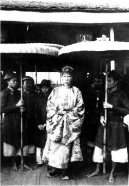

Ngày nay nghe đến hai từ “Lều Chõng”, có lẽ nhiều người sẽ lấy làm lạ vì những từ ấy từ biệt chúng ta mà đi tới chỗ mất tích đã gần ba chục năm nay. Nhưng mà trước hơn hai chục năm đi ngược trở lên, cho đến hơn một nghìn năm, “Lều Chõng” đã làm chủ vận mệnh của giang sơn cũ kỹ mà người ta tán khoe là “bốn nghìn năm văn hiến”. Những ông ngồi trong miếu đường làm rường cột cho nhà nước, những ông ở nơi tuyền thạch, làm khuôn mẫu cho đạo đức phong hóa, đều ở trong đám “lều chõng” mà ra. Lều chõng với nước Việt Nam chẳng khác một đôi tạo vật đã chế tạo đủ các hạng người hữu dụng hay vô dụng. Chính nó đã làm cho nước Việt Nam trở nên một nước có văn hóa. Rồi lại chính nó đã đưa nước Việt Nam đến chỗ diệt vong. Với chúng, nước Việt Nam trong một thời kỳ rất dài kinh qua nhiều cảnh tượng kỳ quái, khiến cho người ta phải cười, phải khóc, phải rụng rời hồn vía.
Ngô Tất Tố
Thời vụ số 109 ra ngày 10-3-1939.
Gần nửa tháng rồi, trong làng Văn khoa, lúc nào cũng náo nức, rộn rịp như sắp kéo hội. Đình trung điếm sở cũng như quán nước hàng quà chỉ làm chỗ hội họp của các ông già, bà già và những cây gậy trúc mũi sắt, những gói trầu cau lớn bằng cái đấu. Chuyện mới, chuyện cũ luôn luôn theo những bãi cốt trầu, những làn khói thuốc đồng thời tuôn ra và nổ như bỏng rang. Ông này nhắc làng mình thật được hướng đình. Ông kia đoán họ Trần kết ngôi mộ tổ. Bà này bảo cụ đồ phúc đức hiền hậu,chịu khó lễ các đền chùa. Bà kia khen cô nghè tốt nết đủ điều, biết phân biệt kẻ trên người dưới.
Cái hoa gạo nở đầu tháng giêng đã được tán là điềm tốt. Con khanh khách kêu trên các đình giữa ngày khai hạ, cũng được tôn là tin mừng. Câu chuyện tuy duy nhất chỉ quanh quẩn có thế, nhưng sự nô nức đã bắt người ta cứ phải chiếu đi chiếu lại bàn tán hết ngày ấy sang ngày khác, đầu làng cuối làng, thường có những tiếng cười nói rầm rầm.
Hôm nay lại càng tấp nập hơn nữa… Từ lúc trời mới sáng rõ, một hồi mõ đã tiệp tiếng vang của ba hồi trống cái khua động góc trời trên đình. Với chiếc dải lưng lụa đỏ bỏ múi sang cạnh sườn, lý trưởng không khác phó lý, trương tuần, tung tăng vác tay thước chạy nhảo từ đình đến điếm. Giữa một hồi tí u của những tiếng hiệu ốc đi đôi với dịp hiệu sừng, người ở các xóm kéo ra tíu tít. Chỗ này vài chục đàn ông đi với mai, thuổng, xẻng, cuốc gậy nạng và câu liêm; chỗ kia mươi người đàn bà và những quang, thúng, sảo, sọt lủng lẳng dưới đầu đòn gánh. Một toán lại một toán. Một lũ lại một lũ. Ống quần xắn trên đầu gối, gấu váy kéo lên đến nửa bụng chân, các toán, các lũ lần lượt tiến vào sân đình.
Một bầu ồn ào chiếm cả khu đình và điếm. Mặt trời từ trên ngọn tre xuyên sang mái đình tưng bừng đón tiếng chào của đàn chim sẻ. Ánh sáng lóng lánh chiếu trên núm quả dành của đôi đồng trụ cửa đình.
Cái ồn ào mỗi lúc một lớn. Chĩnh nước chè khô đã bị mấy chục bát đàn vục cạn. Hai thùng cau khô để đó dần dần biến thành đống bã trầu tàn. Hết thảy các toán, các lũ nhất tề đứng dậy. Như một đạo quân ra trận, mấy trăm con người rầm rập kéo ra đầu làng và vui vẻ tiến thẳng đến đoạn đường cùng tận địa giới.
Theo mệnh lệnh của ông lý, ông phó, ông trương, dân phu bắt đầu sang sửa từ đầu địa phận trở về. Các bầu tát nước đều được bồi đắp phẳng phiu. Những đám cỏ gấu ven đường đều bị giẫy sạch và hắt xuống ruộng. Người ta cắt hết những cây vẩy ốc bám vào ven thành. Người ta giật hết những cái nhánh tre khum khum rủ trên đường cái. Người ta quét hết những đống cặn rác kinh niên bừa bãi khắp các đầu ngõ ven đường. Hương lý vẫn thúc giục vội vã. Tù và vẫn rúc từng hồi dài từ xóm này đến xóm kia. Trời dần dần nóng thêm. Mấy trăm bộ mặt đỏ như đồng tụ mồ hôi đổ ra bóng nhoáng. Nhưng cái oi bức của tiết đầu hạ vẫn không ngăn nổi sự nô nức của đám người làm việc hết lòng.
Gần đến nửa buổi, bao nhiêu khúc đường khấp khểnh, gồ ghề đều trở nên những dải đất óng mượt như tấm lụa mới. Những tiếng cười nói vui như ngày tết, lại đưa các toán, các lũ dân phu lần lượt trở về sân đình.
Một tuần trầu nước vừa tàn, lý trưởng đứng trên thềm đình dõng dạc nói xuống:
– Trưa lắm rồi! Xin “chạ” đi rửa chân tay và cất đồ đạc. Rồi “chạ” đến luôn nhà quan tân khoa để còn làm rạp, kê phản, sắp sửa đũa bát mâm nồi, kẻo nữa không kịp?
Một hồi ồn ào dồn dập trong đám đông, đàn ông, đàn bà, lẻ tẻ ai về nhà nấy. Trương tuần cắt lũ tuần phu canh cổng làng. Lý trưởng, phó lý và tất cả những hạng đàn anh lật đật kéo vào nhà ông nghè mới. Ở đây, từ đầu cổng cho đến xó bếp toàn lả những vẻ vui mừng. Các ông, bà, cô, cậu trong quan họ đã họp tấp nập. Trên chiếc ghế ngựa quang dầu kê ở gian giữa, cố ông bắt chân chữ “ngũ”, ngồi bằng điệu bộ rất đắc ý. Phía dãy phản ở gian bên cạnh, ông trưởng họ Trần thong thả đưa chiếc quạt thước phẩy mấy chòm râu trắng xóa, bàn định các việc sẽ đến trong ngày mai.
Ngoài sân, cố bà cũng như cô nghè, tất tả chạy ngược chạy xuôi, vừa sắp sửa các thứ đồ dùng, vừa cắt đặt việc này việc khác. Sau mấy cái vái cung kính dâng khắp các cố ông, cố bà và các vị già lão, lý trưởng, phó lý và bọn trùm trưởng ghé ngồi vào hàng ghế cuối cùng. Dân làng kéo đến mỗi lúc mỗi đông. Từ nhà dưới đến nhà trên, kẻ đứng, người ngồi, lố nhố như một khu chợ. Theo lời cắt cử của các vị tôn trưởng, những người “làm giúp” tới tấp đi tìm công việc. Mượn mâm, mượn nồi, mượn bát đĩa và gánh nước đổ đầy các chum, các vại, đó là phận sự của đàn bà. Còn phe đàn ông thì chia ra thành hai ban: một ban chôn tre, dựng rạp, kê phản, kê ghế, sắp đặt các đồ bài trí, một ban nữa vào chuồng bắt lợn, làm gấp mấy chục mâm dấm ghém để kịp làng xóm họ mạc ăn tạm bữa trưa.
Công việc bắt đầu túi bụi. Tiếng người hò thét, tiếng mâm bát đụng nhau, hòa với tiếng lợn kêu í éc ngoài vườn làm thành cái vọng ầm ầm của một đình đám to lớn. Hơi lửa trong bếp hợp với hơi người các nơi càng tăng thêm sức nóng của trời hè. Đúng trưa, cỗ bàn làm xong, hai tòa rạp lớn cũng vừa lợp kín. Những chiếc chiếu hoa dài thườn thượt như lá cót đại lần lượt phủ kín các dãy giường phản từ trong nhà ra ngoài sân. Hàng mấy chục mâm rau nộm thịt mỡ chất đầy trong những bát đàn, đĩa đàn, la liệt đặt khắp các nhà các rạp.
– Xin mời bà con hãy đi xơi cơm kẻo đói. Các việc để đó ăn xong rồi ta hay làm.
Lời nói của ông trưởng họ Trần không kém tiếng hò của ông đại tướng đứng đầu ba quân, nó có sức mạnh khiến cho mọi người răm rắp đứng dậy. Đàn ông với đàn ông, đàn bà với đàn bà, bốn một, tám hai làng xóm, họ mạc tự ý rủ nhau, tiện chiếu nào ngồi vào chiếu ấy. Mâm này gọi rượu, mâm kia gọi cơm, rồi mấy mâm khác vấm véo giục lấy nước canh nước mắm. Lối đi chật hẹp trong mấy gian rạp thành chỗ chen nhau của người ra vào.
Giống như lớp tằm ăn rỗi, một loạt năm sáu chục mâm nhất tề nhấc chén cất đũa. Mặt trời chênh chếch chiếu vào đầu rạp, các mâm chỉ còn bát không, đĩa không. Bằng một giọng nói chững chạc, ông trưởng họ Trần tỏ ra người rất thạo việc:
– Xin mời bà con ăn trầu, uống nước, rồi thì ai vào việc ấy đi cho. Xem chừng công việc hãy còn nhiều lắm. Ta phải làm gấp mới được!
Bao nhiêu mâm cỗ ăn tàn lần lượt bị đưa xuống khu sân bếp, để nhường các chiếu trong rạp cho những đĩa trầu cau khô và những đoàn ấm tay đựng nước chè xanh. Tiệc trầu nước không đầy một khắc. Mọi người ồ ạt đứng lên.
Lúc này công việc càng rộn rịp. Ở đằng sau nhà những người vật trâu bò reo ầm ĩ. Ở trong rạp, có một đoàn dao thớt ký cốc băm thịt, băm xương. Và ở trước sân, mấy chục chiếc chày huỳnh huỵch nện xuống đáy cối đá đại. Một đám vàng vàng đỏ đỏ nghễu nghện từ dưới nhà bếp lên nhà trên. Đó là các thứ xôi gấc, xôi dành và xôi lá diễn đóng trong những chiếc “mâm dàng” sơn son.
Góp vào đó, mỗi mâm thêm một cái sỏ lợn, hoặc cái “lăm” lợn, một nậm rượu và một đĩa trầu. Ông trưởng họ Trần xúng xính trong chiếc áo tế màu lam cung kính đi theo mấy mâm xôi thịt để thay mặt cố ông lễ yết các nơi đình, chùa, văn chỉ, và các nhà thờ đại tôn, tiểu tôn. Vọng canh đầu cổng ‘tùng tùng’ mấy tiếng trống báo. Tiếp đến một tràng pháo nổ liên thanh. Hai mâm cau tươi đưa hai ông bạn thân của cố ông đến mừng quan nghè. Bằng một dáng bộ ung dung, cố ông từ trên ghế ngựa quang dầu khoan thai thò chân xuống đất. Ngài sẽ sàng xỏ chân vào giày và trịnh trọng bước ra đầu thềm. Rồi vái một vái gần sát mặt đất, cố ông cung kính mời quí khách lên thẳng nhà trên.
Trống cái ngoài cổng lại điểm mấy tiếng giật giọng. Một lũ cai tổng, phó tổng, lý dịch các xã trong tổng, lố nhố theo mấy bao chè sinh hậu và một hòm pháo bàn đào khúm núm tiến vào trong rạp. Mấy ông quan họ còn đương vồn vã mời khách vào ghế, và mấy ông khách hàng tổng còn đang đưa đẩy nhường nhau ngồi trên, thì ở ngoài cổng lại có mấy tiếng trống cái báo hiệu.
Theo hình thế của đám rồng rắn, một bọn chừng bốn mươi người kéo dài từ cổng vào sân với chiếc khay vuông có để vài bức câu đối nhiễu đỏ. Giờ này mà đi, trống báo luôn luôn không dứt, khách đến mỗi lúc mỗi nhiều. Bọn này ngồi chưa yên ghế, bọn khác đã rầm rập kéo vào. Mấy ông quan họ chuyên việc tiếp khách, ai nấy nhễ nhại mồ hôi, những cậu học trò bé con cuống cẳng chạy không kịp nước để khách dấp giọng.
Trên chiếc án trước thềm, chè, pháo, cau tươi chất đầy như quả non bộ. Liễn con công, câu đối vóc nhiễu, treo khắp vách, khắp tường. Những cỗ giò, nem, ninh, mọc kế tiếp nhau từ phía bếp đệ lên. Khách khứa lục đục vào tiệc. Bọn nào đến trước ăn trước, bọn nào đến sau ăn sau. Mâm này bưng ra, mâm kia bưng vào. Trong rạp cũng như trong nhà, không lúc nào không có vài mâm ăn uống.
Trời gần tối, khách đã hơi vãn. Hồi trống thu không của điếm canh vừa tan, những cây bạch lạp, những quả đèn lồng, những đĩa dầu trong các quang tre lần lượt theo nhau bắt lửa. Ngoài sân, trong rạp ánh sáng rực rỡ như ban ngày. Ông trưởng họ Trần cởi tấm áo lam trao cho người nhà cất đi rồi gọi lý trưởng, phó lý đến hỏi:
– Thế nào, những đồ hành ngơi ngày mai, các thầy sắp sửa đủ chưa?
Lý trưởng nhanh nhẩu:
– Trình cụ, chúng con sắm sửa đâu đấy cả rồi.
Phó lý lễ phép nói thêm:
– Trình cụ, còn thiếu hai cái cán cờ tứ linh, vì bị mọt gẫy, chúng con đã tìm đôi sào phơi dùng tạm.
– Những ai đi rước? Cắt cử xong chưa?
– Bẩm đã! Tất cả hơn một trăm suất, toàn là người làng, chúng con không dám cắt đến ông nào trong quan họ.
Ông trưởng họ Trần hơi cau lông mày:
– Cái đó là lẽ tất nhiên. Việc khác, dân làng cũng không được phép cắt người quan họ đi rước, huống chi việc này… Thế các thầy có dặn những người vào việc phải ăn mặc cho tử tế không?
– Bẩm có. Chúng con đã bắt dân làng đều mặc áo đỏ và thắt dải lưng màu xanh. Ai không có sẵn thì phải đi mượn.
Ông trưởng họ Trần ra bộ vừa ý:
– Phải cho trang trọng một chút mới được… Còn có hàng tổng, hàng huyện trông vào. Không nên cẩu thả để cho người ta chê cười làng mình.
Một người tuần phu ở cổng đi vào, chắp tay đến đứng dưới thềm:
– Trình cụ, phường chèo đã đến.
Ông trưởng họ Trần ngẫm nghĩ giây lát:
– Ra bảo chúng nó cứ ngồi ngoài ấy. Lúc nào có người ra gọi sẽ vào.
Rồi, chỉ tay ra thẳng gian rạp chính giữa, ông ấy nhìn mặt lý trưởng, phó lý:
– Bây giờ, công việc đã thư, các thày hãy sai đứa nào thu xếp chỗ này, để cho phường chèo vào hát một lúc.
Lý trưởng, phó lý sung sướng như lính lệ được chuyến sai, họ dạ một tiếng rất gọn và cùng đem theo lệnh của ông trưởng quan họ xuống nẻo nhà dưới loan báo cho bọn trai làng.
Qua một hồi dọn dẹp, kê cúng, gian rạp chính giữa nghiễm nhiên thành một sân khấu lâm thời. Trống chầu trên thềm thủng thẳng điểm bốn, năm tiếng. Chừng hơn mười người phường chèo theo đôi hòm vuông lố nhố tiến vào. Trẻ con đua nhau hò reo. Trong rạp ồn ào như đám vỡ chợ. Sau khi mấy bộ quần áo đã vắt lên sợi dây thừng chăng suốt hai chiếc cột rạp, để ngăn cho nửa gian rạp thành một căn buồng, hộp ’phấn, hộp son và những mũ bạc, mũ vàng, mũ lông công, mũ cánh chuồn, la liệt bày ra nắp hòm mặt án.
Trống rung. Mõ điểm nhát gừng. Phèng phèng, chũm chọe đồng thời nổi lên. Trò bắt đầu diễn. Trước rạp, sau rạp và hai bên rạp, người đứng chật như nêm cối. Hết một hồi trống dạo trò, cả đám đều im phăng phắc để nhìn bộ miệng người kép giáo đầu đương mấp máy môi sau một chiếc quạt giấy. Đánh sạt một cái, cái quạt bị cụp hẳn lại, người kép lấy hết gân mặt, gân cổ, gân môi để ngân cho giọng thật dài:
– Nhớ thuở xưa tích cũ, có một chàng tên gọi Lưu Bình…
Mọi người xôn xao bảo nhau:
– À họ làm trò “Tây Dương nghĩa phụ”.
Đêm càng khuya, trò càng xô xát, khán giả càng nô nức. Người ta vỗ tay cười reo khi nghe anh hề cắt nghĩa “đại phong” là lọ tương. Và người ta tỏ vẻ ái ngại thương xót, khi thấy Lưu Bình lắc đầu nhăn mặt trước bát cơm thiu và quả cà mốc của nhà Dương Lễ.
Nửa đêm, trò vừa hết vở. Khán giả ồn ào giải tán sau một hồi trống tan trò. Ông trưởng họ Trần oai vệ ra lệnh cho bọn lý trưởng, phó lý:
– Bây giờ nửa giờ tý rồi, sang giờ sửu thì phải khởi hành.. Các thầy giục họ bưng mâm để chạ xơi rượu, không thì trễ quá.
Lại một lần nữa, ruột gan cô Thúy không kìm được sự hồi hộp. Và cái hồi hộp lần này có lẽ còn mạnh hơn mấy lần trước nhiều lắm. Trí nhớ của cô còn in rành rành. Cách đây vừa đúng một năm, bấy giờ cô mới có mười chín tuổi. Cái đêm sắp sửa thắng quần thắng áo để đi làm người nội trợ cho cậu khóa Trần Đằng Long, tim cô đã bị một phen rung động. Song lúc ấy cô chỉ tự thấy bẽn lẽn và cứ nghĩ quanh nghĩ quẩn những cảnh tượng đầu tiên và những câu nói thứ nhất của mình trong khi bắt đầu giáp mặt người bạn trăm năm. Thế mà thôi. Rồi đến hồi cuối tháng một năm ngoái, khi được tin chồng cô đỗ cử nhân, bụng cô lại nôn nao lần nữa. Nhưng cái địa vị của một cô cử vẫn không thay đổi hoàn cảnh của một cô khóa, cho nên lúc này ở trong lòng cô chỉ có một sự sung sướng êm đềm, nó không bắt cô kích thích nhiều quá. Lần này khác hẳn. Tuy quãng đường từ cô cử lên đến cô nghè cũng không lạ hơn quãng đường từ cô khóa lên đến cô cử, nhưng cái khó nghĩ cho cô là cuộc vinh qui ngày mai.
Bởi vì từ thuở tấm bé đến giờ, chưa từng thấy người con gái nào được cái vinh hạnh như mình, và chưa được rõ cái quang cảnh ấy ra sao, cho nên óc cô cứ phải loanh quanh suy tính: “Không biết chốc nữa mình sẽ phải ngồi thế nào, phải đứng thế nào, và phải ăn nói thế nào cho đúng điệu bộ một bà tiến sĩ?”. Hỏi mãi, cô vẫn không tìm thấy câu trả lời. Trống canh ngoài điếm chợt điểm ba tiếng muốn báo để cô biết cái giờ lên đường sắp đến nơi rồi. Khêu rõ ngọn đèn trên quang, cô vội xổ đầu ra chải. Mái tóc mấy lần rẽ đi rẽ lại, mà khi ngó vào trong gương, đường ngôi trên trán vẫn chưa được ngay. Cô đương băn khoăn, muốn sửa thêm cho nó thật chỉnh, ngoài rạp vừa nổi hồi trống tan trò. Cố bà ở ngoài bước vào, giục cô sang phòng bên kia cùng ăn cơm tạm.
Theo lời mẹ chồng, cô vội bỏ gương, bỏ lược đi ra. Sau khi điểm tâm bằng một đĩa xôi và hai bát chè, cô lại sang phòng bên này. Bổ cau, têm trầu, giở gói thuốc lá quấn vài chục điếu, rồi cô xếp cả vào cái tráp tròn sơn son, và thêm vào đó ít cánh hoa hồng, hoa huệ.
Nhà dưới, làng xóm ăn uống đã xong. Ai nấy tấp nập đi lấy cán cờ, cán quạt và tìm đòn võng. Trống ngực khi ấy lại càng đập mạnh, cô vội mở rương lấy hết mấy bộ quần áo mới ra thay. Quần cũng như áo, các cái đều vừa như in, chỉ tiếc đôi giầy vân hài khí chật, làm cho hai bàn chân cô đều thừa một ngón chân út.
Ngoài rạp, chiêng, trống xen nhau thôi thúc, hết một hồi thứ nhất, cố ông, cố bà đã cho gọi cô ra đứng chờ sẵn trên thềm. Bốn chiếc võng đào, đòn cong, mui luyện cũng đã chực ở dưới sân. Đợi cho dứt hồi chiêng trống thứ hai, thì ba chiếc võng cũng hạ thấp xuống, cô và cố ông, cố bà mỗi người bước lên một võng. Chiêng trống điểm thêm một hồi và ba tiếng nữa, tức thì bốn đôi đèn lồng dẫn đường cho bốn chiếc võng từ từ tiến ra ngoài cổng.
Cái võng bỏ không ra trước rồi đến võng cố ông, rồi đến võng cố bà, rồi đến võng của cô nghè. Cuối cùng thì bọn trai làng khiêng vác cờ quạt tàn lọng.
Ra khỏi cổng nhà, chiêng trống lại im, lọng vẫn cụp cờ vẫn cuốn, cả đám lần lần tiến trong bóng cây âm thầm. Nếu không có tiếng nói chuyện rầm rầm và mấy ngọn đèn le lói, có khi nhiều người sẽ ngờ là toán kỳ binh kéo đi đánh úp chỗ nào. Tới đầu địa phận, xa trông trước mặt, thấy có bóng người lố nhố trong đám ánh lửa vàng vàng. Ai nấy đều biết ngay rằng: đó là những người hàng tổng cũng đi dự vào cuộc rước ấy.
Mấy người đàn anh trong bọn dân phu hàng tổng cung kính vái chào hai cố và bà nghè. Hai toán người này liền nhập vào làm một, rồi cùng thẳng đường trẩy đi. Lần này là lần đầu tiên trai làng Văn khoa được làm những kẻ đồng hương với quan nghè, cho nên mỗi người đều nhận thấy mình vinh dự hơn hết những người các làng khác trong tổng. Họ tự coi họ là chủ, còn những người kia là những kẻ phục dịch. Trời gần sáng. Trên đường đi đã rõ bóng người. Trong bọn dân làng Văn Khoa, một ông vác cờ ngoảnh lại nhìn lũ hàng tổng, rồi mỉm cười và nói với người bên cạnh:
– Thảo nào người ta vẫn bảo: “Chưa đỗ ông nghè đã đe hàng tổng”. Coi vậy!…, đỗ đến ông nghè cũng có sướng thật. Cả tổng đều phải đi rước!
Đến ông vác lọng nối lời:
– Ấy là bây giờ đã giảm hơn xưa nhiều lắm… Hôm qua, tôi thấy các cụ nói rằng: ngày xưa, trong đời nhà Lê nhà liếc gì đó, mỗi khi có một ông nghè mới đỗ, hàng tổng, hàng huyện, đều phải đem cờ đem quạt đến tận Kẻ chợ mà đón. Nhưng từ năm Gia Long nguyên niên mà đi, Kẻ chợ dời vào Thuận Hóa, người Bắc tới đó xa quá, các quan sợ làm phiền dân, cho nên chỉ bắt rước từ tỉnh nhà trở về mà thôi.
Rồi ông vác tàn nói xen:
– Phải rồi. Tôi cũng nghe nói thuở xưa ông nghè oai lắm. Hễ mà đỗ lên một cái thì là nội những ruộng đất trong tổng muốn cắm chỗ nào cũng được. Chẳng những cắm đâu dân chịu đấy, mà lại còn được hàng huyện làm cổng, hàng tổng làm nhà cho nữa, thế mới sướng chứ!
Và ông cầm cờ vắt lại:
– Có thế thật đấy. Tháng trước, khi được tin mừng ở kinh đô báo về, cô nghè có cho gọi tôi vào dọn nhà cửa, sân vườn. Gần trưa, các cậu học trò về hết, cố ông bảo tôi lên thềm nhà học hầu nước. Lúc ấy, tôi thấy cố nói với cụ trưởng họ thế này: “Làng K.Q.Đ. ở cạnh đường xứ, chỗ gần sông đông, trước kia là đất làng Vân. Về sau có ông họ Đinh - cố có nói tên nhưng tôi quên mất - có ông họ Đinh ở K.Q.Đ. thi đỗ tiến sĩ, mới cắm khu đất ấy làm dinh. Rồi thì những kẻ tôi tớ cũng theo đến mà ở. Dần dần thành ra một cái làng”. Xem thế thì biết cái chuyện “hàng huyện làm cổng, hàng tổng làm nhà” mà trong phương ngôn đã nói là chuyện có thật…
Cả tụi chép miệng ra ý tiếc rẻ:
– Hoài của! Nếu như lệ ấy còn đến ngày nay, có lẽ chúng mình cũng được đi theo quan nghè để lập thêm làng Văn khoa nữa.
Câu chuyện đương còn tiếp tục, bên đường chợt có dãy quán bán quà. Theo lời cố ông ở trên đưa xuống, hàng tổng đều được dừng lại tạm nghỉ. Bước chân ra đi từ đầu canh ba đến giờ, bọn phu hàng tổng chừng đã thấy đói. Họ kéo ồ vào khắp các quán, kẻ có tiền ăn quà ăn bánh, kẻ không tiền thì giở cơm nắm ra chấm với muối vừng.
Lúc ấy mặt trời đã lên độ hai con sào, trên đường, ngoài khách đi chợ, loáng thoáng có vài bọn đi xem. Bọn phu hàng tổng mỗi người vừa kịp uống một hớp nước, hút một điếu thuốc thì đã được lệnh cử bộ. Chuyến này là lượt trở đi, chưa cần phải giữ nghi vệ. Người đi vẫn quãng thưa quãng mau, cờ quạt tàn, lọng vẫn nghiêng ngả, ngả nghiêng, cái chổng đầu lên, cái chúc đầu xuống. Vào khoảng nửa buổi thì tới cửa tỉnh. Hàng phố lố nhố kéo nhau ra xem.
Ngày trước, những ông nghè mới, sau khi ở kinh, lĩnh cờ biền về thẳng tỉnh nhà để vào lễ quan tổng đốc đều phải ra luôn nhà trọ, rồi thì hàng tổng đến đó rước về. Nhưng quan tổng đốc bây giờ là bậc hiếu học, thấy ông tân khoa Trần Đằng Long trẻ tuổi, linh lợi, ngài càng yêu mến, nên mới phá cách mà lưu ông ấy ở lại trong dinh và đã phi trát về huyện, sức các dân xã phải vào trong dinh đốc bộ mà đón.
Theo lệnh ấy, võng, lọng, cờ quạt, cứ việc nghênh ngang tiến vào cửa thành. Đến cổng dinh quan tổng đốc, cố ông, cố bà và cô nghè xuống võng đi bộ. Giữa mấy tiếng trống báo rất hùng dũng của bọn lính canh trên chòi, một người đội tuần lật đật ở trong chạy ra. Cố ông, cố bà và cô nghè sửa lại khăn áo cho thật tề chỉnh để theo hắn đi vào trong dinh.
Làng tổng xúm lại từng tốp ngồi lê ngồi la ở các bãi cỏ ngoài dinh, kẻ ăn trầu, người hút thuốc vặt. Cờ quạt võng lọng, dựa ở bên đường ngổn ngang. Nửa giờ sau, giữa lúc dân phu đang vây quanh chĩnh nước chè tươi và chiếc điếu cày, thình lình mấy ông bô lão đều quay vào phía cửa dinh, ai nấy cong lưng vái một vái cực kỳ trịnh trọng.
Quan nghè đã đi với cố ông từ trong dinh ra. Cả bọn hàng tổng răm rắp đứng lên, ai vào công việc của người ấy. Bốn chiếc đòn võng ghếch đầu ven tường cũng như số nhiều cờ quạt, tàn, lọng đều được nhấc ra một cách vội vàng. Các võng đều chế theo kiểu bát cống, mỗi cái phải tám người khiêng. Với chiếc nón dấu đội đầu và bộ áo xanh nẹp đỏ, phủ tấm ban kiên màu đỏ, tất cả ba mươi hai người phu cùng nhất tề đỡ tay vào các đầu đòn để hạ cho mấy chiếc võng thấp gần mặt đất.
Giống những ông nghè bằng giấy mà hàng năm đến rằm tháng tám, người ta vẫn thấy ở cỗ trông trăng, quan nghè đi ủng đen, mang xiêm xanh, bận áo thụng lam và đội mũ cánh chuồn lóng lánh những bông hoa bạc. Sau khi vị tân khoa ấy đã bệ vệ bước chân lên võng và ngồi chống tay vào chiếc gối xếp đặt ở đầu võng, cố ông, cố bà, lần lượt trèo vào võng mình.
Sau rốt đến lượt cô nghè. Với hai gò má đỏ bừng như muốn biểu lộ một cái tâm trạng nửa mừng nửa thẹn, cô này nhìn trộm bộ điệu lên võng của chồng và của cha chồng, mẹ chồng. Rồi sè sẽ xếch cao hai ống quần lĩnh và rón rén cất cái gót của chiếc vân hài,cô ghé ngồi vào chỗ mép võng để co hai chân lên võng. Mấy chục người nhất tề nâng các đòn võng lên vai và đứng im lặng chờ nghe hiệu lệnh.
Đám rước lúc ấy bắt đầu sắp thành hàng ngũ. Đầu quân là lá cờ đỏ có thêu bốn chữ “nhất giáp tiến sĩ”. Rồi đến bốn chiếc lọng vàng nghiêng đầu vào nhau che cho mấy chữ “ân tứ vinh qui” đề giữa tấm biển sơn son chung quanh có lớp riềm nhiễu đỏ. Rồi đến một chiếc trống đánh đu dưới cây đòn gỗ bắc dọc trên vai hai người dân phu. Kề đó, ông thủ hiệu trống luôn luôn tỏ vẻ oai vệ bằng bộ mũ tế, áo tế, cái dùi trống chênh chếch gục đầu vào ngực và đôi hia đen xúng xính dưới hai ống quần màu “dúm”.
Tiếp đó, bốn cậu bé con đứng ra bốn góc để chiếm lấy một khu đất vuông vắn như hình bàn cờ. Cả bốn, ai cũng như nấy, áo đỏ, dải lưng xanh, xà cạp màu xanh, tay trái chống vào cạnh sườn, tay phải vác lá cờ phất khuôn khổ vừa bằng vuông yếm. Rồi đến ông cầm trống khẩu. Rồi đến võng của quan nghè. Đi kèm ở hai bên võng, hai người rước đôi lọng xanh chóp bạc, hững hờ giương ở cạnh mui võng. Và thêm vào đó, bên này một người vác chiếc quạt lông, bên kia, một ông lễ mễ cắp cái tráp sơn đen và xách một chiếc điếu ống xe trúc.
Sau võng, phấp phới năm lá cờ vuông, đủ cả năm sắc xanh, đỏ, vàng, trắng và tím. Đứng đúng như năm cái chấm ở mặt “ngũ” của con thò lò, năm ông vác cờ đi giầy tầu, mặc áo nhiễu điều, đội mũ đuôi én, và đều khum tròn hai tay để giữ lấy cây cán cờ cắm trên chiếc cối gỗ đeo ở trước bụng. Rồi đến ông cầm kiểng đồng. Rồi đến võng của bà nghè.
Bằng tấm áo lụa màu hồng điều và vòng khăn nhiễu màu cánh chả vấn kiểu vành dây, hai người con gái rón rén đi hầu cạnh võng để vác cây quạt lá vả và bưng cái quả sơn son. Cũng như võng của quan nghè, võng của bà nghè cũng được hộ vệ bằng đôi lọng xanh, chỉ kém có cái chóp bạc.
Rồi đến võng của cố ông. Rồi đến võng của cố bà. Rồi đến mấy ông bô lão khúm núm trong những tấm áo thụng màu lam. Rồi đến các thứ kèn trống đàn sáo. Rồi đến một dãy chừng bốn, năm chục lá cờ sắp theo hàng một, cái nọ cách cái kia độ vài ba thước. Cuối cùng thì là hai người khiêng chiêng. Ông thủ hiệu chiêng phục sức và điệu bộ không khác ông thủ hiệu trống, cũng áo tế, cũng mũ tế, cũng đôi hia đen, và chiếc dùi dựa luôn luôn múa ở cửa tay áo thụng.
Với chiếc loa đồng vác vai, lý trưởng Văn Khoa và nhiều chức dịch hàng tổng tung tăng chạy từ đầu nọ đến đầu kia, để làm cho hết phận sự những người dẹp đám.
Sau ba hồi trống cái gióng nhau với những tiếng chiêng bu bu, tiếp đến một hồi trống khẩu đi đôi với hồi kiểng đồng, đám rước lục tục theo con đường cũ đi ra, đàn sáo kèn nhị nổi lên inh ỏi. Ra khỏi cổng thành độ vài chục bước, ông thủ hiệu trống thình lình thúc ba tiếng trống díp nhau, để ra hiệu cho hết mọi người đều phải dừng lại. Rồi thì một tay chống thẳng vào sườn, người giữ hiệu lệnh của đám rước đó khoan thai lui xuống năm bước. Và dang hai chân theo hình chữ “bát”, ông ấy múa chiếc dùi trống tiến lên năm bước để nện luôn vào mặt trống mấy tiếng tùng tùng. Dứt hồi tùng tùng thứ nhất, bốn cậu bé con cầm bốn lá cờ phất đồng thời quay mình đánh thót và cùng chầu mặt vào nhau. Sau hồi tùng tùng thứ hai, cả bấy nhiêu cậu nhất tề múa tít lá cờ trong tay để chạy cho hết chiều ngang của mặt đường cái, người ở bên tả xông sang phía hữu, người ở bên hữu xông sang phía tả. Luôn hồi tùng tùng thứ ba, các cậu lại đều quay tròn ngọn cờ và răm rắp lui về chỗ cũ. Đến hồi tùng tùng thứ tư, cờ lại múa bốn cậu lại cùng bước vào giữa đường. Rồi ai nấy đều cúi đầu xuống để phất lá cờ qua mặt và hứ một tiếng thật dài. Thế rồi, mỗi một tiếng tùng là một cái phất cờ, và mỗi cái phất cờ lại một tiếng “hứ”. Vừa đủ bốn lượt “tùng hứ”, ông thủ hiệu trống dõng dạc điểm thưa dùi trống để ra lệnh cho các cậu đó lùi lại chỗ đứng lúc nãy và quay mặt nhìn lên tiên quân.
Chiêng trống lại thủng thẳng đánh từng tiếng một, đám rước lại lần lần tiến lên. Đi hết con đường trong tỉnh, mặt trời vừa lên đến thẳng đỉnh đầu. Cả một khu vực mông mênh của bầu trời đều bị nhuộm thành màu vàng chói. Người đi trên đường luôn luôn ngửi thấy mùi khét. Cờ vuông, cờ chéo, hết thảy rũ rượi như lũ ấp mồ. Dân phu hàng tổng ai nấy sắc mặt đỏ gay, mồ hôi thấm ra ngoài áo. Chừng đã khó chịu với sự nóng nực, mấy người đi đầu sè sẽ giục nhau bước rảo cho chóng đến nhà. Nhưng ông thủ hiệu trống cố muốn kéo cho công việc của mình thêm dài, chốc chốc lại tiến ngũ bộ, thoái ngũ bộ, dang cánh tay múa dùi, nháy trống, để diễn một trận “tùng hứ”, làm cho cá đám đều phải dừng lại. Trời cứ nắng, chiêng trống cứ tùng tùng, bu bu… đàn sáo kèn nhị cứ thi nhau xuống chìm lên bổng. Thiên hạ đi xem đông như nước chảy. Nón sơn chen với nón lá, yếm áo lấp ló trong đám áo the. Người ta dắt nhau. Người ta co nhau. Người ta du nhau, đẩy nhau. Người ta lội bì bõm dưới ruộng lúa chiêm và leo tót vót trên các cành đa, cành gạo. Thân đường chật hẹp không đủ chỗ chứa. Đằng đầu cũng như đằng cuối, chen chúc những người là người. Cờ quạt võng lọng đều phải ùn lại như một toán quân bị hãm. Lý trưởng Văn khoa hùng dũng kề loa vào miệng: “Bớ hai bên hàng xứ! Dẹp ra để quan lớn tr…ẩy!”
Tiếng “trẩy” như bị dính ở miệng loa. Nó đã xoắn lại như vành trôn ốc và kéo dài ra như một sợi thừng. Đít loa”ngoáy” tròn độ năm sáu vòng, vẫn chưa tuôn cho đi hết dư hưởng của nó. Những người đứng gần đều phải chối tai. Cả một góc trời như bị xé toạc. Hàng xứ vẫn đâu đứng đấy, hình như không ai nhúc nhích. Ông lý của làng quan nghè lại phải trợn mắt phùng mang để “bớ hàng xứ” lần nữa. Cũng vẫn thế. Đường đi cứ bị ngăn cản như thường. Mấy ông tuần phu liền xắn tay áo chạy suốt hai bên dọc đường, và sẵn roi mây trong tay, họ vụt túi bụi một lượt. Đám đông tức thì dồn dập như một lớp sóng. Người nọ xô người kia, cố cướp lấy đường mà chạy. Bà già, trẻ con ngã sấp ngã ngửa ở các bờ ruộng. Mặt trời chênh chếch về tây. Đường về đã hết chừng hai phần ba. Vòm trời thỉnh thoảng điểm có bóng râm. Ánh nắng dần dần êm dịu. Tiếp đó, một trận gió nồm tứ dưới đồng chiêm nhẹ nhàng đưa lên. Cả đám đều tỉnh người ra. Những con rồng phượng trong các cờ quạt hết thảy lồng lộng múa nhảy như muốn theo tiếng đàn sáo cùng bay tít lên mây xanh.
– Ô kìa ông nghè!
– Ô kìa bà nghè!
Tiếng reo giật giọng thình lình bật lên giữa hồi chiếng trống vang lừng. Trăm nghìn con mắt đổ dồn vào đám lọng xanh đi trước. Mấy bức mành mành cánh sáo đã quấn lên sát mui võng lúc nào. Thiên hạ được dịp xem mặt cả nhà quan nghè. Ít kẻ nói đến cố ông, cố bà. Người ta chăm chú nhìn vào cô nghè nhiều nhất.
Trước sự chỉ trỏ của hàng xứ, cô nghè vẫn ra vẻ e lệ sượng sùng, tuy trong bụng cô đã cảm thấy vinh dự cực điểm. Luôn luôn cô phải nhai trầu phúng phính, vì sợ để cái mồm không dễ hóa ra người vô duyên. Và, luôn luôn cô phải cầm gương lên soi, vì sợ cốt trầu chảy ra ngoài mép. Có lúc muốn tỏ ra bộ chín chắn, cô giả vờ ngắm những cánh hồng con bướm trong chiếc quạt tầu. Rồi có lúc, muốn làm ra người nhanh nhẩu, cô lại đưa mắt nhìn ngược nhìn xuôi, nhìn từ con cò bay trên lưng trời, nhìn đến con trâu ăn cỏ ở dưới bờ lúa. Hai gối ngồi xếp tè he đã mỏi, nhiều lúc đã thấy chuột bó. Nhưng cô không dám duỗi ra, e rằng duỗi dài hai chân, không phải bộ điệu của người sang trọng.
Cái bụng dưới nhịn đái lâu quá nó đã phát tức anh ách. Mấy lần cô toan bảo phu hạ võng để mình đi đái nhưng rồi cô đều phải thôi. Bởi vì cô không biết rằng bà nghè theo chồng vinh quy có thể xuống võng đi đái được không. Và cô lại còn sợ rằng, trong đám người xem đông nghịt thế này thì đi vào đâu. Không lẽ việc ấy cũng bắt hàng tổng dẹp chỗ…
Bóng xế chiều. Nắng nhạt dần. Trên đường đã thấy hơi mát. Người đi xem lại càng đông thêm. Đoàn võng lọng của hai vợ chồng ông nghè vừa qua một quãng ngã tư, thì ở cạnh đường bỗng có tiếng kêu tru tréo:
– Chị làm sao thế? Chị Ngọc! Chị làm sao thế. Chị Ngọc! Ối trời ơi! Ối các ông, các bà ơi! Cứu chị tôi với! Chị tôi làm sao thế này!
Tiếng kêu cấp bách phát ra một cách thình lình, làm cho chiêng trống đàn sáo tự nhiên im bặt, cả người đi rước lẫn người đi xem tự nhiên đứng lại. Một người con gái trạc hai mươi tuổi đương nằm sóng sượt trên bãi cỏ của con đường ngang, đầu tóc rũ rượi, hai mắt nhắm nghiền, bọt mép đùn ra trắng xóa. Và một người nữa, cũng con gái, tuổi chừng mười lăm, mười sáu trở về, đương ôm lấy đầu người này vừa lay vừa kêu. Rồi ở cạnh đó, đôi thúng lồ và đôi tay nải lổng chổng lăn xuống vệ đường.
Những người ở gần cuống quít xúm lại cấp cứu, kẻ rằng nâng cô ấy dậy, người bảo cứ để cô ấy nằm yên. Mấy bà lão già vấm véo giục nhau đái ra lòng bàn tay lấy nước xoa vào mặt và đổ vào miệng cô gái phải cảm.
Cô gái phải cảm vẫn bất tỉnh nhân sự. Tiếng gọi chị và tiếng kêu cứu của người em gái mỗi lúc một thêm luống cuống, hình như đầu lưỡi đã bị líu lại. Lúc ấy cô nghè và cố ông, cố bà tuy có dừng võng nhìn ra, nhưng ai nấy đều giữ bộ mặt thản nhiên.
Riêng có quan nghè xem chừng cũng thấy cảm động, ngài gọi lý trưởng Văn Khoa đến cạnh mà hỏi:
– Có phải cô Ngọc vẫn bán giấy bút ở Chợ Kim Bảng không?
Lý trưởng lễ phép:
– Bẩm phải.
Quan nghè chỉ tay ra nẻo cây đa cạnh đường mà bảo:
– Thầy chạy đến bảo mấy mụ đàn bà làm phúc cùng vực cô ấy vào chỗ mát kia! Ai lại để cho người ta nằm phơi dưới nắng như vậy? Tội nghiệp!
Trống lại thúc. Chiêng lại khua. Đàn sáo lại đua nhau réo rắt. Đám rước lần lần tiến về đường làng Văn Khoa. Con đường đã được cả làng trau chuốt từ sáng hôm qua và đã nằm chờ quan nghè một đêm và một ngày trời.
Đêm qua, trời lại nực hơn mấy đêm trước, Vân Hạc không thể ngồi yên xem sách. Với một chiếc gối và một chiếc chiếu, chàng lủng củng đổi chỗ khắp cả khu vực trong nhà để tìm một nơi mát mẻ nhưng trong bầu nung nấu của trời tháng năm, đâu cũng như đâu, ngọn cây, ngọn cối đều đứng chăm chắm, không đâu có một tí gió. Từ thềm ra sân, từ sân ra vườn, rồi từ vườn ra bờ ao, mỗi chỗ chàng chỉ trải chiếu nằm được giây lát, liền thấy hơi nóng như từ gầm chiếu bốc lên, lại phải cuốn chiếu cắp gối chạy đi nơi khác, y như một người hóa dại.
Mãi đến “gà gáy thứ hai”, trời mới hơi dịu, ngoài sân, ngoài vườn, hơi sương tỏa ra mù mù chàng bèn vào buồng học, ngả lưng trên một chiếc ghế ngựa, thiu thiu nhắm mắt. Mới chợp đi được một lúc, thì một tiếng kẹt cửa đã làm cho chàng thức dậy. Trời vừa sáng rõ. Mấy con chim sẻ ríu rít kêu trên giàn hoa. Cánh cửa mở to, một cậu học trò và chiếc nón son úp ở sau lưng theo chân thằng nhỏ khép nép bước đến trước án thư, vái một vái, rồi đặt một chiếc phong bì lên án:
– Thưa bác, thầy con sai con trình bác cái thư.
Cậu ấy lui ra, khoanh đứng tựa vào cửa. Sau một cái ngáp thật dài, chàng oằn oại ngồi dậy bằng một điệu bộ mệt nhọc. Rồi chàng cầm lấy phong thư và mở ra đọc:
“Trình trước văn kỷ anh Đào Vân Hạc.
Độ này chắc anh để hết thì giờ vào việc quyết khoa , cho nên sao lãng cả tình bè bạn. Hơn một tháng nay, không được gặp anh, cỗ kiệu đã mốc, bàn cờ đã bị cát bụi phủ đầy. Tôi vẫn khao khát tôn nhan, như lúc nắng cạn khao khát trận mưa rào. Nay nhân dậy sớm, ra thăm vườn hoa thấy một giò lan bạch ngọc mới nở, sự khao khát ấy lại càng bồn chồn. Vậy xin anh hãy phí một chút quang âm, tạm dời gót ngọc đến túp lều tranh, ta cùng xem hoa nghe chim hót, để tiêu ngày dài của mùa hè.
Tôi đương quét lối “hoa rụng” đợi anh, mong rằng anh đến ngay cho.
Hoa sen đương nở, kính chúc vạn an. Còn nhiều chuyện khác, để lúc gặp nhau sẽ nói.
Sao Tuế ở ngôi Qúy Dậu, trước tiết Hạ chí năm ngày.
Đệ Nguyễn Khắc Mẫn bái thư.”
Đọc xong, chàng để mảnh thư xuống án mỉm cười và nhìn vào mặt cậu học trò kia:
– Cháu về thưa với thầy rằng: bác bảo cho người mua rượu và làm đồ chén ngay đi. Bác sẽ sang bây giờ.
Dạ một tiếng rất lễ phép, cậu học trò ấy lại vái Vân Hạc một vái rồi ra. Vân Hạc đứng dậy ra sân, chàng vừa múc nước rửa mặt vừa lẩm bẩm nghĩ thầm: “Hôm nay anh chàng tự nhiên cao hứng thế này, chắc có việc gì quan hệ. Ta phải sang ngay kẻo hắn mong đợi”.
Rồi chàng lững thững trở vào buồng học sắm sửa khăn áo. Thằng nhỏ lệch kệch để lên án thư bộ khay chén và ấm nước sôi đặt trên mảnh gỗ có chuôi như cái bê đựng vôi của thợ nề. Chàng vừa pha nước vừa lẩm bẩm đoán thử câu chuyện chốc nữa Khắc Mẫn sẽ nói với mình. Nhưng mà không sao đoán được. Là vì từ trước đến giờ, ở giữa hai người không có việc gì có thể dùng làm manh mối cho sự suy nghĩ. Uống tàn ấm nước, chàng liền cắp nón ra cổng.
Ngoài đồng, người làm đã đông. Trên các ruộng nước đục, lổm chồm những mô đất cày, trâu bò đang gò lưng tôm kéo bừa theo hiệu lệnh hùng dũng của tiếng “vặt diệt”.
Mặt trời lên khỏi ngọn tre, chàng mới đến làng Bình Khê, chỗ dạy học của Nguyên Khắc Mẫn, cái làng chỉ cách chỗ ở của chàng độ một thôi đường. Lớp học buổi sáng chưa xong, trong nhà Khắc Mẫn tiếng ê a vẫn còn ầm ĩ. Chàng vừa bước vào khỏi cổng, Khắc Mẫn lật đật đứng dậy đón chào bằng dáng điệu vồn vã đon đả.
Những tiếng ê a trong nhà tự nhiên im bặt. Một lũ học trò lố nhố đứng dậy với những khóm hồng mao ngất nghểu trên đầu. Rồi cậu nào cậu nấy chắp tay vái như bổ củi:
– Lạy bác ạ!
– Lạy bác ạ!
Gần hai chục tiếng “lạy bác” lao xao theo nhau thành một dây dài, khiến cho Vân Hạc lia lịa gật đầu không kịp. Chàng phải xua tay ngăn lại:
– Các cậu cứ ngồi yên mà học.
Cả bọn học trò lần lượt ngồi xuống. Rồi thì những tiếng ê a lại thi nhau nổi lên. Khắc Mẫn vui vẻ mời Vân Hạc ngồi vào bộ phản chính giữa, cái phản cao nhất các phản trong nhà. Thầy sẽ sàng mở nắp giỏ, rót một chén nước chè nụ đưa đến trước mặt Vân Hạc. Mùi hoa sói theo làn khói nước bay lên ngạt ngào. Khắc Mẫn vừa cười tủm tỉm vừa hỏi:
– Đêm qua huynh ông đã đi hát nhà trò, thế mà không rủ tiểu đệ đi với?
Với Khắc Mẫn, Vân Hạc tuy kém đến hai chục tuổi nhưng vẫn được nhận là bạn vong niên, cho nên mỗi lúc nói chuyện, hết sức suồng sã, không cần phải giữ ý tứ. Hai người vẫn thường gọi nhau là anh, có khi đến mày tao nữa. Lần này tự nhiên thấy Khắc Mẫn tôn mình là huynh ông, Vân Hạc không khỏi ngạc nhiên, song chàng cũng cứ làm lơ và vẫn trả lời như lối mọi ngày:
– Ai bảo anh thế?
Khắc Mẫn ra vẻ đắc ý:
– Nếu không đi hát, làm sao huynh ông ngủ đến bạch nhật chưa dậy?
Vân Hạc chừng không chịu nổi cái lối kiểu cách của bạn, chàng liền nói nửa thật nứa bỡn:
– Nếu anh không vứt hai tiếng huynh ông của anh vào lọ mắm thối, thì tôi đứng dậy lập tức, không thèm nói với anh một câu nào nữa.
Khắc Mẫn bèn cười khì khì:
– Thế thì đêm qua anh đi hát với những thằng nào, phải thú tội ngay đi đã!
Vân Hạc uống cạn chén nước rồi đáp:
– Chẳng đi hát với thằng nào cả. Vì lúc chập tối nực quá, mãi tới gần sáng mọi ngủ, cho nên dậy trưa. Anh bảo đương lúc trời nắng như nung thế này, ai có động dại mà chui đầu vào nhà trò?
Khắc Mẫn vẫn cười giòn giã:
-Té ra anh bị ngờ oan. Thế mà từ nãy đến giờ, tôi cứ oán anh đi chơi không rủ anh em.
Một cậu học trò cắp sách đứng lên với đôi ống mũi thập thò bò xuống gần miệng, song song đo nhau như đôi ngà voi. Khép nép tựa lưng vào tấm cánh cửa, cậu ấy nói bằng tiếng mũi:
– Thưa thầy xin đọc!
Khắc Mẫn sẽ giương đôi mắt:
– Hãy đi hỉ mũi đi đã! Có một bài học, đọc đi đọc lại mấy lần không trơn. Ngày mai mà còn thế nữa, thì mày chết đòn!
Hình như sợ rằng bước đi chỗ khác, mấy chữ trong bụng sẽ bị rơi mất, cậu ấy liền giơ tay áo quệt ngang lỗ mũi, cho “ngòi mũi” nguệch sang một bên, rồi cất giọng ề à:
“Hỗn mang chi sơ
Vị phân thiên địa.
Bàn cổ thủ xuất.
Thủy phán âm dương…“
Vừa dứt hai tiếng “âm dương”, cậu ấy sung sướng như đã trút được gánh nặng trên vai, liền kết một câu gọn tách:
– Thưa thầy xin hết.
Rồi cậu ấy nhanh nhầu lui ra, nhường tấm cánh cửa cho một cậu khác tựa hồng mao vào. Sau khi đã chiếu lệ xin phép thầy đồ, cậu này đằng hắng ba tiếng để đưa ở cuống họng ra một xâu ngắc ngứ:
“Thiên tử trọng hiền hào
Văn chương giáo nhĩ tào.”
Nhai mãi hai chữ “nhĩ tào” đến bốn, năm lượt, cậu bé đáng thương vẫn không nghĩ ra được câu tiếp theo. Trước cái cau mày dữ dội của thầy đồ; cậu đó như đã hết cả hồn vía, sắc mặt tự nhiên tái đi và cứ đứng im, không thể đọc nốt và cũng không dám cựa quậy, chẳng khác một pho tượng gỗ. Vân Hạc có ý thương hại con trẻ, muốn cho cậu ta thoát được ngọn roi thị oai của Khắc Mẫn, chàng vội nhắc:
– Đọc luôn đi chứ! “Vạn ban…!”.
Giống như con ếch đớp được cái hoa mướp, cậu đó mừng rỡ đớp lấy hai tiếng “vạn ban” và tiếp:
“Vạn ban giai hạ phẩm
Duy hữu độc thư cao”.
Và cũng thêm vào đó bốn tiếng “thưa thầy xin hết”, cậu bé đáng thương vui vẻ đi đến chỗ ngồi của mình.
Vân Hạc lẩm bẩm nghĩ thầm: “Không hiểu vì sao người ta lại cứ bắt tội trẻ con phải học những sách quái gở? Những đứa độ tám, chín. tuổi, mới vỡ lòng được vài bốn tháng, còn biết đời”hỗn mang” là cái gì, kẻ “hiền hào” là người như thế nào, vậy mà chúng nó cứ phải học cho thuộc lòng, thật là một sự khổ cho con trẻ”.
Mối dây tư tưởng của chàng còn đương vẩn vơ, chợt thấy Khắc Mẫn quát lớn:
-Vẫn chưa đứa nào đi mài son à?
Một cậu học trò lễ phép tiến đến bên cạnh án thư, để bưng lấy chiếc nghiên son và đem ra sân. Rồi vục luôn đĩa son vào đám bèo tấm trong cái bể cạn trồng cây si con, cậu đó múc lấy chừng lưng đĩa nước và liền ngồi thụp xuống sân. Ngón chân cái bên phải đè vào miệng đĩa phía trong và ngón tay cái bên trái giữ lấy miệng đĩa phía ngoài, cậu bé ngoan ngoãn mắm môi, cầm hòn son xoay tít trong lòng trôn đĩa. Bèo tấm bị nghiền nát biến. Nước trong đĩa hóa ra một chất đo đỏ và đặc như keo. Cậu ấy lễ phép bưng vào trong nhà rồi đặt lên mặt án thư.
Cả lũ học trò mở sách chồng làm một chồng giao cho một cậu đệ lên cạnh cái ống bút trên án. Khắc Mẫn mở tủ lấy ra một pho sách trao cho Vân Hạc và nói:
– Bộ sách này quý lắm, tôi mới mượn được của một chú khách. Anh coi đi. Để tôi chấm sách cho chúng nó học. Rồi sau ta sẽ nói chuyện.
Vân Hạc vội đón tập sách và sẽ hé mở để coi những chữ in ở mép các tờ. Tưởng là gì, té ra bộ truyện “Bình sơn lãnh yến”. Chàng đặt cả tập xuống chiếu và nhìn ra bọn học trò:
– Cậu nào có sách tô thì đem vào đây để ta viết cho mà tô.
Khắc Mẫn ngạc nhiên:
– Sao anh không đọc? “Tứ tài tử” đây mà! Hay lắm anh ạ!
Vân Hạc mỉm cười:
– Tôi đã coi từ năm lên mười tuổi rồi. Nó cũng xoàng xoàng vậy thôi!
Khắc Mẫn ra ý bẽn lẽn:
– Thế thì anh viết giúp tôi mấy cái phóng vậy.
Rồi thầy ngoảnh mặt vào bọn học trò trồng trộng:
– Phóng của chúng bay lèm nhèm cả rồi, phải không? Đem giấy đem bút để bác viết cho mỗi đứa một cái.
Mấy cậu thi nhau “vâng ạ”. Rồi họ chọn bút, mài mực, tháo sách lấy giấy đưa lên trước mặt Vân Hạc. Liền đó, học trò chia làm hai toán. Một toán vây quanh án thư, nhòm thầy chấm sách. Một toán nữa vịn vai nhau đứng ở đầu phản để xem ông khách viết phóng. Chồng sách trên án chấm xong, phóng của Vân Hạc cũng viết được năm, sáu cái. Khắc Mẫn cầm lấy tập phóng bày ra mặt chiếu, ngắm đi ngắm lại từng tờ, và khen tấm tắc:
– Chữ anh tốt thật, nét sắc như cắt và tươi như hoa.
Rồi thầy lại tiếp:
– Văn hay chữ tốt như anh, thế mà thi cứ hỏng mãi, có lẽ chỉ tại cái tội láo quá. Nếu anh chừa được cái láo, tôi chắc là sẽ đỗ ngay.
Vân Hạc chỉ cười ngặt nghẽo, không trả lời. Khắc Mẫn xếp tập phóng lại, phân phát cho lũ học trò và giục:
– Đem sách ra mà học đi!
Tức thì cả đám học trò mỗi người vác một cuốn sách nhốn nháo chạy quanh cùng nhà: cậu này tựa vào cạnh cột, cậu kia ghé lên bậc cửa, một vài cậu nữa quì gối xuống đất để ngồi chầu lên tấm phản của thầy. Một sạp ê a theo nhau nổi lên. Trong nhà ồn ào như đám chẵn lẻ. Những câu “thưa thầy chữ gì”, luôn luôn thúc vào lỗ tai Khắc Mẫn, khiến thầy cứ phải quay bên nọ, ngoảnh bên kia, mỏi miệng trả lời không kịp. Nhiều lúc Vân Hạc phải bảo giúp. Tiếng học dần dần uể oải. Dãy phản bên cạnh xen vào mấy tiếng ấm óe. Một cậu học trò với bộ mặt bò nhếch bò nhác tiến đến trước án thư:
– Thưa thầy, anh Thận chen con!
Khắc Mẫn chỉ tay và quát:
– Thằng Thận ra đây! Ra ngay đây!
Cậu học trò nữa suýt soát, đứng dậy đi đến cạnh án thư và núc hai tay vào nhau như thầy phù thủy bắt quyết:
– Thưa thầy, anh ấy beo con.
Sẵn cây roi mây nằm chờ trên án, Khắc Mẫn không kịp phân xử, phạt luôn mỗi cậu mấy roi. Cái roi như cũng thích ra oai với lũ trẻ con, mỗi lần được giáng hạ vào đầu vào cổ hai kẻ bị tội, nó lại kêu một tiếng đánh “vút”. Hai cậu bé con so vai, rụt cổ, van như tế sao, vẻ mặt không còn sắc máu. Khắc Mẫn hằm hè tuyên án:
– Học không học. Chỉ chòng nhau. Sao mà những của khó dạy làm vậy! Thôi cho ra phản. Mỗi đứa ngồi riêng một xó.
Hai cậu ấy mếu máo lui ra. Lại một cậu khác khép nép tiến vào:
– Thưa thầy hôm qua anh Ất ra đường chửi nhau để cho chúng nó…
Khắc Mẫn đương cơn thịnh nộ, liền dồn:
– Chúng nó làm gì?
Cậu đó rụt rè ra bộ sợ hãi:
– Chúng nó chửi thầy ạ!
Vân Hạc phì cười và hỏi:
– Chúng nó chửi thầy thế nào? Phải nói lại cho thầy nghe chứ.
Khắc Mẫn cũng cười và ngó sang phía Vân Hạc:
– Anh đừng chơi cái kiểu ấy! Chỉ tổ hư cho trẻ con.
Rồi thầy quát cậu học trò:
– Từ rày muốn sống không được mách nhảm! Nếu còn mách nhảm sẽ được đủ một trăm roi.
Trước sự lườm nguýt của chúng bạn, cậu ấy len lét trở ra, rồi bẽn lẽn ngồi vào chỗ cũ. Khắc Mẫn ra lệnh cho các học trò:
– Đứa nào thuộc bài vào mà kể đi!
Mấy cậu nhỏ tuổi láu táu đem sách đến trước mặt thầy, rồi thì các cậu chen nhau, đẩy nhau, tranh nhau kể trước. Cuộc kể nghĩa bắt đầu. Những tiếng ê a ở hai gian bên cạnh đều phải hạ xuống thành tiếng lầm rầm, để cho mấy cậu bên này cắt nghĩa chữ “chi” là ’chưng”, chữ “kỳ” là “thửa”. Vân Hạc đứng đậy ra sân đủng đỉnh dạo thăm hoa cảnh. Bóng nắng vừa đến nửa thềm, cuộc kể nghĩa đã xong. Khắc Mẫn lúi húi đưa ngọn bút son vào tập sách tô, sách phóng và sách câu đối, bài đoạn. Vân Hạc thình lình trở vào vừa cười vừa hỏi:
– Giò lan bạch ngọc mới nở ở đâu? Hoa rụng anh quét đổ vào chỗ nào? Sao tôi không thấy?
Khắc Mẫn ngơ ngác:
– Mùa này làm gì có lan, lấy đâu ra hoa mà rụng.
– Thế thì sao trong thư, anh lại dám nói là “thấy lan nở” và “quét hoa rụng”?
– Thì cũng nói thế cho đẹp câu văn, cần gì phải có hoa, có lan mới được? Tôi thấy cổ nhân thường thường viết như vậy cả.
Vân Hạc khôi hài :
– Nhưng tôi không thích kiểu đó. Nếu anh còn chơi với tôi, thì phải chừa lối văn sáo bã ấy đi.
Hai người cùng phá lên cười. Buổi học đến đây là hết. Các cậu học trò tấp nập cắp sách ra đi, sau khi đã chào khách của thầy bằng những cái lạy không ngoảnh cổ trở lại.
Thằng ở nhà chủ lễ mễ bưng mâm rượu đặt vào phản của thầy đồ, rồi nó lễ phép đi ra. Ông chủ với bộ khăn áo chỉnh tề và một nai rượu cầm tay, lật đật từ trên nhà khách đi xuống. Sẽ sàng để nai rượu vào chỗ cạnh mâm, ông ấy gãi tai nói với Vân Hạc:
– Không mấy khi ông sang chơi đây với thầy đồ, tôi rất lấy làm hân hạnh. Gọi là có chén rượu nhạt mời ông xơi tạm.
Vân Hạc và Khắc Mẫn mời ông ta cùng ngồi uống rượu với mình. Nhưng ông ấy nhất định từ chối, vì đã ăn cơm từ lúc thợ cày đánh trâu ra đồng. Rồi ông chủ cáo biệt lên nhà trên, để mặc thầy thù tiếp ông khách.
Lượng rượu Khắc Mẫn tuy không theo kịp Vân Hạc, song vì ở vào ngôi chủ, lễ phép bắt thầy cứ phải nhấc chén lên lại đặt chén xuống, thỉnh thoảng nhấp cho ướt môi. Sau vài lần chén tạc, chén thù, những chuyện thi cử văn chương đã thấy càn cạn. Khắc Mẫn bỗng làm ra bộ nghiêm nghị và hỏi:
– Năm nay anh bao nhiêu tuổi?
Vân Hạc biết thầy bắt đầu vào đề, nhưng chàng vẫn trả lời một cách thản nhiên:
– Hăm hai tuổi rồi, anh ạ!
Khắc Mẫn tiếp theo một câu văn hoa:
– Câu thơ lá thắm đã định thả vào ngòi nào hay chưa?
– Tôi chưa dám nghĩ gì đến chuyện đó.
Khắc Mẫn rót cho Vân Hạc một chén rượu đầy, rồi thầy vừa cười vừa nói:
– Vậy thì tôi kính mừng anh.
Vân Hạc ngơ ngác:
– Mừng tôi cái gì? Anh hãy nói cho tôi biết.
Khắc Mẫn cười hỏi tiếp:
– Anh biết cô Ngọc đấy chứ?
– Có phải cái cô vẫn bán giấy bút ở chợ Kim Bảng đó không?
– Phải đó.
– Tôi biết lắm, cô ấy năm nay độ mười tám tuổi, con ông đồ Vân Trình chứ gì?
– Phải rồi! Nhưng anh có chịu cô ấy là bậc tuyệt sắc hay không?
– Vùng khác không biết thế nào. Nội trong vùng này, có lẽ tôi chưa thấy ai đẹp hơn người ấy. Nhưng anh hỏi tôi như vậy để làm gì?
– Là vì cô ấy sắp sửa làm người gánh gạo cho anh đi học. Tôi muốn biết trước ý anh đối với cô ta như thế nào?
Vân Hạc vội vàng xua tay:
– Anh đừng nói vậy mang tiếng. Hình như trước kia cô ta đã nhận trầu cau của anh nghè Long đấy mà.
Khắc Mẫn rót thêm rượu vào chén Vân Hạc rồi nói:
– Phải. Có! Năm xưa cụ đồ Văn Khoa đã có cậy mối đến hỏi cô ấy cho ông nghè Long. Đó là gượng theo ý muốn của ông ta. Thực ra cụ ông, cụ bà đều không thuận cả. Các cụ cho rằng hồng nhan phần nhiều bạc mệnh, nếu lấy cô ấy về làm nàng dâu, tất nhiên sau này sẽ không hay cho con trai mình. Vì vậy, các cụ cứ dùng dằng mãi không cưới. Nhân được một người thày số đoán rằng cô ấy với ông nghè Long khắc tuổi, không lấy được nhau, các cụ mới cả quyết thôi không đi sêu cô này, rồi mượn người sang hỏi cô Thúy. Vậy thì bây giờ cô ấy với ông nghè Long có dính dáng gì nữa đâu mà anh phải kiềng?
Vân Hạc nói giọng nghiêm trang:
– Đành rằng thế. Nhưng chúng mình với anh nghè Long là chỗ đồng song, thì dẫu cho cô ta không lấy anh ta đi nữa, chúng ta cũng vẫn phải coi như vợ người bạn, không nên nói chuyện bông đùa mà đem cô ấy ra làm đầu đề, thì trông thấy nghè Long, mặt mũi sẽ ra thế nào?
Khắc Mẫn cũng đổi ra vẻ đứng đắn:
– Tôi nói thật đấy. Không phải nói đùa. Anh đừng tưởng rằng nếu anh lấy cô Ngọc sẽ là bất nghĩa với ông nghè Long. Câu chuyện không như thế đâu. Giả sử anh chịu kết duyên với cô ấy, thì ông nghè Long cảm ơn anh lắm.
Vân Hạc chưa kịp nói sao, Khắc Mẫn lại tiếp:
– Anh có nghe chuyện cô Ngọc phải gió trong khi gặp ông nghè Long vinh quy hay không?
Vân Hạc lắc đầu:
– Tôi không nghe biết gì cả.
Khắc Mẫn gật đầu:
.- Ừ, tôi cũng đoán rằng anh chưa biết. Nếu anh có biết chuyện đó, chắc anh sẽ thương cô ấy vô cùng.
Vân Hạc điểm một nụ cười:
– Anh định múa cái mép ông mối để kiếm chè của tôi chăng? Khó lắm. Cái giọng mối lái, tôi chán lắm rồi. Chúng ta hãy nói chuyện khác.
Khắc Mẫn nói giọng nghiêm nghị:
– Tôi không thèm chè của anh. Và cũng không phải là kẻ mối lái. Nhưng tôi nói để anh biết rằng: cái mối nhân duyên giữa anh với cô Ngọc đã có một ông tơ hồng sẽ xe cho anh. Dù anh muốn chối cũng không thể được.
Vân Hạc có ý nửa ngờ nửa tin:
– Ông tơ hồng ấy là ông nào thế? Anh thử nói cho tôi nghe.
Khắc Mẫn mỉm cười:
– Anh đã muốn nghe rồi ư? Tôi không nói vội. Nếu anh muốn nghe, đêm nay phải ngủ lại đây với tôi. Bây giờ chúng ta cứ việc đánh chén đi đã. Bữa rượu hôm nay chính là cái tiệc đầu tiên của tôi mừng anh.
Vân Hạc cố gặng lần nữa, Khắc Mẫn chỉ đáp một câu rất vắn:
– Thầy? Thầy chứ còn ai!
Đến nay vợ chồng ông đồ Vân Trình mới thật khỏi lo. Tháng trước, khi được tin cô Ngọc đi chợ về đến giữa đường bị cảm, cả hai ông bà đều hết hồn vía. Không kịp khóa tráp, khóa tủ, ông đồ vơ vội lấy lọ thuốc gió giắt vào trong mình, bà đồ thì dặn láng giềng hãy coi nhà giùm, rồi cùng hỏa tốc đến cái ngã tư gần chợ Kim Bảng. Bấy giờ cô Ngọc đã được đem lại bãi cỏ dưới bóng rợp của một cây đa. Sắc mặt vẫn xám mét. Chân tay không động đậy. Nếu trên ngực không còn thoi thóp thở, thì chẳng khác người chết rồi. Bà đồ mếu máo kêu khóc, hú hồn vía vang một khu đồng. Ông đồ rẽ ràng trao lọ thuốc gió cho cô Bích, con gái thứ hai của ông, và bảo cô này mở gánh hàng lấy đĩa đựng trầu, xin ít nước tiểu mài với những viên thuốc ấy. Rồi hai ông bà dùng lược ghè miệng cô Ngọc đổ vào và xoa khắp cả mình mẩy cô ấy. Mặt trời tà tà, cô Ngọc tỉnh dần, nhưng vẫn loạng choạng không đứng dậy được. Chờ khi hết nắng, ông đồ mới thuê hai người gánh hai gánh hàng để bà đồ và cô Bích cùng dìu cô Ngọc về nhà. Đêm ấy và ngày hôm sau, cô Ngọc mấy lần ngất đi, gọi mãi mới tỉnh. Và lúc tỉnh dậy, thỉnh thoảng lại cứ nói mê nói sảng, khi thì xưng là cô thám, khi thì xưng là cô bảng, y như một người ma làm. Thầy thuốc đổi bốn năm ông, bói toán cúng cấp, lễ bái chẳng thiếu đâu, bệnh trạng vẫn đâu đóng đấy. Kết cục, ông đồ phải mời cụ bảng Tiên Kiều thăm mạch và bốc thuốc cho, các chứng mới lui dần.
Độ này cô ấy đã gần bằng cũ. Tuy mặt mũi hãy còn xanh xao, nhưng tinh thần thì đã sảng khoái như thường. Từ mấy bữa trước, cô thấy trong mình không còn tật bệnh gì nữa, đã xin đi chợ bán hàng, kẻo nữa nghỉ lâu mất khách. Nhưng mà ông bà sợ cô chưa được thật khỏe, xông pha gió máy có thể lại bị cảm lại cho nên nhất định bắt cô cứ phải ở luôn trong nhà, không được đi lại dưới ánh nắng. Thậm chí cô muốn ngâm sợi, đánh suốt, dệt nốt cái “cửi” còn dở, ông bà cũng không bằng lòng, vì sợ để cô vầy nước thì độc. Chiều lòng cha mẹ, cô vẫn hết sức kiêng khem. Nhưng phải cả ngày quanh quẩn trong mấy gian nhà như tù giam lỏng, thì ai mà không buồn?
Nhiều lúc cô muốn nhắm mắt cố ngủ, cho khỏi nghĩ vẩn nghĩ vơ. Song ngủ mãi cũng chán con mắt, không thể nào mà chợp đi được. Rồi thì những mối tư tưởng luẩn quẩn ở đâu nó lại kéo đến như mớ bòng bong, gỡ không ra, dứt đi không được. Nhất là những khi vừa mới thiu thiu, chợt bị con muỗi vo ve bên tai phải tỉnh dậy, thì trong mình cô tự thấy một trận bàng hoàng khó tả, nghĩ mãi không biết mình đương nằm ở chỗ nào.
Cô rất thèm người nói chuyện. Nhưng đương mùa chợ búa cày cấy, chị em chúng bạn ai có việc nấy, không ai được thưa thì giờ để đến trò chuyện với cô. Cho đến cô Bích, người em tin cậy của cô, cũng phải mải miết đi chợ, từ sáng đến tối, không được thư nhàn mấy khi. Thành ra ban ngày cũng như ban đêm, ngủ đi thì thôi, hễ bừng mắt ra, cô lại thấy mình một mình vò võ. Vì thế, cô cứ phải mượn cuốn Kim Vân Kiều làm bạn giải buồn. Quyển sách như cũng biết ỡm ờ trêu ngươi. Mỗi khi cô mở nó ra, nếu không đụng phải đoạn Kim Trọng gặp Thúy Kiều, thì lại trúng vào chỗ Thúy Kiều cất lẻn sang nhà Kim Trọng. Tuy rằng cô đã hết sức trấn tĩnh, nhưng mà coi đến những câu:
“Sóng tình hồ đã xiêu xiêu
Xem trong âu yếm có nhiều lả lơi…“
Hay là:
“Tóc tơ căn vặn tấc lòng
Trăm năm tạc một chữ đồng đến xương”.
Thì trong bụng cô bổi hổi, bồi hồi, hình như có vật nong nóng bốc lên ở ngực và cổ. Tức thì cô liệng quyển truyện xuống giường và nằm vắt tay lên trán để đưa tư tưởng đến chỗ mơ màng xa xăm.
Sáng nay lúc cô băng mình trở dậy, bỗng chốc hai mắt nháy rối, vuốt mãi nó cũng không thuần. Rồi khi cô ăn cơm xong, vào buồng, lại một con nhện thình lình sa thẳng xuống chỗ trước mặt. Cô toan vồ lấy để xem nó là nhện vàng hay nhện trắng, nhưng con vật ấy nhanh quá, cô vớ chưa kịp, nó đã đánh đu sợi tơ của nó và bò lên gần xà nhà mất rồi. “Điềm gì mà lạ thế này. Lành hay gở?”. Câu hỏi quanh quẩn đi lại ở trong óc. Nó bắt cô phải phân vân hồi hộp, đứng ngồi không yên.
Lật đầu giường lấy cuốn Truyện Kiều, cô hé mở ra để xem đằng nào là đầu, đằng nào là cuối. Rồi hai bàn tay chắp lại một cách cung kính, cô đưa cuốn sách lên tận ngang mặt, đặt nghiêng “bụng sách” vào thẳng sống mũi và khấn lầm rầm:
“Lạy vua Từ Hải, lạy vãi Giác Duyên, lạy tiên Thúy Kiều, tên tôi là Hoàng Thị Ngọc, ở làng Vân Trình, thành tâm xin cô một quẻ…”
Vừa dứt tiếng quẻ, cô liền ngừng lại và chỉ mấp máy hai môi, không biết là nói những gì. Dứt hồi thì thầm, cô bấm một ngón tay cái vào giữa cuốn sách rồi giở ra xem. Ngón tay cái của cô trúng vào chỗ này:
“Bó thân về với triều đình,
Hàng thần lơ láo, phận mình ra đâu?
Áo xiêm đùm bọc lấy nhau,
Vào luồn ra cúi, công hầu mà chi”.
Đọc đi đọc lại mấy lần, cô vẫn không hiểu nàng Kiều bảo mình cái gì!
– Hay là mình không thành tâm, cho nên cô Kiều không ứng? Thì lại bói lại quẻ nữa xem sao?
Một lần nữa, cuốn sách bị cô đưa lên ngang trán và làm đúng những công việc vừa rồi. Rồi cô nhìn theo chỗ ngón tay đã bấm. Nó là cái gì?
“Vội vàng sắm sửa lễ công
Kiệu hoa đón gió, đuốc hồng ruổi sao.
Bày hàng cổ xúy xôn xao,
Song song đưa tới trướng đào sánh đôi”.
Mặt cô tự nhiên thấy nóng bừng bừng. Ruột gan cô tự nhiên bồn chồn như bị lửa đốt. Không kịp suy nghĩ ý nghĩa của mấy câu đó, cô liền lăn đùng xuống giường và thở hừng hực như người say nắng. Cảnh tượng của đám vinh qui hôm nọ thình lình lại hiện trước mắt. Kìa lá cờ vàng phấp phới trước gió. Kìa cái biển gỗ sơn son thếp vàng chói lọi dưới ánh mặt trời. Rồi một chàng trẻ tuổi cố nghiêng chiếc mũ hoa vàng cười nụ với người bên đường. Rồi một cô con gái không lấy gì làm xinh, đang õng ẹo ngồi trong chiếc võng mành mành cánh sáo. Rồi… vô số là thứ khác nữa.
Giống như con chuồn chuồn trong mắt những người chực giở, những cảnh tượng ấy cứ dính liền với con mắt cô, xua tay nó không đi, nhắm mắt lại nó càng rõ rệt. “Số kiếp mình thật không ra gì… Cờ đã đến tay, ai ngờ lại về kẻ khác…” Cô không định nghĩ như thế. Nhưng mấy câu ấy nó cứ vơ vẩn kéo đến và trở đi trở lại mãi mãi trong trí. Mặt mỗi lúc một nóng thêm, gan ruột mỗi lúc mỗi bồn chồn thêm, rồi thì cô thấy xâm xâm tối mặt như lúc sắp sửa phải cảm độ trước.
– Em đi chợ đây chị ạ! Chị có mua gì hay không?
Tiếng nói thỏ thẻ thình lình từ cửa kéo vào, làm cô mở bừng mắt ra. Cô Bích vừa đến cạnh giường với bộ mặt nhí nhảnh và tiếp:
– Chị làm sao mà mặt đỏ bừng lên thế?
Cô ngồi vùng đậy mà đáp:
– Không biết làm sao từ lúc ăn cơm đến giờ, tự nhiên chị thấy hầm hập như người sắp phát sốt ấy em ạ. Em hãy ra bể múc cho chị một bát nước mưa.
– Chết nỗi! Chị uống nước mưa có độc cho không?
– Không độc đâu. Chị xót ruột lắm, chị muốn uống một bát nước mưa cho mát. Em cứ múc vào đây cho chị. Giấu đi, đừng để thầy mẹ trông thấy.
Ngoan ngoãn, cô Bích trở ra. Một lát, cô ấy rón rén trở vào với một bát nước trong như nước suối. Sẽ sàng đón lấy bát nước của em, cô Ngọc uống òng ọc một hơi. Nước vào đến đâu, ruột gan thấy mát đến đấy. Cô Bích nhanh nhẩu cất gánh đi chợ, để lại cho chị cả một gian phòng tịch mịch và những luồng tư tưởng vẩn vơ.
Cô toan đứng dậy ra sân để cho dứt những cái nghĩ ngợi quanh quẩn. Nhưng khi cầm gương lên soi thấy hai má còn đỏ bừng bừng, cô lại vớ lấy quyển Kiều rồi sẽ nghiêng mình xuống giường. Song cô không coi, cuốn sách vẫn úp trên ngực, hai mắt cô vẫn lờ đờ nhìn lên mái nhà.
“Lấy chồng cho đáng tấm chồng, bõ công trang điểm má hồng răng đen…”.
Nghĩ vậy rồi cô lại tự gạt đi: “Sao ta lại tơ tưởng mãi nhưng chuyện của người? Ơ hay, con đã mọc răng, nói năng chi nữa.”
“Thôi, trăm đường tránh chẳng phải số, số có tự nhiên sẽ có, nếu số không có, cầu cũng chả được, hơi đâu mà…”. Rồi cô quả quyết ngồi dậy và lại cầm gương lên soi.
Ngoài cổng có tiếng gậy chống lộc cộc, cô vội nhô đầu nhìn ra. Cụ bảng Tiên Kiều đương đủng đỉnh bước vào trong cổng với chiếc gậy trúc và một cậu bé con xách cái túi gấm theo sau. Lật đật cô vội ra sân đuổi chó và cúi đầu chào cụ bảng:
– Lạy bác ạ?
Cái nón dứa trên đầu sẽ gật một cái, cụ bảng tơi tả cười hỏi:
– Con Ngọc đấy à? Mày đã bằng cũ chưa cháu? Thầy có ở nhà đấy chứ?
Lễ phép, cô đáp:
– Thưa bác, cháu đã gần được bằng cũ. Thầy cháu có nhà đấy ạ.
Rồi cô nhanh nhẩu đứng ra một bên, để giữ cho con chó xồm khỏi sủa. Ông đô Vân Trình vừa ở trong nhà bước ra. Hai ngài vái nhau một cái cực kỳ long trọng, rồi cùng đi vào trong thềm. Sau khi đã hạ chiếc nón dứa trao cho cậu học trò treo lên trên vách, cụ bảng mở túi lấy vuông khăn mặt lau qua những giọt mồ hôi trên trán, rồi cụ ngồi luôn vào phản, vừa cầm cái quạt phe phẩy, vừa cất cái giọng sang sảng:
– Nóng quá, tôi đi đã sớm, thế mà còn thấy bức bối khó chịu. Nếu chậm lát nữa, có lẽ phải lăn ra đường…
Ông đồ cũng ghé vào phản và nói một cách vui vẻ:
– Bác nhiều hơn tôi năm tuổi, nhưng xem ý còn mạnh hơn tôi. Chính tôi bây giờ đi sang bên bác, nhiều khi đã thấy mỏi chân, phải nghỉ đến hai ba chỗ. Nếu tôi bằng tuổi bác, có lẽ sẽ không đi được từ đây đến làng Tiên Kiều.
Cụ bảng tươi cười:
– Ừ, tôi vẫn biết bây giờ bác đã ngại đi. Sáng nay, tôi toan cho người mời bác sang chơi nói chuyện. Nhưng sợ bác vẫn biếng đi, nên tôi lại phải cố sang.
Cụ đồ vội hỏi:
– Bác đã có chuyện gì lạ!
Cụ bảng vẫn cười:
– Lạ thì không lạ. Nhưng nó cũng không phải là một việc thường.
– Việc gì vậy?
– Tôi muốn đưa ông thám, ông bảng đến nhà cho bác.
Cô Ngọc vừa xách siêu nước lên đến đầu thềm. Thoảng nghe câu đó, hai má tự nhiên đỏ bừng. Bẽn lẽn đưa siêu nước cho cậu bé con đi theo cụ bảng, và nhờ cậu ấy nhóm lò đun hộ, cô liền thụt vào trong buồng. Cụ đồ ngay thật hỏi lại cụ bảng:
– Ông bảng nào? Ông thám nào? Bao giờ thì họ lại đây?
Cụ bảng cười giòn khanh khách.
– Thong thả, chuyện đó hãy gác lại đó, để lúc uống rượu sẽ hay. Bây giờ chúng ta uống nước rồi thưởng một vài ván cờ cái đã.
Lò nước đã nỏ. Cậu tiểu đồng quen lệ mọi ngày, nhắc bàn cờ và túi quân cờ trên vách đạt lên trên án. Cụ đồ hạ bàn cờ xuống phản, vừa đổ quân cờ ra bày, vừa ngâm:
“Kỳ cục tiêu trường hạ
Tôn tửu lạc dư xuân”
Rồi cụ lại tán:
– Hai câu ấy thế mà hay đấy. Trong lúc nóng nực này chỉ đánh cờ là có thể quên sự oi bức.
Siêu nước đã sôi, cậu nhỏ rón rén tráng qua cái ấm da chu, bỏ chè, chế nước, rót ra chén tống và chuyên vào hai chén con, rồi đệ cả bộ bàn chè lên án. Hai cụ rung đùi thưởng cái hương thơm mát của chè đầu xuân. Cuộc giải khát đã đi hết tuần thứ ba, các cụ bắt đầu quay vào bàn cờ. Cô Ngọc vẫn nằm thủ hiểm trong buồng chờ nghe những lời cụ bảng sẽ nói. Sư im lặng của gian buồng và sự hồi hộp trong quả tim bắt cô suy nghĩ đến câu cụ bảng mới nói vừa rồi. “Cớ sao bác bảng lại nói đột ngột như vậy? Hay là bác ấy đã biết tâm sự của mình rồi chăng! Không có lẽ cứ như em Bích kể lại, thì hôm nọ, trong lúc nói mê, nói sảng, mình cũng xưng là cô thám, cô bảng luôn luôn. Nhưng đó chẳng qua là tiếng nói của kẻ bị mất trí khôn, chắc không ai để ý…” Thế rồi, mồ hôi toát ra, cô tự thấy mình xấu hổ như đã làm một điều vô ý trước đám đông người. Ở nhà ngoài, cuộc cờ đến lúc xô xát, tiếng cười giòn giã xen lẫn với tiếng quân cờ chí chát đụng nhau, khiến cô dứt hẳn được sự nghĩ ngợi lẩn quẩn.
Bóng nắng đã ra đến cột giàn hoa, trong buồng nóng như cái hầm, cô toan đứng dậy ra vườn hóng mát, chợt trông đến cái quả trầu, cô mới nhớ ra từ nãy đến giờ, quên chưa têm trầu. Sẽ sàng ngồi dậy, cô đi lấy dao bổ cau rọc trầu, têm mấy chục miếng xếp vào cơi, rồi đưa cậu nhỏ đặt giúp lên chỗ hai cụ. Bà đồ đi chợ đã về. Nhanh nhảu cô ra đón thúng để mẹ vào chào cụ bảng, rồi cô xuống bếp sửa soạn đồ rượu. Theo ý bà đồ, thì cô còn phải kiêng nước, kiêng lửa vài ba ngày nữa cho được thật khỏi. Nay vì trong nhà có khách, trời cũng đã trưa, sợ rằng một mình lủng củng, hoặc giả cơm khách trễ quá, nên bà đành để con gái mó vào những việc lặt vặt.
Cuộc cờ trên nhà đã hết hai ván, đồ chén cũng vừa làm xong. Vì nhà không có đầy tớ, cô phải rón rén lên dọn bàn cờ, rồi để mâm rượu vào đó, và bảo cậu nhỏ sang bên buồng học ăn cơm. Sau khi cụ bảng đã gửi lời cô xuống chào bà đồ, hai cụ cùng quay vào mâm. Chén rượu đã rót một lần thứ nhất, bà đồ vui vẻ ở nhà dưới lên để đáp lễ lại lời chào của ông bạn chí thân với chồng. Cụ bảng chỉ vào chiếc ghế bên cạnh và nói:
– Mời bác hãy ngồi lên đây xơi nước, tôi có câu chuyện muốn nói với cả bác trai bác gái.
Rồi cụ nhìn vào ông đồ:
– Con Ngọc năm nay mười chín tuổi rồi phải không?
Ông đồ ra vẻ ngạc nhiên:
– Cháu nó mới có mười tám.
Cụ bảng lẩm nhẩm bấm đốt ngón tay:
– Được! Mười tám lại còn tốt hơn mười chín.
Uống cạn chén rượu, cụ tiếp:
– Bác đã có biết Tư Hạc học trò tôi chứ?
Ông đồ lắc đầu:
– Tôi chỉ nghe tiếng anh ta, chứ không rõ lắm. Có phải tên hắn là Đào Vân Hạc đó không?
– Phải đó!
– Anh ta người ở đâu nhỉ?
– Hắn ở Quốc Oai. Con trai út cụ cống Đào Nguyên đấy mà. Trong học trò tôi, có hắn linh lợi hơn cả. Vì tình thân với cả hai bên, tôi muốn nói với hai bác gả con cháu Ngọc cho hắn.
Vừa cầm nai rượu tự rót vào chén của mình, cụ bảng vừa thêm:
– Nếu như hai bác muốn cho con cháu được làm cô thám, cô bảng, thì ngoài hắn ra, chắc không có người nào hơn. Tôi nói thế, không phải quá khen học trò của tôi. Kể ra, cái tài thám, bảng, thiên hạ vẫn không thiếu gì, nhưng phần nhiều họ đã cao tuổi hoặc là họ quen cố chấp câu nệ, không ai được hoạt bát như hắn.
Ông đồ ra vẻ tơi tả:
– Bây giờ bác nói tôi mới nhớ ra. Trong kỳ bình văn ở trường bác hồi đầu năm ngoái, tôi đã xem qua quyển của anh ta. Kể thì anh ta cũng là một tay đại tài, tôi không chê một điều gì. Nhưng việc gả bán cho cháu thì tôi nhường quyền bà nó.
Rồi ông quay sang bên phía bà đồ:
– Thế nào? Ý bà ra sao, thì nói với bác.
Bà đồ rẽ ràng:
– Cụ cống mất rồi, thưa bác?
– Phải, cụ ấy mất từ lúc Tư Hạc còn nhỏ.
Bà đồ ra ý ngần ngại:
– Trên cụ cống cũng là một nhà danh vọng ở tỉnh Đoài với nhà tôi thật là môn đương hộ đối. Tôi chỉ hiềm một điều rằng chúng tôi hiếm hoi, chỉ được hai đứa cháu gái, muốn gả chồng cho nó ở chỗ gần nhà, để khi mẹ con đi lại cho tiện.
Cụ bảng nói vui như tết:
– Điều đó bác không quản ngại. Từ đây lên đến quê hắn, vừa đi vừa về, chỉ hết độ già nửa ngày, có gì là xa. Nếu bác sợ xa, thì tôi bắt hắn phải đến gửi rể. Việc này tự tôi chủ trương tất cả. Bởi thấy nó là mối lương duyên nên tôi muốn cướp quyền của ông tơ hồng xem sao!
Bà đồ không còn lẽ gì từ chối, liền chuyển câu chuyện sang cho ông đồ.
– Nếu thế thì xin tùy ý thầy cháu. Thầy cháu bằng lòng, tôi cũng xin vâng lời bác.
Ông đồ khôi hài:
– Khéo lắm. Tôi đưa cho bà, bà lại còn đưa cho tôi.
Rồi ông rót rượu vào chén cụ bảng và tiếp:
– Con tôi cũng như con bác. Tùy bác muốn gả cho ai thì gả. Quyền ông tơ hồng bác còn muốn cướp huống chi quyền tôi. Có điều tôi muốn bác hãy thong thả, để tôi bảo qua với cháu.
Cụ bảng vẫn cười:
– Cố nhiên cũng phải hỏi ý nó chứ. Nhưng tôi xem chừng nó cũng ngoan ngoãn dễ bảo, tôi nói chắc nó phải nghe. Vậy xin bác hãy cho gọi nó ra đây để tôi bảo thẳng với nó.
Nãy giờ, cô Ngọc vẫn ngồi im lặng trong buồng, không dám đánh tiếng. Khi nghe cụ bảng nói đến câu đó, cô liền cất lẻn đi xuống nhà dưới. Bà đồ theo xuống tận nơi, và nói một cách ngọt ngào:
– Con lên nhà khách, bác bảng muốn hỏi gì con đấy.
Cô Ngọc đỏ mặt tía tai, và nói một cách nũng nịu:
– Thôi con chả lên.
Bà đồ tủm tỉm cười nụ:
– Bác bảng muốn làm mối mày cho anh khóa Hạc, học trò của bác ấy, có thuận thì lên mà nói với bác.
Cô Ngọc gục đầu xuống gối và sẽ thỏ thẻ:
– Tùy thầy, tùy mẹ, con không biết.
Rồi cô e lệ đứng dậy và đi sang nhà hàng xóm. Bà đồ lại lên nhà khách nói với cụ bảng:
– Thưa bác, cháu nó xấu hổ, không dám lên ạ!
Cụ bảng lại cười:
– Thôi được. Nó xấu hổ tức là nó đã thuận đấy. Vậy thì hai bác nhận lời cho tôi đi thôi.
Bà đồ cáo biệt đi xuống nhà dưới. Hai cụ gật gù đánh chén mãi đến quá trưa mới xong. Cô Ngọc vẫn còn núp bên hàng xóm chưa về. Cậu nhỏ người nhà cụ bảng phải dọn mâm bát và lấy tăm nước. Mặt trời tà tà, cụ bảng mới từ biệt ra về. Trước khi đứng dậy, cụ còn dặn lại ông đồ:
– Độ mấy bữa nữa, tôi sẽ lại sang nói chuyện với bác.
Một hồi gà gáy âm ô, làm cho Vân Hạc giật mình thức giấc. Ngọn đèn trên quang lù mù sắp tắt, đọi dầu đã gần cạn khô. Không muốn làm phiền thằng nhỏ, chàng tự đứng lên rót dầu vào đèn, và dụi cái tàn đỏ ối ở đầu sợi bấc. Rồi chàng mở cửa ra sân.
Trăng chưa lặn. Ánh vàng chênh chếch nhòm vào giàn hoa. Những bóng cây nhài, cây mộc đương leo lên thềm. Mặt thềm khoang khủa như một bức tranh thủy mặc.
Trời hãy còn sớm. Trống ngoài điếm mới điểm canh tư. Các nhà láng giềng vẫn im phăng phắc.
Chàng toan vào phòng ngủ thêm. Sực nhớ hôm nay là kỳ bình văn, phải đến trường sớm hơn mọi ngày, ngủ nữa, e rằng quá giấc, quá trưa, thì đi không kịp. Chàng bèn súc miệng, rửa mặt, rồi một mình đủng đỉnh dạo dưới bóng trăng.
Trong đám ánh trăng trong vắt, thỉnh thoảng điểm một luồng gió hiu hiu, hết thảy bóng cây trước sân đều bị rung động. Chàng bỗng tưởng đến cái cảnh Trương Sinh đợi Thôi Oanh Oanh trong truyện Tây Sương liền ngâm:
“Đãi nguyệt Tây sương hạ.
Nghênh phong hộ bán khai.
Cách tường hoa ảnh động.
Nghi thị ngọc nhân lai”.
Thế rồi hình ảnh cô Ngọc tức thì hiện ra trong óc. Chàng khen ông đồ Vân Trình cũng khéo tìm chữ đặt tên cho con. Với cái nước da trắng nõn, với cái khuôn mặt trái xoan và cái dáng bộ yểu điệu, nàng thật đáng gọi là ngọc nhân lắm. Chàng nhớ những hôm qua chợ Kim Bảng, tình cờ nhìn hàng nàng, bao giờ nàng cũng tươi như bông hoa, và không bao giờ mà nàng có vẻ ngoa ngoắt, trai lơ như bọn con gái kẻ chợ. Chàng tự cho rằng mình lấy được nàng, tức là danh sĩ sánh với giai nhân, chẳng kém gì những cặp vợ chồng trong tiểu thuyết.
Nhưng chàng lại băn khoăn rằng trước kia nàng đã đính hôn với Trần Đằng Long, thì với chàng, nàng đã là vợ chưa cưới của một người bạn. Bây giờ nếu chàng kết duyên với nàng, hoặc giả cũng bị thiên hạ chê cười. Rồi chàng tự an ủi rằng việc này do ở cụ bảng ép chàng, không phải tự chàng mà ra. Một người đạo mạo nghiêm nghị và yêu chàng, quý chàng như cụ bảng Tiên Kiều, không lẽ lại dạy học trò làm điều trái với danh giáo? Song chàng vẫn không hiểu vì sao cụ bảng lại cố ghép nàng với chàng, vì sao hôm nọ, trong khi khuyên chàng lấy nàng, cụ lại bảo rằng nếu chàng bằng lòng cưới nàng làm vợ, tức là cứu cái đời nàng, tức là làm ơn cho Trần Đằng Long? “Hay là nàng với nghè Long ngày xưa đã có gì ám muội?” Chàng nghĩ như thế, rồi chàng lại tự hối hận, cho là mình đã vô lễ với nàng. Chàng tin nàng là con nhà gia giáo, không khi nào lại làm những việc bất chính.
Mặt trăng từ từ luồn vào bóng mây, bầu trời dần dần vẩn đục. Chàng bèn lững thững bước vào trong phòng. Vừa đi, chàng vừa lẩm bẩm một mình. “Có lẽ vợ chồng là duyên số thật. Ừ, xưa kia mình tuy biết nàng, nhưng vẫn chẳng hề nghĩ đến nàng. Thế mà từ bữa nghe đồ Mẫn nói, nhất là từ bữa nghe cụ bảng nói đến giờ, không phút nào mà ta quên nàng. Cái đó mới lạ cho chứ! Không biết trong những lúc này, nàng có nghĩ gì đến ta không? Chắc có! Ta nhớ nàng, tất nhiên nàng cũng nhớ ta, nếu như cụ bảng đã ngỏ cho nàng biết cái ý định của cụ.”
Trời sáng, Vân Hạc cắp nón vừa ra đến cổng, thì gặp Khắc Mẫn. Hai chàng liền sánh vai cùng tới trường học.
Trong các lò “rèn đúc nhân tài” bấy giờ, trường của cụ bảng Tiên Kiều là lớn hơn hết. Trừ ra mươi cậu đồng sinh là những con cháu trong nhà, học trò cụ bảng chỉ có hai lớp đại tập và trung tập. Trung tập hàng ngày phải đến nghe sách, hàng tuần phải học làm văn. Còn đại tập thì mỗi tháng tập văn hai kỳ. Kể cả đại tập và trung tập, học trò trong trường có tới gần ba trăm người. Vân Hạc và Khắc Mẫn đi đến cửa trường thì các cậu học trò trung tập cũng vừa kéo đến.
Sau khi những chiếc nón sơn quai chuỗi lần lượt úp lên các tường, cả mấy trăm người nghiêm trang ngồi sắp hàng ở các dãy ghế. Cụ bảng còn ở nhà trong chưa ra. Một cậu học trò bé con chạy đến rỉ tai Vân Hạc:
– Thầy bảo anh bình văn xong rồi, phải ở lại đây, để thầy còn dặn gì đấy.
Rồi thì học trò đại tập lục tục đến dần. Rồi thì, năm gian tiền tế thênh thang như năm gian đình dần dần hiện ra quang cảnh chật hẹp, kẻ ngồi người đứng lố nhố khắp trong nhà ngoài thềm.
Trống cái thong thả điểm một hồi ba tiếng.
Học trò trên các phản ghế hết thảy trở lại hàng lối nghiêm chỉnh. Hai cậu nhỏ tuổi lễ mễ bưng điếu bưng tráp và mang giỏ ấm, khay chén đặt lên án thư.
Những tiếng thì thầm xôn xao nhất tề im bặt. Cụ bảng từ nhà trong ra với một bộ khăn áo chỉnh tề. Trên các phản ghế, học trò răm rắp đứng dậy khắp lượt.
Khoan thai, cụ ngồi vào tấm ghế sau chiếc án thư và mở nắp tráp lấy gói thuốc lá ra cuộn. Tất cả học trò lại cùng răm rắp ngồi xuống. Một cậu nhỏ tuổi lễ phép đến trước án thư sẽ bưng bộ đồ đánh lửa ra thềm. Qua một hồi kỳ cạch của hòn đá lửa đập vào thỏi sắt, lửa ở trong đá đã bắt ra lớp bùi nhùi trong cái hộp gỗ và bén vào đó, cậu ấy rón rén nhón lấy một ít bùi nhùi có lửa, tiếp vào mồi giấy, phì phò thổi cho thành ngọn, để châm sang sợi ruột gà và châm lửa vào mồi thuốc lá đã cuộn.
Cụ bảng ra hiệu cho các học trò đọc sách.
Một cậu trung tập cung kính đệ một chồng sách in lên án. Bằng một câu xin phép rất lễ độ và mấy tiếng đằng hắng rất dõng dạc, một cậu tốt giọng nhanh nhẹn mở sách ra đọc. Tất cả học trò cặm cụi mở sách ra coi.
Theo lệ hàng ngày, mỗi buổi đều đọc đủ ba thứ sách: kinh, truyện và sử. Hôm nay bắt đầu đọc Kinh dịch, rồi đến sách Trung dung rồi đến cuốn Tống sử. Mỗi khi đọc hết bài cái, bài bàn của một chương nào trong sách, cả trường im lặng như tờ. Mấy trăm con mắt đều chăm chỉ ngó vào cuốn sách của mình. Mấy trăm lỗ tai đều bình tĩnh đợi nghe lời giảng của thầy. Bằng cái giọng sang sảng như tiếng chuông đồng, cụ bảng giảng rất rành mạch từ nghĩa đen đến nghĩa bóng, từ nghĩa gần đến nghĩa xa, cụ chỉ rõ ràng lời bàn nào là phải, lời bàn nào là quấy. Cụ nói như rót vào tai học trò. Khi giảng đến hào lục tam của quẻ Khôn Kinh dịch, cụ đặt mồi thuốc xuống án và hỏi một cách sửng sốt:
– Các anh nghe chương này có thấy gì không?.
Các cậu học trò đều không trả lời, vì không hiểu ý cụ hỏi ra sao. Cụ liền nhìn vào cuốn sách và cất cao giọng:
- “Lục tam, hàm chương khả trinh.
Hoặc tòng vương sự, vô thành, hữu chung.”
Và cụ lại gặng:
– Các anh tưởng nó có đúng với điệu lục bát trong các ca dao của ta hay không?
Rồi cầm mồi thuốc hút thêm một hơi, cụ vừa rung đùi vừa tiếp:
– Trong kinh, truyện, sử, mỗi bộ đều có một câu lục bát. Ở kinh là câu ấy rồi, còn ở truyện thì là câu gì?
Các cậu học trò cố hết sức lục trí nhớ để tìm lấy câu trả lời. Nhưng không ai nói câu nào. Cụ vuốt chòm râu bạc phơ và ngâm:
“Phù thủy, nhất thược chi đa.
Cập kỳ bất trắc ngoan đà giao long…“
Rồi cụ lại hỏi:
– Phải câu ấy ở sách Trung dung, các anh mới đọc hôm qua đó không? Sao mà chóng quên vậy? Nếu như trời cho đỗ đạt, được sang sứ Tầu, các anh sẽ đối đáp làm sao cho khỏi nhục đến quân mệnh!
Các cậu học trò đều cúi gầm mặt, tỏ ra dáng bộ bẽ bàng. Cụ ngừng một lát rồi thêm:
– Còn câu ở sử, chắc chắn các anh cũng không thể nhớ.
Và cụ ngân giọng:
“Đế sĩ Sái Xác hữu công
Sử chi tòng tự Triết tông miếu đình…“
Rồi cụ ngẩng lên nhìn các học trò và nói:
– Các anh thử giở cuốn Tống Cao Tôn mà xem, câu đó ở ngay đầu sách đấy mà.
Các cậu học trò im lặng, phục thầy là bậc nhớ sách. Cụ bảng mở giỏ, rót một chén nước nhấp giọng, rồi cụ cắt nghĩa:
– Cũng vì có mấy câu đó cho nên từ xưa đến nay đã có nhiều người cho rằng: lối văn trên sáu dưới tám của ta gốc ở kinh, truyện và sử mà ra. Nhưng theo ý ta, thì nói như vậy có lẽ cũng quá khiên cưỡng. Trời đã sinh ra mỗi nước có một thứ tiếng, thì tất nhiên mỗi nước cũng phải có một điệu hát. Nếu bảo điệu hát lục bát gốc ở kinh, truyện và sử, thì sao ở Tầu lại không có cái thể văn ấy? Tuy vậy, các cụ đời trước nói thế, bây giờ mình cũng hãy hay rằng thế, để rồi kê cứu dần dần, không nên vội vàng bài bác.
Hết cuộc chuyện phiếm, một cậu học trò thay lượt cậu trước đọc cuốn Trung dung. Rồi một cậu nữa lại tiếp cậu này đọc cuốn Tống sử. Mặt trời đã cao, cuộc nghe sách của học trò trung tập mới hết. Lúc này học trò đại tập đã đến đông đủ. Trong năm gian nhà ngột những hơi người. Cụ bảng tạm nghỉ để quạt cho ráo mồ hôi.
Học trò lác đác đứng dậy ra sân hóng mát.
Khắc Mẫn dắt Vân Hạc và mấy người nữa đến ngồi túm tụm ở dưới gốc nhãn, rồi họ thi nhau bắt Vân Hạc phải đọc những bài văn của chàng trong kỳ này cho họ nghe trước. Một cậu học trò đủng đỉnh đến trước Vân Hạc nhìn chàng bằng con mắt ranh mãnh và tủm tỉm cười. Vân Hạc đoán là hắn đã hiểu biết việc riêng của mình, liền hỏi:
– Mày cười cái gì, thằng Cung?
Người ấy vẫn cười:
– Mai kia tao sẽ cho mày bài thơ.
Vân Hạc cũng cười:
– Được! Có giỏi mày cứ làm! Nếu thơ không hay, tao sẽ nọc cổ đánh cho ba chục.
Ngoài cổng có tiếng cười nói giòn giã. Một lũ nón dứa quai lụa bạch lần lượt từ cổng tiến vào trong sân. Các cụ nghè, cử, bạn thân của cụ bảng và là sơ khảo, phúc khảo của các quyển tập đến dự bình văn.
Cụ bảng lật đật đứng dậy đón khách. Sau mấy cái vái trịnh trọng rước mấy ông khách lên thềm, cụ bảng vui vẻ nói:
– Chết chửa, nắng quá! Các bác đi sớm ít nữa, có mát hơn không?
Cụ nghè Quỳnh Lâm chỉ vào cụ cử Liên Trì và đáp:
– Nếu tôi không cố phá đám, thì ông lão này còn ngồi ngất ngưởng với nai rượu thuốc, chứ đã chịu đi cho đâu.
Cụ cử Liên Trì mỉm cười để đưa hai câu thơ cổ:
“Bách niên tam vạn lục thiên nhật
Nhất ẩm tu khuynh tam bách bôi”.
Các cụ cùng ngồi lên chiếc phản giữa. Ai nấy phì phạch quạt lấy quạt để. Nhưng vẫn không ai chịu bỏ khăn áo. Cụ bảng phải sai hai cậu bé con cầm đôi quạt lông đứng hai đầu phản phẩy vào.
Cạn ba tuần chè tầu, cụ bảng lục lại tập văn của học trò và chọn mấy quyển được bình để riêng một chồng. Hôm nay là kỳ tứ lục: một bài chiếu và một bài biểu. Tất cả độ hơn mười quyển được đọc. Chỉ có một quyển của Đào Vân Hạc dấu sơ dấu phúc phê ưu, dấu ngoại phê “bình”, và năm quyển nữa ba dấu đều phê “bình”, được đọc từ đầu đến cuối. Còn các quyển khác, hoặc “bình thứ”, hoặc “thứ mác” chỉ được đọc lỏi từng đoạn. Những quyển được đọc, mặt quyển đều có đề một chữ “bình”. Những đoạn được đọc thì ở cạnh các dòng chữ đều có đánh dấu bằng “chấm mắt ngỗng”. Soạn xong tập quyển, cụ bảng cầm trao cho mấy ông bạn:
– Các bác coi lại. Nếu có quyển nào không đáng cho đọc, thì xin bỏ đi.
Mỗi cụ đón lấy vài quyển, coi qua một lượt, rồi nói:
– Được cả, không có quyển nào phải loại. Cụ nghè Quỳnh Lâm cầm quyển của Đào Vân Hạc chìa hỏi cụ bảng:
– Quyển này chúng tôi đã phê “ưu” cả, sao bác lại đánh xuống “bình”?
Cụ bảng rẽ ràng đáp:
– “Bình” là phải! Các bác cho “ưu” cũng khí quá đáng. Vả lại hắn còn ít tuổi, phải cần mài dũa cái tính hiếu thắng. Nếu như kỳ nào cũng “ưu”, e rằng hắn sẽ coi mình là thánh là trạng, không chịu học hành, ấy là có hại cho hắn.
Rồi cụ trông xuống đám học trò ngồi cạnh:
– Trưa lắm rồi, ai lên đem quyển xuống đọc đi chứ!
Khắc Mẫn lễ phép đứng lên và tiến đến trước án thư. Cụ nghè Quỳnh Lâm đưa cho thầy cuốn văn của Đào Vân Hạc và dặn:
– Đọc quyển này trước!
Khắc Mẫn lĩnh quyển văn đi xuống chỗ cũ. Mài mực, tẩm một ngòi bút thật đẫm. Một tay cầm bút, một tay. cầm quyển, thầy bắt đầu đọc bài chiếu trước. Tất cả học trò đều giở một tập giấy bản đặt lên đầu gối. Tai nghe văn, tay thì viết lia viết lịa. Văn đọc đến đâu, họ phải cố viết cho kịp đến đây. Chữ thảo một lối lòi tói như sợi xích chó. Với một giọng vừa kêu vừa trong, Khắc Mẫn đọc rất dại dễ, gãy gọn, từ đoạn nọ đến đoạn kia, mạch lạc cực kỳ phân minh. Nhất là những lúc lên giọng, xuống giọng, tiếng thày càng réo rắt dịp dàng, khiến cho câu văn càng nổi.
Cái nhà chứa gần ba trăm con người lúc ấy có vẻ nghiêm tĩnh của một tòa cổ miếu. Ngoài tiếng bình văn của Khắc Mẫn và tiếng khen hay của các khảo quan, cơ hồ không còn có gì khác nữa.
Hết bài chiếu đọc đến bài biểu. Mở đầu hai câu “phục dĩ”, cụ cử Liên Trì và cụ nghè Quỷnh Lâm rối rít giục điểm, giục khuyên. Khắc Mẫn miệng đọc tay chép, mắt thì nhìn vào quyển văn, cuống quít như người phường trò vừa hát vừa phải đánh trống gõ mõ.
Đọc xong quyển của Vân Hạc, cụ bảng lại bảo tạm nghỉ để các học trò uống nước và hút thuốc lào. Những người viết chậm, tranh nhau mượn quyển Vân Hạc để họ chép lại những đoạn lúc nãy phải bỏ cách quãng vì viết không kịp. Như quên cả sự oi bức, người ta xúm nhau đến hơn chục người ngó vào quyển văn.
Cụ nghè Quỳnh Lâm sai người lấy chiếc ghế đẩu bắc ở bên cạnh, gọi Vân Hạc cho ngồi ở đó, tự mình rót một chén nước trao cho Vân Hạc, và cụ tấm tắc khen ngợi:
– Văn cậu khá lắm! Đỗ đến nơi rồi. Cậu phải cố đi, khoa hương này hãy lấy cho bác cái thủ khoa, rồi hội sau thì lấy cho bác cái đình nguyên nữa. Tiền trình của cậu có cơ viễn đại, bác lấy làm mừng!
Vân Hạc chỉ lễ phép đón lấy chén nước, không dám trả lời, vì chàng không biết trả lời thế nào. Cụ nghè quay mặt sang phía cụ bảng và thêm:
– May được người con nối nghiệp, bác cống Đào Nguyên tuy mất cũng như còn sống.
Cụ báng ngần ngừ lắc đầu:
– Tôi chưa dám chắc như vậy. Là vì văn chương của hắn tuy có lỗi lạc, nhưng vẫn không khỏi có chỗ cầu kỳ sính tài, lại thường vượt ra ngoài qui củ. Nếu gặp quan trường thì hắn có thể đỗ cao. Nhưng nếu không gặp, tất nhiên sẽ bị hỏng tuột. Bao giờ hắn chừa được cái tật ấy, thì mới có thể chắc được!
Rồi cụ gọi các học trò và hỏi:
– Các anh nghe quyển Vân Hạc thế nào? Có thấy cái bệnh gì không?
Hết thảy im lặng, không có ai đáp. Cụ tiếp:
– Văn chương anh ta tuy cũng khá đấy, nhưng phải cái tật rất lớn là có nhiều đoạn rắc rối, bướng bỉnh, không chịu theo đúng khuôn phép. Đó là một điều tối kỵ trong các lối văn cử nghiệp, nhất là thể văn tứ lục.
Cụ cử Liên Trì nói xen:
– Phải! Văn chương cầu thị bất cầu kỳ, nếu quá cầu kỳ tất nhiên không lợi trường ốc. Bởi vì, trong lúc quan trường chấm văn, người ta chấm như ăn cướp, một khắc phải chấm đến mấy chục quyển, còn thì giờ đâu mà nghĩ ngấm nghĩ nghía cho mình? Thói thường hễ mà dấu “sơ” đã chấm thế nào, ấy là dấu “phúc”, dấu “giám” lại chấm thế ấy, nếu như mình đặt một câu cầu kỳ, hoặc là ý nghĩa quá ư sâu xa, mà trong lúc vội vàng, ông sơ khảo không kịp hiểu hết, ông ấy sổ cho vài chiếc và phê cho một chữ “liệt”, thì rồi những ông phúc khảo, giám khảo cũng lại sổ theo, và cũng phê cho vài chữ “liệt” nữa. Cái quyển đã đến ba “liệt”, ông phân khảo khó lòng mà giám phê “bình” phê “ưu”. Thế là hỏng oan chứ gì.
Cụ nghè Quỳnh Lâm nối lời:
– Ấy, cụ Nguyễn Công Hoàn ngày xưa suốt đời thi hỏng cũng chỉ vì có tật ấy.
Rồi cụ quay ra hỏi các học trò:
– Các thầy đã nghe chuyện cha con cụ Nguyễn đánh nhau về một câu tứ lục hay chưa?
Rồi không đợi học trò trả lời, cụ kể:
– Cụ Nguyễn Công Hoàn là bậc danh sĩ đời Lê, văn hay, học rất uẩn súc, chỉ phải cái tật đặt câu cầu kỳ, thành ra thi mãi không đỗ. Ông Nguyễn Công Lân là con, sức học tuy còn kém cụ rất xa, nhưng mà văn chương hoạt bát, ngoài hai mươi tuổi đã đỗ hương cống, rồi lại đỗ luôn tiến sĩ. Khoa ấy, tôi không nhớ là khoa nào, ông Lân đã làm chủ khảo, cụ Nguyễn vẫn còn cắp quyển đi thi, và cũng lại hỏng như trước…
Nói đến đấy, cụ nghè ngừng lại, để uống hớp nước nhấp giọng, rồi tiếp:
– Thế rồi đến khi việc trường đã xong, ông Lân về nhà thăm cha. Đầu tiên, cụ Nguyễn hỏi ngay: “Khoa này có được quyển nào khá không?”. Ông con ngay thật thưa rằng: “Có một quyển khá, chỉ vì phải câu tứ lục thất niêm, không thể lấy đỗ”. Cụ Nguyễn liền gặng: “Câu tứ lục ấy thế nào? Có nhớ không?”. Ông con thưa rằng có nhớ và đọc như vầy:
“Lưu hành chi hóa tự tây đông, nam bắc vô tư bất phục.
Tạo tựu chi công tự Cảo Mân, Kỳ Phong dĩ mạc bất hưng”.
Rồi thì ông ấy lại tiếc ngậm ngùi mà rằng: “Nếu như câu dưới, họ đảo hai chữ”Cảo Mân” ra làm “Mân Cảo”, cho đúng niêm luật, thì hai câu ấy hay biết chừng nào”. Cụ Nguyễn không đợi cho con hết lời, vác gậy phang luôn chừng vài chục gậy. Và cụ nghiến răng nghiến lợi, chửi mắng tàn nhẫn. Cụ bảo ông con dốt nát như thế mà đi chấm trường, chôn sống biết bao nhiêu người…“. Cụ nghè lại nhìn học trò và hỏi:
– Các thầy có biết tại sao cụ Nguyễn phải đánh một ông chủ khảo như vậy?
Học trò còn đương im lặng suy nghĩ, cụ nghè lại tự cắt nghĩa:
– Thì ra hai câu tứ lục ấy chính của cụ Nguyễn, ý cụ đặt như thế này:
“Lưu hành chi hóa tự Tây, Đông Nam Bắc vô tư bất phục
Tạo tựu chi công tự Cảo, Mân Kỳ Phong dĩ mạc bất hưng”.
Học trò nghe rồi, ai nấy sung sướng như nghĩ ra một điều mới lạ. Cụ cử Liên Trì nói thêm:
– Nếu như nghĩ một chút, chắc ai cũng nhận thấy rằng: trong hai câu đó, câu trên tất phải ngắt đến chữ “Tây”, câu dưới tất phải ngắt đến chữ “Cảo”. Chứ nếu chấm như kiểu ông Lân, một đằng ngắt đến chứ “Đông”, một đằng ngắt đến chữ “Mân” thì không có nghĩa gì cả. Bởi vì nhà Chu khởi ở phương Tây, đóng kẻ chợ ở đất Cảo, người ta chỉ có thể nói: “Cái thói trôi đi nổi tự phương Tây, các phương Đông Nam Bắc đâu đâu cũng phục. Cái công đắp dựng gây từ xứ Cảo, các xứ Mân Kỳ Phong đều cũng dấy theo”. Chứ ai lại nói: “Cái thói trôi đi nổi tự phương Tây phương Đông… cái công đắp dựng gây từ xứ Cảo, xứ Mân?” Nhưng vì bốn chữ Tây Đông Nam Bắc và bốn chữ Cảo Mân Kỳ Phong đặt liền với nhau, trong lúc vội vàng, câu trên người ta ngắt đến chữ Đông, thì câu dưới người ta cũng lại ngắt đến chữ Mân, như thế, chẳng những thất niêm mà còn vô nghĩa nữa chứ! Ấy đó là văn chương cầu kỳ có hại như vậy. Các thầy nên biết mà tránh.
Dứt mạch hiểu dụ của cụ cử, mấy cậu nhỏ tuổi ngoan ngoãn tiếp tuần chè tầu thứ hai. Công việc bình văn lại sốt sắng đi theo thứ tự của nó. Lần này cụ bảng cho đọc đến quyển của Bùi Đốc Cung, cái người trêu ghẹo Vân Hạc lúc nãy. Văn của Đốc Cung tuy không xuất sắc bằng của Vân Hạc, nhưng cũng vào bậc học cứng, lời tươi và kêu như chuông, các cụ sơ khảo, phúc khảo luôn khen “được”.
Gần trưa, tan cuộc bình văn.
Cụ bảng giở dần tập quyển còn lại trên án, gọi tên từng người học trò, quyển của người nào trao trả người ấy. Bộ điệu khác nhau của từng người trong lúc lĩnh quyển như muốn tỏ cho kẻ ngoài biết sự hơn kém của các học trò. Có ông hớn hở tươi cười với cái “thứ mác” con con. Cũng có ông vội vàng gấp tư quyển văn và bỏ vào túi một cách vội vàng để giấu cho kín cái “liệt” hay cái “thứ cộc” ở mặt quyển. Chồng quyển trên án phân phát đã hết, học trò lũ lượt cắp nón đi ra, để lại một mình Vân Hạc vì có lời dặn của cụ bảng phải đợi ở đó.
Mấy cậu nhỏ tuổi rón rén lấy chậu vẩy nước, quét cho sạch cát bụi và những bã điếu, tàn đóm trong năm gian nhà. Nhà trường dần trở lại quang cảnh thanh vắng như một nơi tuyền thạch. Bao nhiêu ánh nắng đều bị ngăn lại trên đám lá um tùm của mấy cây nhãn và giàn thiên lý trước thềm, trong nhà lúc nào cũng mát rời rợi.
Sau nhà có tiếng lạch cạch.
Một mâm đồ rượu ngất nghểu ngự trên đầu anh bếp từ từ tiến vào phản giữa. Cụ bảng mời mấy ông bạn uống rượu và cho Vân Hạc bắc ghế ngồi hầu bên cạnh. Cụ cử Liên trì quay lại mâm rượu và nói khôi hài:
– Hữu tửu thực tiên sinh soạn, hữu sự đệ tử phục kỳ lão.
Rồi cụ cầm luôn bầu rượu đưa cho Vân Hạc để chàng rót ra các chén. Các cụ cất chén khắp lượt. Vân Hạc vẫn rụt rè giữ lễ chưa dám uống. Cụ nghè Quỳnh Lâm nhất định bắt chàng phải uống. và cũng nói giọng khôi hài:
-“Đương nhân bất nhượng ư sư”. Cụ Khổng đã dạy như thế, cái đức “nhân” còn không nhường thầy, huống chi một vài chén rượu lại phải sợ thầy hay sao? Cậu cứ uống. Làm đấng tài trai, cần phải ngang tàng mới được, không nên e lệ như bọn con gái.
Cụ cử Liên Trì mỉm cười:
– Ấy, họ cũng chỉ làm gái ở trước mặt chúng mình đó thôi. Khi mà ngồi cạnh nhà trò, tôi chắc mép ấy phải hết hàng hũ.
Vân Hạc giả vờ cúi mặt để giấu cái bộ buồn cười của mình. Rồi chàng xin phép các cụ và nhắc chén rượu nhấp một hớp nhỏ. Cụ bảng bắt đầu đem chuyện nhân duyên của chàng nói cho mấy cụ kia nghe và thêm:
– Sở dĩ tôi phải ra công khuôn xếp việc này, cũng vì áy náy cái cảnh vợ chồng anh đồ Vân Trình và thương con bé cái Ngọc. Các bác có lẽ chưa rõ đầu đuôi. Con bé ấy trước kia đã nhận lấy Trần Đằng Long, về sau không hiểu vì sao bên này lại thôi không cưới. Thế rồi cái hôm nghè Lòng vinh qui, con Ngọc tình cờ đi qua, nó tiếc cái ngôi bà nghè đến nỗi ngất đi như đứa ngộ gió. Tôi đã chữa bệnh cho nó, phải dùng đến hơn mười thang “khai uất” mới khỏi. Nhưng khỏi là khỏi tạm thời mà thôi, nêu không lấy được người chồng vừa ý thì có ngày nó sẽ phát điên phát rồ. Vợ chồng bác đồ Vân Trình chỉ được hai đứa con gái, nó là lớn, nếu nó mà hỏng một đời, thì cảnh già của ông bà ấy cũng đau đớn lắm. Bởi vậy, tôi phải tình nguyện đi làm mối chồng cho nó.
Cụ nghè, cụ cử tấm tắc khen là mối lương duyên và khuyên Vân Hạc nên mau mau lo việc cưới hỏi, không nên để chậm. Cụ bảng ngắt lời:
– Cái đó đã ở tôi cả, không việc gì đến hắn.
Rồi cụ nhìn sang Vân Hạc:
– Hôm qua thầy cũng cất công sang chơi ông đồ Vân Trình nói về chuyện này. Ông đồ, bà đồ đều bằng lòng. Công việc thế là xong. Ngày mai anh phải về quê thưa với bác cống và anh cả, anh hai…
Vân Hạc hết sức giữ cho vẻ mặt tự nhiên, chàng chỉ im lặng mà nghe và thỉnh thoảng điểm một tiếng dạ rất khẽ, chứ không nói đi nói lại. Cụ bảng lại ngó mặt chàng:
– Nhưng phải gửi rể kia đấy. Vì bác đồ gái chê quê nhà anh ở xa quá, có ý ngần ngừ không thuận, nên thầy phải hứa như thế.
Cụ nghè Quỳnh Lâm tạt ngang:
– Thế thì cậu khóa sướng bằng vua Thuấn mất rồi. Nhưng mà cháu có muốn học ông Thuấn, chỉ nên học đến cái chỗ gửi rể ấy thôi, chớ có học hơn. Để cho vợ chồng bác đồ Vân Trình kiếm lấy người rể nữa chứ.
Cả nhà cười ầm, làm cho Vân Hạc xấu hổ đỏ mặt. Lâu lâu cụ bảng lại quay sang phía Vân Hạc:
– Còn một điều này, thầy phải nói trước để cho anh liệu: cái chí con Ngọc nó chỉ thích làm bà thám, bà bảng chứ không phải nó muốn làm cô khóa quèn. Vì thế, khi nó nói mê nói sảng, luôn luôn tự xưng mình là cô thám, cô bảng. Rồi khi vợ chồng lấy nhau, anh phải nghĩ vào chỗ đó, làm sao cho khỏi phụ lòng cháu tôi thì làm.
Cả nhà lại cùng cười vang.
Ở nhà ngoài, mấy bàn tài bàn, tổ tôm đã tan. Họ mạc tới tấp giục nhau ai vào việc nấy. Đàn ông bắt nốt con lợn làm thịt. Đàn bà đi thắng đường, vo gạo, sắp sửa nấu chè thổi xôi. Ông đồ bà đồ cũng đã trở dậy để sai bảo mấy cậu học trò đun nước quét nhà và nhờ mấy bà cụ già bổ cau têm trầu.
Cô Ngọc vẫn còn núp ở trong buồng chưa ra. Hôm nay cô chỉ phân vân hồi hộp, chứ không sốt ruột như những hôm trước. Trước kia, từ bữa ông đồ bà đồ chịu lời cụ bảng Tiên Kiều thuận gả cô cho Đào Vân Hạc, cô đã tự thấy nhân duyên của mình cũng không đến nỗi hẩm hiu. Tuy rằng trước mặt chị em chúng bạn, cô vẫn chê Vân Hạc là cốc láo, là kiết xác mồng tơi, và có khi cao hứng, cô còn thề rằng nhất định đi tu chứ không lấy chàng, và cũng không lấy người nào, nhưng thực ra, với chàng, cô đã mãn nguyện vô cùng. Là vì trong con mắt cô, không có người nào hơn chàng, cả đến nghè Long cũng còn kém chàng rất xa. Chàng rất đứng đắn nhưng không lù đù. Chàng rất xinh trai, nhưng không có tính bợm bãi. Những lúc cô ngồi bán hàng ở chợ Kim Bảng, thường có hàng lũ học trò đi qua, phần nhiều họ đều ăn nói chớt nhả, hoặc là con mắt nhìn ngược nhìn xuôi chấp chới như quạ đậu chuồng lợn, riêng có Vân Hạc lúc nào cũng giữ vẻ tự nhiên dù miệng chàng vẫn tươi như hoa, tiếng nói của chàng vẫn có duyên và rất dễ nghe. Đáng để cho cô vừa lòng hơn nữa là cái tài hoa của chàng. Tuy rằng cô chưa khi nào hỏi ai, nhưng danh tiếng chàng đã khét cả tỉnh Hà Nội, nó vẫn luôn luôn bay đến tai cô một cách vô tình.
Cô biết văn chàng không ưu thì bình, không bao giờ phải xuống bình thứ. Cô biết trong ba bốn trăm học trò cụ bảng Tiên Kiều, chàng là một người thứ nhất, không ai đè nổi. Cô biết các ông bạn của cụ bảng Tiên Kiều đều phục chàng có tài thám, bảng, sức học hơn hẳn nghè Long, tuy chàng đã ba khoa thi hương không đỗ. Tóm lại, người chàng, nết chàng, tài học của chàng, bấy nhiêu cái đã làm cho cô bồn chồn sung sướng mỗi khi nghĩ đến ngày mình làm vợ chàng. Cô tin đời cô sẽ có một lần cũng như cô Thúy, chễm chệ ngồi trên chiếc võng mành mành cánh sáo, để hàng tổng hàng xã rước đi rước vê. Cô lại tiếc rằng ông thám, ông bảng vẫn chỉ là hàng tiến sĩ, dù chàng có đỗ thám hoa, bảng nhỡn, cô cũng không hơn cô Thúy bao nhiêu.
Nhưng cũng có lúc tự cô lại thấy chán nản buồn bã. Là vì cô nhớ năm trước có người thầy bói đoán rằng số cô trắc trở về đường nhân duyên, quả nhiên sau đó đã xảy ra việc bên nhà nghè Long bỏ cô không cưới. Bây giờ cái việc cô với Vân Hạc mới là lời của cụ bảng nói với ông đồ bà đồ, chưa đâu vào đâu, chắc đâu sau này lại không có kẻ bàn ra nói vào. Xong cô cũng chưa đến nỗi thất vọng. Bởi vì cô chắc cụ bảng Tiên Kiều là bậc người lớn, cụ đã nói sao, phải đúng như vậy, không khi nào có chuyện trẻ con như vợ chồng ông đồ Văn Khoa.
Tuy rằng những khi đi chợ tình cờ giáp mặt Vân Hạc, cô thường giả vờ nhìn đi đằng khác, như không để ý đến chàng, nhưng mà trong lúc bước chân ra đi, cô lại mong được gặp chàng để thử ngắm lại dáng bộ chàng bây giờ ra sao. Tuy rằng nhưng lúc ngôi với chị em chúng bạn, bị họ đem Vân Hạc ra làm đầu đề chế cô, giễu cô, cô vẫn xấu hổ đỏ mặt, có lần đã phải phát cáu với họ nhưng mà chính cô lại muốn được họ chế mình, giễu mình như thế, và nếu không thế, thì câu chuyện của họ sẽ không được cô để vào lỗ tai. Cái phút hồi hộp thứ nhất của cô hồi ấy là bữa cô vừa ở chợ về, bà đồ bảo cho cô biết cụ bảng Tiên Kiều đã xin ấn định ngày đi trầu cau. Bấy giờ cô không có can đảm để hỏi “thầy mẹ đã nhận lời chưa”, nhưng cô chỉ mong được nghe bà đồ nói rằng: “Ta đã nhận lời rồi đấy”. Thế rồi từ lúc ăn hỏi, xin cưới mà đi, sự bồn chồn ở trong bụng cô lại cứ mỗi ngày mỗi tiến. Với cô lúc ấy, một ngày tức là một năm. Cái thời gian từ cuối tháng sáu đến đầu tháng tám, chỉ có hơn ba chục ngày, nhưng với cô nó đã dài như ba chục năm. Hàng ngày óc cô luôn luôn phải làm tính trừ, hết một ngày thì cô rút đi một ngày, hết hai ngày thì cô rút đi hai ngày, nhưng cái chuỗi ngày chưa tới vẫn như không ngắn chút nào. Những đêm mưa ngâu rả rích, giọt mưa lách tách rơi xuống đầu thềm, và những buổi chiều gió thu hiu hắt thổi quanh nhà, bóng tà man mác in trên lá cây đều là những cái thì khắc khó chịu cho cô hơn hết. Bây giờ những ngày sốt ruột ấy nó đã như nước chảy chậm, dần dần tiêu hết đi rồi. Cái giờ mà cô chờ đợi, đương sắp sửa tới. Chỉ một lúc nữa thì đến giờ ngọ, họ nhà trai sẽ sang đón dâu. Từ trưa hôm qua mà đi người cô lúc nào cũng thấy rạo rực, nhất là những lúc nghe tiếng bà con làm giúp, thi nhau gọi mình là cô dâu.
Không phải cô thẹn về sự trêu cợt của họ. Hơn một tháng nay, người ta đùa cô, chế cô đã nhiều, cô đã quen rồi. Lúc này, trước sự ỡm ờ của mọi người, cô đã thừa đủ can đảm để mà đâm ỳ ra đó. Vậy mà không biết làm sao hai tiếng cô dâu lại có sức mạnh mầu nhiệm, mỗi khi lọt vào tai cô. (Bị kiểm duyệt bỏ hồi Pháp thuộc). Cả đêm hôm qua, cô chỉ ngủ đi nửa giờ. Nhiều lúc cô đã cố nằm nhắm mắt, nhưng không thế ngủ được. Những tiếng đi lại huỳnh huỵch và những tiếng nói chuyện xôn xao của một đình đám linh đình bắt cô phải để tất cả tâm trí vào cảnh tượng đêm mai. Trong phút này, cái tiếng đêm mai đã phải đổi ra đêm nay, óc cô vẫn cứ bộn rộn về cảnh tượng đó. “Đúng trưa mới bắt đầu ở đây ra đi, nhanh lắm cũng phải đến nhá nhem mới tới Đào Nguyên. Thế thì cuộc lễ tơ hồng sẽ vào ban tối”. Cô tính như thế, và cô cho rằng như thế càng hay, vì lễ tơ hồng ban tối, sẽ khỏi trơ trẽn như các đám khác làm lễ ban ngày. Cô lại tiếc từ trước đến giờ mình không để ý đến các đám cưới của người trong họ. Không rõ trong lúc ngồi với chú rể mà ăn mâm cỗ cúng ông tơ hồng, cô dâu có phải uống rượu hay không? Nếu có thì uống mấy chén? Và cô cân nhắc đến tiếng xưng hô của mình phải dùng trong cái phút ấy không biết khi thoạt giáp mặt Vân Hạc, mình nên gọi “anh chàng ta” là gì, bằng mình hay bằng anh? Rồi cô nghĩ luôn đến những cử chỉ, lễ độ và những câu chuyện sẽ nói trong khi vợ chồng bắt đầu ngồi đối diện với nhau. Cô không hiểu rằng cái lúc hãy còn ăn uống, mình nên thay bộ áo ngoài, hay cứ mặc nguyên như trước. Thể rồi hai má thấy nóng hôi hổi. (Bị kiểm duyệt bỏ hồi Pháp thuộc). Tiếng kêu giật giọng của con lợn đương bị chọc tiết, chói lói thúc vào lỗ tai, làm cô phải dứt hẳn mạch tư tưởng. Một người chị họ đi qua cửa buồng, vừa cười vừa nói the thé:
– Gớm chửa! Cô dâu bây giờ vẫn chưa thèm dậy. Ngủ gì mà ngủ kỹ thế.
(Bị kiểm duyệt bỏ hồi Pháp thuộc) Cô chưa nói sao, người ấy mở mành nhòm vào buồng và giục:
– Thôi đi. Ngủ độ bấy nhiêu cũng đủ. Dậy đi thôi. Mặt trời đã xỏ vào mắt kia kìa. Dậy xem gạo để đâu đong cho chúng tôi nấu cơm.
Cô liền trả lời bằng giọng cố thây:
– Em còn định ngủ thẳng đến trưa, nhưng chị đã nói thì em xin thôi.
Rồi cô oằn oại ngồi dậy. Trái với thường lệ mỗi ngày, hôm nay cô không chải đầu không soi gương, chỉ quấn lại qua loa cái vành khăn vấn, rồi cô bạo dạn mở cửa bước ra. Mấy người em họ đua nhau chế giễu:
– Thưa chị đã dậy ạ!
– Sao chị không cố ngủ thêm lúc nữa?
Cô mỉm cười và vẫn bây bả:
– Công việc đã có các dì làm hộ. Tôi cần phải ngủ để lấy lưng cho đêm nay chứ! Nhưng mà còn đời các dì nữa đấy. Chỉ sợ sau này các dì lại tệ bằng hai tôi thôi.
Đủng đỉnh ra bể, cô toan múc nước rửa mặt. Không biết bụng cô nghĩ ngợi ra sao, thau nước múc rồi lại bỏ không rửa. Lững. thững cô xuống nhà bếp và ngồi thụt vào đám mấy người con gái.
Nhà trên, nhà dưới, công việc dao thớt vẫn được tiến hành một cách tấp nập.
Mặt trời lên khỏi ngọn cây, một loạt độ vài chục mâm vừa xong. Sau khi cái sỏ lợn đã đệ ra đình nộp cheo, và mấy mâm thịnh soạn đã bưng đi cúng nhà thờ, họ mạc rộn rã bảo nhau ăn uống, để một lát nữa còn phải làm cỗ thết họ nhà trai.
Cô cũng ghé vào với các chị em, ăn lếu ăn láo một vài lưng cơm. Rồi lại lẩn vào trong đám đàn bà con gái, ngồi dụi, ngồi dọ, lúc tựa vào lưng người này, lúc gục vào vai người kia, để giấu cho kín cái vẻ khác thường trên mặt.
Gần trưa, một cậu học trò bé con lúc nãy bị cắt ra ngóng ở nẻo đầu làng,tất tả chạy về nói với ông đồ là họ nhà trai đã đến. Quang cảnh trong nhà mới càng túi bụi.
Người ta thúc mấy cậu này quạt nỏ hoả lò cho nước chóng sôi. Người ta sai mấy cậu kia lấy chiếc phất trần phẩy qua dãy chiếu cạp điều cho sạch cát bụi. Người ta bắt hai cô con gái bưng hai cơi trầu ra tận ngã ba đón họ nhà trai.
Cô Ngọc vẫn cố ngồi lỳ dưới bếp để làm ra bộ bạo dạn. Một lát sau, ngoài cổng nghe có tiếng người ồn ào tiếp luôn đến tiếng trẻ con cười reo:
– Chú rể đã đến!
Mấy cô con gái lở tờ kéo ra nấp sau tường hoa cạnh cổng, để chờ xem mặt chú rể.
Bấy giờ cô mới lật đật chạy vội lên buồng. Lúc ấy mọi người đổ xô cả ra phía cổng, ở chỗ cửa buồng không có người nào, cô bèn khép cánh cửa lại rồi đứng sau cửa nhìn ra. Đám con nít xúm xít ở phía sau cổng, tự nhiên giạt ra hai bên, rồi cùng chắp tay vái như bổ củi:
– Lạy cụ ạ!
– Lạy cụ ạ !
Với một bó hương nghi ngút cầm tay, cụ bảng Tiên Kiều xúng xính khoác áo thụng lam đi trước, rồi đến cụ cử Liên Trì. Rồi đến mấy ông cụ già. Rồi đến mấy bà cụ già. Rồi đến một toán con gái. Rồi đến một bọn con trai. Rồi đến một lũ bưng tráp xách điếu, với mấy người phu khiêng võng.
Cô Ngọc chăm chăm nhìn không chớp mắt, chủ ý chỉ định coi thử Vân Hạc ăn mặc có lịch sự không. Nhưng chàng đứng lấp vào đoàn nón dứa lố nhố, cô không thể trông được rõ.
Thình lình một tiếng pháo nổ. Cả bọn nhà trai ùn lại khu giữa sân. Rồi đó những tiếng đì đùng tiếp nhau đi một hồi dài. Xác pháo bắn ra tứ tung, khói bốc đen ngòm, mùi thuốc pháo đưa vào trong nhà khét lẹt. Khi ấy mặt cô càng nóng, bụng cô càng thấy nôn nao, cô phải lẻn vào trong giường, ngồi im.
Họ nhà trai lục tục tiến lên nhà trên. Cụ nghè Quỳnh Lâm, cụ cử Mai Đình và các ông bạn của ông đồ ở bên nhà học vừa sang. Các cụ vái nhau một lượt, rồi cụ cử Mai Đình nhìn vào cụ bảng Tiên Kiều, cụ cử Liên Trì mà nói:
– Té ra chúng ta hôm nay chia làm hai cánh. Các bác ăn về cánh nhà trai, chúng tôi thì ăn về cánh nhà gái.
Cụ cử Liên Trì mỉm cười:
– Phải. Tôi cũng biết các anh ăn về bên chắc.
Cụ cử Mai Đình cũng cười và tiếp:
– Chứ ai có dại mà đi ăn về bên lép như các ngài.
Cụ bảng Tiên Kiều nói chen:
– Tôi can các anh đừng bẻ tay bụt ngày rằm. Cỗ bàn có thiếu gì giò nem!…
Một trận cười rộ kết liễu cho cuộc bông đùa, quan viên hai họ chen nhau ngồi vào các ghế.
Tuần trà đầu tiên đã đoạn. Cụ bảng nói với quan họ nhà gái cho người đưa rể đi lễ mấy nơi cần lễ. Một cậu phòng của nhà trai mở tráp lấy chiếc áo tấc trao cho Vân Hạc. Mấy chục cặp mắt trong đám đồng thời đổ xô vào chàng rể mới. Vân Hạc tuy đã trơ trẽn, nhưng cũng không khỏi xấu hổ khi phải khoác tấm áo lùng thùng vào mình để đi với bọn phù rể theo người nhà gái dẫn đường đến mấy nhà thờ.
Những cô con gái rõ mặt chú rể thi nhau bàn tán bình phẩm; kẻ chê chú rể xấc lấc, người khen chú rể giỏi trai.
Bà đồ tung tăng chạy lên chạy xuống, dóng dả chị em bè bạn cô Ngọc sắp sửa quần áo để đi đưa dâu. Một lát sau, chú rể lại về với bọn phù rể. Bà cống lễ phép đứng dậy nói với cụ bảng xin mời ông đồ bà đồ ngồi lên cho chú rể làm lễ. Cả hai ông bà nhất định không nhận. Bà cống nhất định chèo kéo. Một bên cố nài, một bên cố chối, câu chuyện giằng co một hồi lâu. Kết cục cuộc ấp tốn phải nhường chỗ cho mấy cho mấy mâm cỗ và mấy nai rượu.
Sau khi đã thay phiên nhau mời chào quan viên hai họ vào tiệc, ông đồ lánh sang nhà học, bà đồ cũng đi giục giã mấy người làm giúp bưng mâm để những ông, bà, cô, cậu phải đi đưa dâu uống rượu; rồi bà vào bảo cô Ngọc cùng ngồi với các chị em ăn cơm luôn thể.
Bóng nắng chấm giọt, nhà trong nhà ngoài ăn uống đều xong.
Cụ bảng sai người đi mời ông đồ bà đồ tới đó để xin đón dâu. Những người vào việc võng cáng điếu tráp tấp nập sắp sửa đồ đạc. Mấy bà cụ già trong họ cùng giục cô Ngọc đứng lên thay đổi quần áo.
Nhưng cô bây giờ tự nhiên lại thấy bẽn lẽn xấu hổ, nấn ná cô cứ ngồi ỳ với bọn chị em. Mấy bà cụ già nóng ruột, thúc giục đến bốn năm lần, bấy giờ cô mới liều tình đứng dậy ra sân. Sau khi đã múc chậu nước lau qua mặt mũi, cô vào trong buồng, mở rương lấy gói quần mới, áo mới, và chiếc quai thao mới, bỏ cả ra giường. Rồi cô lật chiếu đầu giường cầm lấy chiếc gương Tư mã, nhưng lại ra bộ ngượng ngùng nửa muốn soi, nửa không muốn soi.
Những người bạn gái xúm lại, kẻ xổ khăn, người chải đầu, người rẽ đường ngôi, rồi người lấy chiếc khăn nhiễu tam giang của cô mới mua; nắn nót vấn vào cho cô. Mặc họ vần mình như vần dưa, cô không nói năng gì cả.
Ngoài sân lạch tạch một tràng pháo nổ. Quan họ nhà trai đã tan một tuần trầu nước cuối cùng. Bà cống Đào Nguyên, cụ bảng Tiên Kiều có lời cáo từ.
Rồi thì mọi người rục rịch đứng dậy vái chào ông đồ bà đồ và bước xuống sân. Cụ nghè Quỳnh Lâm, cụ cử Mai Đình và mấy ông già bà già dự cuộc đưa dâu, cùng đi luôn với họ nhà trai ra cổng.
Cô Ngọc vẫn còn lúng túng trong buồng, chưa chịu thay đổi quần áo. Mấy bà nhiều tuổi trong họ phát cáu:
– Không phải là việc trẻ con mà cứ làm nũng! Thế nào gọi là ngày lành tháng tốt? Một năm mới được một ngày. Một ngày mới được một giờ. Liệu mà sắm sửa mau lên, sắp hết giờ ngọ rồi đấy. Nếu đi lúc nào cũng được thì ai còn xem giờ làm gì?
Cô Ngọc đỏ bừng hai má và trả lời bằng giọng buồn rầu:
– Các bà mắng cháu oan quá. Nào cháu có làm nũng đâu! Nhưng mà…
Cô không nói nữa và đứng phắt dậy, cởi hết cả lớp quần áo đương mặc, để thay một lượt áo mới váy mới. Rồi cô khẽ nâng chiếc gương Tư mã ngắm lại dung nhan của mình, cái tuổi xuân đương dậy thì, thêm có tơ lụa trang điểm, cố nhiên vẻ yêu kiều phải rực rỡ hơn ngày thường. Cô cố giữ nguyên sắc mặt cho khỏi tươi cười, đế giấu kín cái hớn hở của sự đắc ý.
Chị em thi nhau nói giễu:
– Đẹp rồi! Đáng là cô thám, cô bảng lắm rồi. Thôi đi đi chứ. Đêm có khuya ngày có rạng!
Cô không trả lời. Ngó ra cửa buồng cô bảo Bích lấy chiếc chiếu trải ra giữa thềm. Rồi mời ông đồ bà đồ ngồi trên phản, cô rón rén bước vào trong chiếu sụp xuống lạy cha lạy mẹ mỗi người một lạy. Ông đồ vẫn thản nhiên như thường. Nhưng bà đồ coi bộ rất là cảm động, nước mắt dấp dính trong hai khóe mắt. Sẽ lau nước mắt, bà gượng làm bộ vui vẻ:
– Thôi con đi đi. Kẻo nữa hai họ chờ đợi. Mẹ đã nói với cụ bảng, bà cống rồi đấy. Ngày mai cơm nước xong rồi, vợ chồng lại cùng về đây với thầy mẹ.
Cô Ngọc cũng rưng rưng hai hàng nước mắt. Uể oải xỏ chân vào đôi dép cong, rồi cô thơ thẩn đứng dậy, toan quay vào buồng. Mấy cô phù dâu đứng đợi đã lâu, có ý nóng ruột, họ liền lấy chiếc nón thúng quai thao trao tay cho cô và giục:
– Đi đi! Chùng chình mãi! Chị bắt anh ấy chờ đến bao giờ?
Điềm nhiên, cô đặt chiếc nón lên đầu và buồn bã bước chân xuống thềm, rồi đi lẫn vào giữa đám con gái đó. Cái nón chênh chếch chúc về phía trước, hết sức giấu kín đôi má hồng hồng của cô, cái má đang bị nóng hổi về sự rạo rực trong tim phổi.
Ngoài đường quan viên hai họ vẫn thủng thẳng vừa đi vừa đợi. Ra khỏi cổng làng, dâu rể và các ông già, bà già lần lượt lên võng. Những cô con gái và những cậu con trai răm rắp đi bộ theo sau.
Nắng tây gay gắt rọi xuống đồng lúa xanh non, như muốn thúc đám cưới đi cho rảo bước. Ngồi trên võng, nhìn lên những người đi trước, cô sực nhớ đến câu chuyện mà mình bói được độ nọ:
” Vội vàng sắm sửa lễ công.
Kiệu hoa đón gió, đuốc hồng ruổi sao.
Bày hàng cổ xúy xôn xao.
Song song đưa tới trướng đào sánh đôi”
Cô mỉm cười và tự hỏi mình: có lẽ bốn câu ấy ứng vào cái việc hôm nay đây rồi. Rồi cô liền nghĩ tới bốn câu nữa mà cô cũng bói được trong hôm ấy và cô tự hỏi: không hiểu bốn câu này là ý làm sao?
Ánh nắng nhạt của trời tháng chín đã phá tan lớp sương mù bắt đầu in xuống mặt đất. Cánh đồng lúa chín tưng bừng biến thành làn biển sắc vàng. Hơi sương đọng lại ban đêm còn đầm đìa trên lá cây và lóng lánh trên ngọn cỏ.
Dáng bộ vui vẻ của một người đương được hả dạ, cô Ngọc - bây giờ có thể gọi là cô khóa Hạc - tung tăng đi trên bờ đê với chiếc thúng nhòi cắp dưới sườn. Chốc chốc cô lại quay đầu về phía cổng làng để ngó xem chồng ra chưa.
Nhưng mà chàng vẫn chưa ra.
Thủng thẳng bước một, cô dạo tới một gốc cây đa ven đê. Và lật chiếc nón khua sơn nhôi bạc đặt ngửa xuống một đám cỏ, cô để cái thúng lên trên. Rồi vén váy áo cho khỏi lòa xòa, cô ngồi vào một đoạn rễ đa cạnh đó và giở thúng lấy kim chỉ và miếng mụn nhiễu, cô vừa khâu túi vừa đợi chồng.
Sau cái đêm đuốc hoa phòng động, cô về quê chồng lần này là hai.
Bởi vì từ khi xong lễ lại mặt, Vân Hạc đã cho người sang nhà trọ dọn hết sách vở đồ đạc sang nhà ông đồ Vân Trình, để cùng cô hưởng cuộc đoàn viên, cho nên cô dù đã đi lấy chồng, nhưng vẫn được ở nhà với cha với mẹ. Vợ chồng ông đồ cũng muốn cho cô trọn đạo làm dâu. Cho nên cách đó ít bữa, ông bà lại bắt Vân Hạc đưa cô về làng Đào Nguyên để thăm bà cống và đi chào các ông chú bà bác trong họ.
Cô ở nhà chồng chỉ có hai đêm một ngày, thì bà cống Đào Nguyên giục cả vợ lẫn chồng phải sang Vân Trình. Là vì năm đó, hương thí có kỳ ân khoa, bà sợ con trai nấn ná ở nhà, hoặc giả lại sao nhãng về việc đèn sách. Chiều ý mẹ, Vân Hạc phải đi ngay.
Năm gian nhà khách của ông đồ Vân Trình lúc ấy đã thành ra giang sơn riêng của vợ chồng cô. Với cái giang sơn ấy, đời cô hơn một tháng nay, có thể nói là đầy những thi vị. Ngày thì đi chợ bán hàng, tối về cô lại dệt cửi. Buồng cửi của cô đối nhau với buồng học của Vân Hạc. Những lúc đêm khuya nhà vắng, bóng trăng vằng vặc rọi trước thềm, chàng học, cô thì dệt vải, tiếng đọc sách giòn giã xen với những nhịp đều đặn của tiếng ác kêu, khiến cô luôn luôn cảm thấy cái sung sướng êm đềm của đời tuổi trẻ vô tư vô lự.
Nhưng mà chí cô không phải có thế, cô còn muốn được hơn nữa. Bây giờ kỳ thi sắp tới. Chỉ còn cách năm ngày nữa, chàng phải trẩy trường. Vì vậy ông bà đồ bảo chàng và cô phải về Đào Nguyên để sửa lễ thờ. Vân Hạc tuy vẫn không thích việc đó, nhưng vì chiều lòng ông nhạc, bà nhạc, chàng cũng không muốn từ chối.
Sáng nay cô và chàng ăn cơm sớm hơn mọi ngày. Đáng lẽ hai người cùng đi một lúc, nhưng vì vợ chồng mới cưới cô vẫn chưa hết cái tính xấu hổ, sợ rằng đi đôi với chồng lại bị chị em chê cười. Cho nên cô mới dặn chàng đi sau để mình đi trước, ra khỏi cổng làng cô sẽ vừa đi vừa đợi. Dưới bóng rợp mát của cây đa, mắt cô tuy nhìn vào mũi chỉ đường kim, nhưng bụng cô vẫn để cả vào lời người thầy bói mà cô bói trong phiên chợ trước. Người ta vẫn đồn lão thầy bói đó đoán quẻ hay lắm. Hắn bảo tháng này mình có tin mừng, chắc anh chàng ta thế nào cũng đỗ. Vả lại cụ bảng Tiên Kiều, cụ nghè Quỳnh Lâm và nhiều cụ khác đều nói quyết rằng anh ta phải đỗ kia mà. Nhưng, anh ta đỗ ngay, mình cũng không thích. Vợ chống lấy nhau mới già một tháng, mà chồng đã đỗ, thiên hạ sẽ bảo mình không có công nuôi chồng đi học ngày nào. Ước gì anh ta hỏng vài khoa nữa, rồi sau hãy đỗ để mình nuôi hắn cho thiên hạ biết tay”. Nhưng rồi cô lại gạt đi mà rằng: “Sao mình nghĩ dại dột như thế? Gì thì gì, chứ chồng đỗ sớm vẫn có sướng hơn. Thi hương đã vậy, lại còn thi hội. Nếu khi mình đã con bận con mọn, vác đôi vú ộ ệ mà lên ngồi võng vinh qui, có lẽ không thú gì nữa”.
Cái túi khâu đã gần xong, vẫn chưa thấy bóng Vân Hạc. Cô toan đứng dậy trở về, thì trong cổng làng một chiếc nón dứa vừa nhô ra dưới bóng nắng. Nhìn cái dáng điệu nhanh nhảu và nhẹ nhàng của người đội nón, cô nhận đích là chồng mình, tức thì cô lại ngồi xuống để khâu cho xong cái túi.
Bóng nắng lan đến gốc đa.
Trận gió hiu hiu thổi qua đồng lúa.
Những bông lúa chín lướt theo chiều gió cồn cộn như một lớp sóng vàng.
Tiếng hát đưa liềm của mấy cô thợ gặt thi nhau lên bổng xuống chìm, réo rắt trong cánh đồng bát ngát.
Trước cảnh tượng bao la man mác, cô dừng mũi kim, mơ màng nhìn ra đám chân trời xa xa.
– Làm gì mà thơ thẩn vậy?
Tiếng hỏi thình lình dội vào bên tai, khiến cô giật mình quay lại. Vân Hạc đã sừng sững đứng ở đằng sau với một nụ cười. Chàng tiếp:
– Đợi lâu thế hẳn nóng ruột lắm đấy nhỉ?
Cô cũng mỉm cười và đáp:
– Không nóng ruột. Chỉ tính quay về đấy thôi. Trang điểm những gì mà ở nhà bây giờ mới đi?
Vừa nói, cô vừa thu xếp cái thúng, rồi cô uốn vai, vặn mình, uể oải đứng dậy. Vợ chồng liền sánh vai nhau vừa đi vừa nói những chuyện tầm phơ. Con đường tuy xa, nhưng chàng vẫn luôn đi về , cô thì hàng ngày đi chợ đã quen, cho nên ai nấy cũng không thấy mỏi lắm.
Mặt trời gần đến đỉnh đầu, cổng làng Đào Nguyên lù lù hiện ra ở trước mặt. Cô toan lùi lại để chồng vào trước. Nhưng chàng bảo cô cứ việc cùng đi, không phải e lệ gì cả. Hai người mới nhô đầu vào cổng nhà, lũ cháu thi nhau cười reo:
– Ấy, chú tư, thím tư đã về!
Rồi chúng đua nhau lạy chú, lạy thím và chúng xúm xít xung quanh, đứa này nắm tay, đứa kia níu lấy vạt áo của thím. Xoa đầu chúng nó khắp lượt, cô và chàng vui vẻ đi vào trước thềm. Bà cống đang ở trong nhà mừng rỡ bước ra. Cô và chàng cùng cung kính chào. Bà cống tươi cười:
– Ừ các con đã về đấy ư? Đẻ đang cố mong đợi. Nếu như hôm nay chúng bay không về, thì có lẽ ngày mai đẻ phải cho người đi gọi.
Vân Hạc sửng sốt :
– Thưa đẻ có việc gì ạ?
Bà cống vội đáp:
– Không! Có việc gì đâu. Vợ chồng hãy vào trong nhà mà nghỉ. Đi đường lúc nắng có mệt lắm không.
Cô Ngọc lễ phép:
– Thưa đẻ, cũng không nắng lắm. Vì ở trên đường có gió luôn luôn.
Rồi cô nhẹ nhàng lên thềm và sai một đứa cháu lớn đi xuống nhà dưới lấy cho cái đĩa. Sau khi đã giở thúng lấy mấy chiếc bánh cốm bày lên trên đĩa, bưng đến trước chỗ bà cống, mời bà xơi nước, cô đem gói kẹo phân phát cho lũ trẻ con. Mấy người chị dâu nghe tiếng vợ chồng chú tư đã về, ai nấy đon đả chạy lên chào hỏi. Trong nhà vui như ngày tết. Hết một lượt chuyện hàn huyên, Vân Hạc đứng dậy tung tăng vừa đi bách bộ trong nhà vừa hỏi mấy người chị dâu:
– Anh cả đi đâu không thấy? Anh hai, anh tú độ này có về nhà không?
Bà cống đón lời:
– Bác cả sang chơi bên Bắc, mới đi sáng nay. Còn anh hai và anh tú thì hơn tháng nay không về đến nhà. Hôm qua hai anh có nhắn về rằng : hễ con có về, thì con cứ việc sửa lễ ra thờ. Từ nay đến hôm trẩy trường, các anh ấy không về nữa. Vì thế, đẻ cứ mong ngóng vợ chồng nhà mày.
– Con cũng đã toan không về. Nhưng vì mẹ con bên kia giục mãi, con cũng chiều lòng, nên phải nghe lời. Lễ mãi, khoa nào cũng lễ, hỏng vẫn hoàn hỏng. Quỷ thần có giúp cho mình đâu, mà mình cứ phải cúng các ông ấy?
Vừa nói Vân Hạc vừa ngồi xuống ghế, vớ lấy cái điếu sai cháu châm lửa hút thuốc. Bà cống ra bộ không ưng lời con, vội gắt:
– Cái thằng ăn nói mới hay chứ! Làm người thì phải kính trọng quỷ thần. Cúng ngài không phải chỉ cốt để ngài phù hộ. Mày dốt thì mày hỏng, trách gì quỷ thần? Nếu như cúng mà được đỗ, ai còn phải học làm gì.
Cô Ngọc tiếp lời mẹ chồng:
– Ấy, ở bên kia anh ấy cũng cứ nói bướng như thế. Mẹ con khuyên mãi mới chịu về đấy.
Vân Hạc mỉm cười :
– Thì cứ cúng, tôi có ngăn cản gì đâu. Nhưng thưa đẻ phải để đến ngày mai chứ?
Bà cống rẽ ràng trả lời:
– Gà gạo tao đã mua sẵn cả rồi. Nhưng cũng phải chờ đến sáng mai mới sửa. Việc lễ lạt không nên sửa vào buổi chiều.
Một đứa cháu gái với bộ mặt nhễ nhại mồ hôi, xách một siêu nước từ dưới nhà bếp lên thềm. Cô Ngọc nhanh nhẩu chạy ra đón lấy. Rồi cô súc ấm, tráng chén, pha mấy chén nước, đệ đến trước mặt bà cống. Bà cống cầm chồng bánh cốm đưa cho cô và nói:
– Con đem bóc ra, để các bác uống nước cho vui. Chị tú chạy lại đón lấy chồng bánh và nói:
– Để con bóc cho. Thím nó chưa biết bát đũa để đâu.
Rồi thì chị cầm lấy mấy cái bánh đi xuống nhà dưới. Bà cống vui vẻ bảo chị cả, chị hai cùng sang bên ấy uống nước với mình. Với mấy chị này, bà chỉ là người nàng hầu của bố chồng, nhưng lúc ấy các bà vợ cả, vợ hai cụ cống đều mất. Bà được là chủ của gia đình. Cái nết hiền từ đứng đắn của bà, đã làm cho những người dâu con cụ cống đều phải kính trọng yêu mến như một người mẹ. Đối với bà, họ giữ rất đúng lễ phép, thường thường không ai ngồi đôi cùng bà bao giờ. Vì vậy, bây giờ bà tuy mời họ, họ vẫn nhất định từ chối:
– Bà mặc chúng con.
Chị tú đã bưng mâm bánh ở nhà dưới lên, rón rén đặt xuống bên cạnh bà cống. Một lần nữa, bà lại giục các chị dâu sang đó ăn bánh. Nể lời bà, chị hai liền đến bưng lấy một đĩa, đem sang dãy phản bên này. Bà cống lại gọi lũ cháu vào quanh phản mình, rồi bà xắn bánh, xóc cho mỗi đứa một miếng.
Cái tiệc đơn sơ cử hành trong một bầu không khí đầm ấm khiến cho cô Ngọc nô nức mừng thầm về nền phúc đức nhà chồng. Và cô không khỏi băn khoăn cho cảnh vắng vẻ của nhà mình. Xong bữa nước, trời vừa đúng trưa. Chị cả, chị hai, ai đi làm việc nấy. Cô và chị tú cùng xuống bếp nấu cơm.
Mặt trời tà tà, cô vào xin phép bà cống cho mình và mấy đứa cháu nhỏ đi thăm mấy ông chú bác và vài chị em trong họ. Lân la hết nhà này đến nhà khác, khi cô trở về thì trời vừa tối.
Trong nhà hãy còn đầy những khách khứa, bà con trong họ nghe tin Vân Hạc mới về, người ta rủ nhau đến chơi để hỏi thăm về chuyện thi cử của chàng.
Mặc chồng tiếp khách ở nhà trên, cô xuống nhà dưới, ngồi chuyện vãn với mấy người chị dâu. Một lát sau khách khứa về hết. Vân Hạc cũng cùng đi chơi với họ. Bà cống cho gọi cô và mấy người kia lên cả trên nhà. Rồi bà bắt cô thắp đèn, đem truyện phật bà Quan âm kể cho cả nhà cùng nghe. Lâu nay bà vẫn thèm nghe truyện ấy, nhưng mà không có ai kể. Vả lại, bà vẫn nghe nói dâu mình biết chữ, nhưng bà chưa tin, nên muốn thử xem cô có biết chữ thật không.
Thấy cô đọc được trôi chảy, đúng vần, dứt mạch, không bị ngắc ngứ chỗ nào, thì bà rất lấy làm mừng. Chị hai như cũng ngạc nhiên về sự thông thái của em dâu, ngơ ngẩn nét mặt sẽ hỏi :
– Thím đi học được bao nhiêu năm?
Cô bấm đốt rồi đáp:
– Tám năm tất cả. Em đi học từ năm lên sáu. Vì thầy mẹ em hiếm hoi, lúc đẻ em, thầy mẹ em không xâu lỗ tai. Đến năm em lên sáu tuổi thầy mẹ em lại bắt em để hồng mao, mặc quần trắng, giả làm con trai, học chung lớp với học trò trẻ con. Em học lẽo đẽo đến năm đã mười bốn tuổi, phải đi chợ coi hàng cho mẹ em, bấy giờ mới nghỉ.
Chị hai tươi cười hỏi tiếp:
– Thế thím đã đọc được những sách gì?
Cô thỏ thẻ trả lời:
– Cũng như những học trò con trai, vỡ lòng em học Tam tự kinh, rồi đến Sơ học vấn tân, rồi đến Minh đạo gia huấn, rồi đến Ấu học ngũ ngôn thi, rồi đến Hiếu kinh, rồi đến Luận ngữ chính văn. Năm em mười tuổi, thày em mới cho em học kinh Lễ, nhưng chỉ học thiên Khúc lễ, và thiên Nữ tắc mà thôi. Hết hai thiên ấy, mỗi ngày em chỉ được viết một tờ phóng và học mấy bài thơ trong quyển Đường thi. Vì lúc ấy mà đi, ngày nào em cũng phải đánh ống, đánh suốt, tập nghề dệt vải.
Chị cả ra bộ tần ngần:
– Thuở nhỏ tôi cũng đi học như thím, nhưng chỉ học đến quyển Hiếu kinh thì thôi. Thế mà bây giờ không nhớ một chữ nào cả. Tôi tối dạ quá.
Đêm đã khuya, bà cống thấy mình hơi mệt. Cuộc kể truyện bị tan giữa lúc nhiều người còn thèm. Chị cả , chị hai, chị tú rục rịch ai vào buồng riêng của người nấy. Những đứa cháu nhỏ chầu chực từ tối đến giờ tranh nhau đòi được ngủ với thím tư. Vân Hạc vẫn chưa về. Bà cống bảo cô đem cả lũ cháu vào trong phòng mình cùng ngủ.
Vừa lạ nhà, lại vừa băn khoăn không biết chồng mình bê tha ở đâu, cô trằn trọc đến hết canh ba mới chợp mắt được một lát. Mấy con gà trống phành phạch vỗ cánh thi nhau gáy ở sau nhà, làm cô giật mình thức giấc. Ngoài sân đã thấy có tiếng nồi xanh lạch cạch và tiếng vo gạo sàn sạt. Những người chị dâu đã dậy làm việc cả rồi. Cố nhiên cô cũng không thể nằm nữa. Sợ động giấc ngủ cua mẹ chồng, cô sẽ rón rén xuống đất và sẽ ngỏ cửa ra sân để cùng các chị bắc chõ thổi xôi, đun nước làm thịt gà.
Bấy giờ Vân Hạc mới về. Cô toan hỏi chồng đi đâu suốt đêm. Nhưng sợ mấy người chị dâu cười mình ghen bóng ghen gió, nên cô lại thôi. Trời rạng đông, tiếng gà giục giã gáy dồn. Bà cống trở dậy và xuống ngồi ở nhà bếp xem xét công việc.
Sáng rõ. Xôi, gà đều chín. Các thức cơm canh cũng vừa làm xong. Theo lời dặn của bà cống, cơm canh để cúng ở nhà, còn xôi gà thì đem cúng đình và cúng nhà thờ đại tôn. Sau khi hai chõ xôi và hai con gà được đóng làm hai mâm, bà bảo cô Ngọc sắp đủ trầu rượu vào đó và đi lấy hai bông hoa hồng cắm vào hai cái mỏ gà, rồi cho người nhà bưng đi.
Bởi vắng anh cả, Vân Hạc phải chỉnh đốn khăn áo để thắp đèn hương khấn cụ. Rồi chàng đi theo hai mâm xôi gà đi ra đình lễ thánh và vào nhà thờ đại tôn lễ tổ. Bà cống dặn với:
– Con nhớ nói với ông từ, ông trưởng khấn cho anh hai, anh tú nữa đấy.
Vân Hạc tủm tỉm cười nụ:
– Vâng, con đã nhớ. Nhưng không biết con chỉ lễ đủ phận con hay phải lễ thay cả hai anh ấy?
Bà cống cau mày:
– Đừng nói trẻ con! Việc quỷ thần không phải chuyện đùa.
Vân Hạc im lặng ra cổng. Bà cống cung kính đến trước bàn thờ, rẽ ràng ngồi xuống chiếc sập kê liền hương án, sẽ xổ nửa vành khăn vấn, hạ xuống ngang với sống mũi, và chìa hai tay nâng vành khăn ấy cho nó khòng khòng ở trước hai mắt, bà vừa lễ vừa khấn ông cống phù hộ các con khoa này thi cử cho may. Một hồi lầm rầm đã dứt mạch bằng ba cái gật đầu trịnh trọng, bà nghiêm. trang quay ra bảo các nàng dâu cùng vào lễ thầy và đi đánh thức lũ trẻ trở dậy, để cho chúng nó lễ ông. Ngoài cổng có tiếng chó sủa. Cả nhà đồng thời ngó ra.
Cụ Năm, chú ruột Vân Hạc, lù lù chống gậy bước vào trong cổng với hai quan tiền vắt vai.
Chị hai tất tả chạy ra trông chó và đón ông chú vào thềm. Bà cống chào hỏi bằng giọng vui vẻ:
– Ông đem tiền đi đâu? Hay định cho cháu đấy chăng?
Cụ Năm lễ phép trả lời:
– Vâng. Cái nghĩa làm chú thì phải thế chứ.
Rồi cụ đặt hai quan tiền xuống chiếc án thư giữa đôi tràng kỷ và tiếp:
– Thưa bác, anh tư đi đâu? Bác đã cúng ông cống chưa đấy?
Bà cống đáp :
– Cháu nó ra đình lễ tổ. Tôi khấn ông cháu rồi ạ!
Cụ Năm lật đật đến trước bàn thở và nói :
– Xin vái ông anh vậy thôi, mỏi lắm, không lễ được nữa.
Rồi cụ chắp tay cúi đầu, vái luôn năm cái. Vân Hạc vừa về, chàng mời ông chú sang ngồi ở bên tràng kỷ. Rót một chén nước đệ đến trước mặt cụ Năm, rồi chàng chắp tay đứng hầu bên cạnh. Cụ Năm cầm chén nước lên và hỏi:
– Hôm nào thì anh trẩy trường?
– Thưa chú hai nhăm tháng này!
– Mồng một tháng sau đã phải vào trường, mà đến hai nhăm tháng này mới đi, e rằng chậm quá, anh nên đi sớm thì hơn. Bởi vì tới nơi còn phải đì tìm nhà trọ và phải sắp sửa các đồ cần dùng. Xong rồi cũng phải nghỉ ngơi vài ngày cho tinh thần khoan khoái, thì khi viết văn mới được linh lợi.
– Thưa chú, đồ đạc cháu đã sắp sẵn ở nhà, còn nhà trọ thì cháu đã có chỗ quen mọi năm, không phải tìm nữa. Hai nhăm tháng này đi cũng vừa.
Cụ Năm chỉ tay vào hai quan tiền:
– Nếu được thế thì hay lắm. Đây, chú đỡ cho vài quan, đề khi tới trường mà cho… nhà trò.
Bà cống nói xen:
– Chết nỗi. Sao ông lại nuông cháu quá như vậy!
Cụ Năm vừa cười vừa nói:
– Chẳng nuông cũng đến thế thôi! Ai theo chân mà giữ chúng nó!
Rồi cụ quay sang Vân Hạc :
– Nhưng chơi thì chơi, cũng phải để bụng vào việc thi cử mới được, chớ có lu bù thái quá. Bây giờ chú đã già rồi, nghiệp nhà trông vào các anh. Các anh còn đương niên thiếu lực cường, phải cố nối lấy gia thanh, đừng có lẹt đẹt như chú. Hễ khi tới trường, có gặp anh hai, anh tú, cũng bảo chú dặn như vậy.
Vân Hạc vâng lời, rồi xách cả hai quan tiền đem đặt sang phản bên kia. Ngoài cổng lại có bóng người thập thò, chị cả vội vàng chạy ra đón tiếp. Bà bác, bà thím , bà cô, một lũ lô nhô tiến vào trong sân. Sau khi đã chào bà cống, cụ Năm và ghé ngồi vào chiếc phản cạnh, mỗi bà mở bọc giở ra một chuỗi tiền đen và bảo Vân Hạc:
– Nghe tin anh sắp trẩy trường, gọi là thế, chúng tôi mỗi người giúp anh một quan để anh thêm tiền đò giang.
Vân Hạc chưa kịp nói sao thì một bọn nữa độ năm sáu người, vừa họ nội, vừa họ ngoại, lũ lượt kéo đến. Cũng như các bà kia, những người này cũng đem tiền đến cho Vân Hạc: người một hai quan, người năm bảy tiền. Vân Hạc cảm ơn khắp lượt rồi chàng vừa cười vừa nói :
– Giả sử mỗi tháng đi thi một lần, thì trong một năm, tôi có thể cưới được một người vợ nữa.
Rồi chàng thu xếp các món tiền đó chồng làm một đống.
Hai người nhà bưng cỗ đi cúng lúc nãy đã đội cỗ trở về, bà cống giục các nàng dâu sắp sửa mâm bát để mời họ mạc uống rượu. Đàn bà con gái hết thảy đều chối là mới ăn cơm xong. Chỉ có đàn ông nhận lời. Chừng nửa buổi bữa rượu mới tan. Họ mạc lẻ tẻ ra về với câu ân cần chúc cho Vân Hạc khoa này nhất cử. Trông thấy chiều trời đã trưa, bà cống liền sai cô Ngọc đem cả số tiền bà con giúp đỡ, lấy mo bó làm hai bó. Rồi bà thúc giục con dâu, con trai phải về Vân Trình vì ngày mai còn phải lễ thờ ở bên ấy nữa.
Đêm ấy không có trăng. Phố phường Hà Nội đã theo cảnh tượng trời đất biến thành một khối đen sì. Vũ trụ thu lại vùng ánh sáng của mấy cây đình liệu. Gió bấc ào ào thổi. Chín mười ngọn lửa lớn bằng chín mười cái bịch hết thảy điên cuồng lồng phách như muốn lia những bó đuốc nứa nhảy vọt lên từng mịt mù. Quang cảnh trường thi hôm nay rộn ràng hơn mấy hôm trước.
Dưới lớp mái ngói của nhà Thập đạo, mũ áo thấp thoáng hiện trước bóng đèn lồng.
Trong mấy gian chòi canh lơ lửng gác ở lưng trời, trống cái đi đôi với thanh la, chốc chốc lại đưa ra những tiếng oai nghiêm trịnh trọng. Ngoài dãy phên nứa hùng vĩ như bức tường thành quây kín lấy khu nền tường, đội lính trú phòng rầm rập theo vó ngựa của quan giám trường đề điệu diễu từ mặt nọ đến mặt kia. Tiếng nhong nhong của nhạc ngựa hòa với tiếng dình dình của trống quân, càng giúp cho cuộc tuần phòng thêm vẻ cẩn mật.
Trên nếp cổng tiền, một bức hoành biển nghiêng mình nằm ghếch đầu trên đôi đồng trụ, chiều dài thườn thượt không kém một chiếc thuyền thoi. Sống biển phủ một bức diềm nhiễu điều, chính giữa kết thành một hoa sen to bằng cái mâm, hai đầu thì hai trái găng lớn như cái thúng lủng lẳng đu ở cạnh cột. Lòng biển, bốn chữ “Tân hưng thịnh điển” song song đứng ngang một hàng, nét vàng lóng lánh trong nền sơn son như muốn cười với ánh lửa của trời tối.
Từ mặt tiền qua phía tả đến mặt hậu, cũng như từ mặt hậu qua phía hữu đến mặt tiền, bốn cửa của bốn vi giáp, ất, tả, hữu đều thênh thang.
Những cái khung bảng chứa hàng mấy nghìn tên người đều ngoảnh bộ mặt “dán giấy” ra đường, như đương ngóng các thày sĩ tử.
Mấy chiếc ghế tréo cao chín mười bậc cùng doãi bốn chân và đứng ngất ngưởng ở ngoài các cửa như đương đợi các ông khảo quan.
Trước hai cửa của hai vi tả hữu, cũng như trước hai cửa của hai vi giáp ất, toán lính thể sát đối nhau đứng chực ngoài cửa với những dáng bộ rất nghiêm trang. Tấm áo nẹp xanh thân đỏ gọn gàng nấp dưới chiếc nón dấu sơn quang dầu. Những sợi dây tòng của chiếc tay thước khảm trai, bông bênh rủ xuống miếng ban kiên sặc sỡ.
Khoảng đầu canh ba, tiếng ồn ào bắt đầu nổi ở nẻo xa xa. Rồi nó dần dần gần lại. Rồi nó dần dần rõ thêm. Rồi nó dần dần đưa đến những đám đèn đuốc lập lòe như đám ma trơi. Học trò các nơi tấp nập kéo đến cửa trường.
Gió bấc thổi càng dữ.
Những cây đình liệu cháy càng nỏ.
Trên miếng đất giá lạnh của trời đông, bóng người chật như đám hội.
Có người tóc đã bạc phơ. Cũng có người hồng mao còn ngất nghểu trong vành khăn nhiễu. Có người không giấu sự nghèo túng, thân hình gầy guộc so sởi trong mảnh áo đơn. Cũng có người như muốn khoe vẻ phong lưu, quanh mình quấn mấy lần áo bông sù sù, hai hàm răng còn run cầm cập. Có người hai vai nặng trĩu, khuỷu tay còn đủ sức thích bên kia gạt bên nọ, len từ ngoài tít vào trong cùng. Cũng có người cất cổ không lên, lều chiếu đều bị lôi xềnh xệch ở mặt đất.
Vênh cái mặt dương dương tự đắc, đó là người mới thi lần đầu.
Vẻ lo ngại hiện đầy trên bộ trán nhăn nheo ấy là kẻ lảo đảo trường ốc.
Còn nữa, và còn nhiều nữa, tả không thể hết.
Đêm càng khuya, học trò kéo ra càng nhiều. Ai vào vi nào, lật đật tìm đến cửa vi ấy. Dưới hàng vạn nón chóp lố nhố đứng ở bốn cửa, hàng vạn con người cùng một lối trang sức như nhau: sườn này cái chõng tre và bộ gọng lều; sườn kia, thì bó áo tơi và cuộn áo lều, hoặc một đôi chiếu cói; trên ngực, quả bầu be và chiếc ống quyển; dưới bụng thì cái yên mộc hay cái tráp sơn. Bấy nhiêu đồ vật, nặng có, nhẹ có, lớn có, bé có, dài có, ngắn có, hết thảy xúm lại và đu cả lên cái cổ yếu ớt của các ông thư sinh. Hình như trời cũng bắt tội nhà nho, trước khi bước lên đường công danh, đều phải tập làm việc của bọn phu trạo.
Kẻ chen vào người đẩy ra, kẻ du đi, người ẩn lại, dưới ánh lửa sáng, đám người dồn dập bị xô đẩy cồn cộn như lớp sóng nước triều. Tiếng gọi nhau, tiếng hỏi nhau, tiếng chào nhau, tiếng mắng nhau, tiếng cãi nhau, tiếng rầm rầm nói chuyện với nhau. Các thứ tiếng ấy hợp lại, làm cho bốn khu cửa trường, ầm ầm như bốn cái chợ.
Sang đầu canh tư, các cây đình liệu đều cháy hết già một nửa. Tàn nứa đỏ ối theo ngọn gió bấc tản mác bay khắp vùng trời. Rồi từ từ, nó rơi xuống đám đầu người, xuống quãng đất không, xuống những nơi ở tít xa xa, nếu nó không bị tắt ở trong bóng tối.
Thình lình trong nhà Thập đạo, kiểng đồng gióng với trống khẩu, dõng dạc đánh luôn ba hồi. Các bóng đèn lồng nhất tề lay động. Các áo thụng lam, các mũ cánh chuồn đồng thời rộn rịp như sân khấu rạp tuồng.
Sau khi bốn ông ngự sử đã đem chức trách đàn hặc lên bốn chòi canh, các ông khảo quan tức thì cắt nhau mỗi người đi mỗi ngả. Cũng như mọi khoa, hai ông phân khảo phải coi hai cửa tả hữu, ông phó chủ khảo được theo chiếc biển “phụng chỉ” ra cửa vi ất. Còn cửa vi giáp thuộc quyền ông chánh chủ khảo và lá cờ “khâm sai” của nhà vua ban.
Dứt mấy tiếng yết hậu của trống khẩu và kiểng đồng, hai hàng đèn lồng bắt đầu ở nhà Thập đạo từ từ tiến ra. Rồi đến một đôi lọng vàng cung kính rước lá cờ khâm sai đi trước. Rồi đến ông chánh chủ khảo và bốn chiếc lọng xanh khúm núm theo sau.
Bộ dạng quan chánh chủ khảo mới oai làm sao?
Cái bối tử hình con công, cái vành đai đột chỉ vàng, cái gấu áo thêu thủy ba, cái xiêm xanh viền chân chỉ hạt bột, và đôi ủng đen có đôi bướm bạc long lanh, bấy nhiêu thứ đó hợp lại với cây hốt ngà cầm ở trước ngực và chiếc mũ gấm xòe hai cánh ra ngoài hai tai, đủ làm cho ngài giống hệt những quan phường chèo nếu ngài có bộ râu dài như họ. Đám rước ra đến cửa vi, người lính cầm cờ khâm sai lễ phép leo lên chiếc ghế tréo và cắm cán cờ vào cái lỗ thủng sau ghế. Quan chánh chủ khảo tạm giữ cây hốt bằng một tay trái để lấy tay phải vịn vào chân ghế tréo. Rón rén bước qua các bực, và trèo lên ghế, ngài sẽ vén cái vạt sau của tấm phẩm phục, rồi ngồi vào giữa mặt ghế. Cây hốt lại được trở lại phía trước mặt ngài với sự nâng niu của hai bàn tay súng sính trong đôi tay áo rộng như cái cống. Cả sáu chiếc lọng lần lượt nhô lên trên ghế. Những cái xanh che quan chủ khảo. Còn những cái vàng thì che lá cờ khâm sai.

Tiếng ồn ào ở khu cửa trường tự nhiên im bặt.
Mấy nghìn con mắt đều đổ dồn vào viên đại thần đứng đầu khảo quan.
Thình lình ở trên lưng trời có tiếng ấm óe:
“Báo oán giả tiên nhập! Báo ân giả thứ nhập? Sĩ tử thứ thứ nhập!”
Hồi loa dữ dội như muốn phá tan cái bầu tịch mịch, làm cho mọi người đều phải ngơ ngác. Dứt tiếng gầm hét, người lính đứng cạnh ghế tréo của ông chủ khảo theo miệng một người lại phòng cũng đứng chỗ đó với một cuốn sổ trong tay chìa loa gọi tên một người học trò.
Một tiếng dạ bật lên trong đám đông.
Một chàng thiếu niên, với cái dáng bộ liều chết, cố lách được qua ” vòng vây”, để đệ các đồ kềnh càng đến khu đất trước ghế tréo của quan chủ khảo.
Toán lính thể sát bắt đầu làm việc. Họ giở bó áo tơi và cuốn áo lều. Họ nhòm những cái “cái chõng”, chân chõng. Họ ghé vào ống đựng quyển và quả bầu be đựng nước. Họ lần dải lưng và vuốt các gấu áo, gấu quần của chàng thiếu niên. Họ cởi tung cả bộ gọng lều. Rồi họ lục soát đến cái tráp sơn của chàng ấy đeo ở trước rốn.
Ngoài một hộp mực, vài cái bút, vài cây sáp, một cái dùi vở, một tập giấy bản và mấy cái bánh giầy, mấy cái bánh giò, một nắm cơm, vài miếng chả trâu, vài miếng thịt rang, trong tráp không có vật gì khả nghi.
Chàng thiếu niên được phép lĩnh quyển của người lại phòng, cẩn thận cuốn lại, bỏ vào chiếc ống quyển đeo ở trước ngực, rồi tung tăng đi vào trong trường với các đồ đạc xúc xích bám quanh vai, quanh cổ. Đến lượt người khác theo tiếng loa gọi tiến vào.
Bọn lính thể sát lại xúm nhau lại làm các công việc như trước.
Người này cũng không có sách thạch bản hay là văn cũ chữ “kiến” chi hết, nhưng mà các đồ lặt vặt thì không đựng bằng tráp mà đựng bằng yên. Trong cái yên, cũng có giấy, mực, dùi, bút, thịt, chả, cơm, bánh như chàng thiếu niên vừa rồi, và còn hơn một bộ đồ hút thuốc phiện.
Bọn lính thể sát bĩu môi:
– Vào thi vẫn còn đèo bòng cái của tội này, thì lúc nào hút, lúc nào làm văn?
Người ấy ngáp một cái dài và trả lời:
– Có hút, văn mới hay! Nếu không hút thì sao ra văn?
Rồi hắn đón lấy quyển của người lại phòng và lểu đểu đi vào trong trường.
Tên lính cầm loa lại gọi đến tên người khác. Khám trong lều chõng của người này cũng không thấy thứ gì gian lận, nhưng trong cái yên lại có một chiếc dầm đào cỏ. Bọn lính… thể sát ngạc nhiên và hỏi:
– Sao lại đem cái này vào trường?
Người ấy khẽ đáp:
– Thưa cậu tôi mắc bệnh đi kiết.
Bọn lính không hiểu lại hỏi:
– Đi kiết thì dùng cái đó làm gì?
Người ấy ngập ngừng:
– Thưa cậu, để khi làm văn, lỡ ra bị mót đại tiện, thì đào nền lều mà tương nó xuống, rồi lại vùi đi. Chứ làm thế nào? Trong trường, chỗ nào cũng có lều của học trò, “đi” vào đâu được?
Bọn lính thể sát đã hiểu công dụng của cái dầm, họ liền cho phép người ấy vào trường sau khi hắn đã nhận quyển thi bỏ vào ống quyển.
Người lính cầm loa lại bắc loa gọi:
– Đào Vân Hạc, Sơn Tây, Đào Nguyên!
Vân Hạc đứng ở ngoài xa, tuy có nghe thấy tên mình, nhưng không thể nào mà vào được. Người lính cầm loa gọi đến ba lần, vẫn không thấy có người thưa, hắn bèn đặt quyển thi của Đào Vân Hạc xuống cạnh chiếc ghế của quan chủ khảo, rồi gọi đến người tiếp theo.
Một người coi bộ rất khỏe, dạ một tiếng lớn, rồi cố xô đẩy những người chung quanh, hùng dũng đeo lều chiếu vào tận cửa trường.
Bọn lính thể sát xúm lại lục đồ đạc.
Các vật cần dùng của người này, không khác của mấy người trước. Riêng có thứ đồ đựng nước, không phải là quả bầu be, mà là một cái lọ sành rộng miệng.
Ngạc nhiên, một người trong bọn liền thò cái que khoắng vào trong lọ, tức thì ở dưới lọ, có vật tròn tròn bềnh lên mặt nước. Cái gì thế nhỉ? Người lính đó nghiêng cái miệng lọ và móc lấy vật ấy ra. Té ra một mớ giấy bản viết chữ nhỏ như con kiến, người ta vo lại và trát sáp ong ở ngoài cho khỏi thấm nước.
Của phi pháp liền bị tịch thu. Và cái tội “mang sách vào trường” liền tống ông học trò ấy ra khỏi cuộc thi cử.
Tên người khác được nhắc đến trong miệng loa.
Và, sau một tiếng dạ gọn gàng, một người đứng tuổi tiến đến trước mặt bọn lính thể sát với một dáng bộ lo sợ. Thấy người này có vẻ đáng ngờ, bọn lính thể sát càng lục kỹ các thứ đồ đạc. Nhưng không bắt được cái gì gian lận, họ đã toan tính cho đi. Thình lình một người trong bọn họ trông thấy phía trong một cái “cái chõng” có một miếng vá, hắn bèn dùng con dao nhọn cậy tung miếng vá ấy ra. Thì ra trong đó có để hai cuốn “Hành văn bảo kíp” -thứ sách thạch bản, chữ in nhỏ bằng hột cám- Cũng như cái ông vừa rồi, người ấy liền bị trói lại để giải ra dinh tổng đốc với tất cả đồ vật của mình.
Người lại phòng, người lính cầm loa và bọn lính kiểm soát lại cứ tiếp tục ai làm việc nấy như thường.
Chừng nửa canh năm, sương mù tỏa khắp bầu trời, ngọn lừa ở các cây đình liệu đã lui xuống gần mặt đất ánh sáng đã hiện ra sắc úa vàng.
Đám người và đám lều chõng ở ngoài đã chuyển hết ba phần tư vào trường, khu đất của trường chỉ còn lơ thơ vài trăm học trò. Tiếng ồn ào dần dần nhỏ bớt.
Mặt trời mọc. Các cây đình liệu cũng vừa cháy hết. Vũ trụ đã khôi phục cảnh tượng xinh đẹp và mông mênh của ban ngày.
Mấy nghìn học trò của vi giáp đã được vào trường gần hết. Bấy giờ người ta mới lại gọi đến những người lúc nãy đã gọi một lần mà chưa thấy vào.
Quyển của Vân Hạc bị đặt ở dưới cuối cùng, cho nên tên chàng phải gọi sau rốt.
Sau khi chàng vào khỏi cửa, cánh cửa vi giáp liền bị khóa lại. Quan trường và tất cả các người tùy phái đều theo cửa chính vào nhà thập đạo. Lúc ấy tất cả học trò vi giáp đóng lều đã xong.
Những chỗ gần nhà Thập đạo đã bị những người vào trước chiếm hết. Chàng toan đem lều ra đóng ở phía ngoài cùng. Nhưng khổ quá, cái khu đất ấy, lúc nãy còn là một cõi biên thùy bỏ hoang, các ông vào trước đem bã văn chương tuôn cả ra đó, mùi theo ngọn gió đưa ra ngạt ngào, không thể nào mà chịu cho nổi. Chàng lại lếch thếch vác lều chõng đi lùng khắp các miếng đất phía trong. Trong một cái lều ở gần vi hữu bỗng có tiếng gọi:
– Đào Vân Hạc? Anh tìm ai mà lật đật thế.
Nghe rõ tiếng Nguyễn Khắc Mẫn, chàng đáp:
– Tôi đi kiếm một chỗ đóng lều, chứ không tìm ai!
Khắc Mẫn nói lớn:
– Đến đây! Chỗ này còn rộng! Mau lên!
Vân Hạc mừng quá, chàng vội đeo các đồ đạc lại chỗ gần lều Khắc Mẫn. Nhanh nhảu, Khắc Mẫn đỡ bộ lều chõng trên vai Vân Hạc xuống đất. Cởi hết mấy nuộc dây chằng, thày lấy sáu chiếc gọng lều cắm làm hai hàng, để cho Vân Hạc vít những đầu gọng sâu vào các ống ròng rọc. Rồi một người trải áo lều lợp lên, một người đem đôi áo tơi che kín hai đầu. Bốn phía góc lều đã được Khắc Mẫn đóng bốn cái cọc nho nhỏ và neo bốn chiếc gọng lều vào đó, cho khi có gió, lều khỏi lay chuyển. Vân Hạc liền đem cái chõng kê vào trong lều, rồi chàng sang lều Khắc Mẫn, giở bộ đá lửa đánh lửa hút thuốc.
Chiếc lều bên cạnh, bỗng thấy có khói bốc nghi ngút. Vân Hạc tưởng là bị cháy, vội chạy ra coi. Nhưng không phải. Người ta đốt vàng. Ông chủ lều ấy sợ có oan hồn theo vào trường thi báo oán, nên phải dùng thứ lễ ấy tiễn họ. Chàng mỉm cười và quay vào lều của mình.
Một hồi trống cái từ trên chòi canh giật giọng đưa xuống. Trong vi tức thì hiện ra cảnh tượng nhốn nháo. Khắc Mẫn nói với sang lều Vân Hạc:
– Có phải trống “ra đầu bài” đó không?
Vân Hạc gật đầu:
– Chớ còn trống gì bây giờ?
Rồi chàng mở tráp lấy bút và hộp mực đem đến cái nhà lợp cót ở gần nhà Thập đạo.
Hai chiếc lọng xanh và đôi mã tấu sáng quắc vừa rước quan giám trường đề điệu ở nhà Thập đạo đi xuống. Như hai dòng nước chảy sau chiếc thuyền chạy mạnh, đám học trò đương đứng lật đật rẽ sang hai bên để cho mặt đất hở ra một con đường rộng. Bằng dáng điệu hùng dũng, ông đề điệu đi thẳng đến trước cái nhà lợp cót trao tờ giấy yết đầu bài cho người lại phòng dán lên khung bảng, rồi ngài dõng dạc quay ra và lại lên nhà Thập đạo để đi coi sóc việc trường.
Hàng nghìn học trò trong vi nhất tề xúm lại trước bảng, kẻ đọc người viết.
Khoa này mới đổi phép thi, kỳ đệ nhất thi bằng kinh nghĩa. Hai bài truyện là:
Luận ngữ: Tắc hà dĩ tai?
Mạnh Tử: Vị thiên hạ đắc nhân.
Năm bài kinh:
Kinh dịch: Bạt mao dĩ kỳ vựng chính cát.
Kinh thư: Dụng nhứ tác chân tiếp.
Kinh thi: Nam sơn hữu đài.
Kinh lễ: Tuyển hiền dữ năng.
Kinh Xuân thu: Cập Tề nhân minh vu U.
Vân Hạc không chép, chàng chỉ nhẩm qua một lượt rồi trở về lều. Học trò ở trước nhà bảng dần dần tản mác, ai nấy trở lại chỗ ở của mình với cái dáng bộ lo ngại nhiều hơn vui vẻ.
Trên chiếc chòi canh ở góc vi giáp, quan ngự sử giơ chiếc tay áo lùng thùng chỉ xuống dưới vi, đưa ra một hồi chọ chẹ không rõ là những tiếng gì. Tức thì người lính áo nẹp kề loa vào miệng và thét:
– Bớ truyền sĩ tử? Ai ở lều nấy, không được nhốn nháo chạy đi chạy lại.
Nhưng mà trong vi vẫn cứ nhốn nháo như thường.
Giây lát học trò vào hết các lều. Bấy giờ cả trường đều im phăng phắc. Vân Hạc lúi húi chép các đầu bài vào một mảnh giấy. Rồi chàng bó gối ngồi nghĩ không biết nên làm tất cả bảy bài hay chỉ nên làm hai bài. Bởi vì theo phép, kỳ kinh nghĩa tuy những bảy cái đầu đề, nhưng chỉ những người kiêm trị mới làm tất cả còn ai chuyên kinh thì chỉ làm hai bài: một bài truyện và một bài kinh trong bảy bài đó, muốn làm bài nào cũng được.
Với học trò, chuyên kinh là lối phổ thông, còn kiêm trị thì là một sự đặc biệt. Người nào đại tài, viết hai bài vẫn còn thừa sức, thì họ viết cả bảy bài cho oai, người nào viết văn tuy nhanh, nhưng lời văn không được xuất sắc nếu làm hai bài sợ không đủ phê, thì họ cũng viết bảy bài để trông vào sự rộng rãi của ngòi bút quan trường, là vì những quyển kiêm trị, bao giờ cũng được chấm nới hơn những quyển chuyên kinh một chút.
Vân Hạc mọi ngày vẫn chuyên kinh Thi và một hai khi có làm kinh Dịch, hôm nay vì thấy mấy bài ở các kinh kia cũng không khó lắm, ý chàng cũng muốn làm cả. Nhưng lại sợ không đủ thời giờ, nên chàng vẫn còn đắn đo.
Khắc Mẫn thình lình gọi chàng và hỏi:
– Này anh Hạc? Đầu đề khoa này ra khéo đấy nhỉ. Có phải trong bảy bài đó, trừ bài Xuân thu, sáu bài kia đều có ý nghĩa về việc “dụng nhân” cả không?
Vân Hạc ngồi ở lều mình nói sang:
– Phải rồi! Tôi cũng nhận thấy như thế. Ừ thì đình nào đám ấy, có thế mới hợp với cảnh thi cử.
– Trong hai bài truyện, anh làm bài nào?.
– Tôi vẫn chưa định.
– Có tài như anh thì nên làm bài Luận ngữ cho tỏ ra văn đàn anh, chứ tôi thì tôi xin lạy cả nón. Với tôi, bốn chữ “Tắc hà dĩ tai” khó quá đi mất? Viết sao cho được rõ nghĩa chữ “Tắc” chữ “Tai”!
– Nó cũng chưa khó bằng bài kinh Thi. Tôi tính kinh nghĩa mà đến “Nam sơn hữu đài” thì ác vô hạn.
– Thế thì bài kinh anh làm kinh Thi hay kinh Dịch?
– Có lẽ tôi sẽ làm cả.
Khắc Mẫn ra vẻ ngạc nhiên:
– Ái chà! Lại kiêm trị à? Anh định cướp lấy thủ khoa sao đây?
Vân Hạc vừa cười vừa đáp:
– Thủ khoa hay không chưa biết, nhưng kỳ này tôi quyết phải lấy bốn chữ “ưu”. Còn anh, anh làm bài nào?
Khắc Mẫn nói giọng chua chát:
– Cố nhiên là bài “Tuyển hiền dữ năng”, chứ bài nào nữa. Xưa nay tôi vẫn chịu nước văn đàn em, chỉ làm kinh Lễ mà thôi, không dám đụng đến kinh Thi, kinh Dịch như anh. Nhưng theo ý tôi, xấu đều hơn tốt lỏi. Anh quyết phải lấy bốn “ưu”, tôi chỉ cần bốn cái “thứ muỗi” là được. Vậy mà chưa chắc… chưa chắc thằng bốn “ưu” đỗ hay là thằng bốn “thứ muỗi” sẽ đỗ.
Vân Hạc vội vàng nói lảng đằng khác:
– Thôi đừng nói lắm, viết đi. Kẻo mà đến chiều không xong, trống cái nó thúc vào đít, lại sắp viết liều viết lĩnh.
Ngoài trường, tiếng trống cà rùng mỗi lúc mỗi mau, nhạc ngựa rộn rịp đưa lại. Trên chòi canh cửa vi tả bỗng có tiếng ấm óe làm cho hai người đều im câu chuyện để lắng tai nghe. Thì ra bên ấy có người học trò vơ vẩn đứng ngoài lều bị quan ngự sử trông thấy, ngài truyền cho lính ra lệnh dọa nạt.
Tan cuộc ồn ào, Vân Hạc bắt đầu làm bài. Cũng như lúc tập văn ở nhà, chàng không phải giáp, nghĩ đến đâu viết luôn vào quyển đến đấy. Mặt trời lên khỏi đầu bức phên nứa ở phía đông trường, chàng vừa viết xong hai câu phá thừa của bài truyện, trên chiếc chòi canh của vi giáp, vừa có trống báo hiệu “nhật trung”. Chờ cho mực ráo, chàng sẽ cuộn quyển văn lại, bỏ vào ống quyển, rồi bảo Khắc Mẫn:
– Đi ra lấy dấu nhật trung chứ anh.
Khắc Mẫn trả lời bằng giọng luống cuống:
– Anh đi trước! Tôi chưa viết được chữ nào cả.
Chàng nói an ủi:
– Được! Còn sớm chán! Anh cứ thong thả. Đừng vội. Hễ vội thì viết hay lầm.
Rồi chàng thu xếp bút mực vào yên và đeo ống quyển đến nhà Thập Đạo.
Cạnh bức rào nứa cao đến khỏi rốn, bọn lính phục dịch tấp nập đi lại. Trên chiếc chiếu đàn cạp xanh, mấy người lại phòng to vo ngồi cạnh hòm ấn và cái hộp son.
Học trò chưa có ai tới, chàng là người thứ nhất trong cuộc “lấy dấu nhật trung”. Nhờ vậy, chàng không phải mất công chờ đợi. Sau khi quyển văn đã đưa qua bức rào nứa, trao tay cho một người lính để hắn đem vào cho người lại phòng giữ ấn, tức thì người lại phòng ấy đóng cái dấu đỏ vào cuối dòng chữ viết dở ở giữa trang đầu và lại đưa luôn trả chàng.
Với chiếc ống quyển lủng lẳng dưới cổ, chàng về gần đến lều mình, mới gặp một vài người trở ra. Vào lều chàng lại bình tĩnh viết tiếp từ đoạn khai giảng trở xuống.
Gần trưa, chàng đã viết xong một bài Luận ngữ, một bài kinh Thi và gần hết bài kinh Dịch, Khắc Mẫn vẫn còn lúng túng trong lều, không thấy nói năng gì cả. Chàng giục:
– Trưa rồi, anh không ra lấy dấu “nhật trung”, chốc nữa đông người lại phải chầu chực mất thì giờ.
– Tôi mới viết được hơn một dòng, cứ đem lấy dấu có được không?
– Không được. Phải viết đủ hai dòng rưỡi, hay kém vài chữ. Chứ viết ít quá lại phòng họ không đóng dấu.
Khắc Mẫn lại hỏi:
– Trong quyển đã có dấu “giáp phùng” đóng ở giữa khe trang trên trang dưới, còn dùng gì đến dấu “nhật trung” mà người ta bắt chúng mình mất công mất việc về nó?
Chàng cười và đáp:
– Anh không hiểu à? Cái dấu “giáp phùng” cốt để giữ cho kẻ gian khỏi tháo những tờ từ trang thứ hai trở xuống, mà thay các tờ khác vào. Còn dấu “nhật trung” là để chứng rằng quyển đó viết ở trong trường, không phải là viết sẵn ở ngoài đưa vào. Bởi thế người ta mới bắt chúng mình viết dở thì đem quyển đi để lấy dấu ấy? Nhưng thôi, anh viết đi, đừng nói chuyện nữa…
Khắc Mẫn lại gục xuống tráp, cẩn thận đếm từng nét và nắn từng chữ. Chừng nửa giờ sau, viết được nốt một dòng nữa, chàng mới cuống quít bỏ quyển vào ống rồi đi. Vân Hạc viết xong bài kinh Dịch và hai vế trung cổ của bài Mạnh Tử, mới thấy Khắc Mẫn tất tả chạy về với bộ mặt đỏ gay. Thày thở và nói vào lều Vân Hạc:
– Khổ quá? Chờ đợi từ bấy đến giờ, mới xin được một tí son. Anh viết đến bài nào rồi?
Vân Hạc đáp:
– Tôi đã viết đến bài thứ ba.
Khắc Mẫn luống cuống:
– Chết chửa! Anh viết được ba bài rồi! Tôi mới viết được có vài dòng.
Vân Hạc ngửa nhìn lên trời và an ủi:
– Bây giờ mới gần trưa thôi! Anh cứ vững dạ, không nên bối rối.
Hai người cùng im. Lâu lâu một lúc, Khắc Mẫn lại gọi Vân Hạc và hỏi:
– Này anh Hạc? Chỗ dấu giáp phùng cũng phải bỏ trống đấy nhỉ?
Vân Hạc vừa viết vừa trả lời:
– Dấu nhật trung mới phải bỏ trống, dấu giáp phùng thì viết đè lên.
Khắc Mẫn vỗ tay xuống chõng một cái đánh đốp:
– Thôi chết. Thế thì bỏ mẹ tôi rồi?
Vân Hạc ngạc nhiên hỏi:
– Làm sao?
– Tôi bỏ trống chỗ dấu giáp phùng không viết. Bây giờ viết đè lên cái dấu ấy rồi xóa những chữ dưới đi, có được không?
– Ồ? Thế ra anh không thuộc trường qui à! Chung quanh dấu giáp phùng cũng như chung quanh dấu nhật trung và các hàng đầu hàng vĩ, không được đồ (xóa) di (sót) câu (móc), cải (chữa), một chữ nào. Nếu ai đồ, di, câu, cải vào những chỗ đó, tức là thiệp tích.
Khắc Mẫn vò đầu vò tai:
– Vậy thì bây giờ tôi làm thế nào? Trời ơi?
Rồi thày lại hỏi:
– Họ cấm đồ di câu cải vào những chỗ đó làm gì cho khổ người ta thế này!
Vân Hạc cắt nghĩa:
– Ấy, là người ta giữ gian. Vì sợ có kẻ thông với quan trường, có ý đồ di câu cải vào những chỗ đó để đánh dấu cho quan trường biết quyển của mình. Nhưng cái đó cũng là nghĩ quẩn. Thực ra, nếu có người nào thông với quan trường, thì họ đánh dấu vào đâu chẳng được, cứ gì phải mấy chỗ đó. Thôi anh mau mau đề một quyển khác rồi đi cánh quyển đi vậy!
Khắc Mẫn bấy giờ ruột gan rối như canh hẹ. Thày mở tráp lấy tập giấy lệnh, gấp vội vàng độ hơn mười tờ và dọc giấy xe hai sợi lề thật chắc. Sau khi đã cầm nghiêng dỗ xuống mặt tráp cho tập giấy ấy khỏi so le, thày đem tờ phóng đặt lên mặt nó để làm mẫu dùi bốn lỗ lề. Vân Hạc lại nhắc:
– Anh nhớ đóng quyển cho đúng phép nhé? Bề ngang chia làm sáu dòng, chừa một dòng làm gáy. Bề dọc chia làm năm quãng, ba quãng đầu, cuối và giữa cũng phải dài bằng hai quãng xâu lề. Khắc Mẫn hốt hoảng:
– Chút nữa anh không nói thì tôi chia bề ngang ra làm bảy dòng.
– Không được, phải gập sáu, chừa một dòng làm gáy còn năm dòng, khi viết lại chia làm sáu. Thế mới đúng phép.
Khắc Mẫn đóng xong, tháo lấy tờ mặt quyển cũ, niên canh, quán chỉ và dòng “cung khai tam dại” cho khỏi lầm. Rồi chàng bỏ vào ống quyển lại đến nhà Thập đạo xin dấu giáp phùng. Bấy giờ, chung quanh bức rào của nhà Thập đạo, học trò kéo đến đã đông, phần nhiều xin dấu nhật trung, nhưng cũng có năm bảy người đem quyển xin “cánh”. Khắc Mẫn phải đợi độ hơn nửa giờ, cái quyển của thày đưa vào mới được đưa ra. Lật đật, thày đem về lều, viết cái đầu đề bài truyện và đoạn phá thừa của bài ấy, rồi lại đem quyển đến nhà Thập đạo lần nữa để lấy dấu nhật trung.
Vân Hạc đã viết đến đoạn kết tỵ của bài kinh Lễ. Theo thứ tự trong quyển của chàng, thì nó là bài thứ năm. Vì sợ Khắc Mẫn rối ruột, chàng phải nói là mới viết đến bài thứ tư.
Mặt trời tà tà, Khắc Mẫn viết gần xong bài Mạnh Tử, vừa hết trang dưới của tờ thứ hai trong quyển. Thế là hai tờ dính đến dấu son, thày viết qua rồi. Từ đấy trở xuống, nếu có lầm lỡ, xóa bỏ, cứ việc xé tờ này đi, thêm tờ khác vào không phải đi cánh quyển nữa. Kiểm điểm một lượt, thấy trong những trang đã viết, không có chỗ nào phạm trường qui thày mừng rỡ bảo với Vân Hạc:
– Thoát nạn rồi? Tao đã viết qua hai tờ thứ nhất và thứ nhì rồi, mày ạ?
Vân Hạc vui vẻ:
– Khá lắm. Tôi cũng đỡ lo cho anh. Nhưng anh cũng phải nhanh lên. Sắp tối rồi đấy.
Khắc Mẫn viết nốt câu đóng của bài truyện, rồi vớ lấy chiếc điếu cày đặt mồi thuốc lào vào đó, thày vừa giở hộp đá lửa, đánh lửa hút thuốc, vừa nghĩ bài kinh. Bấy giờ trong bụng đã thấy đói như cào, thày hỏi Vân Hạc:
– Anh đã ăn uống gì chưa?
Vân Hạc trả lời:
– Đã! Từ nãy đến giờ, tôi vẫn vừa viết vừa ăn. Nhịn ăn mà viết thì chịu sao được.
Khắc Mẫn nói thêm:
– Tôi vội quá, chưa kịp ăn uống gì cả.
Rồi thày mở tráp lấy những cơm nắm bánh giò, thịt rang, chả trâu, phùng mồm, trợn mắt vừa nhai vừa nuốt chập chuội. Sau khi đã ngửa cổ dốc quả bầu be vào miệng, và súc òng ọc mấy cái, thày lại cắm đầu giáp mấy câu mở của bài thứ hai.
Mặt trời lui xuống đầu bức phên nứa phía tây.
Khắc Mẫn mới giáp đến đoạn trung cổ của bài kinh.
Trên chòi canh thình lình điểm một tiếng trống.
Trong trường loáng thoáng có người dỡ lều.
Vân Hạc đương đếm những chỗ xóa, sót, móc, chữa, để viết vào dưới chữ “cộng quyển nội”, chợt thấy Khắc Mẫn gọi hỏi:
– Đã trống thu quyển rồi đấy phải không?
– Phải trống thu quyển đấy.
– Sao họ thu quyển sớm thế?
– Còn sớm gì nữa, mặt trời sắp sửa lặn rồi.
– Anh xong chưa?
– Tôi xong rồi. Anh cũng đã xong rồi chứ?
– Nào đã xong. Hãy còn nguyên một bài kinh chưa viết được dòng nào hết, tôi mới nghĩ được hai vế trung cổ, còn giáp ra đó. Anh phải nghĩ nốt cho tôi hai vế hậu cổ và mấy câu kết tỵ. Nếu không thì tôi tự tử.
– Nhưng tôi không quen viết kinh nghĩa kinh Lễ, sợ viết không hay lỡ hỏng, rồi anh lại đổ cho tôi.
Khắc Mẫn càng bối rối:
– Không hay cũng được! Túc quyển thì thôi.
Vân Hạc ra bộ ái ngại:
– Thế thì được! Anh đưa bản giáp những đoạn của anh đã nghĩ cho tôi coi qua. Để tôi nghĩ tiếp, kẻo nó không liền với nhau.
Khắc Mẫn ngửa mặt trông lên chòi canh, thấy tên lính canh đương ngoảnh mặt sang phía bên kia, thày liền vo tròn bản giáp của mình rồi liệng sang lều Vân Hạc. Nhặt nắm giấy ấy, Vân Hạc giở ra nhìn qua mấy dòng ở dưới, rồi lại vo lại và liệng sang trả Khắc Mẫn.
Trống cái trên chòi mỗi lúc mỗi mau. Nhạc ngựa ở ngoài bờ rào mỗi lúc mỗi thêm rộn rịp, dãy lều phía nhà Thập đạo mỗi lúc mỗi thưa dần. Bấy nhiêu cảnh tượng đều như lửa đốt vào lưng Khắc Mẫn. Thày cắm đầu nhìn tờ giấy giáp, viết lia viết lịa không kịp chớp mắt.
Hồi trống thứ nhất đã sắp hết. Học trò trong trường lũ lượt đeo lều đeo chõng đi ra. Vân Hạc nhân lúc nhốn nháo chạy tọt sang lều Khắc Mẫn để đưa cho thày tờ giấy giáp đoạn hậu cổ của bài kinh Lễ mà chàng nghĩ hộ. Khắc Mẫn không ngó đến tờ giấy ấy và cũng không hỏi bạn đã làm cho mình xong chưa.
Trống cái trên chòi lại càng rộn rã. Trong trường, trời đã nhá nhem, mắt nhìn không thấy nét mực trên giấy, bấy giờ thày mới ngẩng lên, lấy bộ đá lửa trao cho Vân Hạc và nói:
– Anh đánh hộ tôi cái lửa!
Rồi cúi xuống chỗ thang chõng, cởi lấy một chiếc ống tre đẽo nhọn mà người ta vẫn gọi là cọc cắm nền, thày đóng xuống chỗ đầu chõng và cắm cây nến vào đó.
Vân Hạc vừa đánh lửa, chàng tiếp than lửa vào cái mồi giấy rồi thổi cho bùng và châm vào ngọn nến ấy.
Khắc Mẫn viết hết hai vế khai giảng thì vừa hết một hồi trống thứ nhất. Dịp trống lại khoan thai điểm từng tiếng một.
Thì giờ khi ấy mới chóng làm sao! Trước mắt Khắc Mẫn hình như nó đã đi như tên bắn, thày vừa viết xong hai vế trung cổ, tiếng trống đã lại dồn mau. Luồng gió thình lình thổi vào trong lều, làm cho ngọn nến tắt phụt. Cuống quýt thày sờ bộ đồ đánh lửa. Vừa đánh vừa hỏi Vân Hạc:
– Hồi trống này ngắn hơn hồi trống trước, có phải không anh?
Vân Hạc đáp:
– Tại anh bối rối trong bụng, cho nên tưởng là nó ngắn, thực ra hồi nào cũng như hồi nào.
– Anh bảo lấy gì làm ngữ mà họ đánh được đều thế
– Có ngữ chứ. Anh không biết đó thôi. Cái ngữ của các hồi trống chỉ có mười bảy đồng tiền Gia Long. Khi bắt đầu đánh một tiếng thứ nhất, người lính cầm canh cầm mười bảy đồng tiền Gia Long bày từng đồng một cho thành một hàng. Bày xong hắn lại lần lượt nhắc từng đồng một lên tay, khi nào nhắc hết cả mười bảy đồng, mới đánh đến tiếng thứ hai. Rồi hắn bỏ lại một đồng, còn mười sáu đồng, lại đem bày, xóa như trước. Bày xong xóa xong mười sáu đồng ấy mới đánh đến tiếng thứ ba. Cứ mỗi tiếng trống hắn lại rút đi một đồng như thế. Rút cho đến khi hết cả mười bảy đồng tiền, thế là hết một hồi trống.
Lửa cháy, Khắc Mẫn châm vào ngọn nến. Bấy giờ chàng viết đến đoạn của Vân Hạc làm hộ. Trời lại tối đen như mực. Mấy cây đình liệu lại bị đốt cháy đùng đùng. Cảnh tượng đêm qua lại diễn lại một lần nữa.
Chờ cho Khắc Mẫn viết đến dòng “cộng quyển nội”, Vân Hạc mới ra dỡ lều, bó buộc các thứ đồ đạc.
Hồi trống thứ ba giục mau, Khắc Mẫn cộng xong những chữ xóa, sót, móc, chữa và viết ra chỗ cuối quyển. Vân Hạc lại sang dỡ lều thu xếp đồ đạc hộ bạn.
Hai người vừa tới nhà Thập đạo, người lại phòng thu quyển đã đương nâng nắp hòm quyển và sắp đậy lại. Tất tả, Vân Hạc, Khắc Mẫn cùng rút quyển văn trong ống và trao cho hắn. Tiếng trống cuối cùng vừa dứt, người lại phòng liền khóa hòm lại. Một ông cụ già lật đật đem quyển đến nơi, thì chỗ ổ khóa vừa bị dán giấy niêm phong. Ông ấy năn nỉ kêu van người lại phòng hãy mở hòm ra để cho quyển văn của mình vào trong. Hắn cũng ra vẻ thương hại ông cụ. Nhưng hắn không dám bóc tờ niêm phong, và nói:
– Thế là số cụ không đỗ, cụ đành lòng vậy. Bây giờ nếu tôi mở hòm mà bỏ quyển của cụ vào, thì tôi sẽ phải tù mọt gông.
Cái hòm liền bị bọn lính mật sát khiêng vào trong nhà Thập đạo. Ông cụ kêu khóc nức nở, cố xông lên nhà Thập đạo để lấy cái cớ tuổi già mà xin quan trường gia ân cho mình. Nhưng cũng không được. Quan trường chỉ úy lạo ông cụ mấy câu, rồi sai lính dẫn ra. Vừa đi ông cụ vừa kêu:
– Khốn nạn! Tôi thi đã vừa mười khoa, bán hết cửa nhà ruộng đất về việc khoa cử. Định đi một khoa này nữa thì thôi. Bây giờ lại bị ngoại hàm, có khổ hay không?
Vân Hạc chỉ mặt Khắc Mẫn và nói:
– Hú vía! Chỉ chậm một bước, thì tao ngoại hàm vì mày!
Khắc Mẫn nhăn răng cười xòa. Rồi theo ánh lửa của cây đình liệu, hai người cùng về nhà trọ.
Ánh nắng đã luồn qua khe cửa sổ chiếu vào sàn gác. Hạt bụi thi nhau đùa giỡn trong những luồng sáng tím xanh.
Con Nhài sẽ sàng đưa ngọn chổi lúa quét qua mặt gác, rồi nó rón rén nhấc chiếc điếu ngô thổi hết bã thuốc tàn đóm và đem bàn chè mẫu ra lau.
Vân Hạc vẫn ôm cô Phượng nằm trong tấm chăn nhiễu đỏ.
Cạnh chàng, một tấm chăn nữa cũng đương phủ kín hai người: Bùi Đốc Cung và cô Cúc.
Gian gác tĩnh mịch như tòa miếu cổ ở giữa cánh đồng không, người ta có thể đếm được những dịp đều đều của bốn hơi thở.
Thế là trong mười ngày chờ đợi xem bảng của kỳ đệ nhất, Vân Hạc cũng như Đốc Cung đã vắng nhà trọ đến sáu đêm liền. Khi bị anh em lôi kéo, khi thì tự chàng lôi kéo anh em, trong sáu đêm đó, đêm nào chàng cũng ở phố hàng Lờ, cái nơi đã được thiên hạ đặt tên là “rừng son phấn”.
Tuy nó chỉ là chuyện “phùng trường tác hí”, chàng không chung tình với một người nào, nhưng trước những cuộc rượu nồng, dê béo, chàng vẫn được phần đông chị em để vào mắt xanh. Họ trọng chàng là hạng học trò có tiếng, họ thích chàng ăn nói có duyên, nhất là họ yêu ngón chầu của chàng nhiều tiếng tài tình trác lạc.
Lân la hết nhà này đến nhà khác, cái nợ phong hoa đã làm cho chàng thành người bê tha.
Đào Phượng là người gặp chàng sau cùng, song lại là người mến chàng thứ nhất. Mối duyên hội ngộ giữa chàng với nàng mới bắt đầu trong ba bữa nay, nhưng nàng đã dùng hết cách khôn khéo của nhà nghề để giữ chàng ở luôn nhà mình.
Khăng khít với chàng để làm gì? Nàng đã thừa biết chàng mới cưới vợ, hơn nữa, nàng còn nghe rằng, vợ chàng vừa nhan sắc, vừa nết na, với chàng rất tương đắc, không có khi nào nàng lại dại dột mà hòng mong chàng sẻ chút ân tình cho mình.
Chỉ vì ở bên tai nàng, chàng là một tay danh sĩ, người ta bảo rằng khoa này nhất định là chàng phải đỗ không thủ khoa thì cũng á nguyên. Vả lại, từ khi chàng đến nhà nàng, mắt nàng đã trông thấy chàng bói kiệu và đánh tổ tôm. Không cuộc tổ tôm nào mà chàng không ù chi chi, không cuộc bói kiệu nào chàng không kiệu độ một, hai ván, có khi chàng được cả “tứ mỹ” hoặc “tam từng” nữa. Với những điều ấy, nàng càng chắc rằng mười phần chàng đỗ cả mười. Theo sự kinh nghiệm của các cụ nói lại thì nhà cô đào cũng giống như nhà chứa trọ, khoa nào được có ông khách thi đỗ, tức là trong nhà làm ăn phát tài. Và từ khoa sau trở đi, học trò sẽ đua nhau tìm đến nhà mình mà trọ hay hát. Bởi vì người ta cho là cái nhà có lợi cho sự thi cử. Trái lại, nhà nào không có ai đỗ, người ta sẽ bảo là cái nhà không hay, khoa sau dù có nhử thính cũng không ai thèm đến cửa.
Cái sự thi đậu của chàng quan hệ với nàng như vậy, cho nên nàng phải cố kiết mà níu lấy chàng.
Trước sự ân cần chiều đãi của nàng, cố nhiên chàng không có thể dứt tình mà đi. Luôn trong ba ngày trước đây, chàng không hề về đến nhà trọ. Hai đêm trước, đêm nào, chàng và Đốc Cung cũng thức cho đến sáng bạch với tiếng đàn, tiếng hát và những cuộc rượu quay thìa. Nhưng đêm vừa rồi, vì đã giáp ngày ra bảng, sợ rằng thức quá, khi vào trường sẽ hại cho sự viết văn, cho nên chàng phải giục Đốc Cung đi ngủ từ lúc nửa đêm. Giấc ngủ báo thù vẫn khác với giấc ngủ thường, từ nửa đêm cho đến bây giờ, hai người đều kéo một mạch không ai cựa cậy.
Con Nhài lau xong ấm chén, nó lại rón rén đi xuống nhà dưới, mặc hai cô chủ ngủ tiếp hai ông qúy khách.
Chị hàng xôi cháo lù lù tiến đến trước cửa và quai mồm rao mấy tiếng chua lòm, làm cho Đốc Cung giật mình đánh thót. Chàng liền tung chăn ngồi dậy, dụi mắt trông ra ngoài cửa rồi nói một cánh sửng sốt:
– Chết chửa? Bây giờ là bao giờ rồi?
Cô Cúc oằn oại vặn mình mấy cái và đáp:
– Hãy còn sớm chán! Ngủ thêm lúc nữa. Vội gì anh!
Đốc Cung ngáp một tiếng dài, rồi tiếp:
– Mặt trời đã xỏ vào mắt mà còn là sớm. Thế thì không còn bao giờ là trưa!
Tức thì Đốc Cung lật tót chăn của Vân Hạc và gọi:
– Dậy đi mày! Trưa lắm rồi?
Vân Hạc mở choàng hai mắt và gắt:
– Mày làm cái gì mà nhắng lên thế! Trưa thì mặc trưa, tao cần gì.
Đốc Cung nói bằng giọng ỡm ờ:
– Đi lên nhà trọ sắp sửa khăn gói mà về với vợ! Chứ làm gì!
– Tao hỏng à?
– Cái bộ học hành như mày chả hỏng thì “vào” với ai?
– Nếu tao mà hỏng kỳ này, thì cả trường không còn thằng nào “vào” nổi.
Rồi đó, Vân Hạc cũng rút cái cánh tay phải đương bị cô Phượng gối đầu và ngồi nhỏm dậy.
Cô Phượng cũng dậy và gọi con Nhài lấy nước rửa mặt.
Tan cuộc trà sớm, Vân Hạc, Đốc Cung sắm sửa khăn áo toan đi, cô Phượng, cô Cúc nhất định níu lại và nói:
– Các anh ở đây ăn cháo cái đã.
Hai người cùng một mực từ chối:
– Thôi để cho chúng tôi đi, kẻo trưa. Hôm nay là ngày ra bảng, bây giờ hãy còn ở đây, cũng là liều lĩnh lắm rồi…!
Hai ả vẫn kèo nèo:
– Trưa với sớm thì làm gì? Đến chiều xem bảng cũng được. Bảng vẫn còn đấy, chứ ai đã cất đi đâu mất. Các anh chẳng đỗ thì ai đỗ, em chắc như vậy. Không cần phải xem bảng nữa.
Rồi mỗi ả nắm lấy một chàng. Họ thi nhau lật khăn, cởi áo hai chàng và kéo vào phản. Con Nhài vừa xách lên đó một nai rượu lớn. Nó cất hai bức chăn nhiễu vào phòng và ngả chiếc mâm chân quỳ ra phản. Kế đến thằng bếp lễ mễ bưng lên và đặt vào mâm một con gà luộc đựng trong một chiếc đĩa sứ rất lớn. Rồi thì chúng nó sắp sửa vào đó tất cả các thứ bát, đũa thìa, chén và nhiều những món ăn khác.
– Nào! Mời hai anh vào đi. Mọi ngày chúng em không dám uống rượu, nhưng hôm nay nhất định tiếp với các anh một bữa thật say.
Đào Phượng vừa nói vừa kéo Vân Hạc, Đốc Cung vào cạnh chiếu rượu và giục đào Cúc:
– Chị rót rượu ra. Sao cứ lóng ngóng mãi thế!
Vân Hạc vừa cười vừa nói:
– Uống thì uống, cần gì!
Rồi chàng ngoảnh nhìn Đốc Cung:
– Nếu như ngày nào các chị cũng có hảo tâm thế này, thì chúng mình chẳng phải thi cử làm chi cho nhọc.
Hai chàng liền ngồi lên phản. Cô Cúc nhanh nhảu, lau tay nhắc đĩa thịt gà ra gỡ. Cô Phượng cầm nai rượu đổ ra cái bát giữa mâm, rồi vớ chiếc thìa múc một thìa đầy, và hỏi cô Cúc:
– Tôi muốn chuốc anh ấy nhà chị một thìa, có được không đấy?
Cô Cúc xua tay:
– Không được. Không được. Chị muốn cướp chồng của tôi hay sao?
Cô Phượng vừa cầm thìa rượu vừa cười:
– Chị đã nói thế, thì tôi cướp cho mà xem. Sướng chưa, phen này lấy luôn hai chồng một lúc.
Rồi nàng đưa thìa rượu lên miệng Đốc Cung:
– Mời chồng xơi rượu!
Đốc Cung gạt thìa rượu ra và nói:
– Đây tôi không làm chồng lẽ, nghe không?
Cô Phượng vẫn cười:
– À, anh còn giữ trinh tiết với chị ấy nhà anh? Thôi thế thì em trở về với chồng cũ vậy.
Rồi nàng đổ thìa rượu ấy vào bát, lại múc thìa khác và chìa tận miệng Vân Hạc:
– Nào anh xơi rượu với em.
Vân Hạc vừa cười vừa nói:
– Ai mặt mũi nào uống rượu với một người vợ đã đi ve trai?
Cô Phượng lại cười:
– Ông Dương Lễ cho vợ đi với bạn luôn trong ba năm còn được, huống chi tôi mới ve bạn của anh một câu. Thôi anh nuốt giận làm lành.
Vân Hạc chưa kịp nói gì, dưới thang gác bỗng có tiếng chạy huỳnh huỵch. Con Nhài hốt hoảng đến trước cô Phượng:
– Thưa cô, dưới cửa có hai ông nào đương hỏi ông Hạc.
Vân Hạc vội hỏi:
– Người như thế nào?
– Hai người ấy cùng mặc áo the, nước da trắng trẻo, một ông độ ba tư, ba nhăm, một ông độ hai bảy hai tám.
Đốc Cung nhằm mặt Vân Hạc:
– Mày thì chết, muốn sống đi trốn cho mau. Để tao ngồi đây chịu tội thay mày.
Vân Hạc vội vàng chạy thụt vào buồng, khép luôn cửa lại.
Cô Phượng bảo Nhài:
– Mày xuống nói với hai ông ấy, ở trên này không có ai là ông Hạc nhé!
Con Nhài vâng rồi đi xuống mới hết thang gác thì đã có tiếng chân người thình thịch đi lên.
Ai thế? Đào Tiêm Hồng và Đào Đoàn Bằng, anh thứ hai, và anh thứ ba của Vân Hạc.
Với bộ mặt giận dữ, hai người xăm xăm bước đến trước chiếu rượu giữa khi Đốc Cung, đào Phượng, đào Cúc bỏ thìa rượu đứng dậy.
Đốc Cung tươi cười vờ hỏi:
– Hôm nay trở trời, trái gió làm sao mà cả hai bác lại cùng đi tìm cái thú yên hoa? Chắc là các bác đều được vào cả.
Đoàn Bằng đổi ra dáng bộ vui vẻ đáp:
– Gớm chửa! Dễ một mình anh biết chơi, còn chúng tôi là gỗ cả đấy.
Đốc Cung cũng cười, nhưng không nói gì. Đào Phượng, đào Cúc đon đả mời hai người vào ghế và cung kính rót hai chén nước bưng lại.
– Xin mời hai ngài xơi nước.
Tiêm Hồng vẫn nhìn Đốc Cung bằng một bộ mặt hằm hằm.
– Thằng Hạc nhà tôi trốn đi đâu rồi?
Đốc Cung giả cách ngơ ngác:
– Anh Hạc đã ra đấy ư? Hôm qua tôi nghe nói anh ấy về quê đến chiều hôm nay mới ra kia mà!
Đoàn Bằng phì cười:
– Thôi anh đừng khéo vờ vẫn. Tôi chắc nó lại núp đâu quanh đây.
Rồi thày chỉ vào mâm rượu và tiếp:
– Đũa bát kia của nó, có phải không? Nếu không, sao ba người lại có đến bốn đôi đũa và bốn cái bát?
Đốc Cung vẫn nói bằng cách thản nhiên:
– Chúng tôi cũng đương bàn tán với nhau, không hiểu vì sao tự nhiên thằng bếp lại dọn thừa đũa thừa bát. Hoặc giả nó là cái điềm hai bác đến chơi. Vậy xin hai bác vào đây uống rượu với tôi luôn thể.
Đào Phương, đào Cúc cũng đều làm bộ chèo kéo:
– Chẳng mấy khi hai ngài quá bộ đến đây. Vậy xin hai ngài hãy tạm ngồi lại xơi rượu với ông Cung để chúng em được hầu tiếp.
Tiêm Hồng càng cáu:
– Chúng tôi cũng muốn uống lắm. Mép rượu còn có khi nào chê rượu? Huống chi lại được uống với các chị thì còn thú hứng nào bằng. Nhưng còn e rằng: chúng tôi ngồi đây lúc nữa, thì trong gầm phản, tất nhiên có đứa chết ngạt. Và đứa chết ngạt ấy cố nhiên phải là thằng Hạc.
Đoàn Bằng nói xen:
– Hôm nay lại còn dắt nhau đến đây, tôi cũng chịu cho cái đức bê tha của các anh!
Tiêm Hồng cướp lời:
– Chúng tôi nhờ anh bảo thằng Hạc rằng: đời còn dài, muốn chơi chẳng thiếu gì lúc. Hôm nay hãy tạm đi ra cửa trường nhòm qua cái bảng xem sao.
Rồi hai người từ biệt đứng dậy và xuống thang gác. Đốc Cung, đào Phượng, đào Cúc theo chân tiễn ra đến cửa.
Đoàn Bằng quay lại nói với hai ả:
– Tôi xin hai chị nể lời chúng tôi, hôm nay hãy tạm tha cho thằng này và thằng Hạc. Có muốn giam hãm chúng nó, các chị cũng nên chờ đến đêm mai.
Hai ả vẫn khăng khăng một mực:
– Ông nói oan chúng em, thật quả, từ xưa đến giờ, nhà em không có ông khách nào tên là Hạc cả.
Đoàn Bằng mỉm cười:
– Nào tôi có ăn vạ đâu? Sao chị cứ phải chối mãi?
Rồi thày theo sau Tiêm Hồng lủi thủi cùng đi về phía cửa Nam. Đốc Cung và đào Phượng, đào Cúc chờ cho hai người đi một quãng xa, mới cùng lên gác. Ba người đều cười rũ rượi.
Vân Hạc cũng vừa mở cửa ở trong buồng ra.
Chàng bảo đào Phượng:
– Gớm? Cái buồng nhà chị sao mà lắm muỗi thế. Nếu chậm lúc nữa, có lẽ tôi sẽ bị nó đốt chết. Hai ông ấy đi đến đâu rồi?
Đào Phượng dún dẩy trả lời:
– Đi xa lắm rồi. Mời các anh cứ vào xơi rượu, không ngại gì nữa.
Đào Cúc nói xen:
– Các ông anh kể cũng rộng lượng đấy chứ, lúc mà cái ông nét mặt hằm hằm nói gắt anh Cung, em cứ tưởng hai ngài sẽ phá cửa buồng để bắt anh Hạc.
Đốc Cung nhìn mặt Vân Hạc:
– Ừ nếu lúc ấy thằng Hồng, thằng Bằng cố cậy cửa buồng mà vào, chúng nó bắt được mày đương nằm ở dưới gầm giường, thì mày xử trí ra sao?
Vân Hạc bật cười:
– Tao tát vào cái miệng mày bây giờ. Đừng nói láo. Chốc nữa lại sắp ra cửa trường mà kháo như thế!… Người ta nằm ở trên giường, chớ ai chui gầm giường bao giờ!
Rồi chàng ghé ngồi vào phản và tiếp:
– Giả sử bấy giờ tao bị bắt quả tang, thì cũng đến ỳ ra đó, chứ làm thế nào. Chúng mình kể cũng vô phúc thật đấy. Các ông ấy mắng không oan. Ai lại đến ngày ra bảng vẫn kéo lì ở nhà cô đào.
Đốc Cung như không hề để ý đến lời Vân Hạc. Chàng mủm mỉm cười và ra bộ nghĩ ngợi. Đào Phượng múc một thìa rượu, chuốc cho Vân Hạc và nói:
– Cái sự hôm nay là lỗi tại em tất cả. Vậy xin tạ lỗi với anh một thìa. Vân Hạc đón lấy thìa rượu và nói:
– Chị để tôi uống tự nhiên, không cần phải thế. Chúng tôi rất ghét cái kiểu kề miệng húp thìa rượu ở tay người khác.
Vân Hạc đương đưa thìa rượu lên miệng sắp uống. Đốc Cung bỗng nhìn đào Phượng và cười ngặt nghẹo:
– Tôi nhờ chị hãm cho ông Hạc một câu.
Đào Phượng vui vẻ:
– Vâng? Xin anh nghĩ câu hãm cho em.
Đốc Cung liền đọc:
“Trời cao con Hạc vẫy vùng”.
Vân Hạc ra bộ thích ý:
– Được đấy ! Thằng khá đấy… Đọc nốt xem sao?
Đốc Cung rung đùi đọc tiếp:
“Ai xui Hạc bỗng vào trong gầm giường?
Nghĩ đến mà thương”.
Vân Hạc nuốt vội hớp rượu trong miệng và chỉ vào mặt đốc Cung:
– Thằng đểu! Những đứa báo oán ở đâu, sao hôm nọ nó không quật chết mày ở trong trường thi?
Đốc Cung cười bảo đào Phượng:
– Nhưng mà thôi, chị đừng hãm nữa. Để tôi chữa làm bốn câu mưỡu. Rồi tôi cho nó một bài hát nói.
Vân Hạc cũng cười:
– Muốn gì thì gì! Hễ mà bịa chuyện nói láo, thì mày đừng chết.
Đào Phượng nói chêm:
– Cứ để cho anh ấy làm.
– Nhưng mà nó cứ nói không làm có. Rồi chốc nữa lên cửa trường, gặp ai nó cũng đọc ra cho nghe. Người ta tưởng là chuyện thật.
Đốc Cung vẫn cười:
– Ừ thì tôi cũng đại xá cho nó. Để nó còn vác mặt về quê thăm vợ. Nếu tôi cho nó một bài hát nói thì không khéo nó phải tự tử.
Câu chuyện bông đùa kéo dài đến khi gần hết một bát rượu lớn. Hai chàng bắt đầu ăn cháo.
Tan cuộc rượu, hai chàng lại đội khăn mặc áo để đi xem bảng.
Đào Phượng, đào Cúc đòi đi theo. Nhưng mà Vân Hạc không nghe, chàng nói:
– Nếu tôi đi với hai chị, lỡ gặp anh hai và anh tú tôi, thì tôi trốn đi đường nào?
Hai ả cùng nói cố kiết:
– Các anh cứ cho chúng em đi với. Lên gần cửa trường, chúng em sẽ trụt lại sau, không đi gần với các anh nữa, thì thôi chứ gì.
Đốc Cung cũng ngăn hai ả:
– Thôi các chị cũng nên thương nó, đừng theo nó nữa. Nếu như các chị cố đi với nó, thì rồi mai kia vợ nó xé xác nó ra.
Rồi hai chàng từ biệt hai ả cùng đi lên phía trường thi.
Lúc ấy bảng đã kéo rồi. Học trò đứng ở dưới bảng đông như đám hội. Đốc Cung bảo với Vân Hạc:
– Hãy đến xem bảng con đã.
– Mày bị phạm húy hay sao mà muốn xem bảng con trước?
– Tao không phạm húy, nhưng hình như trong bài “Nam sơn hữu đài”, tao viết chữ thọ thiếu mất một nét.
– Mày viết mười mấy nét?
Đốc Cung vừa đi, vừa lấy ngón tay ngoạch ngang, ngoạch dọc, rồi đáp:
– Tao viết có mười bốn nét.
– Thế thì đúng rồi, còn thiếu gì nữa, chữ “thọ” chỉ có mười bốn nét thôi.
Vừa tới bên ngoài bảng con. Cái bảng treo chừng ngang đầu người, phía trước đương bị đám người che kín. Vân Hạc bảo Đốc Cung:
– Mày thừ lách vào, trông xem có tên thằng Nguyễn Khắc Mẫn ở đó hay không. Hôm ấy nó viết vội lắm. Tao sợ nó phạm trường qui, nếu không thì cũng phạm húy, hay là có chữ thừa nét thiếu nét, chứ khó mà được trọn vẹn.
Đốc Cung ưng lời. Rồi để Vân Hạc đứng đợi ở ngoài, chàng cố lách qua đám người vào tận cạnh bảng nhẩm suốt một lượt từ đầu đến cuối. Tất cả trong bảng, có độ hai chục tên người. Người thì viết không đủ quyển, người thì viết phải chữ “hồng” mà không “kính khuyết nhất bút”, có người đồ, di, câu, cải quá số mười chữ, mỗi người mỗi tội khác nhau. Nhưng không có tên Khắc Mẫn.
Đốc Cung lại cố lách ra tìm đến chỗ Vân Hạc:
– Không biết nó có được vào hay không, chứ ở bảng con thì không thấy có tên nó.
Hai chàng liền cùng tiến lại trước bảng vi giáp. Vừa thoạt nhìn trên bảng, đã thấy tên Đào Tiêm Hồng. Vân Hạc mừng reo:
– Anh Hai tao được “vào” rồi.
Đọc nốt cho đến cuối bảng, hai chàng đều không thấy tên mình, họ bèn dắt nhau sang cửa vi ất. Ở đây chỉ thấy tên Nguyễn Khắc Mẫn và Đào Đoàn Bằng, không có tên hai chàng. Đốc Cung chỉ bảo Vân Hạc:
– Thằng Mẫn và anh Tú mày được “vào” rồi kia kìa không có lẽ tao với mày bay kinh nghĩa cả.
Rồi thẳng đường, hai chàng lại đến coi bảng vi hữu. Đến đây mới thấy có tên Đốc Cung, nhưng vẫn không thấy có tên Vân Hạc. Đốc Cung lại trêu Vân Hạc:
– Chắc là mày hỏng.
Vân Hạc vẫn vững dạ:
– Mày và thằng Mẫn còn “vào” khi nào tao lại bị hỏng.
(Bị kiểm duyệt bỏ hồi Pháp thuộc.)
Vừa nói, hai chàng vừa lật đật trở lại đến cửa vi tả, trông gần hết bảng, vẫn không thấy tên Vân Hạc ở đâu, lúc ấy chàng mới hơi núng, liền bảo Đốc Cung:
– Có lẽ quan trường không mắt mày ạ.
Đốc Cung chỉ tay vào phía cuối bảng:
– Có họa mày mù, chẳng tên mày thì tên thằng đểu kia à.
Vân Hạc nhìn theo chỗ tay Đốc Cung đã chỉ, quả nhiên thấy có chữ Đào Vân Hạc đứng trên hai dòng chữ con “Sơn tây - Đào nguyên”. Chàng điềm nhiên nói:
– Ừ, có thế chứ. Nếu tao mà hỏng thì còn trời đất nào nữa.
Vân Hạc, Đốc Cung vui vẻ quay ra cùng vơ vẩn trong đám đông để tìm những người quen biết. Nhưng mà không gặp người nào, hai chàng bèn lững thững đi về nhà trọ. Vân Hạc vừa đi vừa phàn nàn:
– Tao về bây giờ chắc ông anh sẽ mắng tàn nhục.
Đốc Cung an ủi:
– Không sợ. Tao xem hai thằng anh mày cũng còn biết điều. Chúng nó có giận mày đi nữa, cũng chỉ nhiếc móc qua loa, chứ không làm tàn nhẫn như người khác đâu. Vả lại, còn phải nể mặt tao chứ. Nếu như chúng nó tàn nhẫn với mày, thì có khác gì tàn nhẫn với tao?
Vân Hạc lẩm bẩm:
– Không biết đứa nào thóc mách mà các ông ấy lại biết chúng mình nằm ở nhà ấy? Tao đồ rằng chỉ có thằng Mẫn. Bởi vì cái thằng đểu ấy xưa nay vẫn có cái tính tâng công như thế.
– Có lẽ. Tao cũng ngờ nó. Để rồi hỏi xem, nếu quả phải nó, thì chúng mình cũng nên trừng trị cho nó chừa cái thói ấy.
Đốc Cung đương sắp nói tiếp, thình lình một bọn độ năm, sáu người nghênh ngang tiến đến trước mặt. Khi đã gần giáp Vân Hạc, Đốc Cung, họ vẫn dắt tay nhau, như định ngăn cản đường đi. Một người trong bọn trừng mắt và thét:
– Các anh có mắt hay không? Làm sao thấy người ta thế này vẫn cố sầm sập đâm vào?
Hơi rượu theo với tiếng thét bay ra sặc sụa, làm cho Vân Hạc, Đốc Công biết ngay đó là những vị anh hùng không có tên ở trên bảng, chỉ chực gây sự với bất kỳ người nào. Hai chàng lễ phép xin lỗi, rồi lánh ra hai vệ đường để cho bọn đó đi lên.
Đi một quãng dài, vừa gặp Khắc Mẫn lủi thủi bên đường, với bộ mặt thìu thịu. Vân Hạc liền hỏi:
– Thằng này đi đâu?
Khắc Mẫn không trả lời và cũng không thèm trông lên. Đốc Cung không hiểu là vì cớ gì, chàng hỏi tiếp:
– Cái thằng làm sao mà lại mặt sưng mày xỉa lên thế? Không về sắp sửa đồ đạc để mai vào trường, lại còn dẫn xác đi đâu?
Khắc Mẫn dừng lại với bộ điệu hằm hằm tức giận:
– Đi đâu mày hỏi làm gì? Ông bảo đừng xỏ. Vừa mới được vào một kỳ đã chực lên mặt với ông phải không?
Hai chàng không biết ý tứ Khắc Mẫn ra sao, Vân Hạc nói bằng giọng ngạc nhiên:
– Mày điên đấy à, thằng Mẫn? Cớ sao tự nhiên vô cớ lại chực cà riềng cà tỏi với chúng tao?
Khắc Mẫn đổi giọng mát mẻ:
– Thôi tôi cũng cảm ơn anh. Anh có lòng tốt đã giúp cho tôi một đoạn “hậu cổ” qúy hóa. Nhưng mà tôi chưa phạm húy, chưa bị tù tội anh ạ.
Rồi thày lại vùng vằng đi không quay cổ lại. Vân Hạc phì cười và giục Đốc Cung:
– Thôi đi! Mặc kệ nó. Hễ nó tự tử thì chúng mình chôn, cần gì.
Đi vài chục bước ngoảnh lại trông thấy Khắc mẫn đã đi hơi xa. Vân Hạc hỏi Đốc Cung:
– Mày có biết làm sao không?
– Nó tưởng nó hỏng, nên nó oán mày phản nó chứ gì!
-Tao cũng đoán thế, nhưng hãy cứ im không bảo vội… Để nó khổ cực từ giờ đến chiều, cho nó chừa cái tội tâng công đi đã.
Đốc Cung đồng một ý ấy:
– Tao cũng định thế.
Hai chàng cùng quay đầu lại, vừa thấy Khắc Mẫn đi rẽ ra lối bờ sông. Đốc Cung hoảng hốt:
– Có lẽ nó tự tử thật mày ạ!
Vân Hạc quả quyết:
– Thằng ấy khi nào lại dám tự tử. Nó không phải đứa có gan như thế. Hãy cứ thây nó.
– Nhưng sợ nó yên chí bị hỏng và phát phẫn mà đi lang thang đâu mất, chúng mình không biết đường nào mà tìm.
– Ừ phải! Nếu không báo cho nó biết, lỡ nó kéo đi, không kịp vào trường ngày mai, thì ra chúng mình ác quá.
Hai chàng liền lật đật trở lại, đuổi theo Khắc Mẫn và gọi:
– Mày không hỏng đâu, Mẫn ạ! Đừng đi tự tử mà mất mạng oan!
Khắc Mẫn cũng quay mặt lại và nói bằng giọng căm tức:
– Ông có tự tử cái con… ? Đừng trêu tiết ông mà không ra gì bây giờ. Hai thằng xỏ lá!
Hai chàng cùng cười sằng sặc.
– Thằng chó! Cáu gì chúng ông! Hãy lại cửa trường mà xem. Chẳng tên thằng Nguyễn Khắc Mẫn thì tên con chó ở bảng đấy à?
Khắc Mẫn càng bước rảo cẳng và nói thật lớn:
– Ừ! Tên con chó đấy! Hai con chó chứ không phải một. Con chó lớn ở làng Đào Nguyên và con chó con ở làng Trúc Lâm.
Hai chàng đều thấy bực mình, nhưng cố đuổi cho kịp Khắc Mẫn, rồi nói bằng giọng nghiêm trang:
– Sao anh lại tưởng anh hỏng?
Khắc Mẫn vẫn cắm đầu đi không đáp. Vân Hạc, Đốc Cung hỏi với:
– Thế thì mắt anh đã coi bảng chưa, hay là mới nghe thấy người ta nói?
Bấy giờ Khắc Mẫn mới dừng chân lại:
– Tao coi đã ba lần rồi?
– Anh coi những bảng vi nào?
– Tất cả bốn vi.
– Vậy mà không thấy tên anh?
Khắc Mẫn không nói vùng vằng toan đi. Hai chàng cùng cười:
– Thế thì anh mù mất rồi? Ba chữ Nguyễn Khắc Mẫn lớn bằng cái mẹt ở bảng vi ất mà không trông thấy có khổ không?
Khắc Mẫn có ý nghi ngờ:
– Các anh nói thật hay nói xỏ tao?
– Nói thật chứ ai nói đùa làm gì? Anh hãy trở lại mà coi.
Khắc Mẫn vẫn nhất định không tin.
– Trở lại để chúng bay phỉ nhổ ông thêm một mẻ nữa, phải không? Đừng xỏ? Đây ông ngần này tuổi đầu, khi nào phải lừa hai thằng ranh con!
Vân Hạc không thể nhịn cười và không biết nói thế nào cho Khắc Mẫn tin. Đốc Cung cố giữ nét mặt đứng đắn và ôn tồn:
– Không? Chúng tôi không thèm lừa anh làm gì. Bảng có tên anh thật đấy. Trở lại mà xem, rồi cùng trở về nhà trọ sắp sửa đồ đạc…
Khắc Mẫn không để cho nói hết câu, liền gặng:
– Nếu như không có tên tao, chúng bay làm sao?
Vân Hạc vội thề:
– Không có tên anh, chúng tôi sẽ xin cắp tráp cho anh suốt đời.
Khắc Mẫn ngần ngừ nói gượng:
– Ừ, ông bay kinh nghĩa mà được hai thằng này bưng tráp, đi hầu, thì cũng đáng đời.
Rồi thày bèn theo Vân Hạc, Đốc Cung lại nẻo trường thi. Bấy giờ học trò đâu về đấy cả, cửa trường chỉ còn lơ thơ ít người. Hai chàng dắt Khắc Mẫn đến cửa vi ất, chỉ tay lên bảng và hỏi:
– Tên mày hay tên con chó ở kia hở Mẫn?
Khắc Mẫn sung sướng như người chết rồi lại được sống lại, thày ứa nước mắt vừa cười vừa nói:
– Quái lạ! Thế mà làm sao lúc nãy tôi trông đến ba bốn lượt đều không thấy cả? Hay có đứa nào che mắt? Lúc ấy Vân Hạc mới cáu:
– Chó nó che mắt mày à? Chẳng qua vì mày đã quá hoạn đắc hoạn thất, cho nên hoa cả hai mắt không thấy gì nữa. Quân đê tiện! Làm bạn với mày nhục cả chúng tao!
Đốc Cung mắng thêm:
– Thảo nào ngày xưa có đứa cướp vàng giữa chợ mà không trông thấy người nào. Thằng này nếu được thấy vàng, có lẽ nó cũng tối mắt như thế. Thôi hết kỳ này thì tống nó đi trọ nhà khác! Không để cho nó ở chung, bẩn cả chúng mình.
Khắc Mẫn nhăn răng cười khì.
– Bây giờ các anh nói sao tao cũng phải chịu, chứ tao cãi sao cho kịp hai cái miệng ấy?
Ba người liền cùng quay về. Mặt trời vừa đến đỉnh đầu. Khí trời đã không lạnh lắm. Trong phố, hàng quà đã rao ấm ơ. Vân Hạc, Đốc Cung vẫn chưa tan cơn tức cười Khắc Mẫn, hai chàng lại trêu:
– Bây giờ chúng tao mới hỏi tội thằng Mẫn?
Khắc Mẫn bẽn lẽn:
– Ừ, tao còn tội gì nữa, thì nói nốt đi.
– Sao mày dám hót với anh Hồng anh Bằng rằng chúng tao hát ở nhà con Phượng để các anh ấy đi bắt chúng tao?
– Ai bảo chúng bay như thế?
– Chúng tao biết, chứ phải ai bảo. Không mày hót thì còn thằng nào vào đấy?
– Thế thì làm sao đến ngày ra bảng chúng bay vẫn còn bê tha?
– Bê tha mặc kệ chúng tao, việc gì đến mày? Lần này tha cho, lần sau còn mách lẻo nữa, chúng ông rút lưỡi.
Ba người về đến nhà trọ. Vân Hạc, Đốc Cung vừa nhô vào cửa, Đoàn Bằng liền nói bằng giọng thẽ thọt:
– Thưa hai ngài đã về!
Vân Hạc nín thít không dám nói gì. Đốc Cung pha trò:
– Chả dám! Bẩm ngài! Ngài làm gì mà nghiêm khắc vậy!
Tiêm Hồng cau mày:
– Ngài dạy quá lời. Chúng tôi đâu dám nghiêm khắc với các ngài? Nhưng không biết ngày mai các ngài có định thi nữa, hay là hoãn đến khoa sau?
Đốc Cung kết thúc câu chuyện bằng một cuộc cười xòa. Vân Hạc giả vờ lảng xuống nhà dưới, rồi chàng sẽ bảo thằng nhỏ nhà trọ sắp sửa đồ đạc và dặn chủ trọ mua các thức ăn, làm sẵn, để ngày mai cho cả bọn vào trường.
Con gà của nhà hàng xóm bắt đầu gáy tiếng thứ nhất, ông chủ nhà trọ đã lên nhà trên đánh thức những ông khách trọ.
Anh em Vân Hạc và Đốc Cung, Khắc Mẫn hoảng hốt tung chăn ngồi dậy. Trước ánh lửa đùng đùng của ngọn đóm nỏ trong tay ông chủ, mọi người áy ó dụi mắt trông ra ngoài sân. Trời vẫn còn tối mù mù. Mấy tàu lá chuối sau nhà đương phì phạch đánh nhau với ngọn gió bấc. Hơi rét thấu đến tận xương.
Lần lượt châm lửa vào mấy đọi đèn trên những chiếc quang treo lủng lẳng ở dưới xà nhà, ông chủ vui vẻ đi xuống nhà dưới.
Thằng nhỏ nhanh nhẩu đệ lên dãy phản của các ông khách hai cái hỏa lò than đỏ rừng rực. Rồi một thằng khác đem tiếp vào đó tất cả một bộ khay chén và một ấm siêu nước sôi.
Vân Hạc dịch ra giữa phản vừa pha nước, vừa khoác cái chăn sù sù.
Ngoài sân vẫn gió to, thỉnh thoảng lại có giọt mưa lách tách rỏ xuống tàu chuối.
Gà gáy giục, cuộc trà vừa tan. Một nai rượu và một mâm đồ ăn lù lù tiến lên thay chỗ cho bộ ấm chén. Ông chủ vui cười nói với bọn khách:
– Thưa các ngài, hôm nay là ngày vào kỳ đệ nhị các ngài tuy không dặn làm, nhưng tôi thành tâm sửa thêm nai rượu, xin mời các ngài xơi tạm để giúp thêm cho khiếu văn.
Tiêm Hồng lễ phép cám ơn và bảo ông ấy vào ngồi uống rượu. Nhưng mà ông ta từ chối không dám, rồi xuống nhà chơi.
Vân Hạc, Đốc Cung quay vào rót rượu, so đũa.
Tuy rằng ai nấy vẫn chưa hết cơn dở ngủ, uể oải không muốn ăn uống, nhưng cuộc rượu vẫn cử hành trong một cảnh tượng vui vẻ. Riêng có Khắc Mẫn chỉ nhắp vài hớp, rồi gọi thằng nhỏ lấy cơm. Thày kéo một mạch hết bốn, năm bát, rồi đứng phắt dậy, rửa miệng, uống nước và đi sắp sửa đồ đạc của mình.
Gió vẫn thổi dữ. Mưa càng nặng hột hơn trước. Trời càng tối đen như mực.
Khắc Mẫn rối rít giục bọn Vân Hạc uống rượu phiên phiến để đi ra trường. Nhưng bọn này vẫn cứ kề cà chén thù, chén tạc. Nóng ruột. Khắc Mẫn liền bảo thằng nhỏ châm đuốc cho mình. Rồi thày giở một chiếc áo tơi khoác vào lưng và lấy lều, chiếu, yên lọ, đeo hết lên cổ. Với dáng bộ lật đật, thày nhìn vào bọn Vân Hạc.
– Các anh ra sau nhé! Tôi phải đi trước, vì tôi phải vào trước các anh.
Đốc Cung mỉm cười:
– Sao mày tự làm khổ cái thân mày như vậy? Bây giờ quan trường còn ngủ, chứ dễ người ta đã ra cửa trường để đón mày vào đó chắc? Ra từ bây giờ để đứng cửa trường mà run đấy à!
Khắc Mẫn không trả lời. Tất tả bước luôn xuống thềm. Cả bọn trong này đều cười sằng sặc. Giây lát thấy thày bước lên, mỗi người hỏi một câu:
– Không đi nữa à?
– Quên cái gì đấy?
Khắc Mẫn không để ý đến những câu hỏi ấy, thầy lừ lừ nhìn mặt Tiêm Hồng:
– Tôi sẽ đóng ở gần nhà Thập đạo. Lát nữa bác vào thế nào cũng đến đấy nhé.
Tiêm Hồng gật đầu, Khắc Mẫn lại lật đật xuống thềm, rồi đi. Đốc Cung vừa cười vừa nói:
– Cái ngu nó làm cho người ta phải khổ như thế.
Vân Hạc đón lời:
– Vì nó nhiệt tâm về công danh, ngồi đây sốt ruột không chịu được, cho nên phải đi. Chứ nó cũng không quá ngu đến nỗi không biết bây giờ quan trường chưa ra, ra đó cũng đến đứng đó.
Gió lạnh.
Mưa đã nhẹ hột.
Ngoài sân trời sáng mờ mờ.
Nai rượu cũng đã gần cạn. Mọi người bắt đầu ăn cơm.
Cuộc rượu tan, ngoài phố có tiếng người đi rầm rập. Tiêm Hồng gọi thằng nhỏ đem hết lều, chiếu, yên, tráp lên đó, để ai nấy kiểm điểm một lượt xem có quên thiếu thức gì hay không.
Đoàn Bằng ngó ra ngoài sân rồi nói:
– Mưa to thế này, chắc là trong trường lội lắm. Bây giờ giữ sao cho hai cái chân khỏi lấm?
Đốc Cung phụ họa:
– Ừ, nếu chân lấm mà ngồi lên chõng, có khi nó sẽ dây ra quyển văn…
Vân Hạc nói:
– Thôi thì mỗi người đành phí một đôi bít tất. Bây giờ cứ đi bít tất mà lội bùn. Vào trường, đóng lều xong, sẽ tháo vứt đi.
Tiêm Hồng khen:
– Cái đó thông đấy. Cũng chỉ còn có cách ấy có thể làm cho chân sạch.
Rồi cả bốn người cùng đội nón, khoác áo tơi, hai chân xỏ bít tất, sàm sạp bước xuống sân đất, với những đồ đạc đeo xúc xích ở vai và cổ. Vân Hạc ra bộ cáu kỉnh:
– Cái nước nhà mình nghĩ cũng buồn cười. Bao nhiêu ông to, ông lớn, làm giường, làm cột cho nước nhà đều ở thi mà ra, thế mà làm sao người ta lại không chịu làm vài chục gian nhà, để cho chúng mình ngồi thi?
Đoàn Bằng cắt nghĩa:
– Không phải các cụ ngày xưa đều không nghĩ đến điều đó. Nhưng trong trường thi hương, không thể cất nhà cho học trò ngồi thi. Là vì học trò đông quá, cất đến mấy chục gian nhà cũng không đủ chứa. Vả lại, thi ở giữa trời, các quan ngự sử còn có thể đứng trên chòi mà nhìn xuống dưới để rình những kẻ gian lậu, chứ nếu thi ở trong nhà, thì các ông ấy ngồi đâu mà canh?
Đốc Cung ngắt lời:
– Thì quan ngự sử cứ vào trong vi mà coi chẳng được hay sao? Sao lại cứ phải đứng ở trên chòi mới được?
Tiêm Hồng đáp:
– Không được! Các ông ngự sử cũng đều là người biết chữ. Nếu vào trong vi, lỡ các ông ấy gà cho học trò thì sao? Bởi vì cần phải phòng bị chỗ đó, cho nên, người ta mới cắt các ông đề điệu phải đem đầu bài xuống dán ở trong các vi. Ông đề điệu là người dốt đặc, một chữ không biết, không thể gà cho ai được.
Đốc Cung đương toan nói thì đằng sau bỗng có tiếng kêu “trời”, làm cho ai nấy đều phải giật mình quay lại.
Một ông cụ già đầu bạc râu bạc đương nằm chỏng gọng trên đường, cuộn áo lều gác chéo giữa cổ, chiếc chõng tre và cái tráp sơn đè sấp đè ngửa trên bụng.
Thì ra, vì đường trơn quá, ông cụ tuổi già sức yếu bị toại, không thể gượng nổi, phải ngã bổ kềnh ra đó.
Cả bọn vội vàng chạy lại, kẻ nhắc lều chõng, người nâng ông cụ trở dậy. Ông cụ chỉ run cầm cập, mặt mũi xám ngắt, không thể nói được một câu nào.
Vân Hạc vừa dắt ông cụ vừa lẩm bẩm:
– Khốn nạn! Bấy nhiêu tuổi đầu, còn thi với cử làm gì cho khổ thế này?
Đốc Cung có ý ái ngại ông cụ, chàng nói:
– Trời đang mưa rét, ông cụ già nua như vậy, nếu vào trường chưa chắc đã viết được văn. Hay là chúng mình hãy đưa ông cụ vào một nhà nào gần đây, để cho ông cụ nằm nghỉ.
Ông cụ khi ấy đã hơi hoàn hồn, nghe nói, vội vàng xua tay và cất cái giọng run run:
– Các thày… hãy cứ làm ơn dắt lão đến cửa trường… Lão thi đã sáu khoa rồi, khoa này mới được vào kỳ đệ nhị, sống chết lão cũng vào trường cái đã.
Vân Hạc cố gàn:
– Nhưng mà chúng tôi sợ cụ không thể chống nổi với sức mưa rét…
Ông cụ vẫn vừa run vừa nói:
– Nhất là chết ở trong trường lão cũng cam lòng.
Tiêm Hồng lại hỏi:
– Cụ vào vi nào?
Ông cụ đáp bằng tiếng tai:
– Lão vào vi tả.
Vân Hạc nhanh nhảu tiếp lời:
– Vậy thì cụ đi với tôi! Tôi cũng vào vi tả đây!
Bốn người bèn cùng chia nhau mỗi người mỗi việc: kẻ xách yên, người đeo lều chõng, kẻ cầm cánh tay phải, người nắm cánh tay trái, cùng dìu ông cụ đi đến cửa trường.
Trong trường vừa nổi một hồi trống cái báo tin quan trường sắp ra.
Trên khu đất trước cửa vi giáp, học trò đã đến tấp nập. Kỳ này bị hỏng rất nhiều, số người chỉ độ bằng một phần ba kỳ trước.
Mọi người trao trả ông cụ các thứ đồ đạc, rồi cùng chia ngả đi tới các vi. Vân Hạc dắt được ông cụ đến cửa vi tả, người lính cầm loa ở cạnh ghế chéo đã bắt đầu gọi tên học trò.
Chiều trời tự nhiên lại thấy tối sầm. Gió bấc lại nổi ào ào. Mây đen tự nẻo chân trời đùn đùn tiến lên giữa trời, và lan ra khắp bầu trời. Đánh nhoáng một cái, mọi người đều phải lóa cả hai mắt. Vòm trời đen kịt như bị nứt ra nhiều vết, những luồng chớp nhoáng chói lọi đồng thời bật ra và thi nhau vằn vèo chạy đi chạy lại như đàn rắn vàng. Tiếng sét doành đoành nổi lên như phá góc trời tây bắc; nó dồn nhau, nó đuổi nhau, nó ù ù đưa nhau sang mãi góc trời đông nam, làm cho tầng không chuyển động như sắp sụp đổ.
Hột mưa lớn bằng quả ổi lác đác sa xuống mặt đất, xuống nón học trò, và lộp bộp rơi xuống đôi lọng xanh của ông phân khảo đương chễm chện ngồi trên ghế tréo với áo thụng xanh, mũ cánh chuồn và cây hốt ngà voi.
Công việc lúc này có vẻ cấp bách.
Người lính cầm loa luôn luôn thét không dứt miệng. Mỗi tên một người học trò chỉ được gọi đến hai lần. Nếu ở dưới không có tiếng thưa, tức thì người ta gọi luôn tên khác. Bọn lính thể sát làm việc cũng rất lạo thảo. Với các đồ đạc của học trò, họ chỉ nhòm ghé qua loa, thấy không có vẻ khả nghi thì thôi.
Trời cũng dọa chứ chưa làm thật. Sau khi học trò, quan trường, lính tráng vào hết trong trường, gió vẫn ào ào, sấm vẫn ù ù, chớp vẫn nhấp nhoáng, nhưng cơn mưa vẫn không lớn thêm. Người ta đoán rằng trời mưa để làm hoa rét, chứ cái tiết mùa đông, tháng giá, ít khi thấy có mưa to. Mà thật vậy, chỉ có cái rét là đáng ghê sợ. Được có mưa gió giúp sức, cái khí hậu tai ác đó mỗi lúc mỗi tai ác thêm, nó làm cho nhiều người học trò chân tay run lẩy bẩy, mặt mũi không còn sắc máu, hai môi xám nhợt như kẻ ngã ao. Nhất là mấy ông hàn sĩ áo đơn quần mỏng lại càng bị nó hành hạ cực khổ, lắm người cóng đờ cả mười ngón tay, không thể cắm được bộ gọng lều.
Vân Hạc cũng không khỏe mạnh hơn ai, chàng cũng lập cập hai hàm răng làm một, tuy trong mình đã quấn mấy lần áo bông áo kép. Lóng ngóng bằng đến nấu chín nồi cơm, chàng vẫn chưa lợp được kín cái lều. Bởi vì ngọn gió quái ác thúc vào đùng đùng, cái áo lều buộc được bên nọ, thì bên kia lại bật ra rồi, có khi nó còn nhổ cả gọng lều lên nữa. May quá, hôm nay chàng vẫn đem theo bốn chiếc cọc nhỏ và một chiếc dùi đục, chàng dùng dùi đục đóng chặt bốn cái cọc ấy cho đầu nó xuống sát mặt đất rồi mới buộc chằng vào bốn góc lều. Nhờ vậy, cái lều mới khỏi lung lay.
Hai bên đầu lều đã được che kín bằng hai chiếc áo tơi, chàng đem cái chõng đặt vào trong lều, rồi toan tháo bít tất bỏ đi. Nhưng lát nữa còn phải đi lấy đầu bài, nếu bỏ bít tất thì chân lại lấm, lấy gì mà lau. Nghĩ thế, chàng lại cứ để cả đôi bít tất ngồi thõng hai chân xuống đất và giở đá lửa đánh lửa hút thuốc. Đôi tất lúc ấy đất nhão bết vào đã thành một đôi ủng đất, nó làm cho chàng hai chân nặng trĩu, hơi rét tê dại da thịt.
Cái chòi gần nhà Thập đạo thong thả điểm một hồi trống cái. Quan trường phân phát những mảnh giấy viết đầu bài cho hai ông chánh phó đề điệu và các lại phòng đem dán ở bảng các vi. Theo như thí pháp mới định, kỳ đệ nhị có một bài thơ và một bài phú.
Thơ là: “Bang gia chi quang”, thể thất ngôn, vần thập tứ diêm.
Phú là: “Sĩ nguyện lập sư triều”, thể luật phú, vần “nhân chính khả duyệt thiên hạ chi sĩ”, tất cả tám chữ, theo lối thuận áp.
Vân Hạc coi qua đầu bài rồi trở về lều. Chàng tháo bít tất quăng xuống xó lều và giở ống quyển lấy quyển nắn nót viết năm chữ lớn “Bang gia chi quang thi” và tám chữ con “dụng thất ngôn luật, thập tứ diêm vận”, chàng lại bỏ quyển vào ống, bó gối ngồi nghĩ thế cục của tám câu thơ.
Gió lại thổi dữ. Sấm sét lại nổi ầm ầm. Nước mưa ở đâu đổ xuống sùn sụt. Cái lều của chàng tuy đã có cọc buộc ghì xuống đất, nó vẫn vẹo vọ rung rinh mỗi khi gặp một cơn gió giật. Chốc chốc chàng lại cứ phải nắm lấy gọng lều và ấn xuống đất cho lều khỏi bung.
Càng về gần trưa, mưa càng dữ dội. Các rãnh trong vi đều thành luồng nước trắng xóa. Bong bóng nổi trên mặt nước lềnh bềnh. Một lát sau, nước dềnh lên khỏi mặt rãnh, nó tràn vào lều và lênh láng chảy qua gầm chõng.
Vân Hạc đương ngồi trên chõng, gục đầu vào chiếc yên gỗ, hí hoáy viết mấy câu thơ, chợt thấy cái chõng tự nhiên thấp xuống dần dần, rồi nó lún xuống đến sát mặt đất, bùn nước theo khe nan chõng phòi cả lên trên mặt chõng.
Cái gì mà lạ thế nhỉ?
Thì ra khu đất trường thi, mấy tháng trước đây, chỉ là những ruộng lúa mùa. Kỳ thi sắp tới, lúa cũng vừa chín. Sau khi lúa cắt hết rồi, người ta đem trâu cày lên và đập qua loa cho vỡ những tảng đất lớn. Rồi họ đánh thành từng luống như luống khoai sọ để cho học trò cắm lều lên trên. Kỳ trước được trời nắng ráo, xéo vào luống đất lổn nhổn, tuy có đau chân, nhưng còn sạch sẽ một chút. Bây giờ gặp hôm mưa to, luống đất bị nước ngấm vào, nó đã thành ra luống bùn, không đủ sức để đỡ cái chõng và một người ngồi. Vì vậy cái chõng mới phải thụt xuống, thụt cho đến khi bốn chân ngập hết như bốn cái cọc mới thôi.
Vân Hạc cũng như hết thảy mọi người, tuy ngồi trên chõng vẫn không khác gì ngồi dưới đáy ao, đít áo, đũng quần, nước bùn thấm vào bê bết. Gió bấc như có thù riêng, luôn luôn quạt cho giọt mưa hắt vào các khe lều. Vì sợ nước bắn vào, quyển thi sẽ bị tỳ ố, chàng phải quay lưng ra phía ngọn gió, để lấy lưng làm cái bình phong chắn cho hạt nước tàn ác khỏi bay vào đến quyển văn. Nhưng cái lưng chàng không phải là vật kỵ gió, kỵ mưa, nước mưa theo gió hắt vào, nó đã thấm qua mấy lần áo bông, áo kép lọt tới da thịt. Cái nước lúc ấy mới độc làm sao, nó vào đến đâu, chàng thấy ở đấy cứ buốt thon thớt như bị tên bị độc bắn phải.
Miệng thít tha, tay run lẩy bẩy, chàng không thể nào cầm bút mà viết, tuy chàng đã nghĩ được xong bài thơ, một vần “lung” một vần “nhập đề” và một vần “thực” của bài phú. Cái làm cho chàng phải lo hơn nữa là việc lấy dấu “nhật trung”. Quyển của chàng đã viết được ba dòng rưỡi ở trang đầu, nghĩa là đến chỗ đóng dấu nhật trung rồi đấy, nhưng mà dấu ấy chưa có, thì còn cứ phải để đó không được viết tiếp xuống dưới. Lúc tạnh ráo, công việc ấy cũng còn phải chờ, phải đợi, phải chầu chực mất nhiều thì giờ, huống chi bây giờ, mưa gió ầm ầm, đi bằng cách nào cho đến được nhà Thập đạo mà không bị ướt?
– Thà bỏ mẹ nó mà ra cho rảnh. Thi với cử thế này thật là nhục hơn con chó. Dù có đỗ đến ông gì, làm đến ông gì, cũng không bõ công.
Chàng vớ luôn lấy quyển văn, đã toan xé toạc làm đôi: Thình lình lại nhớ ra rằng: dù không thi nữa, cũng phải đem nộp quyển trắng thì mới ra được. Nếu không có quyển, bọn lính canh cửa tưởng mình vào làm gà, chúng sẽ bắt bớ lôi thôi. Rồi chàng lại nghĩ: nếu nộp cái quyển có vài dòng chữ tất nhiên sẽ bị liệt vào hạng “duệ bạch”, rồi nó đem tên tuổi mình yết ra bảng con thì mình sẽ bị mang tiếng viết không nổi quyển….
Liều tình với trời, chàng lại cắn răng ngồi mà nghĩ nốt mấy vần phú nữa.
Gió đã yếu dần, mưa cũng nhỏ dần. Thẳng trên đỉnh đầu, mặt trời đã nhỏn nhoẻn ngó xuống nhân gian bằng bộ mặt tẻ bẽ như bị xấu hổ.
Vân Hạc vội vàng cầm chiếc ống quyển đi thẳng đến nhà Thập Đạo.
Trong vi bắt đầu nhốn nháo. Kẻ ở phía tả chạy sang, người ở phía hữu chạy lại, quang cảnh không khác một đám trốn loạn. Hết thảy mấy trăm con người, ai cũng như ai, mặt tái mét, môi thâm xì, quần áo lấm bê lấm bết, như người đào dưới đất lên.
Trên các luống bùn ũng ĩnh, và các rãnh nước lênh đênh, gọng lều, áo lều, áo tơi, chiếu cói, giấy bút, lổng chổng ngổn ngang, không khác khu chợ sau một cơn giông bão.
Té ra trong lúc mưa gió dữ dội, đã nhiều cái lều không thể đứng vững, bị gió cuốn đi, và cũng lắm ông học trò rét quá, không thể ngồi mà viết văn, đành nộp quyển trắng để tháo lấy thân.
Trong nhà Thập đạo, người đông như một buồng trò. Ngoài bọn quan trường, lại phòng và lính canh gác lại thêm những ông cụ già vì lều trốc, lều giột, xin vào làm văn tại đó. Vân Hạc mới chìa ống quyển qua bức rào nứa, một người lính tức thì chạy ra đón lấy và đưa vào nhà Thập đạo cho người lại phòng. Mưa rét cũng có cái lợi, nó lợi cho cái ống quyển không phải nằm chờ phút nào, người lại phòng nhanh nhảu mở ống lấy quyển đóng dấu, rồi lại chuyển cho người lính đưa ra trả chàng.
Thế là xong cái nạn lấy dấu nhật trung.
Bây giờ trong trường, có rất nhiều nước, nước ở các vũng, các rãnh dềnh lên, lênh láng khắp chung quanh lều. Bì bõm trao chân vào cái vũng nước cạnh lều, chàng sẽ kiễng chân bước vào mặt chõng. Cái chõng tuy bị dìm dưới bùn, nhưng quần áo chàng lau mãi từ sáng đến giờ, nó cũng không lấm lắm nữa.
Chĩnh chện ngồi xếp bằng tròn trên chõng, chàng mở tráp lấy cuộn giấy bản để chùi mặt tráp cho khỏi ẩm ướt. Trong bụng đã thấy hơi đói, chàng bèn giở các quà bánh, ăn chập ăn chuội vài miếng, rồi mới cắm đầu vào viết. Lúc đầu tay hãy còn cóng, nét chữ hãy còn hơi run nhưng chàng viết độ vài dòng, thì tay lại thuần, chữ lại hoạt bát như trước.
Mải miết viết luôn một mạch, chừng nửa buổi chiều thì đến vần “chi”. Trời lại tự nhiên sầm tối, rồi lại mưa gió sấm sét ầm ầm. Bây giờ lại càng rét hơn sáng ngày. Quần áo tuy đã khô ráo, mà chàng luôn luôn thấy như nước đổ vào lưng, da thịt cứ buốt thon thót.
Bấm gan viết nốt vần “sĩ” chàng đọc lại quyển từ đầu đến cuối để đếm những chữ xóa, sót, móc, chữa và biên vào dưới chữ “cộng quyển nội”. Thoát nạn.
Thôi, còn tiếc gì của nữa, chàng bỏ tất cả lều chõng đồ đạc, chỉ cởi lấy đôi áo tơi, để khoác vào mình cho khỏi mưa ướt, rồi chàng đội nón và cầm ống quyển đi ra.
Tuy chưa có trống thu quyển, nhưng cái cửa sang nhà Thập đạo đã ngỏ, chàng đến trước nhà Thập đạo và đưa quyển văn ra nộp, vừa gặp lúc ông chủ khảo vơ vẩn ở đó. Ngài tự đón lấy quyển văn của chàng và mở ra coi mấy câu ở đầu trang. Rồi ngài lẩm nhẩm gật đầu và khen:
– Giỏi lắm! Mưa rét như vậy mà còn viết được những câu như thế này, đáng sợ thật! Có lẽ thủ khoa sẽ về người này….
Thì ra trong trường lúc ấy, trừ ra những người rét không viết được, phải trả quyển trắng đi ra, chàng tức là người nộp quyển thứ nhất. Vì vậy mới được quan trường ngó đến. Trước sự khen ngợi của ông chủ khảo, chàng cứ im lặng qua cửa chính trước nhà Thập đạo rồi ra.
Ngoài trường lại càng rét dữ. Đường đi vừa lội vừa trơn như mỡ, chàng dò mãi không được một bước.
Hạt mưa tua tủa như những mũi tên, luôn luôn theo gió bắn vào mặt chàng. Chàng đương đập hai hàm răng để chống lại với mưa và gió, thình lình thấy có tiếng hỏi:
– Thưa ông đã ra.
Nhưng chàng không thưa vì không biết người ta hỏi ai. Tiếng hỏi lại cố tranh với tiếng gió:
– Ông Hạc? Lều chõng của ông đâu cả?
Chàng vội nuốt những giọt nước tràn trụa trên mặt để mở mắt nhìn xem người nào. Nhưng cái mặt người ấy đương bị tùm hụp dưới chiếc nón sơn khiến chàng nhìn mãi mới biết đó là thằng bếp nhà trọ. Chàng hỏi:
– Anh đến đây làm gì?
Thằng bếp chạy đến nắm cánh tay chàng dắt đi và đáp:
– Ông chủ sai con ra đón lều chõng cho các ông. Sao ông lại không đem đồ đạc gì về thế này?
– Ai có phải tội mà đèo bòng những của tội ấy? Tao bỏ hết trong trường rồi.
-Thế thì ông để con dắt ông vậy.
Vân Hạc nói không ra hơi:
– Thôi anh ở đây đợi các ông kia. Nếu các ông ấy đem lều chõng ra, thì anh đeo giúp cho họ, tôi đi về một mình cũng được, không phải dắt.
– Bây giờ vẫn chưa có trống thu quyển, những ông kia có lẽ còn lâu mới ra. Vậy để con đưa ông về, rồi lại ra đây đón các ông ấy cũng vừa.
Lúc này cơn rét như đã ngấm vào trong tim phổi, chàng chỉ lẩy bẩy chực ngã, tưởng như nếu đi một mình, không khéo thì không về được đến nhà. Vì vậy chàng không từ chối cái hảo tâm của anh bếp.
Bì bõm lội trên con đường lênh láng bùn bã, chàng đã mấy lần trượt chân chực lăn xuống đất, tuy đã được có thằng bếp khỏe mạnh làm cột cho mình nương tựa.
Tới nhà trọ, trời đã gần tối, ông chủ trọ sốt sắng đợi ở trước cửa. Thấy chàng, ông ta đon đả chào hỏi:
– Ối chà. Rét quá, ông nhỉ! Tôi không thấy khoa nào đương thi lại bị mưa gió dữ dội thế này. Xin mời ông vào trong nhà sưởi ấm cái đã, rồi sẽ thay đổi quần áo.
Vân Hạc chỉ nói được một tiếng “vâng”. Rồi chàng run rẩy bước lên trên thềm.
Giữa gian nhà giữa, đống củi đương nỏ đùng đùng, mấy chiếc ghế nhỏ la liệt bày khắp chung quanh.
Chàng không kịp rửa hai chân lấm, chỉ lật được chiếc nón sơn và đôi áo tơi quăng ra giữa nhà, rồi sà luôn vào chiếc ghế gần nhất ở cửa.
Độ một giờ sau, Đốc Cung, Tiêm Hồng, Đoàn Bằng lần lượt tiến về. Ai cũng như nấy, quần áo lấm như trâu vùi, mặt mũi không còn sắc máu. Trời đã tối mịt, mới thấy Nguyễn Khắc Mẫn với tất cả đồ đạc lỉnh kỉnh của thày.
Đã hai ngày nay, cô Ngọc chỉ những lật đật chạy ra chạy vào, không hề bước chân lên chiếc khung cửi.
Rổ suốt cô đánh từ chiều hôm kia bây giờ đã ôi, lượt sợi ở ngoài đã biến ra màu vàng vàng và khô cứng như một lần vỏ, ruồi muỗi đậu vào đen kịt.
Súc sợi ngâm trong vại nước cũng chín đều rồi, đáng lẽ thì phải đạp cơm từ sáng hôm qua, nhưng cô vẫn không lúc nào giở đến nó được.
Mà nào có bận gì đâu? Thì giờ của cô chỉ dùng vào việc pha nước, têm trầu, phục dịch khách khứa hết cả.
Là vì từ hôm được tin Vân Hạc đã thi xong kỳ đệ nhị trở về thăm nhà, bà con nội ngoại lục tục đến chơi hỏi han, bọn này ra thì bọn kia vào, rình rịch suốt ngày không lúc nào dứt.
Ai cũng giật mình kinh sợ, khỉ nghe Vân Hạc thuật lại những cảnh mưa rét lầm lội trong trường.
Nhất là lúc thấy chàng nói rằng có ông cụ già chết rét trong lều, thì không người nào mà không ái ngại thương xót.
Nhưng cái thương một ông người dưng ở đẩu đầu đâu, vẫn không lấn được cái mừng cho một người rể họ mình. Tuy rằng trong đám chú, bác, cô, dì, cũng không mấy người biết chữ, không rõ giá trị văn chương ra sao, nhưng nghe cụ đồ Vân Trình dè dặt khen ngợi sau khi đã xem bản giáp bài thơ bài phú của chàng đem về, thì ai cũng tin là chàng sẽ đỗ. Người ta thi nhau đem những điều mộng tốt lành kể ra, ông này khoe mình mơ thấy nhà cháy, ông kia bảo tôi mơ thấy đi vật trâu, bà khác bảo mình mơ thấy đi xem rước, đám rước có cả võng lọng. Rồi thì những người bông phèng lại bắt đầu gọi cô Ngọc là cô cử.
Trước sự cầu chúc của họ mạc hàng xóm, cô vẫn tỏ bộ ngượng ngùng và vẫn hết lời từ chối:
– Các ông, các bà có lòng mong cho như thế, tôi xin cảm ơn. Nhưng đến bao giờ được thế, bấy giờ sẽ hay, bây giờ tôi xin các ông, các bà đừng nói trước vội.
Mỗi khi nghe tiếng bà cử của người ta gán gẩm cho mình, cô vẫn nhũn nhặn trả lời như vậy. Tuy vậy, ở trong trái tim cô vẫn không khỏi luôn luôn hồi hộp.
– Ừ thì mình làm bà cử, cũng đáng chứ sao? Người ta muốn làm bà cử thì khó, chứ mình muốn làm bà cử, tưởng cũng không khó lắm. Có điều muốn được hơn kia, chứ được cái tiếng bà cử, thì vẫn còn thua chị ấy.
Cả đêm vừa rồi, trong lúc nằm cạnh chồng, óc cô quanh quẩn đi lại có mấy câu đó. Sáng nay, vì gần đến ngày ra bảng kỳ đệ tam, Vân Hạc sắp phải trẩy trường, nên cô cũng phải dậy sớm để sắm sửa đồ đạc cho chàng.
Ấm nước đun sôi, Vân Hạc cũng vừa tan giấc.
Ông đồ, bà đồ còn ở nhà trên chưa xuống. Cô Bích và mấy đứa người nhà đều ở dưới bếp nấu cơm. Trong nhà ngang, ngoài vợ chồng cô, không có ai nữa. Trao cho chàng chén nước súc miệng, cô mỉm cười và hỏi bằng giọng âu yếm:
– Thế nào? Đi bây giờ hay là đến chiều?
Chàng đón chén nước với dáng bộ lơi lả:
– Bây giờ cũng được, đến chiều cũng được, mình bảo nên đi lúc nào thì tôi xin đi lúc ấy.
Cái ấm chuyên chổng mông trên miệng chén tống vừa nhả hết những nước sôi ở trong, cô Ngọc sẻ ra hai chén và nhắc một chén đưa chồng.
– Thế thì ngoan lắm! Tôi khen cho mình biết điều! Vậy tôi bảo mình ở nhà đến mai sẽ đi có được không?
Chàng đưa chén nước lên dưới cặp môi tươi cười:
– Cứ kể thì thôi không đi nữa cũng được. Tôi đi chẳng qua là đi hộ mình. Vì mình háo hức muốn làm bà cử, cho nên tôi phải chiều lòng. Chứ tôi nghĩ đến cái trận mưa rét hôm nọ, thì tôi chẳng thiết gì thi cử cả.
Cô Ngọc nuốt vội hớp nước trong miệng, để cầm chén tống rót tiếp vào chén Vân Hạc.
– Thế mà mình không bị bắt. Cũng may đấy nhỉ?
Vân Hạc ngơ ngác không hiểu:
– Bị bắt về việc gì?
Cô Ngọc rót nốt nước trong chén tống vào chén của mình và cười ngặt nghẽo:
– Thi gian chứ gì? Mình đi thi hộ tôi mà lại… ! Có phải là thi gian không?
Vân Hạc cũng cười sằng sặc:
– Thật đấy. Tôi không nói đùa? Sở dĩ tôi thi khoa này chỉ cốt để cho mình làm bà cử…
Cô Ngọc không đợi chồng nói hết:
– Bà cử mà thôi à?
Vân Hạc vội vàng nói tiếp:
– À quên bà thám, bà thám hoa. Nhưng muốn bà gì thì bà, cần phải có tiền đây đã. Hôm nay mình sắp cho tôi được bao nhiều quan?
– Mình định bán non hai tiếng “bà cử” đây chứ gì? Ừ thì tôi cũng mua non cho mình. Nhưng phải tính hạ một chút.
– Hạ nhất cũng phải đủ năm chục quan. Bây giờ hãy đưa hai chục, còn ba chục nữa thì để đến ngày phúc hạch.
Cô Ngọc chế nước sôi vào ấm chuyên và cười mủm mỉm:
– Nói thách vừa vừa chứ nào! Nói thế thì còn ai dám mặc cả.
-Thế thì mình muốn bao nhiêu?
– Năm tiền!
– Chết chửa! Cái giá bà cử rẻ thế kia ư? Nếu thế thì để tôi bán cho người khác vậy.
– Ừ, mình muốn bán cho ai thì bán. Bán cho các cô ở phố hàng Lờ. Hôm nọ, còn có cái tội bằng cái đình đấy.
Nhà trên có tiếng ho khạc khúng khắng. Ông đồ, bà đồ đã dậy. Cô Ngọc cáo từ chồng bằng một cái nguýt thân yêu, rồi xuống nhà dưới sắp sửa cơm nước với cô Bích.
Trên tàn cây bưởi trước sân, ánh mặt trời lấp loáng nhuộm trên lớp lá úa vàng. Mấy con chích chòe đua nhau đón chào sự ấm áp bằng những tiếng hót réo rắt. Ông đồ đủng đỉnh đi xuống nhà khách với tất cả cảm tình vui vẻ:
– Rét quá thế này hay để gần trưa hãy đi, anh ạ?
Rồi ông khoan thai ngồi vào phản ngựa Vân Hạc đương ngồi và tiếp:
– Ngày mai mới ra bảng kia mà? Tội gì đi từ bây giờ cho vất vả.
Vân Hạc vội vàng đứng dậy, chuyên một chén nước đệ đến trước mặt ông nhạc:
– Vâng, bây giờ đi khí rét. Nhưng không đi lại sợ hai anh con mong. Vì con đã hẹn với các anh con sáng nay ra sớm.
Ông đồ nhổ hớp nước trong miệng vào ống phóng:
– Được? Chậm một lúc nữa cũng không sao. Các bác ấy chắc cũng biết rằng trời giá ngăn ngắt thế này ai mà đi sớm cho được?
Bà đồ cũng vừa bước vào trong nhà với một giọng nói đon đả:
– Nhân tiện hôm nay tôi có sửa lễ ra thờ, anh hãy ở nhà lát nữa. Đợi cho đồ lễ làm xong, đem ra đình cúng, anh ra lễ thánh cái đã.
Thì ra từ khi Vân Hạc đi thi, ông nhạc bà nhạc vẫn luôn luôn cầu khấn quỷ thần ủng hộ cho chàng. Ngoài cái lễ thứ nhất cử hành trước khi Vân Hạc lên đường, mỗi lần gần ngày vào trường, ông bà đều có sửa xôi và gà ra đình cúng đức “thượng đẳng”.
Trước sự ân cần chu chỉ của cha mẹ vợ, cố nhiên chàng phải xin vâng.
Thằng nhỏ lại xách lên đó ấm nước sôi khác. Chàng tự đi xúc ấm pha chè, chuyên lượt nước mới. Rồi chàng lễ phép ngồi vào chiếc ghế bên cạnh khi đã để khay nước trước mặt bố vợ.
Ông đồ một tay chống xuống mặt phản, một tay cầm chén lấy nước kéo qua miệng khay đánh sạt một cái để gạt những nước dính ở trôn chén cho khỏi rỏ xuống quần áo. Và nhìn Vân Hạc, ông cất giọng:
– Về việc quỷ thần thật là không biết thế nào. Cứ lấy lý ra mà nói, thì ai chẳng bảo thi cử cốt ở học lực, hễ mà học khá, dẫu không cung kính cũng đỗ, nếu mà học không biết gì thì dẫu thành tâm lễ bái đến đâu mặc lòng, quỷ thần cũng không thể làm cho mình đỗ. Thế mà chính tôi đã thấy có người nhờ về quỷ thần mà đỗ có lạ không chứ?
Ngừng lại để uống cho cạn chén trà, ông đồ quay mặt sang phía bà đồ:
– Bà còn nhớ ông cử Mỹ đấy nhỉ?
Bà đồ nhanh nhảu trả lời:
– Có, ông ấy là em ruột ông nghè Trịnh, người bên bắc, đã làm huấn đạo ở huyện gì đó, phải không?
Ông đồ sẽ rung cái chân đương xếp chữ “ngũ” trên phản:
– Phải đấy, chính ông ấy khi đỗ cử nhân, đã được thần làm văn cho đấy.
Rồi ông hỏi lại Vân Hạc:
– Anh có biết chuyện ấy không?
Vân Hạc cầm chén tống nước, rót vào hai cái chén con trong khay và đáp:
– Thưa thày không.
Ông đồ rẽ ràng giở ống thuốc lá để cuộn một điếu và kể:
– Tôi nghe người ta nói rằng cái năm thi đậu cử nhân, ông ta học kém lắm, đã bị hỏng hạch kia mà. Thế mà tình cờ gặp anh thày bói, ông ta xem chơi một quẻ, anh thày bói đó đoán rằng khoa ấy thế nào ông ta cũng đỗ. Ông ta cho hắn chỉ nói láo, chứ đã hỏng hạch không được đi thi, thì đỗ vào đâu được nữa? Nhưng anh thày bói quả quyết lời hắn không sai, nếu khoa ấy ông ta không đỗ, thì cứ đến mà vọt cái tráp của hắn…
Mồi thuốc cuốn xong, ông đồ gọi thằng nhỏ châm đóm, rồi lại tiếp tục:
– Thấy hắn nói chắc như vậy, ông ta hơi tin, khi về nhà mới bảo với ông nghè Trịnh lên tỉnh xin quan đốc học cho mình đi thi. Ông nghè Trịnh phì cười mà gạt đi rằng: “Mày học dốt quá, hạch còn không đỗ nữa là đi thi? Tao xin cho mày thì được, nhưng chỉ sợ mày viết bất túc quyển, hoặc là phạm húy, phạm lỗi, thì tội cả đến tao nữa”.
Ông Mỹ hết sức nằn nì và đem lời ông thày bói kể với ông nghè. Nhưng ông này cũng vẫn không nghe. Cuối cùng ông Mỹ phải dọa anh rằng nếu mà không được đi thi khoa ấy nhất định phải nhảy xuống sông tự tử. Ông nghè Trịnh sợ em bực chí đâm ra liều lĩnh, nên cũng đành lòng đi nói với quan đốc học tỉnh nhà cho ông ta vào số thí sinh.
Thằng nhỏ đã cầm đóm lửa trao cho ông đồ, vừa châm mồi thuốc, ông đồ vừa nói một cách chậm rãi:
– Đến khi ông Mỹ trẩy trường thi, ông nghè Trịnh ở nhà cứ lo canh cánh. Lo là phải. Em ruột ông nghè mà đi thi bị tội, còn gì là danh giá ông nghè? Lúc vào trường, ông này trông thấy đầu đề đã phát luống cuống không biết làm ra thế nào. Thình lình có một ông già đầu tóc bạc phơ chống gậy chui vào trong lều, và ông ấy bảo đưa giấy để mình giáp bài cho. Thế rồi, ông cụ cứ viết thao thao bất tuyệt, một lúc xong cả mấy bài, mà văn cực hay, ông Mỹ chỉ việc trông vào bản giáp mà chép.
Ông đồ im đi một lát, để hút một hơi thuốc lá. Bà đồ và Vân Hạc yên lặng lắng tai chờ nghe. Thở hết khói thuốc trong miệng, ông đồ cao hứng nói tiếp:
– Kỳ đệ nhị, ông Mỹ được vào, và lại thấy ông già ấy. Rồi kỳ đệ tam cũng vậy. Đến kỳ phúc hạch ông Mỹ mới hỏi tên họ ông già là ai, để khi thi xong thì xin tạ ơn. Bấy giờ ông già mới nói tên tuổi của mình cho ông này biết. Đến khi xướng danh, ông Mỹ được đậu cử nhân khá cao. Những bài thi của ông Mỹ khoa ấy, năm trước có một ông bạn đã đọc với tôi. Hay thật. Nhưng tôi quên cả, chỉ nhớ có hai câu thơ. Bài thơ khoa ấy đề là “Lũ phong niên”. Câu trạng của ông già làm cho ông Mỹ thế này:
“Thuỵ ứng Chu hoa tam bạch hậu
Tường trưng Thương quả thập hoàng sơ”.
Ông đồ hút hơi thuốc nữa, rồi gặng Vân Hạc:
– Anh có chịu hai câu thơ ấy là hay hay không. “Chu hoa” đối với “thương quả” “tam bạch” đối với “thập hoàng” chữ nào chữ ấy chọi nhau chan chát, mà đều là việc ở đời nhà Chu, rất sát ngay vào đầu đề nữa. Tôi tưởng thơ cử nghiệp mà đến như thế thì thật là tuyệt bút. Thấy nói khi chấm đến hai câu thơ ấy, quan trường có phê hai chữ “thần cú”.
Bà đồ ra bộ ngơ ngác:
– Thế sau có biết ông cụ già người ở đâu không?
Điếu thuốc đã tàn, ông đồ dụi cái đầu lửa vào sườn nghiên mực cho tắt than đỏ, rồi dán lên cột:
– Ấy! Sau khi thi đỗ, ông cử Mỹ có theo lời dặn của ông già ấy, tìm đến quê quán ông ta tạ ơn. Té ra vị ân nhân đó chính là cụ tổ tam đại của một vọng tộc trong tỉnh Hà Nội…
Bà đồ vội ngoảnh sang nhìn Vân Hạc:
– Đấy. Anh chả cứ bảo cái việc báo ân báo oán ở trường thi là chuyện hoang đường…!
Vân Hạc chỉ cười mủm mỉm. Ông đồ kết luận:
– Nhưng mà về sau cái ông cử ấy đâm ra xằng bậy vô lại, không còn chút nào nho phong. Có lần ông ta chim vợ một anh đội tuần bên Bắc bị hắn bắt quả tang.
Nói đến đây ông đồ lại hỏi Vân Hạc:
– Anh có biết hắn làm thế nào không?
Và ông lại tự trả lời:
– Hắn lột trần cả đôi trai gái, trói chung vào một cái chõng, sai lính tuần khiêng đi diễu khắp các phố. Trước chõng thì hắn bắt người lính khác cầm một cái biển bằng mo bôi vôi. Trong biển có đề bảy chữ”Dương vô vĩ hề khuyển vô kiên”.
Rồi ông cắt nghĩa:
-Đó là hắn muốn chiết tự cái tên ông Mỹ. Chữ dương (羊)là dê mà không có đuôi và chữ khuyển (犬) là chó mà không có cái chấm ở vai hợp lại chẳng thành ra chữ mỹ (美) à? Chuyện đó nếu ở một nhà không có thần thế thì đến mất cả cử nhân mà còn phải tù phải tội nữa chứ. Nhưng may ông Mỹ là em ông nghè, nhờ có anh xin ông tổng đốc sở tại làm ngơ đi cho, cho nên chỉ bị nhục với hàng phố một bữa chứ không việc gì.
Ấm trà đã tàn. Bà đồ đứng dậy xuống bếp để bảo chị em cô Ngọc sắp sửa đồ lễ. Một lát sau, xôi gà đều chín. Vân Hạc rửa mặt chải đầu, sắm sửa khăn áo, để theo mâm lễ ra đình.
Bóng nắng ra đến nửa thềm, cả nhà mới xong được bữa cơm sáng, cô Bích vội vàng quẩy gánh đi chợ vì sợ chợ trưa. Bà đồ mở chiếc hòm cáng lấy năm quan tiền đưa cho cô Ngọc và tươi cười:
– Đây là tiền của thầy mẹ giúp cho anh tư. Còn vốn riêng của chị để đâu, phải bỏ mười lăm quan nữa ra đây, cho đủ hai chục. Muốn làm bà nọ, bà kia, cũng phải tốn tiền mới được.
Rồi bà bưng đĩa xôi và mấy miếng thịt gà sang cho lũ trẻ hàng xóm.
Bấy giờ các cậu học trò mới lục tục đến, ông đồ phải lên nhà trên nghe cho họ đọc.
Cô Ngọc bưng năm quan tiền đặt vào phản giữa, và ngó chồng một cách ỡm ờ:
– Nào ông định tiêu bao nhiêu nữa đây? Độ năm tiền nữa có đủ không?
Vân Hạc nín không trả lời, vì thấy ở ngoài sân, thằng nhỏ đương đưa một người lạ đi vào nhà ngang. Tới thềm, người ấy đứng lại để lấy phong thư trong túi, trao cho thằng nhỏ, nhờ nó đưa vào trong nhà. Vân Hạc đón phong thư nhìn qua dòng chữ đề ngoài, chàng cười tủm tỉm:
– À thư của anh Nghè Long? Không biết hắn nói gì đây?
Cô Ngọc vội vàng tiến đến bên cạnh án thư, chờ coi Vân Hạc xé cái phong bì, moi lấy một bức hoa tiên ở trong. Hoa tiên viết toàn chữ nho đại ý như vầy:
“Anh Tư Đào Nguyên, trước án tạm ghé mắt xanh.
Đệ về quê nhà đã gần nửa tháng. Vì quá bận rộn về chuyện thù tiếp khách khứa, cho nên nay mới viết thư báo tin với huynh ông.
Tính lại những ngày đệ với huynh ông xa cách thấm thoát đã đầy một năm. Trong mấy tháng tập việc ở viện Cát Sĩ, cái xuân sắc của đô thành tuy có rườm rà, tươi thắm, nó vẫn không thể khiến đệ quên được cảnh vui của nơi cửa tuyết, song huỳnh. Những đêm gió mát trăng trong, đứng trên sông Hương ngó về phương Bắc, ngắm đám mây bạc lơ lửng trên núi Tản Viên, đệ thường tưởng như sắc mặt, tiếng cười của huynh ông vẫn phảng phất ở đâu bên cạnh…“
Vân Hạc ngừng lại để nói với vợ:
– Đứng trên sông Hương mà trông thấy đám mây bạc trên núi Tản Viên, mắt của quan nghè thật là tinh hơn mắt ông Thiên Lý Nhỡn trong truyện Phong thần.
Cô Ngọc sẽ cất cái giọng ngây thơ:
– Ấy thế, nhưng mà người ta cũng đỗ ông nghè.
Vân Hạc không trả lời, chàng lại cúi xuống đọc tiếp:
“Giữa lúc nhớ mong khao khát huynh ông, thình lình được tin huynh ông kết duyên cầm sắt với Lê tiểu thư ở làng Vân Trình, đệ thật mừng rỡ khôn xiết.
Chuyện này, ở địa vị đệ, đáng lẽ không được nhắc đến, nhưng với huynh ông, đệ là một kẻ rất thân, đã được huynh ông coi như ruột thịt, há nên vì sự tỵ hiềm mà không bày tỏ nỗi lòng? Cái việc của đệ với Lê tiểu thư, đầu đuôi thế nào, huynh ông chắc đã biết rồi, không cần thuật lại. Thú thật với huynh ông, hồi tháng năm vừa rồi, khi đệ mang ơn vinh qui, giữa đường thấy Lê tiểu thư bị cảm, đệ thật bồi hồi khôn xiết.”
Vân Hạc ngẩng lên nhìn vợ:
– Duốc chưa? Sao mà trên đời lại có người duốc như thế?
Cô Ngọc cười gượng:
– Thôi đi? Anh đừng ghen bóng, ghen gió! Hãy đọc nốt đi, xem hắn nói ra sao đã nào?
Vân Hạc lại ngó vào bức hoa tiên:
“Từ đó, đệ đã thề với trời đất quỷ thần, quyết làm mối cho tiểu thư một người bạn trăm năm xứng đáng. Trong con mắt đệ, cái người nên được tiểu thư nâng khăn sửa lược chỉ có huynh ông mà thôi. Vì vậy, đệ phải đem cái tâm sự đó kính thưa với thày chúng ta và nhờ thày thu xếp giúp cho.”
Vân Hạc lại cười sằng sặc:
– Anh ta muốn kể công với mình đây chắc. Nhưng mình không ơn. Chẳng qua anh ta muốn tìm chồng cho vợ chứ tử tế gì với mình…
Cô Ngọc nguýt chồng một cái thật dài, tưởng như cả mấy gian nhà sắp bị đổ. Vân Hạc vờ không trông lên, chàng cứ thản nhiên xem xuống đoạn dưới:
“May sao thày cũng xét tấm chân thành của đệ, nên đã tự nhận lấy quyền làm ông Nguyệt hạ lão nhân. Chỉ tiếc sau đó vài ngày đệ liền phụng chỉ vào kinh tập sự không được tới nhà lan, dự cuộc vịnh thơ , nghe tiếng êm ái của đàn cầm, đàn sắt. Đó là một việc đệ vẫn lấy làm ân hận. Nhưng mà, vợ thảo gặp chồng hiền, họ Mạnh đã đẹp duyên nâng chén; trai tài sánh gái sắc, chàng Tiêu đã phỉ chí cưỡi rồng, sự kỳ ngộ ấy thật đáng ghi vào diễm sử, túc nguyện của đệ đối với huynh ông và Lê tiểu thư thế là thỏa kiếp lắm rồi.
Lẽ ra, ngày nay đệ phải tự mình đến trước lầu Tần, nâng chén quỳnh tương mừng anh chị bốn chữ “bách niên giai lão”, nhưng mà đệ hiện được lệnh bổ đi tri phủ Thuận Thành, hành kỳ đã gấp, không tiện tự sang bái yết.
Vả chăng, hoa hòe đã nở huynh ông chắc đương để tâm trí vào trận đua văn, đệ cũng không dám vì chuyện riêng tây, làm bận sức bay nhảy của bằng mây côn biển. Vậy xin bái chúc huynh ông gió xuân đắc ý, thẳng đường mây bẻ quế cung trăng, để cho cái tài tế thế kinh bang có thể đem ra giúp dân giúp nước. Sau khi việc trường đã đoạn, xin mời huynh ông tạm rời gót ngọc tới tệ ty, cho đệ được hầu tiếp quang trần, thì đệ khôn xiết hân hạnh.
Vài hàng sơ lược, cố để giãi tấm lòng son. Dù có chỗ nào sơ xuất, mong rằng huynh ông lượng thứ.
Đương mùa mai nở, kính chúc vạn an.
Năm…tháng…ngày…
Đệ Trần Đằng Long bái”.
Vân Hạc đặt bức hoa tiên xuống án:
– Té ra anh ta đã bổ đi được tri phủ…Thằng cha may thế… !
Cô Ngọc ra bộ tần ngần:
– Thế là chị Thúy đã làm bà phủ rồi đấy. Sướng nhỉ.
Rồi cô rẽ ràng đi lên nhà trên. Vân Hạc lấy bút và giấy viết luôn bức thư trả lời Đằng Long, rồi chàng cho gọi cái người đưa thư lúc nãy, giao hắn cầm về. Ông đồ đã tan buổi học của lũ học trò tí nhau, lững thững ở nhà trên đi xuống và hỏi:
– Chị Tư đâu? Đồ đạc tiền nong của anh ấy chị đã sắp sửa đủ chưa?
Với một tiếng dạ vui vẻ, cô Ngọc nhanh nhảu bước xuống nhà ngang:
– Thưa thày, con sắp sửa đủ cả rồi ạ!
Vừa nói, cô vừa lễ mễ vác mấy quan tiền đặt vào trong phản và sai thằng nhỏ đem số tiền ấy nhập với những quan tiền của bà đồ đưa cho lúc nãy, lấy mo bó làm hai bó. Bà đồ ở sân vừa vào:
– Thế chị đưa tiền anh Tư bao nhiêu?
Cô Ngọc tươi cười:
– Thưa mẹ năm quan. Và năm quan của mẹ cho nữa là mười.
Bà đồ cũng cười:
– Ít nhất chị cũng phải có mười quan. Với năm quan của tôi là mười lăm quan, chứ chị nảy ra được năm quan thôi thì anh ấy tiêu sao cho đủ?
Cô Ngọc vẫn cười lơi lả:
– Bao nhiêu, con cũng không tiếc, nhưng con chỉ sợ anh ấy có nhiều tiền lại càng hay đi cô đào.
Rồi cô vào buồng mở hòm lấy hai quan nữa giao cho thằng nhỏ và tủm tỉm cười nụ, cô nhìn chồng:
– Thôi, mười hai quan là đủ lắm rồi. Hễ mà được vào phúc hạch thì lấy mấy trăm cũng có.
Vân Hạc chỉ cười không đáp. Tiền nong đồ đạc thu xếp xong, ông đồ bà đồ bảo thằng nhỏ đóng gánh đưa chàng lên Hà Nội.
Lúc gần sáng, ngoài sân đương im ả, tự nhiên nổi gió ào ào, rồi mấy hạt mưa lác đác sa xuống. Cả nhà trọ đều lo thom thỏm tưởng rằng lại như kỳ trước, ông trời độc ác lại chờ đến lúc vào trường mà trút xuống, làm tội cái thân học trò.
Nhưng mà không. Gặp tiết tiểu hàn, trời phải chiếu lệ làm phép thế thôi. Cả nhà ăn uống vừa xong, thì mưa vừa tạnh, gió vừa im, bầu trời dần dần sáng sủa, mặt trời dần dần nhô lên đầu tường phía đông.
Ông chủ nhà trọ lần này càng thêm chu tất.
Trong mỗi cái yên cũng như trong mỗi cái tráp, ngoài những đồ dùng ăn một ngày, ông ấy đã nhớ cả trầu cau tươi và thuốc lá cuốn sẵn. Hơn nữa ông ta còn mướn đâu được bốn anh con trai khỏe mạnh nhanh nhảu, đưa xuống nhà ngang nhất định xin với các ông khách trọ để chúng mang đỡ lều chõng.
Cố nhiên cái hảo tâm ấy không thể bị ai từ chối.
Một lũ dài tấp nập kéo nhau ra cổng, sau khi đã dặn ông chủ làm sẵn đồ rượu để tối về nhà cùng uống cho vui. Vân Hạc bước rảo đằng sau Đốc Cung với một giọng băn khoăn:
– Thằng Mẫn cũng được vào nốt có phải vui không? Vắng nó, cũng thấy như thiếu cái gì ấy vậy.
Đốc Cung vẫn răm rắp cất gót, không quay trở lại:
– Ừ cái lúc mà nó hoạn đắc, hoạn thất, thì ai cũng phải bực mình. Nhưng nghĩ bốn thằng được vào, một mình nó hỏng thì cũng tội nghiệp. Trưa hôm qua, khi nó mếu máo chào chúng mình và vác bộ áo lều xuống thềm, tao vừa ái ngại vừa buồn cười, nhưng phải cố nhịn không dám cười.
– Lúc ấy đứa nào vô phúc mà cười một tiếng, không khéo thì cà ra đánh nhau. Thấy nó hỏng thi cũng thương hại thật đấy. Nhưng, bây giờ mới hỏng, cũng là may cho nó lắm rồi. Nó thi cả thẩy bốn khoa thì ba khoa bị bay kinh nghĩa, khoa này mới được vào phú. Với sức học của nó, như thế cũng là đủ lắm. Nếu nó được vào kỳ này, không khổ mày thì lại khổ tao hay là khổ các anh tao. Nó vào cùng vi với thằng nào thì khổ thằng ấy… Kỳ đệ nhất tao đã phải làm cho nó hai vế hậu cổ bài kinh lễ, kỳ đệ nhị, anh hai tao lại phải cúng nó một vần phú đấy…
Vân Hạc vừa nói vừa cố đi tới bên cạnh Đốc Cung, ngẩng lên thấy Tiêm Hồng, Đoàn Bằng, đã cách một quãng khá xa, chàng tiếp:
– Thằng cha kia còn dốt hơn nó nhiều lắm, phải không mày?
Một luồng gió bấc ù ù từ phía mặt hồ thổi đến, hai người đều phải rùng mình, Đốc Cung khoác lấy cánh tay Vân Hạc và đi sát vào bên cạnh chàng cho đỡ rét, rồi hỏi:
– Thằng nào?
– Thằng ấy ?…
– À, Trần Đức Chinh phải không? Nếu như được thằng Mẫn thì nó cần gì chúng mình. Sức học của nó, chưa chắc đã được bằng lớp trung tập. Tao không hiểu nó định thi làm gì! Chắc nó chỉ cốt cắp quyển vào trường để gỡ cái tiếng “con nhà gia thế” chứ gì? Con nhà gia thế ba mươi mấy tuổi đầu, không thi không cử, thì cũng nhục cho cha mẹ lắm chứ!
– Nhưng tao lo quá, văn sách là kỳ nặng nhất, một mình viết đến hai quyển thì viết làm sao?
– Không sợ! Tao đã bảo rõ nó rồi! tao bảo kỳ này nếu cậu vào nữa thì rất nguy hiểm. Là vì đến kỳ phúc hạch, lính tráng canh phòng riết lắm, không ai có thể làm gà cho ai. Vả lại, những người được vào phúc hạch, mười phần chắc đỗ chín phần, người ta phải để tâm lực lo vào quyển của người ta, không ai chịu đi làm mướn. Nó cũng nghe ra và cho lời tao là phải. Vậy thì đến khi vào trường, mày chỉ cốt viết cái quyển của mày cho kỹ, còn quyển của nó thì giáp qua loa cho nó chép lại, miễn là khỏi có tội thì thôi chứ không cần hay. Nếu làm hay, lỡ ra mà nó được vào phúc hạch tức là mày giết nó đấy.
– Thế thì được! Đi thi chỉ cốt lấy hỏng, thì có khó gì! Nhưng sao mày không cho nó hỏng từ kỳ phú, có phải sướng cho nó không?
Đốc Cung mỉm cười:
– Nào tao có định làm cho nó vào? Mày tính cái lúc mưa rét như thế, quyển của tao, tao cũng viết bậy, viết bạ, huống chi là quyển làm mướn! Thật quả cái quyển của nó tao chỉ viết quấy viết quá, chẳng ra nghĩa lý gì cả. Khi ở trường ra, tao tưởng nếu cả trường chỉ hỏng một người cũng phải đến nó. Và giá bị hỏng ngay kỳ trước, nó cũng mãn nguyện lắm, vì đã là ông nhất trường rồi. Thế mà ai ngờ nó lại được vào, mới khổ cho người ta chứ! Người ta xem bảng thấy tên thì mừng, chứ nó xem bảng thấy tên thì mặt tái mét trống ngực đánh thòm thòm…
Đằng sau có tiếng chân người thình thịch, Đốc Cung vội quay trở lại, thấy có một lũ độ bốn, năm người, chàng liền ngừng lại, chờ cho bọn đó đi vượt lên đằng trước mình, rồi thêm:
– Thật đấy! Tao không nói dối. Lúc nhìn trên bảng thấy có chữ Trần Đức Chinh, nó cuống cả lên, vì không được vào cùng vi với tao, thế rồi nó lật đật chạy đi kiếm tao, nhờ tao thuê người làm bài. Như thế có nhục hay không?
Vân Hạc phì cười:
– Thế kỳ trước mày lấy của nó bao nhiêu?
– Ba chục quan! Còn kỳ đệ nhất nó mượn cái thằng ở bên Bắc Ninh, nghe đâu cũng phải bấy nhiêu.
– Thế sao kỳ này nó lại chịu trả đến bốn chục quan?
– Ồ! Bốn chục quan, chứ tám chục quan nó cũng phải mượn. Viết không nổi quyển, nó không mượn thì làm thế nào? Cáo thổ tả mà ra à? Tao định bóp nó cho mày lấy sáu chục quan, nhưng nghĩ thương hại, cho nên nói có bấy nhiêu.
Vân Hạc chỉ tay ra đằng trước mặt:
– Nhưng mày chưa nói với hai ông kia chứ?
Đốc Cung lắc đầu:
– Mày tưởng tao dại lắm sao! Ai có dại gì mà đem chuyện ấy nói với thằng cha ấy!
– Ừ nếu nói hai ông ấy thì nguy cho tao! Vì các ông ấy không ưa chuyện đó. Giả sử khoa này tao đỗ thì còn không sao, vạn nhất khoa này tao hỏng, ấy là các ông ấy sẽ thi nhau mà nhiếc mắng suốt đời..
Câu chuyện còn đương nói dở, ở phía trước mặt đã nghe có tiếng ồn ào.
Đến cửa trường rồi.
Quan trường vẫn chưa ra. Ngoài trường, các cửa còn đóng im ỉm. Hôm nay vắng teo, số người lại chỉ bằng một phần ba kỳ trước. Nếu so với kỳ đệ nhất, có lẽ không được bằng một phần mười. Những ông đầu bạc và những cậu còn để hồng mao, bây giờ không thấy có mấy, phần đông đều là những người trong ngoài bốn mươi. Trời tuy giá rét, nhưng trên nét mặt mỗi người đều như vẽ ra một cái tâm trạng vui sướng. Phải! Đã vào đến kỳ đệ tam, mười phần chắc đỗ bảy rồi, không cử nhân cũng tú tài. Dù có hỏng nữa cũng là một ông nhị trường, đủ cho thiên hạ phục mình học cứng. Đứng trước cái cảnh trạng ấy, dẫu người chín chắn đến đâu cũng không giấu được vẻ tự hào.
Người ta tự hào bằng những câu sáo rất cũ:
– Kỳ trước tao viết bất thành văn lý, thế mà cũng vào, có chết hay không?
– Tao không học hành gì cả, sách vở quên như hũ nút. Lát nữa, không khéo đến nộp quyển trắng mà ra.
Giữa tiếng ầm ầm của đám đông, trong trường giật giọng điểm một hồi trống cái. Cửa trường ngỏ toang. Hai ông chánh phó chủ khảo dõng dạc từ nhà Thập đạo đi ra với cờ, biển, lọng.
Kỳ này còn ít học trò, hai vi tả, hữu, không phải dùng đến, chỉ thi ở hai vi giáp, ất. Vân Hạc vào vi ất, Tiêm Hồng, Đoàn Bằng, và Đốc Cung đều vào vi giáp.
Vì tên mình mãi cuối bảng, phải vào sau, hai chàng dắt nhau đủng đỉnh đi rong. Thình lình nghe đằng sau có tiếng người hỏi:
– Bùi tiên sinh!
Đốc Cung, Vân Hạc cùng quay lại. Trần Đức Chinh vừa suỵt tới nơi với bộ mặt hớt hơ hớt hải và một người lính áo nẹp đeo lều chõng đi theo.
– Tôi tưởng tiên sinh ở cửa vi giáp, quanh quẩn tìm mãi bên ấy.
– Chúng tôi cũng đương tìm cậu!
Sau khi đã nói tên Đức Chinh với Vân Hạc và nói tên Vân Hạc với Đức Chinh, Đốc Cung ra bộ trịnh trọng:
– Hai ông cứ việc nói chuyện tự nhiên. Tôi sang bên kia.
Rồi chàng lật đật quay lại cửa vi ất. Vân Hạc đứng lại bên cạnh Đức Chinh:
– Tên cậu ở trên tên tôi phải không?
Đức Chinh chưa hết trống ngực, chàng vừa thở vừa trả lời bằng giọng lễ phép:
– Thưa vâng. Tên tôi ở trên tên ngài độ bốn chục người.
– Hôm nay chắc rằng người ta canh phòng nghiêm ngặt hơn những hôm trước. Vậy cậu vào trước, thì nhớ đóng lều ở chỗ cách nhà Thập đạo thật xa. Nhưng cũng nên đóng vào nơi đông người, đừng đóng lẻ loi ra gần bở rào. Rồi khi tôi vào, tôi sẽ tìm đến chỗ cậu.
Hồi trống nhập khẩu ở nhà Thập đạo đi ra đã điểm mau nhịp rồi mới dứt mạch bằng ba tiếng dõng dạc cuối cùng.
Lọng vàng, lọng xanh trịnh trọng rước ông phó chủ khảo và chiếc biển phụng chỉ lên mặt ghế tréo.
Chồng quyển cạnh quan phó chủ khảo đã chuyển lên tay người lại phòng. Người lính cầm loa và bọn lính thể sát tới tấp ai làm việc nấy…
Bởi vì số người đã thưa, học trò không phải len lỏi chen chọi như các kỳ trước.
Cái loa của người lính áo nẹp đương ậm ọe ở trên ghế tréo, phía sau đám đông bỗng có tiếng trống khẩu đổ hồi.
Những người đứng trong ngơ ngác hỏi nhau và nhất tề quay mặt ra ngoài. Đám người lần lần rẽ sang hai bên như hai đàn vịt. Dưới bốn chiếc lọng xanh chóp bạc, lù lù tiến vào một ông cụ già co ro trong tấm áo gấm tam thể. Với chòm râu điểm bạc phất phơ bay ngoài cái quai lụa bạch của chiếc nón lông, người ta có thể đoán ông ấy vào khoảng hơn sáu mươi tuổi. Và với lũ áo đỏ nẹp xanh lếch thếch xách điếu bưng tráp, cắp mã tấu, tay thước đi theo đằng sau, người ta lại có thể biết ông đó là một vị đại thần.
Đủng đỉnh cất đôi ống quần nhiễu trắng lượt thượt trên hai chiếc giày kinh, vị đại thần khoan thai đi vào chỗ trước cửa trường.
Chiếc đẳng gỗ gụ và chiếc ghế bành gỗ trắc lên nước đã kê sẵn ở phía tay trái. Sau khi cùng quan phó chủ khảo chắp tay cúi đầu một cách cung kính, vị đại thần ấy chễm chệ ngồi vào ghế bành. Những người đi theo nghiêm trang đứng hầu ở phía sau lưng. Khu trời trên ghế khí chật, nó không đủ chỗ cho bốn chiếc lọng cùng giương. Hai chiếc được che vào thẳng đầu viên đại thần. Còn hai chiếc nữa, thì phải che nghiêng hai bên.
(Bị kiểm duyệt bỏ hồi Pháp thuộc.)
Như đã quen lệ, người lính xách điếu, thông điếu, đặt lên mặt đẳng, dịt vào nõ điếu một mồi thuốc lào, giữa khi bạn hắn mở cái lồng ấp, thổi hòn than hồng châm lửa vào một sợi dây ruột gà.
Viên đại thần rung đùi vít chiếc xe trúc dài vút như chiếc cần câu, ngài nhịp nhàng dặt luôn mấy cái cho ngọn lửa ở trên nõ điếu nhô lên thụt xuống, như một ngọn đèn gặp gió, rồi mới hút một hơi dài.
Khói thuốc trong mũi, trong miệng từ từ theo ngọn gió bấc tan vào trong đám không trung giá lạnh, viên đại thần hùng dũng chỉ tay lên chiếc ghế tréo của ông phó chủ khảo và đưa ra một dây những tiếng líu tíu. Tức thì, hai chiếc lọng vàng ở trên cái biển phụng chỉ liền được nâng lên chót vót giữa trời.
Mấy người học trò nhà quê thì thầm hỏi nhau:
– Ông gì mà oai thế nhỉ?
Đó là ông tổng đốc của tỉnh Hà Nội. Tuy không dự vào công việc trong trường, nhưng những công việc ngoài trường, đều do ngài coi sóc, từ một gánh nước ăn của các quan trường trở lên. Hai kỳ trước vì lúc gặp rét, khi bị mưa, ngài không thể tới.
Hôm nay được trời khô ráo, nên ngài đến qua cửa trường để coi học trò vào trường.
Và ngài đã bắt được quả tang cái đôi lọng vàng che cho chiếc biển chỉ phụng chỉ làm việc một cách trái phép. Bởi vì chiếc biển phụng chỉ nguyên là đồ của nhà vua ban cho, nó còn ở trên ông phó chủ khảo, và ông phó chủ khảo chỉ là người vâng theo mệnh lệnh của nó.
Hai chiếc lọng vàng riêng che cho nó, đáng lẽ phải cao hơn đôi lọng xanh che cho ông này mới là hợp phép.
Nhưng hai tên lính ngu si đã để hai chiếc lọng ấy thấp hơn mấy chiếc lọng xanh của ông phó chủ khảo độ hơn một thước. Đấy là một tội có thể bảo là đại bất kính. Vì thế, ngài phải chiếu theo oai quyền cha ông chúa tể một tỉnh mà ra lệnh cho hai người lính kia nâng cao đôi lọng đó lên.
Quan tổng đốc chững chạc đứng dậy từ biệt ông phó chủ khảo để theo bốn chiếc lọng xanh rẽ đám học trò đi ra.
Tiếng loa vẫn ấm óe thét ở bên cạnh ghế tréo.
Hết chừng gần hai trăm người thì đến tên Trần Đức Chính.
Với một tiếng dạ mạnh bạo, chàng và người đeo lều chõng cho chàng xăm xăm tiến đến khu đất của trường.
Cái áo nỉ đỏ nẹp xanh của thằng phòng đó như đã báo cho ông phó chủ khảo biết người chủ hắn là một con nhà quyền quý. Là vì chỉ có những nhà quyền quý mới được có thứ áo ấy, chỉ có con nhà quyền quý khi đi thi mới phải có người đeo lều chõng hầu. Hai sự dị thường đã bắt ông phó chủ khảo đòi lại quyển thi của Trần Đức Chinh ở tay người lại phòng để coi qua mấy dòng cung khai tam đại, cho biết chàng là con cái ông nào. Sau khi bọn lính thể sát đã khám xét qua loa đồ đạc, ông phó chủ khảo liền trả quyển thi của chàng cho người lại phòng để hắn trao lại cho chàng. Rồi ra lệnh bọn lính thể sát bó buộc lều chõng như cũ và đeo giúp chàng vào khỏi cửa trường.
Người lính cầm loa lại tiếp tục gọi các người khác.
Công việc vào trường kỳ này chóng hơn các kỳ trước nhiều lắm. Tên Đào Vân Hạc tuy ở cuối bảng nhưng khi mặt trời lên khỏi ngọn tre thì chàng cũng đã được vào. Đức Chỉnh đóng lều đã xong, anh ta vơ vẩn ở gần cửa trường có ý chờ đón cái người làm thuê cho mình.
Theo chân hắn, Vân Hạc đi vào giữa vi, chàng rất khen hắn khéo tìm được chỗ đóng lều đúng như lời chàng đã dặn lúc nãy, cái chỗ không vắng không đông và lại xa chiếc chòi của quan ngự sử.
(Bị kiểm duyệt bỏ hồi Pháp thuộc. )
Đức Chinh tung tăng cởi bỏ áo lều của Vân Hạc và hăm hở giúp đỡ Vân Hạc tất cả những việc cắm gọng lều, lợp mái lều, kê chõng vào trong lòng lều.
Trống ra đầu bài vừa thúc. Hai người liền cùng sắm sửa giấy bút, hộp mực đi ra nhà bảng.
Chà chà! Coi thấy cái bảng mà sợ? Tử trên đến dưới, từ đầu đến cuối, lỳ tịt những chữ là chữ. Bởi vì kỳ này là văn sách mục, người ta chỉ cốt tìm nhiều câu hỏi ngoắt ngoéo trong các kinh, truyện, tử sử, để coi sức nhớ sách và khiếu làm văn của các học trò mà thôi. Đọc qua một lượt từ chữ “vấn” đến câu “thí vị trần chi, dĩ quan quyết uẩn”, Vân Hạc sẽ bảo Đức Chinh:
– Thôi! Cậu cứ cầm hộp mực cho tôi để tôi chép cho!
– Vậy thế tôi không phải chép hay sao?
Vân Hạc ôn tồn:
– Thì một người chép, rồi về lều chúng ta cùng coi, không cần hai người cùng chép cho mất công!
Đức Chinh nghe ra, hắn liền vui lòng đứng làm cái giá nâng chiếc hộp mực để cho Vân Hạc quệt bút lấy mực.
Mắt nhìn lên bảng, tay phải cầm bút, tay trái cầm một tập giấy kê vào sau vai Đức Chinh, Vân Hạc viết lia lịa một hồi, vừa được một tờ toàn là chữ thảo lòi tói. Chàng đưa tờ ấy cho Đức Chinh cầm, để mình lại viết tờ khác Đức Chinh ngó qua liền nói một cách hoảng hốt:
– Chết chửa ông viết tháu quá thế này, tôi không thể nhận ra chữ gì. Tờ sau trở đi, xin ông viết rõ ràng hơn một chút.
Vân Hạc có ý bực mình, nhưng vẫn ngọt ngào:
– Được! Cậu không lo! Chữ gì không biết, lát nữa, tôi sẽ đọc cho!
Rồi chàng lại tiếp tục ngoáy luôn một mạch. Gần đến ba tờ giấy lệnh gấp mười hai dòng mới hết cái đầu đề. Sau khi đã nhẩm lại lượt nữa xem có chỗ nào thiếu sót hay không, Vân Hạc liền cùng Đức Chinh về lều.
Bấy giờ học trò trong vi, phần nhiều mới giáp được một nửa, có người mới chép được một phần ba đầu bài.
Vừa đi, Vân Hạc vừa băn khoăn trong bụng:
– Khổ quá? Cái thằng cha này lại không thuộc mặt chữ thảo. Một quyển văn sách mà cứ phải viết ngang bằng sổ ngay cho nó tất cả, thì tốn bao nhiêu thì giờ. Thật là mình đã vô cố đeo đá vào lưng.
Tới lều, chàng giở mấy tờ đầu bài coi lại để nhận những cái mẹo vặt bí hiểm của quan trường đã hỏi ở trong các câu. Cái bài văn sách mới nặng làm sao! Tất cả văn cổ, văn kim có tới ba mươi câu hỏi đối nhau, ấy là không kể cái câu đề cương và những câu hỏi lửng ở cuối các đoạn. Nhưng may quá, bấy nhiêu câu hỏi, chàng không bị quên câu nào. Tức thì chàng lấy giấy viết luôn một đoạn mở đầu độ non một trang đưa cho Đức Chinh và dặn:
– Cậu viết hết ba dòng rưỡi, thì chừa lại đó để đi lấy dấu nhật trung.
Đức Chinh ngơ ngác:
– Ông đưa cho tôi cái giấy đầu bài để tôi chép vào quyển chứ!
Vân Hạc mỉm cười:
– Trường qui đã định, riêng kỳ văn sách thì được miễn tả đề mục, nghĩa là đầu quyển cứ việc viết bài, chứ không phải chép đầu bài…
Đức Chinh ra bộ sành sỏi:
– Có chứ? Tôi làm văn sách đã nhiều. Nhưng tưởng chỉ có văn tập thì mới miễn tả đề mục. Té ra văn thi cũng được thế ư?
Rồi hắn hí hoáy giở quyển ra viết. Bấy giờ Vân Hạc mới nghĩ đến bài của mình. Một lát, Đức Chinh trịnh trọng đưa quyển của hắn sang lều Vân Hạc:
– Nhờ ông, coi giùm xem có chữ nào thừa nét, thiếu nét hay không?
Thoạt nhìn ba chữ “đối sĩ văn” ở đầu dòng thứ nhất, Vân Hạc cau mày liệng quyển sang trả Đức Chinh:
– Quên mất? Tôi không dặn cậu, chữ “sĩ” cậu viết đã hỏng mất rồi!
Đức Chinh giật mình đánh thót:
– Sao thế hừ ông? Tôi tưởng chữ “sĩ”, cái ngang dưới ngắn hơn cái ngang trên là phải.
Vân Hạc bật cười:
– Phải rồi? Nếu cái ngang dưới không ngắn hơn cái ngang trên, thì nó sẽ là chữ “thổ”, đâu phải là chữ “sĩ” nữa? Có điều chữ “sĩ” ở đây, chỉ được viết nhỏ bằng nửa chữ khác và phải viết lệch về phía hữu dòng. Bởi vì chữ “sĩ” ở đây, cũng như chữ “thần” trong quyển thi đình, nó là tiếng mình tự xưng mình, có nghĩa là tôi. Sở dĩ trong quyển thi đình, học trò phải xưng bằng “thần” là tại quyển đó viết cho vua xem. Còn quyển thi hương, thì chỉ để các quan trường coi, ít khi phải đệ ngự lãm, cho nên học trò phải xưng là “sĩ”. Dù xưng là “sĩ” hay xưng là “thần” cũng vậy, những chữ ấy đều phải viết bé như chữ song cước. Nếu viết lớn ra, tức là phạm trường quy đó!
Đức Chinh ngơ ngẩn:
– Vậy thì bao nhiều chữ “sĩ” trong quyển này đều phải viết nhỏ cả chứ?
Vân Hạc nghĩ thầm: “Thật là cái tội!….Có lẽ nó là tiền oan nghiệp chướng, hiện vào để báo oán mình đây chăng”. Rồi chàng rẽ ràng cắt nghĩa:
– Không. Các chữ “sĩ” khác không chỉ vào mình, thì đều viết lớn như thường, chỉ chữ “sĩ” nào mình tự xưng mình mới phải viết nhỏ. Nội quyển văn sách, có ba chữ “sĩ” dùng về nghĩa ấy. Một là chữ “sĩ” trong câu “đối sĩ văn” ở ngay đầu bài. Hai là chữ “sĩ” trong câu “sĩ giả hạnh phùng thịnh thế, tòng sự văn trường, quảng kiến như tư, vị tri thị phủ, nguyện chấp sự kỳ trạch dĩ văn” ở đoạn cuối bài. Ba là chữ “sĩ” trong câu “sĩ cẩn đôi” ở chót bài. Mấy chữ “sĩ” ấy đều có nghĩa là tôi cả. Câu thứ nhất là “Thưa tôi nghe”, câu thứ hai là “tôi nay may gặp thời thịnh, theo việc trường văn, thấy đẹp như vậy không biết có phải hay không, xin các quan lựa chọn mà tâu lên cho”, câu thứ ba là “tôi cẩn thận thưa”. Vì thế, chữ “sĩ” đó mới phải viết bé.
Đức Chinh luống cuống:
– Bây giờ tôi trót viết lớn mất rồi, thì làm thế nào?
– Thì phải đi cánh quyển vậy, chứ còn có cách gì nữa?
Đức Chinh lật đật lấy giấy đóng quyển, đề tên và viết mấy dòng cung khai tam đại, rồi hắn sẽ dặn Vân Hạc:
– Nhờ ông trông lều hộ tôi, để tôi đến nhà Thập đạo!
Vân Hạc có ý hơi cáu:
– Được! Cậu cứ đi. Ai dỡ mất lều mà sợ?
Rồi chàng hì hục quay vào nghĩ bài của mình. Lần này cẩn thận hơn mấy lần trước, nghĩ đến đâu, chàng giáp ra giấy đến đấy, chứ không viết luôn vào quyển. Khi chàng đã giáp được hơn hai tờ, nghĩa là giải hết một câu đề cương và trả lời xong mấy câu hỏi về Nghiêu, Thuấn, Võ, Thang, đã cặm cụi viết xong mấy dòng đầu quyển, Đức Chinh cũng chưa về.
Trống nhật trung vừa nổi ở nhà Thập đạo, mặt trời đã lên khá cao, chàng không kịp đợi Đức Chinh, phải bỏ lều đó mà đi lấy dấu.
Ngoài rào của nhà Thập đạo, học trò loáng thoáng có một vài người. Đức Chinh với bộ mặt tái xanh vẫn rau ráu đứng đợi đó, vì người lại phòng chưa trao trả quyển. Vân Hạc vừa trao quyển qua rào cho một người lính áo nẹp, thì cậu công tử ấy lật đật đến bên cạnh chàng, nhờ chàng giục bọn lính kia lấy quyển cho mình.
Vân Hạc mỉm cười chế giễu:
– Cậu còn không giục được họ, nữa tôi…! Thôi không phải giục. Giục cũng không được. Cậu cứ chịu khó đứng đấy, lát nữa, tự nhiên họ khắc đưa ra.
Bên rào vi giáp chợt có tiếng gọi thật lớn:
– Thằng Hạc đã ra đấy à?
Vân Hạc thoáng nghe tên mình, vội ngẩng đầu lên. Bùi Đốc Cung đương đứng chống tay vào bức rào bên kia với một đáng điệu tươi như con rói và tiếp:
– Mày đi lấy dấu nhật trung hay đi cánh quyển?
Vân Hạc trả lời một cách tự đắc:
– Từ ngày đi thi đến giờ, mày thấy tao phải cánh quyển lần nào?
Đốc Cung lại hỏi:
– Đầu bài kỳ này khá nặng đấy nhỉ? Mày nhớ cả hay có bị quên câu nào?
Vân Hạc chưa kịp trả lời, trên chòi bỗng có một hồi trọ trẹ. Hai chàng biết là quan ngự ra oai, ai nấy đều phải ngậm miệng nín thít. Người lính áo nẹp ở nhà Thập đạo chạy ra cạnh rào với một quyển thi trong tay:
– Ai là Trần Đức Chinh?
Đức Chinh luống cuống trả lời:
– Thưa tôi.
– Sao ông cánh quyển sớm thế? Từ giở đến tối phỏng chừng phải “cánh” độ mấy quyển nữa hử ông?
Vừa nói, người ấy chìa cái quyển lên đầu bức rào và nhìn Đức Chinh bằng hai con mắt châm chọc. Đức Chinh làm thinh không đáp, chàng đón lấy quyển bỏ ống và vui vẻ với Vân Hạc:
– Ông hãy đứng đợi ở đây, tôi xin về trước.
Vân Hạc lễ phép cúi đầu:
– Vâng! Cậu cứ về trước mà viết, để đi lấy dấu nhật trung. Nhưng cậu nên viết cẩn thận một chút, kẻo lại sai lầm, phải đi cánh quyển lần nữa thời mất thì giờ lắm đấy.
Với một tiếng dạ sẽ sàng và rất cung kính, Đức Chinh cung cúc lủi ra. Học trò kéo đến lấy dấu nhật trung mỗi phút mỗi dông. Vân Hạc chờ một lúc nữa mới nhận được quyển của người lại phòng đưa ra.
Chàng về đến lều, Đức Chinh vẫn đương ngong ngóng ngồi đợi. Thấy chàng, cậu ta liền cất cái giọng giật giọng:
– Chữ “thiết” có bao nhiêu nét, ông nhỉ?
Vân Hạc bước vội vào lều và ngồi quay mặt trở ra, nhìn thẳng sang lều Đức Chinh:
– Cậu hỏi chữ “thiết” là gì?
– Thưa ông, chữ “thiết là”trộm”. Tôi mới viết đến câu “thiết vị”, vì trong bản giáp, ông viết đá thảo, tôi không nhận ra mấy nét, nên còn chờ để hỏi ông…
– Hai mươi hai nét tất cả. Nếu viết hai mươi mốt nét thì hỏng.
Đức Chinh ra bộ mừng rỡ:
– May quá, chút nữa thì tôi viết chữ “thiết” đơn.
Vân Hạc xua tay lia lịa:
– Ấy chết! Không được viết đơn, chữ gì cũng vậy. Nếu viết đơn sẽ bị đánh là bạch tự.
Rồi hai người cùng quay trở vào, ai nấy cúi xuống mặt quyển, cắm đầu mà viết. Đức Chinh vừa viết vừa nhẩm bản giáp và đếm từng nét, miệng hắn luôn luôn lầm rầm như bọn thầy bói nhẩm quẻ. Lâu lâu hắn viết được nửa dòng thứ tư, lại sẽ tuôn quyển sang lều Vân Hạc để chàng coi hộ. Lần này, trong mấy dòng không bị sai lầm chỗ nào. Vân Hạc sẽ sàng liệng quyển trả hắn, để hắn đi lấy dấu nhật trung và bảo hắn liệng tờ giấy giáp sang lều mình, để mình giáp thêm cho một đoạn nữa.
Bây giờ học trò đã thưa, cho nên công việc xin dấu nhật trung đã nhẹ, không phải chờ đợi lâu quá như mấy kỳ trước. Vân Hạc giáp cho Đức Chinh vừa được hai trang và viết quyển mình được một trang đầu và nửa trang dưới, đã thấy Đức Chinh trở về với một vẻ mặt sung sướng.
– Gần trưa rồi đấy, cậu phải viết mau tay một chút kẻo bài còn nhiều, đến chiều lại phải vội vàng.
Vừa nói Vân Hạc vừa vò tờ giấy giáp tròn như quả ổi và ném sang lều Đức Chinh.
Nhặt lấy “quả ổi giấy” ấy, Đức Chinh vuốt cho thẳng ra và lẩm bẩm đọc hết từ đầu đến cuối. Rồi hắn làm bộ hay chữ và hỏi Vân Hạc:
– Ồ. Thế hai câu hỏi về Hán Văn Đế và Đường Thái Tôn, ông chê đấy ư?
Vân Hạc biết là hắn hỏi lấy mẽ, kỳ thực chẳng hiểu gì cả, nhưng chàng cũng cắt nghĩa thật thà:
– Phải! Phép làm văn sách, cần phải cãi lại đầu bài, đầu bài hỏi ra giọng chê, thì mình phải khen, đầu bài hỏi ra giọng khen, thì mình phải chê. Ấy là nói về tiểu tiết. Còn về đại thể, thì với cổ nhân bao giờ cũng khen, mà với hậu nhân, bao giờ cũng chê. Vì vậy, các cụ đã có câu rằng: “Đường, Ngu, Tam đại thì khen. Hán, Đường trở xuống thì lèn cho đau”. Hán Văn Đế và Đường Thái Tôn đều là hậu nhân, tất nhiên phải lèn cho đau. Nếu không tức là trái mẹo.
Đức Chinh im lặng gục đầu xuống yên, vừa viết vừa dò từng chữ trong bản giấy giáp.
Gần trưa, hắn viết gần được ba tờ, Vân Hạc lại quăng sang cho một cục giấy nữa. Cũng như lần trước, hắn giở tờ giấy đọc đi đọc lại mấy lần xem có chữ gì nghi ngờ hay không, rồi lại cặm cụi nắn nót từng nét, y như những cậu học trò mới tập viết tô. Một lúc sau, hắn bỗng lên giọng tự phụ:
– Tôi tưởng trong ruột chữ “đăng” phải là chữ “đậu”. Làm sao ở trên chữ “khẩu”, ông viết, thiếu cái ngang con? Hay là ông lầm?
Vân Hạc đương để tâm trí vào một đoạn văn ngoắt ngoéo thình lình bị câu hỏi ấy đập vào bên tai, làm dây tư tưởng tự nhiên ngừng lại, chàng hơi bực mình:
– Cậu không coi bảng chữ húy người ta yết ở cửa trường từ kỳ đệ nhất hay sao?
Đức Chinh ngay thật trả lời:
– Có? Tôi có coi? Nhưng tôi không thấy nói đến chữ “đăng”?
– Thế thì có họa lúc ấy mắt cậu quáng nắng. Trong dòng ‘kính khuyết nhất bút” ở ngay đầu bảng, chẳng có chữ “đăng” là gì? Nguyên dạng chữ “đăng” vẫn là chữ “đậu’ ở trong, vì nó thuộc hạng húy nhẹ của nhà vua, nên phải kính khuyết nhất bút. Nghĩa là cung kính mà bỏ sót đi một nét. Nếu viết đủ cả cái ngang, tức là phạm húy. Cậu nghe không?
Đức Chinh ra bộ lo sợ:
– Chết chửa? Thế tôi trót viết cả cái ngang con mất rồi, thì làm thế nào, xóa đi có được hay không?
– Không được. Những chữ húy đều là chữ tên nhà vua. Trọng húy chính là tên vua, khinh húy thì là tên những bà vua, mẹ vua, hay là tiên tổ lâu đời của vua. Theo phép, bao nhiều chữ húy đều bị cấm đọc, cấm viết, phải coi như chữ bỏ đi. Bởi thế, dù mình viết rồi lại xóa, cũng là có tội. Vì rằng chính mình đã viết chữ ấy kia mà?
Đức Chinh lại cố hỏi thêm câu nữa:
– Hay là xóa cho mù tịt đi vậy?
Vân Hạc phát gắt:
– Càng không được nữa. Bởi vì trường quy đã bắt những chữ dập xóa, chỉ chấm ba cái vào mặt, để cho người ta có thể nhận rõ nguyên hình của nó. Nếu xóa cho mù tịt đi, tức là “đồ bất thành tự” đấy.
Đức Chinh lại ngồi phắt dậy:
– Thế thì tôi làm thế nào bây giờ? Nếu lại cánh quyển lần nữa, thì viết bao giờ cho xong, không khéo sẽ bị ngoại hàm!
Vân Hạc ra bộ thương hại:
– Vậy thì chữ “đăng” ấy ở tờ thứ mấy?
– Thưa ông ở tờ thứ ba.
– Thế thì sợ gì? Xé mẹ cái tờ giấy ấy mà viết tờ khác.
Đức Chinh hí hửng như mơ mới tỉnh:
– Ừ nhỉ! Cái tờ thứ ba không dính đến dấu giáp phùng, xé đi là rảnh. Thế mà trong lúc bối rối, tôi không nghĩ ra, sao mà ruột gan u mê đến vậy?
Rồi hắn khom lưng làm việc như thường. Lâu lâu hắn ngẩng đầu lên và nói chõ sang lều Vân Hạc:
– Câu này sao ông lại viết chữ “dụng”?
Vân Hạc có ý ngạc nhiên:
– Câu nào hử cậu?
Đức Chinh ra bộ khiêm tốn:
– Cái câu “Dục Nghiêu Thuấn kỳ quân dân, Y Doãn thánh chi dụng giã” ấy mà. Tôi nhớ ở sách Mạnh, Từ, thày Mạnh bảo ông Y Doãn là “thánh chi nhậm”, không phải là “thánh chi dụng”.
Vân Hạc tức quá không nhịn được, chàng cáu:
– Té ra trong lúc đi học cậu không thèm biết chữ húy. Rồi khi tới trường, cậu lại không buồn ngó đến cái bảng chữ húy. Thế mà cậu cũng cắp quyển, đi thi, tôi khen cho cậu là gan.
Ngừng lại một lát, Vân Hạc vừa giở đá lửa đánh lửa hút thuốc vừa tiếp:
– Bởi vì chữ “nhậm” là chữ trọng húy, cho nên kiêng không được dùng, phải lấy chữ “dụng” thay vào. Không phải là tôi quên sách mà viết bậy cho cậu.
Đức Chinh có ý hơi thẹn, liền nói gỡ thẹn:
– Quái lạ? Tôi có coi ở bảng chữ húy, nhưng tôi chỉ thấy chữ miên, chữ hồng, chữ ưng, chữ huê, chữ hạo… tất cả chừng bốn, năm chục chữ, không thấy chữ nhậm ở đâu!
Vân Hạc đương tức, nghe câu ấy chàng lại bật cười, suýt nữa bị sặc hơi thuốc, liền nói bằng giọng chế nhạo:
– Phải! Trong bảng, không có chữ “nhậm” thật đấy. Chẳng những một mình chữ “nhậm”, tất cả những chữ trọng húy như chữ chủng, chữ ánh, chữ đởm, chữ thì… đều không có cả…
Đức Chinh không hiểu là câu giễu cợt vội vàng ngắt lời:
– Vậy thì sao ông biết chữ “nhậm” là chữ trọng húy?
Vân Hạc thở hết khói thuốc và tiếp:
– Thế cậu coi ở trong bảng, có thấy dưới dòng “trọng húy dĩ hạ” có câu “nhất tự tả tòng nhân, hữu tòng nhâm” không?
– Có. Tôi có thấy. Và còn có nhiều chữ “nhất tự” khác như là “nhất tự tả tòng nhật, hữu tòng ương”, “nhất tự tả tòng hòa, hữu tòng trọng” nữa.
– Ồ? Thế bên tả chữ “nhân” (人) bên hữu chữ “nhâm” (壬) hợp lại chẳng là chữ “nhậm” (任) thì gì? Vừa rồi tôi đã nói rằng: những chữ phạm húy đều bị cấm không được viết, cấm không được đọc. Đó là lệnh của triều đình, ai cũng phải theo, từ quan chí dân, trừ ra những người làm giặc. Và không phải chỉ cấm ở trong quyển thi mà thôi, bất kỳ chỗ nào, từ cuốn sổ mãi biện đến các sách vở đều phải kiêng hết.
Cái bảng treo ở cửa trường hôm nọ tuy là bảng yết chữ húy, nhưng nếu viết hẳn các chữ húy ra thì ra quan trường đã phạm húy rồi. Vì thế, những chữ khinh húy, người ta mới viết thiếu đi một nét, và những chữ trọng húy thì họ tách ra từng mảnh. Coi đến chỗ đó, mình phải hiểu ngầm trong bụng. Thí dụ thấy viết bên tả chữ nhật, bên hữu chữ ương, thì biết nó là chữ ánh, thấy viết bên tả chữ hòa bên hữu chữ trọng, thì biết là chữ chủng. Một sự dễ dàng như thế, mà sao cậu cũng không hiểu? Thôi từ giờ đến tối, cậu cứ coi vào bản giáp, hễ thấy tôi viết thế nào, thì chép cho đúng thế ấy. Đừng hỏi nữa, làm mất thì giờ của tôi. Trưa rồi, bài còn nhiều lắm, tôi viết không kịp thì nguy cả đấy.
Đức Chinh bấy giờ mới biết xấu hổ, hắn bèn vâng dạ vài câu cho qua, rồi lại quay đầu vào viết.
Mặt trời đã xế. Cơn gió bấc lúc nãy đã tạnh, bây giờ lại nổi ào ào. Khí trời mỗi lúc mỗi thêm giá ngắt. Đức Chinh chép hết mấy tờ giấy giáp. Vân Hạc vẫn chưa viết tiếp cho hắn. Đã hai, ba lần, hắn toan thúc giục, vì sợ Vân Hạc gắt gưởi, nên lại rụt rè không dám. Chờ một hồi nữa, không thấy Vân Hạc đả động gì đến, hắn bèn đánh bạo gọi hỏi:
– Ông Đào! Thưa ông, những tờ giấy trước, tôi đã viết xong rồi ạ!
Vân Hạc đương mải tìm mấy chữ xúc về Trương Tử Phòng để đối với câu trả lời về Gia Cát Lượng mà chàng đã nghĩ được rồi, nghe tiếng Đức Chinh đòi bài chàng liền gạt đi:
– Cậu hãy thong thả lát nữa. Để tôi còn nghĩ.
Đức Chinh khẽ vâng một tiếng, rồi hắn lấy thịt kho, ruốc bông để ăn kèm với bánh giò, cơm nắm. Nhai chập nhai chuội một hồi, trong bụng đã thấy lưng lửng, Đức Chinh dốc ngược quả bầu nước chè vào miệng nốc một thôi dài, và giở gói thuốc lá cuộn sẵn, lấy ra một điếu, rồi hắn hì hục đánh lửa vừa châm vừa hút phì phèo.
Điếu thuốc đã cháy hết già một nửa, bài của Vân Hạc vẫn chưa đưa sang. Ruột gan hắn bấy giờ hình như đã nóng hôi hổi. Rình mãi được lúc người lính trên chòi canh ngoảnh mặt sang phía bên kia, hắn liền chạy tọt sang lều Vân Hạc. Một cái giật mình đánh thót làm cho Vân Hạc ngồi phắt trở dậy:
– Chết nỗi? Ai bảo cậu sang đây làm gì? Lính nó trông thấy thì chết bỏ mẹ cả đôi bây giờ!
Đức Chinh dó dáy sờ vành dây lưng lấy hai nén bạc đặt lên mặt yên của Vân Hạc và núc hai tay làm một.
– Thưa ông, hôm qua tôi đã đưa trước ông Cung hai nén còn hai nén nữa nay xin nộp nốt. Vậy ông viết nốt bài cho.
Thì ra hắn tưởng vì hắn chậm tiền, cho nên Vân Hạc phải hãm bài lại. Thấy cái bộ khúm núm của hắn. Vân Hạc lại càng thương hại và càng nực cười. Bản giấy giáp dở đã được gần một tờ rưỡi, chàng viết nốt hơn một dòng nữa cho xong, rồi trao cho hắn và hỏi:
– Cậu có thuộc phép đài ở đoạn văn kim hay không.
– Thưa ông, tôi có nghe qua, nhưng không nhớ kỹ xin ông chỉ bảo thêm cho.
Vân Hạc liền giở tờ giấy luồn phóng kẻ ô ở trong quyển mình, chàng chỉ tay vào mấy dãy ô đầu quyển và dùng cái giọng thầy đồ giảng cho học trò:
– Cậu trông vào đây! Trong ba hàng ở đầu dòng này, hàng trên cùng tột gọi là hàng du cách, dưới hàng du cách gọi là hàng thứ nhất, dưới hàng thứ nhất gọi là hàng thứ hai, dưới hàng thứ hai thì tức là hàng thứ ba. Trong đoạn văn kim, gặp chữ thiên địa, giao miếu thì viết lên hàng du cách, gặp chữ hoàng đế, hoàng thượng hay là thánh thượng, long nhan… nghĩa là những chữ chỉ vào bản thân nhà vua thì phải viết lên hàng thứ nhất. Nếu gặp những chữ chỉ về đức tính hay công việc của nhà vua thì phải viết vào hàng thứ hai. Còn những chữ thuộc về văn bài thì viết từ hàng thứ ba trở xuống. Cậu nhớ lấy nhé.
Đức Chinh ra bộ ngơ ngác:
– Tôi chưa nghe ra. Thế nào là chữ thuộc về đức tính và công việc của nhà vua, ông nói lại cho!
Vân Hạc kéo tờ giấy giáp trong tay Đức Chinh và trải xuống chõng. rồi chỉ tay vào một dòng ở đoạn văn kim:
– Cậu hãy cắt nghĩa cho tôi đoạn này!
Đức Chinh nhìn qua một lượt rồi rụt rè:
– Tôi không hiểu lắm, ông giảng giùm cho.
Vân Hạc liền đọc:
- “Phụng kim ngã hoàng thượng, thông minh tác tắc, khải đễ vi cương, dĩ Kiền kiện chi tư, phủ Thái hanh chi vận”.
– Mấy câu đó, cũng như câu có chữ “sĩ” phải viết nhỏ mà tôi đã nói với cậu sáng ngày, đều là câu sáo, trong văn sách kim bất kỳ bài nào cũng có. Nghĩa đen của nó thế này này: “Vâng nay, đức hoàng thượng ta sáng suốt làm phép, vui dễ làm giường, lấy tư chất cường kiện của quẻ Kiền, vỗ cái vận hanh thông của quẻ Thái…” có phải thế không? Thế thì những chữ thông minh là sáng suốt, khải đễ là vui dễ, Kiền kiện là quẻ Kiền mạnh, đều nói về đức tính của đức hoàng thượng, mà chữ dĩ là lấy, chữ phủ là vỗ thì nói về công việc của ngài, chứ gì? Vậy những chữ này đều phải đài lên hàng thứ hai. Còn hai chữ hoàng thượng thì phải đài lên hàng thứ nhất. Các đoạn dưới này, cậu cứ theo đó mà suy ra. Không đáng đài mà đài, đáng đài mà đài không hợp cách chỉ bị đánh hỏng mà thôi, nếu đáng đài mà không đài, thì còn phải tội nữa đấy!
Đức Chinh gấp tờ giấy giáp bỏ túi rồi trịnh trọng mó tay vào hai nén bạc ở mặt chõng và ngẩng lên nhìn Vân Hạc:
– Thưa ông, gọi là thêm một chẩu chay, xin ông nhận cho.
Vân Hạc mỉm cười cảm ơn và giục Đức Chinh phải về lều mà viết cho mau kẻo nữa chậm quá. Sau khi Đức Chinh ra khỏi, Vân Hạc cầm hai nén bạc giắt vào dải lưng và bụng bảo dạ: “Trông mặt ra phết công tử, ai ngờ nó lại dốt đến thế. Ấy vậy mà chưa biết chừng. Nếu nó tốt phúc mà không được vào phúc hạch, có khi sẽ đỗ tú tài cũng nên. Việc đời thật không thể nào mà đoán trước được…” Rồi chàng lại giở quyển mình ra viết.
Bây giờ công việc đã nhẹ. Bao nhiêu câu hỏi về thánh hiền, vua chúa nước Tầu, chàng đã trả lời xong xuôi cả rồi. Lúc này chỉ còn phải viết mấy câu văn kim nữa thôi. Cái lệ văn sách, văn kim tuy là thứ văn hỏi về công việc hiện thời của nước mình, nhưng thực ra nó chỉ là đoạn văn sáo. Cái sáo ấy chàng đã phải tập từ khi còn để hồng mao, bụng chàng đã thuộc như cháo chan cả rồi. Bây giờ chỉ phải theo giọng câu hỏi mà sửa đổi đi vài chữ, không phải khó nhọc chi hết. Coi lại đầu đề và soát bài văn của mình, chàng thấy từ đầu đến cuối, đoạn nào cũng rất đanh thép, nhất là không bị quên sách chỗ nào. Đắc ý, chàng ung dung giở chiếc điếu cày đánh lửa hút thuốc rồi mới viết nốt.
Mặt trời đã lui xuống dưới bức rào. Trên chòi canh, trống thu quyển đã thúc rộn rịp. Vân Hạc vừa kiểm những chữ xóa sót móc chữa vừa gọi với sang lều Đức Chinh:
– Thế nào? Cậu viết đã gần xong chưa?
Đức Chinh vui vẻ trả lời:
– Tôi chỉ còn độ ba dòng nữa. Ông cũng sắp xong rồi chứ?
– Phải! Tôi còn viết nốt mấy chữ đồ, di, câu, cải nữa là xong.
– Vậy thì ông hãy đợi tôi một lát rồi ta cùng ra.
Hai người lại cùng im lặng.
Trống thu quyển mỗi lúc mỗi mau. Tiếng voi ngựa đi tuần ở ngoài bờ rào lại càng rộn rịp hơn trước.
Trời đã nhá nhem sắp tối. Đám học trò phía nhà Thập đạo loáng thoáng có người dỡ lều. Vân Hạc đương thu xếp giấy bút hộp mực bỏ vào trong yên. Chợt thấy Đức Chinh vỗ tay vào trán một cái đánh bạch:
– Thôi chết bỏ bố tôi rồi!
Vân Hạc giật mình liền hỏi:
– Cái gì thế cậu?
Thì ra vì trong lúc ruột gan bối rối, cái đoạn “sĩ giả hạnh phùng thịnh thế, tòng sự văn trường, quản kiến như tư vị tri thị phủ” hắn đã viết thừa bốn chữ “tòng sự văn trường” và thiếu bốn chữ “quản kiến như tư.” Sau khi đã nói qua sự lầm lỡ ấy cho Vân Hạc nghe, Đức Chinh lại hỏi:
– Xóa bốn chữ nọ viết bốn chữ kia vào cạnh có được không?
Vân Hạc ngọt ngào trả lời:
– Thôi đành bỏ tờ ấy đi viết tờ khác vậy. Chứ xoá và chữa nhiều quá như thế sẽ bị mắc tội “thiệp tích” kia đấy. Bởi vì người ta ngỡ mình cố làm như vậy để đánh dấu cái quyển của mình, chứ có ai cho là mình lầm lỡ.
Rồi chàng chạy tọt sang lều Đức Chinh:
– Đâu cậu viết lầm ở chỗ nào. Đưa đây tôi xem.
Vừa nói, Vân Hạc vừa nghển đầu ngó vào quyển của Đức Chinh. May quá, cái tờ bị hỏng ở ngay trên đầu trang. Đến đó, Đức Chinh mới viết có chừng hơn bốn dòng chữ mà thôi. Chàng giục hắn xé tờ ấy, rồi chàng cầm luôn mảnh giấy giáp và sẽ an ủi:
– Để tôi đọc cho cậu viết. Đừng vội. Trống thu quyển mới hết một hồi. Còn sớm chán. Nếu tối thì ta thắp nến! Hãy còn hai hồi trống nữa kia mà sợ gì?
Đức Chinh khi ấy mới khỏi hồi hộp trống ngực. Hắn liền cẩn thận theo miệng Vân Hạc mà viết.
Ngoài trời tối dần dần, rồi tối hẳn. Vân Hạc bảo Đức Chinh hãy lấy đá lửa đánh lửa châm nến. Và chàng vừa cầm nến soi cho Đức Chinh vừa theo bản giáp đọc cho hắn viết. Chàng cũng sợ hắn rối ruột lại viết lầm nữa, nên chàng cứ phải chăm chú nhìn vào quyển hắn, chờ hắn viết xong chữ này chàng mới đọc tiếp chữ kia. Mỗi khi đọc đến chữ gì có nhiều đồng âm thì chàng lại nói luôn cả nghĩa của chữ ấy cho hắn khỏi lẫn.
Hồi trống thứ hai dồn dập thúc mau. Đức Chinh viết đến chữ “dĩ” trong câu “nguyện chấp sự kỳ trạch dĩ văn” và toan đưa bút viết nữa. Vân Hạc vội vàng nắm lấy tay hắn và nói bằng giọng hoảng hốt:
– Ấy chết, chữ “văn” này phải đài lên đệ nhị cách kia đấy!
Đức Chinh sửng sốt:
– Ồ lạ thế! Sao chữ “văn” trong câu “đối sĩ văn” ở đầu quyển lại không phải đài? Nó cũng là “nghe” chứ gì?
Vân Hạc thẽ thọt:
– Phải. Hai chữ “văn” cùng là nghe cả. Nhưng chữ “văn” trên nghĩa là mình nghe nên không phải đài. Còn chữ “văn” này thì là vua nghe, nếu không đài, ấy là bất kính. Người ta đập vào đầu ấy.
Đức Chinh lè lưỡi:
– Sao mà rắc rối quá vậy.
Sau khi đã nắn nót viết một chữ “văn” bông bêng lên hàng thứ hai, hắn lật các tờ trong quyển, đếm hết những chữ xóa, sót, móc, chữa, để viết vào dưới chữ “cộng quyển nội”. Hết tội.
Đức Chinh hì hục dỡ lều buộc chõng và đeo lên vai. Vân Hạc thì bỏ cả chõng lẫn lều. chàng chỉ đèo ra có một cái yên và một cái ống đựng quyển.
Ra nhà Thập đạo nộp quyển xong rồi. Vân Hạc vừa đi vừa hú vía! Vì đã vô cố mà rước lấy nợ vào mình.
Đêm qua với Vân Hạc, Đốc Cung lại là một cuộc phục thù của hai con mắt. Bởi vì sau bữa cặm cụi từ sáng đến tối mịt ngắm vuốt từ cái nét móc trở đi để viết cho rồi một bài văn sách chừng bảy, tám tờ, hai chàng chỉ cho đôi mắt yên nghỉ một đêm. Đến trưa hôm sau, khi mà Đoàn Bằng, Tiêm Hồng bước ra khỏi cửa để cùng về quê báo tin cho dì ghẻ và ông anh cả biết sự may mắn của mình trong kỳ đệ tam thì Vân Hạc liền bị Đốc Cung nhắc tới số bốn nén bạc của Trần Đức Chinh và bắt phải lên hàng Lờ lập tức.
Ở lầu hồng không khác gì ở nhà trọ, danh giá của người học trò đã vào tam trường lại tôn gấp mấy cái khi mới vào nhất trường. Vả lại đối với hai chàng, đào Phượng, đào Cúc vẫn là hoa xưa, ong cũ, cái cuộc gặp gỡ sau hai mươi ngày cách biệt tự nhiên phải đằm thắm hơn lúc bắt đầu biết nhau.
Trong lúc bước chân ra đi, Vân Hạc đã hẹn Đốc Cung chỉ nghe một vài khổ trống rồi về. Không ngờ trước vẻ yêu kiều nũng nịu của đôi hoa khôi hai chàng đều không đủ bóng vía để chống lại với sức cám dỗ. Thế rồi cuộc truy hoan kéo dài đến bảy đêm ngày.
Ngông nhất là đêm hai ba tháng mười.
Vào khoảng chập tối một lúc, trời tuy lạnh nhưng rất sáng sủa. vầng trăng hạ huyền từ từ ở phía chân trời tiến lên và nhòm thẳng vào khe cửa sổ phía đông. Nhân một câu cao hứng nói đùa của Vân Hạc, Đốc Cung liền bắt đào Phượng, đào Cúc cùng mấy ả nữa và một anh kép mang cả đàn, trống, sênh, phách lên phía bờ sông. Thêm vào đó lại có mấy người học trò cụ bảng Tiên Kiều bị kéo đi nữa. Cả bọn đến thẳng bến đò. Sau khi thuê được hai chiếc thuyền lớn, mặc cả phải chở suốt đêm, Vân Hạc, Đốc Cung liền bảo chân sào vào phố mua rượu và các đồ nhắm đem cả xuống thuyền.
Rồi sai nhổ neo cho thuyền xuôi mãi xuống phía Đồn Thủy. Sông cạn, sóng êm, đôi thuyền kèm nhau lờ đờ trôi dưới ánh trăng. Ngồi trên mạn thuyền ngó xuống đáy nước có thể trông thấy mình đương lơ lửng trong một biển vàng. Đàn bắt đầu dạo, phách bắt đầu điểm. Tiếng hát bắt đầu thánh thót. Cuộc rượu dần dần đi từ chỗ êm đềm đến chỗ nồng nàn. Giữa những tiếng cười nói huyên thiên. Đốc Cung tự nhiên gật gù và ngâm:
“Mộc lan chi tiếp sa đường châu.
Ngọc tiêu, kim quản tọa lưỡng đầu
Mỹ tửu tôn trung trí thiên hộc
Tải kỹ tùy ba nhiệm khứ lưu… “
Rồi chàng rung đùi:
– Cái cuộc đêm nay của chúng mình, thật đúng với bốn câu đó. Thế mới biết Lý Bạch là tay chơi sành.
Và chàng nhìn vào Vân Hạc:
– Mày vẫn tự phụ giỏi nôm, hãy thử dịch mấy câu ấy ra điệu lục bát xem sao.
Vân Hạc ngẫm nghĩ một lát rồi đọc:
“Chèo đường đưa chiếc thuyền nan
Quản vàng, tiêu ngọc thổi ran đôi đầu
Rượu ngon để sẵn nghìn bầu
Chở đào, theo sóng, mặc dầu ngược xuôi…“
Cả bọn đều tấm tắc khen hay, riêng có Đốc Cung chê rằng chữ “đào” không “ổn”. Nhưng không tìm được chữ gì khác thay vào, chàng muốn đổi hai câu đó như vầy.
“Đào mấy ả, rượu nghìn bầu,
Chở theo con sóng mặc dầu ngược xuôi”.
Mọi người cân đi, nhắc lại hồi lâu, ai nấy đều bảo câu của Đốc Cung tuy không đúng nghĩa, nhưng còn thoát hơn của Vân Hạc. Rồi họ bàn nhau dùng bốn câu ấy làm bốn câu mưỡu và bắt Vân Hạc, Đốc Cung làm tiếp một bài hát nói tức cảnh đêm ấy. Vân Hạc mở đầu:
“Thủy thiên nhất sắc
Giữa vừng không vằng vặc mảnh trăng treo
Đôi thuyền con đủng đỉnh đua chèo
Dội mặt sóng, tiếng đàn theo tiếng phách”.
Đốc Cung tiếp theo:
“Dục hiệu Tô công ca Xích Bích
Cánh liên Bạch phó oán Tầm Dương.
Thú yên hoa âu cũng nợ văn chương
Dưới bóng nguyệt, chén vàng chi để cạn?
Đến lượt Vân Hạc:
“Cơn đắc ý hãy chơi cho chán
Kiếp trần ai, ba vạn có là bao
Nghìn xưa hiền thánh đâu nào?“
Hai chàng đọc cho đào Phượng, đào Cúc cùng nhẩm, và bảo hai ả cắt lượt mà hát. Đêm càng khuya, cuộc rượu càng lơi lả. Tiếng hát khi chìm, khi bổng, theo với dịp khoan nhặt của phách và đàn, càng giúp thêm cho hứng rượu.
Trên phố lúc ấy không còn hơi một tiếng động.
Mặt sông cực kỳ tịch mịch. Mấy đoàn thuyền bè, giống như những đàn vịt ngủ hết, hết thảy im lặng rúc đầu vào bờ. Vân Hạc tình cờ ngồi trong mui thuyền ngó ra, chàng tưởng như khắp cả vũ trụ, chỉ có bọn mình và vầng trăng khuya còn thức. Một lát sau, đào Phượng đọc hết bài phú Xích bích, tiếp đến bài hát Tỳ bà, Đốc Cung ra bộ thích ý và khen:
– Ngồi trên mặt nước mà hát hai bài hát ấy mới là hợp cảnh. Không hiểu từ xưa đến giờ, đã ai thưởng thức cái thú ấy chưa?
Vân Hạc đón lời:
– Không phải bây giờ chúng mình hưởng cái thú ấy là lần đầu tiên. Ngày xưa các cụ đã hưởng chán rồi. Và vì thủa xưa, cô đào không có nhà riêng, các cụ muốn nghe hát mà không tiện đem về nhà mình, cho nên phần nhiều phải hát dưới thuyền. Bởi vì ngồi ở thuyền dưới bóng trăng, thấy nó hợp với cảnh tượng trong Tỳ bà hành của Bạch Cư Dị và Xích bích phú của Tô Đông Pha, cho nên các cụ mới diễn cả hai bài ấy ra điệu hát ta, để bắt ả đào ngâm đọc. Về sau những phường tục tử, đua đòi các cụ, thi nhau đem những bài ấy mà hát ở nhà cô đào, ấy là vì họ không hiểu cái hay của nó. Các anh thử nghĩ mà xem, ngồi trên mặt phản mà nghe những câu:
“Say những luống ngại khi chia rẽ
Nước mênh mông dầm vẻ trăng trong”
Hay là:
“Thuyền mấy lá, đông tây lặng ngắt
Một vừng trăng trong vắt lòng sông”
thì phỏng còn có nghĩa lý gì nữa?
Trời gần sáng. Trăng càng lên cao, ánh trăng tỏa xuống lòng sông sáng như ban ngày. Hứng rượu mỗi lúc mỗi thêm hăng hái. Người nọ dốc mãi rượu vào chén người kia. Dần dần, cả đám đều say dí dị, ai nấy gục đầu xuống cạnh chiếu rượu mà ngáy.
Sáng mai Vân Hạc dậy trước, trông thấy mấy người ngổn ngang nằm quanh một đám chén bát lổng chổng, mới biết đêm qua uống rượu nhiều quá. Ngó ra ngoài sông, cảnh tượng đều lạ hết thảy. Ngơ ngác nhìn mãi đám khói sương mù mịt, chàng mới nhận ra cái chỗ thuyền đậu là ở dưới bãi Bát Tràng.
Các chân sào và các ả đào, hãy còn ngủ lăn, ngủ lóc, chàng phải đánh thức lái thuyền, giục hắn gọi mấy người kia chèo thuyền lên bến.
Tới nơi, mặt trời đã lên cao, Vân Hạc toan về nhà trọ. Nhưng vì đào Phượng, đào Cúc có ý chèo kéo, lại thêm có bọn Đốc Cung hết sức bầu vào, chàng lại xuống thẳng Hàng Lờ. Thế rồi, cái hào hứng của tuổi thiếu niên lưu chàng và bọn Đốc Cung ở đó. Để lấy đêm làm ngày, lấy ngày làm đêm. Nếu không sợ Đoàn Bằng, Tiêm Hồng ở quê sắp ra có lẽ hôm qua, chàng và Đốc Cung cũng chưa về nhà trọ. May quá hai chàng vừa tới nhà trọ một lát, thì hai người kia vừa ra.
Trong lúc nói chuyện, Đoàn Bằng, Tiêm Hồng ngó cái bộ mặt hốc hác, nhất là ngó đôi con mắt đứt kẽ của hai chàng, cũng biết hai chàng thức đêm nhiều lắm nhưng hai người vẫn đều giả vờ làm thinh. Bấy giờ Đốc Cung cũng như Vân Hạc ai nấy đều thấy trong mình mệt nhừ, hai mắt buồn ngủ díp lại, song người thì nể bạn hơn tuổi, người thì sợ anh, cả hai đều phải cố gượng làm tỉnh táo, nhanh nhảu, chờ đến tối mới dám đi nằm. Và cả hai đều kéo một giấc từ chập tối cho đến bây giờ.
Trời sáng rõ.
Đoàn Bằng, Tiêm Hồng đã uống tàn một ấm chè tầu, hai chàng vẫn co quắp ôm nhau trong tấm chăn bông, và thi nhau đưa ra những tiếng thở sè sẽ.
Tiêm Hồng ngứa mắt toan kéo tuột bức chăn gọi hai chàng dậy. Đoàn Bằng xua tay ngăn lại:
– Hãy để cho họ ngủ lúc nữa. Chắc là những ngày vắng mình, chúng nó thức đêm nhiều lắm. Nếu họ không được ngủ bù để khôi phục cho tinh thần bằng cũ thì ngày mai vào trường sẽ có hại cho sự làm văn.
Rồi hai người lại giục thằng nhỏ thay chè, pha ấm nước khác, cùng uống cho tiêu thì giờ.
Ánh sáng loe trên nóc nhà láng giềng, Vân Hạc thình lình thức giấc. Vì bị ánh sáng lùa vào chói mắt, chàng biết trời đã trưa lắm, vội vàng lật chăn đánh thức Đốc Cung.
Đoàn Bằng, Tiêm Hồng tuy vẫn tỏ ra bộ điệu vui vẻ nhưng Vân Hạc không khỏi có ý ngượng thẹn. Chàng len lén đứng dậy ra thềm và gọi thằng nhỏ lấy nước rửa mặt. Đốc Cung nói chữa bằng một câu khôi hài:
– Té ra hãy còn sớm nhỉ. Tôi tưởng đã trưa lắm.
Đoàn Bằng cười nhạt:
– Phải. Còn sớm lắm. Mặt trời mới gần đến đỉnh đầu thôi mà. Hai ông hãy đi ngủ thêm giấc nữa, dậy làm gì vội!
Đốc Cung cũng cười và ngâm:
“Xử thế nhược đại mộng
Hồ vi lao kỳ sinh.”
Rồi chàng thong thả, xỏ chân vào giầy, để đón lấy chậu nước nóng của thằng nhỏ đã bưng đến thềm.
Hôm nay là ngày ra bảng kỳ đệ tam, nhà trọ làm cơm sớm hơn mọi ngày, có ý để các ông khách thừa thãi thì giờ đi chơi chúng bạn.
Cố nhiên ở trong mâm cơm, cảm tình của ông chủ nhà càng nồng nàn hơn những ngày ra bảng hai kỳ đệ nhất, đệ nhị. Ông ta đã cố mua chuộc lòng khách bằng những món ăn rất cầu kỳ. Rượu rót rồi. Đoàn Bằng khai mào câu chuyện trước khi cất chén:
– Chúng mình còn được chè chén lu bù, chứ mấy ông quan chấm trường, nhất là những ông sơ khảo, phúc khảo bây giờ đương khổ vô hạn.
Đốc Cung nâng chén và hỏi:
– Sao vậy?
Đoàn Bằng nhắp một hớp rượu rồi đáp:
– Kham khổ quá, chứ có sao đâu! Theo lệ, cứ mỗi khoa thi, riêng trường Hà Nội, được có một ông chủ khảo, một ông phó chủ khảo, hai ông giám khảo, hai ông phân khảo, mười ông phúc khảo và hai mươi ông sơ khảo. Lương các ông ấy không được tính tháng, phải tính trọn một kỳ thi. Bắt đầu từ lúc tiến trường đến khi thi xong các công việc, ông chủ khảo được năm chục quan, và mười phương gạo trắng, ông phó chủ khảo được bốn nhăm quan, số gạo cũng được như ông chủ khảo. Những ông giám khảo đều ba nhăm quan và tám phương gạo, các ông phúc khảo mỗi ông được hai nhăm quan và năm phương gạo, những ông sơ khảo thì bần tiện nhất chỉ được mỗi ông bốn phương gạo và hai chục quan…
Đốc Cung ngắt lời:
– Ừ, thì nhà nho ăn tiêu tằn tiện, trong hơn một tháng, một mình dùng hai chục quan cũng đủ lắm rồi.
Đoàn Bằng lắc đầu:
– Tiếng được hai chục quan tiền thật đó, nhưng khi ở trường có được tiêu một đồng nào. Là vì trong lúc làm trường, người ta đã tính đủ số quan trường, dựng cho mỗi một ông một gian nhà lá, trong nhà có bếp, có chuồng xí, có vại chứa nước, có nồi nấu cơm, đủ các đồ lề của một gia đình, bốn bên đều có phên nứa che kín, gian nọ không được thông với gian kia. Sau khi tiến trường, người ta tống hết các ông sơ khảo, phúc khảo, giám khảo cho mỗi ông vào một gian, rồi khóa trái cánh cửa ra ngoài, giao chìa khóa cho ông đề điệu, bao giờ thi xong, ông đề điệu mới mở cửa cho các ông này cùng ra. Như thế dù có tiền cũng không mua bán gì được.
Đoàn Bằng lại hỏi:
– Vậy thì những thức ăn uống hàng ngày lấy ở đâu ra?
Tiêm Hồng vội đón:
– Hình như do ông tổng đốc sở tại cung đốn, phải không?
Đoàn Bằng gật đầu:
– Phải! Bao nhiêu đồ ăn thức dùng của các quan trường, do ông tổng đốc sở tại trích tiền công khố chi cấp tất cả. Sự cung đốn của mấy ông trên thế nào, tôi không được rõ, chứ đến những ông sơ khảo, phúc khảo thì ôi thôi, cực kỳ bần tiện. Mỗi ông một ngày chỉ được hai lạng thịt lợn, hay là hai con tôm he, có thịt đừng tôm, có tôm đừng thịt; ba ngày mới được một lọ nước mắm và ít muối trắng. Anh tính mỗi ngày hai bữa, một thày, một trò, ăn uống chỉ có bấy nhiêu, thì kham khổ biết chừng nào. Thày tôi ngày xưa tuy là hương cống tại quán, nhưng cũng có bị cử làm phúc khảo một lần. Khi đi, người rất béo tốt, lúc về mặt mũi xanh xao, chẳng khác gì người ngã nước. Thì trong hơn một tháng trời nhịn đói, nhịn khát, gỗ cũng phải gầy, nữa là người.
Đốc Cung nhành mồm tắc lưỡi. Đoàn Bằng đương ngậm hớp rượu trong miệng, vội cong bàn tay giơ lên, tỏ ý ngăn cản lời của Đốc Cung, rồi thêm:
– Thế cũng chưa thấm!
(Bị kiểm duyệt bỏ hồi Pháp thuộc. )
Đoàn Bằng quay lại vớ chiếc điếu đàn, đặt thuốc, châm lửa, hút một hơi thuốc, câu chuyện nói dở tiếp theo khói thuốc đưa ra:
– Vì nhà của mấy ông sơ khảo, phúc khảo trừ khi hé ra một lúc cho phu đổ nước vào vại, còn thì phải khóa kín suốt ngày, suất đêm. Cho nên trong bức phên nứa chắn ở quanh nhà, người ta đã có để sẵn một cái lỗ thủng nho nhỏ. Mỗi một buổi sáng, người lại phòng của quan đề điệu phân phát đồ ăn cho các quan trường thì tuôn qua mấy lỗ thủng ấy, rồi gọi thằng bếp ra đó mà đón.
Tiêm Hồng nói xen:
– Kẻ nào hà lạm đến những món ấy thì tù mọt gông. Tôi nhớ thầy tôi có nói lại rằng: “cái năm thầy tôi đi làm phúc khảo, có người lại phòng chia tôm cho các quan trường, vì lúc cuối cùng còn thừa một con, hắn không biết là phần ông nào, đem về ăn mất. Thế mà đến khi việc đó phát giác, anh ta bị phạt đủ ba chục trượng. Cực chưa?.
Đến lượt Đoàn Bằng:
– Tội nghiệp hơn nữa là cái tình cảnh của mấy ông ấy trong khoảng từ kỳ đệ tam đến kỳ phúc hạch. Những kỳ đệ nhất, kỳ đệ nhị, tuy rằng ăn uống kham khổ nhưng còn không đến nỗi buồn. Là vì trong hai kỳ ấy học trò còn đông, các ông sơ khảo phúc khảo còn phải chấm nhiều, cả ngày không lúc nào rỗi. Đến kỳ đệ tam và kỳ phúc hạch, học trò vắng lắm, phần việc của mấy ông ấy chỉ làm độ một, hai giờ là xong. Thế mà cứ phải nằm đó chờ đợi cho đến kỳ sau… Có ông buồn quá, không biết làm cách nào cho qua thì giờ, đành phải đánh đáo với thằng đầy tớ.
Vân Hạc đương bưng chén rượu vội đặt xuống mâm.
– Nếu tôi mà bị đi làm quan trường, thì quyết phải bắt… vợ tôi ăn mặc giả làm đầy tớ để cùng vào trường.
Đoàn Bằng nối lời:
– Ấy, cái năm thày đi phúc khảo, đã có một ông cũng làm như thế đó, ông ấy thuê người cô đào ăn bận quần áo đàn ông, và bắt xách điếu cắp tráp theo vào. Vậy mà việc cũng bại lộ. Không biết ông ta sau này bị tội gì. Có lẽ người ta buộc cho cái tội khi quân cũng nên.
(Bị kiểm duyệt bỏ hồi Pháp thuộc. )
Ông chủ nhà trọ vừa đi qua đó:
– Thưa các quan, sao lại có người khai mạo tam đại? Tôi tưởng cha ông nhà mình dù hèn cũng là cha ông nhà mình, ai lại đê tiện đến nỗi nhận vơ cha ông người khác?
Đoàn Bằng vội mời ông đó ngồi xuống chiếc phản cạnh đấy uống nước.
– Cái việc khai mạo tam đại, cũng là việc bất đắc dĩ. Theo luật, những người trước có làm quan với nhà Tây Sơn cũng như những người phạm tội ăn cướp làm giặc, bản thân của họ tuy bị hành hình, hay đã già chết, nhưng vẫn chưa thật hết tội. Anh em ruột và con cháu ba đời nhà họ đều bị cấm không được thi. Vì thế những người học giỏi muốn thi, chẳng may lại có cha ông thân thuộc vướng vào khoản ấy, người ta mới phải khai mạo tam đại để nộp quyển đi thi. Bây giờ đã ít, chứ mấy năm xưa nhiều người mắc tội ấy lắm…
Vân Hạc góp thêm:
– Thuở tôi còn nhỏ, nghe nói có một vụ án khai mạo tam đại hay lắm. Tôi không nhớ cái ông đáng thương ấy tên họ là gì, chỉ biết ông ta người xứ Bắc có ông nội ngày xưa làm quan trong triều Tây Sơn, nên cũng bị liệt vào sổ “tam đại bất đắc ứng thí”. Nhưng ở đời này, một người có tài có học, có chí giúp dân, giúp nước, nếu không đi vào con đường khoa cử thì còn đường nào mà đi? Vì vậy ông ta mới phải mượn tên ông chú làm tên ông nội đề vào quyển thi để cố đi thi. Giả sử đi thì hỏng thì chẳng sao cả. Chết vì ông ta mới thi một khoa đỗ luôn hương cống, những kẻ tiểu nhân trong làng sợ rằng ông ta làm nên, sẽ ở trên mình, chúng bèn đệ đơn lên tỉnh giác việc ông ấy mạo khai tam đại. Các quan ở Bắc lúc ấy tuy vẫn trọng ông ta là bậc túc học, nhưng mà việc đã hiển nhiên, không dám bịt đi…
Tới đây Vân Hạc ngừng lại một lát, để dấp giọng bằng một hớp rượu. Rồi chàng rẽ ràng nói tiếp:
– Sau khi đã bắt lý dịch khai báo, quan tổng đốc Bắc bèn đệ cả tập hồ sơ vào kinh, lại có kèm theo tờ sớ tâu xin triều đình lấy lượng biển trời làm tội nhè nhẹ cho một tên dân dại dột. Về sau thấy có chữ phê vào tập hồ sơ như vầy:
“Mạo tổ, bất hiếu giã, khi quân, bất trung giã. Bất trung, bất hiếu chi nhân, lưu tương yên dụng?…”
Vân Hạc đương toan nói thêm, thằng nhỏ hớt hơ hớt hải ở ngoài cổng vào, chạy thẳng lên thềm:
– Thưa các ông, con thấy cửa trường đã treo bảng rồi đấy ạ !
Đoàn Bằng rẽ ràng:
– Mày có thấy tên chúng tao hay không?
Thằng nhỏ vừa thở vừa đáp:
– Thưa các ông, con không biết chữ.
Ông chủ nhà trọ ra bộ vui vẻ:
– Mời các ngài hãy cứ yên tâm xơi rượu, để tôi ra coi xem sao. Chắc bốn ngài đều được vào cả. Tôi dám cam đoan như vậy.
Rồi thì ông ta cung cúc đi thẳng ra cổng. Bốn người vẫn cứ khoan thai uống rượu, nói chuyện, chờ đợi tin tức. Chừng nửa giờ sau, ông ấy tất tả chạy về với những tiếng thở hồng hộc.
– Thế nào, chúng tôi có ai được vào hay không?
Vân Hạc vừa cầm chén rượu vừa hỏi một cách sốt sắng. Ông chủ nhà trọ tươi cười:
– Có ạ. Tôi đoán phỏng thế mà không sai mấy nỗi. Ba ông hơn tuổi vào cả, chỉ có ông Cung…
Vân Hạc ra bộ sửng sốt:
– Ông Cung làm sao? Có tên ở bảng con chứ?
Ông chủ nhà trọ ra ý ngập ngừng không nói. Vân Hạc cố gặng lần nữa, ông ta mới chịu nửa úp nửa mở:
– Vâng, tôi thấy ở trong bảng con có viết chữ Bùi Đốc Cung. Nhưng không biết có phải ông Cung nhà ta hay là ông Cung nào. Vì tôi vội quá, không kịp coi đến dòng tên làng tên tỉnh.
Vân Hạc cho là không phải tên của Đốc Cung nhưng chàng vẫn cố trêu cợt:
– Chẳng thằng Cung này còn thằng Cung nào? Suốt mấy kỳ trước, tôi thấy trên bảng các vi, chỉ có một Bùi Đốc Cung mà thôi.
Rồi chàng nhìn mặt Đốc Cung:
– Biết thân chưa con? Đời nào đỗ đến những thằng ngông nghênh, bướng bỉnh? Được vào mấy kỳ đã là may rồi? Chuyến này tao xem. Mày là cụt đầu!
Đốc Cung cũng đáp bằng giọng bông đùa:
– Mày hãy thử sờ lên gáy xem nào. Tao tưởng mày còn ngông nghênh bằng hai tao kia. Nếu như tao bị cụt đầu. thì cái đầu mày quyết là không còn.
Đoàn Bằng cau đôi lông mày tỏ ý không thích. Tiêm Hồng nói:
– Những tiếng mày tao để dành cho bọn vũ phu lỗ mãng họ dùng. Chúng mình là kẻ đọc sách, biết lễ, ăn nói phải cho trang nhã một chút. Gọi nhau bằng anh cũng đã suồng sã lắm rồi.
Vân Hạc, Đốc Cung đều im lặng, rồi nói lảng ra chuyện khác. Đoàn Bằng chừng cũng băn khoăn về lời ông chủ mới nói vừa rồi. Thày bảo Đốc Cung đọc lại cả bài văn sách của chàng kỳ trước, xem có chỗ nào sơ xuất hay không? Đốc Cung liền đặt chén rượu đứng dậy, mở tráp lấy bản giáp bài đó, trao cho Đoàn Bằng.
Bốn người vừa uống rượu vừa chuyền tay nhau xem đi xem lại những tờ giấy giáp. Ai nấy đều tấm tắc khen hay và đều không thấy chỗ nào đáng ngờ. Cả bọn tin rằng ông chủ nhà trọ trông sai, chứ chẳng khi nào Đốc Cung lại bị nêu ra bảng con. Riêng có Đốc Cung vẻ mặt vẫn không được vui, vì chàng còn hồ nghi trong bụng, Tiêm Hồng an ủi:
– Bác đừng lo, văn bác quyết phải bốn “ưu”. Vả lại, cả quyền không có chữ nào đáng tội, việc gì phải ra bảng con mà sợ?
Đốc Cung gượng đáp:
– Chẳng qua đến hỏng là cùng, tôi có sợ gì.
Cuộc rượu kề cà chừng nửa giờ nữa, ai nấy đều thấy trong mình hơi say. Đoàn Bằng thôi trước, Tiêm Hồng, Vân Hạc, Đốc Cung lần lượt thôi sau. Tiệc rượu tan, mặt trời vừa lên đến khỏi nóc nhà láng giềng. Ông chủ nhà trọ hớn hở bưng quả mứt bí ở nhà dưới lên và đặt vào cạnh khay nước, rồi đon đả vừa cười vừa nói:
– Xin rước các quan xơi nước, chắc là bốn ngài đỗ cả. Nhà cháu thật là có phúc. Xưa nay những nhà chứa trọ chưa ai được may như thế bao giờ.
Đoàn Bằng đáp lại bằng cách khiêm tốn:
– Ông đừng nói thế, không tiện. Hãy còn kỳ phúc hạch nữa kia mà.
Ông chủ nhà trọ nói thêm:
– Đã đành rằng thế. Nhưng tôi thiết tưởng các ngài đã vào phúc hạch tức là mười phần chắc đỗ cả mười, còn ngại gì nữa.
Đoàn Bằng lắc đầu:
– Những khoa trước kia có thể như thế. Là vì ngày xưa đến kỳ phúc hạch, học trò chỉ phải viết một bài thơ để so tự dạng, xem rằng quyển các kỳ trước của mình có thật tay mình làm ra hay không. Bấy giờ số người dự kỳ phúc hạch, quan trường chỉ lấy gần ngang với số giải ngạch mà thôi. Vì như giải ngạch của trường Hà Nội được lấy hai nhăm cử nhân, thì kỳ phúc hạch, người ta chỉ lấy dư chừng vài ba người, nghĩa là tất cả độ ba chục người trở lại. Thêm ra năm người như vậy, là để dự phòng những lúc nhà vua thiên thủ. Chắc ông đã biết, giải ngạch tuy có hai nhăm cử nhân, nhưng cũng có khoa, nhà vua lại cho lấy thêm hai ba người nữa. Như vậy, nếu kỳ phúc hạch chỉ lấy đúng số giải ngạch thì khi được lệnh thiên thủ cử nhân, lấy ai sung vào số đó? Vì thế, ngày trước đã vào phúc hạch, ai cũng chắc đỗ, không cử nhân thì tú tài. Các cụ nói rằng: Có ông được vào phúc hạch, sướng quá, đến nỗi trông đến đầu đề bài thơ của quan chủ khảo ra cho, không thể nghĩ được chữ nào, quan trường lại phải gà cho mà viết. Vậy mà cũng đỗ, chỉ có người nào phạm húy, mới bị đánh hỏng mà thôi.
Ông chủ nhà trọ lại hỏi:
– Bây giờ cũng thế chứ gì?
Đoàn Bằng hút tàn mồi thuốc, rồi đáp:
– Không. Từ khoa trước đây, phép thi đổi lại, phúc hạch cũng là một kỳ, học trò cũng phải làm bài như các kỳ trước. Theo phép mới này, thì trong ba kỳ, ai có “bình ngoại” đều được dự kỳ phúc hạch, bất kỳ giải ngạch bao nhiêu. Thí dụ giải ngạch của trường Hà Nội năm nay chỉ có hai bốn cử nhân, nhưng đến kỳ đệ tam, học trò có năm trăm người đều có “bình ngoại”, thì bấy nhiêu người được vào phúc hạch tất cả.
Ông chủ nhà trọ ra bộ ngơ ngẩn không hiểu:
– Thưa, thế nào gọi là “bình ngoại”?
Tiêm Hồng cắt nghĩa:
– Bình ngoại tức là chữ “bình” của quan chánh chủ khảo, hay quan phó chủ khảo, hoặc là các ông phân khảo. Theo phép nhà Nguyễn, các quan chấm trường vẫn chia ra làm hai bộ: các ông sơ khảo, phúc khảo và giám khảo gọi là nội trường, các ông phân khảo và chánh, phó chủ khảo thì là ngoại trường - Chữ “nội” và chữ “ngoại” đó chỉ là nói theo chỗ ở của các ông ấy. Bởi vì, trong khi đóng ở trong trường, các ông sơ khảo, phúc khảo, giám khảo đều ở lớp trong, mấy ông phân khảo và chánh, phó chủ khảo thì ở lớp ngoài. Có thế thôi –
Tất cả quyển của học trò, đều phải đủ bốn dấu chấm. Bắt đầu do ông sơ khảo chấm trước, thứ hai đến ông phúc khảo, thứ ba đến ông giám khảo. Thế là hết lượt nội trường, bấy giờ mới giao ra trả ngoại trường. Lúc này lại chia ra làm hai hạng: quyển nào mà trong ba dấu của nội trường, được có một dấu trở ra, phê cho chữ “ưu’ hoặc chữ”bình” hay chữ “thứ mác”, “thứ cộc” thì được đến tay các ông chánh, phó chủ khảo chấm lại; còn những quyển nào nội trường phê đủ ba “liệt”, thì phải để ông phân khảo chấm lần cuối cùng. Trong một khoa thi, lấy ai, bỏ ai, đều là quyền của các quan ngoại trường. Bởi vậy, người ta mới trọng dấu chấm của mấy ông này hơn những dấu chấm của các ông nội trường.
Và cũng vì thế, người ta mới đặt lệ rằng: người nào đã lọt ba kỳ đệ nhất, đệ nhị và đệ tam, ít nhất phải có một kỳ được có dấu của ngoại trường phê cho chữ “bình” trở lên thì mới được vào phúc hạch. Nếu trong các kỳ, không được ngoại trường phê “bình” bao giờ, thì dù các dấu nội trường đều phê “ưu” cả, cũng không được dự đến kỳ thứ tư.
Vân Hạc xen vào:
– Mới năm trước đây, bên Bắc có một ông tú, chỉ vì thiếu cái “bình ngoại” mà đến phải chết, thế có khổ cho người ta không?
Ngừng lại một lát, để nhìn ông chủ nhà trọ, rồi chàng nói tiếp:
– Ông đó là bậc danh sĩ, vừa thông minh, vừa tài hoa, ngoài hai mươi tuổi, đã đỗ tú tài. Tại ông ta học ở Hà Nội, cho nên học trò Hà Nội nhiều người biết mặt và ai cũng phục là tài thám bảng. Khoa ấy, ông ta vào thi, suốt cả ba kỳ đều có làm giúp cho một người bạn cùng tỉnh, vì người bạn đó sức học hãy còn kém lắm. Nhưng đến kỳ phúc hạch người bạn được vào, ông ta bị hỏng. Rồi khi ra bảng, người bạn lại đỗ cử nhân đội bảng, ông ta cũng đỗ tú tài lần nữa, và đỗ thứ bảy: nghĩa là đè được nhiều người đã vào phúc hạch mà phải đánh xuống.
Việc trường xong rồi, có người lại phòng lấy được tất cả các quyển trong ba kỳ của ông ta đem về cho ông ấy coi. Thì ra kỳ nào quyển của ông ta cũng đủ ba dấu nội trường phê “bình” song đến ngoại trường, thì đều phê “thứ” tất cả. Bởi thế. ông ta mới không được vào phúc hạch. Nhưng mà đến lúc sắp thứ tự của các người đỗ, người ta lại lấy những quyển được có nhiều dấu “ưu”, “bình” là hơn. Người khác phần nhiều chỉ được một hai dấu “bình” ông ta cộng cả ba kỳ được chín dấu “bình” cả thảy. Vì vậy, ông ta tuy là đỗ lại tú tài, nhưng vẫn được đỗ rất cao.
Sau khi được thấy các quyển của mình, ông ta uất quá, sinh ra cảm khái, chơi bời suốt đêm, suốt ngày, hết chè rượu lại đến tổ tôm. Khoa đó thi vào tháng bảy, xong thì ước chừng vào giữa tháng tám, ông ta lu bù cho đến gần tết, người cứ mỗi ngày mỗi rạc dần dần. Sang đến tháng giêng thì thổ ra huyết rồi chết. Anh em nghe tin, ai cũng thương tiếc.
Đoàn Bằng cũng ngó ông chủ nhà trọ rồi kết:
– Đó ông coi đó, được vào phúc hạch đã chắc gì đâu.
Câu chuyện vừa dứt, ánh nắng vừa ra nửa thềm.
Lớp gạch thềm, hiện ra một dải thẳng như chỉ đặt và vàng như tấm lụa mộc.
Trời đã gần trưa, cả bọn Vân Hạc sắm sửa khăn áo để lên cửa trường xem bảng. Ông chủ nhà trọ tung tăng đi mua đồ rượu bữa chiều.
Mặt trời vừa ở ngọn cây nhòm xuống, như muốn cười với nhân gian. Trên đường thỉnh thoảng đã có từng lũ học trò, lẻ tẻ kéo về. Lúc ấy, bọn Vân Hạc mới tới trước cửa trường thi.
Vì không ai ngờ Đốc Cung có thể bị “ra bảng con” cho nên cả bọn xăm xăm tới dưới bảng lớn. Kỳ này chỉ có một bảng “yết tên” treo ở cạnh cửa giáp. Tuy là kỳ cuối cùng, nhưng số học trò “được vào” cũng còn đến hơn trăm người. Thoạt coi đầu bảng, thấy tên Đoàn Bằng, ai nầy đều vỗ tay reo. Cách vài dòng nữa, đến tên Vân Hạc. Rồi cuối bảng, thì tên Tiêm Hồng. Riêng tên Đốc Cung, tìm đi tìm lại mấy lần không thấy. Bấy giờ Đốc Cung mới càng chột dạ. Cả bọn đều tỏ ra vẻ ái ngại. Đốc Cung nói bằng giọng liều:
– Có lẽ họ cho mình ra bảng con thật chắc!
Đoàn Bằng nhất định không tin:
– Chẳng có lý nào như thế.
Vân Hạc cố trêu Đốc Cung:
– Lý nào cái đó? Hễ viết vô ý một tí, thì được nêu tên bảng con, chứ có khó gì?
Rồi đó, chẳng ai bảo ai, cả bọn đều đi đến cạnh bảng con.
Cái bảng mới xấu làm sao! Nó là một mảnh cót cũ, quét vôi nhơm nhếch như một tấm mái nhà mồ, bề ngang chừng hơn ba gang, bề dọc độ gần ba thước.
Người ta treo nó trong cái nhà bảng lụp xụp, mặt bảng chỉ độ ngang với mặt người.
Nhác trông trên bảng, Vân Hạc liền kêu giật giọng.
– Thôi chết! Có tên anh Cung thật rồi.
Mọi người ngơ ngác nhìn theo.
Trong bảng có chừng mười mấy tên người. Người thì phạm húy, người thì “khiếm đài”, người thì viết không đủ quyển… mỗi người mỗi tội khác nhau. Tên của Đốc Cung liệt ở giữa bảng, dưới có bốn chữ “cổ văn khiếm tỵ” viết nhỏ theo lối chú cước, đối với bốn chữ “Hà Nội, Trúc Lâm”.
Tất cả bốn người sắc mặt đều thấy tái mét. Vân Hạc sẽ hỏi Đốc Cung:
– Chắc là trong quyển của anh có chỗ dùng phải những chữ trùng với tên lăng, tên điện của nhà vua mà anh không biết.
Đoàn Bằng trả lời:
– Không có! Sáng nay tôi đã xem đi xem lại bản giáp của bác ấy rồi. Chẳng có chỗ nào khiếm tỵ.
Vân Hạc vẫn ngó Đốc Cung:
– Nhưng mà bản giáp của anh có đúng như trong quyển thi hay không?
Đốc Cung đáp bằng giọng cả quyết:
– Đúng lắm. Đúng từ những chỗ “đồ di câu cải” trở đi. Có điều trong quyển viết chữ chân phương, bản giáp thì hơi đá thảo một chút.
Tiên Hồng nói xen:
– Nếu vậy, thì bác phải làm ngay giấy khiếu oan, đưa vào trong trường, để xin quan trường xét lại.
Đốc Cung ra vẻ tự phụ:
– Khiếu làm cái gì? Hỏng khoa này lại thi khoa sau, chẳng tội gì mà cày cục?
Đoàn Bằng gạt đi:
– Bác nói tuy vẫn có lý, nhưng học trò đi thi mà phải nêu ra bảng con, cũng là một sự mang tiếng, có khi còn để lụy cho các quan huấn giáo hạt mình nữa chứ! Bởi vậy tôi tưởng bác nên khiếu oan, để rửa cái tai tiếng kia.
– Khiếu oan là phải. Nhưng cũng hãy nên coi lại bản giáp lần nữa cho thật cẩn thận xem rằng có đích là mình bị oan hay không.
Tiêm Hồng khen phải. Lập tức cả bọn kéo về nhà trọ. Bấy giờ ở các đường phố, học trò đã đương nhao nhao kháo nhau về chuyện Đốc Cung phải ra bảng con.
Mỗi khi gặp người quen biết hỏi thăm, Đốc Cung tưởng mỗi nhời nói của họ là một mũi giáo đâm vào ruột mình. Nhưng chàng cũng chỉ đáp lại bằng một nụ cười, vì không biết trả lời thế nào cho phải.
Tới nhà, Đoàn Bằng giục luôn Đốc Cung lấy ngay bản giáp của chàng đưa cho mình coi. Cả bọn xúm lại trên mảnh giấy, giở suốt từ đầu đến cuối, chẳng thấy “khiếm tỵ” chỗ nào. Sau cùng đến lượt Vân Hạc. Coi một lần trước cũng không thấy gì, nhưng còn hồ nghi, chàng lại coi thêm lần nữa. Khi giở đến tờ thứ tư, Vân Hạc chỉ tay vào một dòng chữ và nói bằng một giọng kinh ngạc:
– Còn oan gì nữa, chẳng “khiếm tỵ” thì cái gì đây?
Mọi người đều nhìn theo chỗ Vân Hạc đã chỉ, thì thấy có mấy chữ rằng:
“Tam bách niên xã tắc chi trường, ninh phi lại ư thử tai”.
Lúc ấy ai nấy thất sắc, Đốc Cung vỗ tay xuống phản và nói hai tiếng vắn cộc:
– Con chó!
Rồi chàng lại thuần vẻ mặt và cười:
– Bốn người tìm mãi từ sáng đến giờ mới thấy, thế mà trong lúc chấm văn nhanh như ăn cướp, quan trường cũng bới ra được, thật là thánh quá. Hỏng thì hỏng, tôi cũng bái phục cái tài xoi mói của các ngài ấy.
Tiêm Hồng ngắt lời:
– Không phải là các quan trường có ý bới móc. Bởi tại mệnh lệnh nhà vua giao cho như vậy, nếu không làm hết chức vụ, tất nhiên tội sẽ đến thân. Ngày xưa, biết bao nhiêu ông khảo quan chỉ vì chấm văn sơ xuất mà bị phạt bổng, giáng cấp, có ông còn bị cách chức nữa kia!
Đoàn Bằng an ủi Đốc Cung:
– Thôi, bác cũng đừng phàn nàn. Chúng ta còn đương niên thiếu lực cường, tiền trình còn dài, chẳng đỗ khoa này thì đỗ khoa khác. Miễn là bác đừng ngã lòng.
Đốc Cung vẫn ngông:
– Tôi chẳng ngã lòng chút nào. Lương Hiệu nhà Tống tám mươi hai tuổi còn thi và còn đỗ được trạng nguyên, nay tôi mới hai mốt tuổi, chưa đỗ cũng chưa là muộn. Chỉ hiềm bản triều không lấy trạng nguyên mà thôi.
Vân Hạc cố ý trêu ghẹo:
– Tôi cũng chắc anh phải đỗ, nếu mà trời cho học lực của anh được bằng người ta.
Đốc Cung cũng trả miếng bằng giọng bông đùa:
– Vậy còn anh nữa? Không biết năm nay học lực của anh đã bằng người ta hay chưa?
Vân Hạc chưa kịp trả lời, ông chủ nhà trọ vừa ở nhà dưới đi lên và nói lễ phép:
– Vì bận sai bảo chúng nó làm mấy món ăn, cho nên từ nãy đến giờ, tôi chưa kịp hỏi chuyện các ngài. Thế nào? Bốn ngài được “vào” cả chứ?
Đốc Cung chỉ vào anh em Vân Hạc và đáp:
– Cả ba ông này đều “vào”, chỉ có một mình tôi hỏng. Đúng như lời ông nói lúc sáng ngày, tôi bị nêu ra bảng con thật!
Ông chủ nhà trọ đương định tìm câu an ủi Đốc Cung, nhưng chưa tìm được, ngoài cổng bỗng có tiếng người là lạ:
– Bùi tiên sinh vẫn còn ở đây đấy chứ?
Đốc Cung lầm bầm với Vân Hạc:
– Thằng nào mà hỏi đểu vậy. Chắc nó tưởng mình bị hỏng, đã xách khăn gói cút rồi.
Rồi chàng nói chõ ra cổng:
– Tiên sinh còn đây. Ai muốn hỏi gì thì vào trong này.
Ông chủ nhà trọ lật đật chạy ra đón khách. Có phải ai đâu. Cậu Trần Đức Chinh hôm nọ.
Giữa lúc Đoàn Bằng, Tiêm Hồng cùng ngẩng lên nhòm, Đức Chinh đã ở ngoài sân tiến vào với một dáng điệu bạo dạn, khác hẳn cái bộ rụt rè khúm núm trong lúc hắn đi thuê người làm văn.
Cả bọn cùng đứng dậy chào. Sau khi Đốc Cung đã lần lượt nói tên người nọ với người kia, Đoàn Bằng mời Đức Chinh cùng ngồi vào chỗ mọi người đương ngồi. Vân Hạc sẽ hỏi Đức Chinh:
– Cậu có được “vào” hay không?
Đức Chinh đáp bằng vẻ mặt sung sướng:
– Không, tôi bị hỏng.
Rồi hắn nhìn sang Đốc Cung:
– Chết chửa? Sao ở bảng con tôi lại thấy có tên ông?
Đốc Cung cười nhạt:
– Viết văn không cẩn thận, thì phải nêu ra bảng con, chứ có lạ gì sự đó?
Đức Chinh nói tiếp:
– Vậy ông phạm phải lỗi gì? Không phải là phạm húy chứ?
– Không. Có phạm húy đâu? Tôi phạm vào tội “khiếm tỵ”. Vì ở đoạn văn nói về đời Đường của tôi, lỡ viết phải câu “tam bách niên xã tắc chi trường, ninh phi lại ư thử tai”.
Ông chủ nhà trọ đứng ở bên cạnh, có ý lấy làm kinh ngạc, liền hỏi:
– Thưa ông câu ấy là nghĩa thế nào?
Đốc Cung đáp:
– Nghĩa là “xã tắc nhà Đường lâu dài đến ba trăm năm, há chẳng phải nhờ ở điều đó hay sao?”
Ông chủ nhà trọ càng lấy làm lạ:
– Như thế thì có can gì mà đến phải nêu bảng con?
Đức Chinh hùa theo:
– Chắc là ông bị cái lỗi gì khác, chứ như câu ấy thì có việc gì?
Đốc Cung chỉ cười không trả lời. Đoàn Bằng rẽ rẽ cắt nghĩa:
– Phải đấy, ông Cung phải nêu bảng con là tại câu đó. Bởi vì theo phép bản triều, học trò đi thi chẳng những phải kiêng khinh húy, trọng húy của nhà vua, mà đến những chữ tên các cung điện, lăng tẩm trong kinh bây giờ, cũng đều không được dùng đến. Ví như lăng ông Gia Long tên là Thiên thụ, thì khi làm văn không được viết chữ Thiên thụ. Hay như ở trong hoàng cung có điện Cần chánh thì chữ Cần chánh cũng không được dùng làm văn… Nhưng chỉ kiêng ở văn cổ mà thôi.
Đức Chinh cố làm ra bộ thạo việc trường ốc:
– Tôi cũng biết thế, nhưng trong hai câu của Bùi tiên sinh có chữ nào phạm lệ đó đâu?
Đoàn Bằng nói tiếp:
– Có chứ. Chữ “trường” và chữ “ninh”.
Ông chủ nhà trọ vội hỏi:
– Thưa ngài, thế hai chữ ấy cũng phạm húy ư?
Đoàn Bằng lắc đầu:
– Không, Trường Ninh là tên cái cung nào đó. Hình như là cung của Hoàng thái hậu vẫn ở thì phải.
Đức Chinh ra vẻ ngơ ngác:
– Quái lạ, trong hai câu của Bùi tiên sinh, làm gì có chữ trường ninh.
Vân Hạc phì cười và nói:
– Vậy thì cậu thử đọc lại xem nào.
Đức Chính lẩm nhẩm lần nữa: …thử tai? ” Rồi hắn vỗ đùi đánh đét:
– À! Phải rồi! Có thật! Chữ trường ở cuối câu trên, chữ ninh ở đầu câu dưới.
Và hắn lại hỏi:
– Tôi tưởng về những chữ tên lăng tẩm cung điện nhà vua, chỉ có khi nào hai chữ cùng ở một câu mới là phạm cấm. Mỗi chữ mỗi nơi như thế cũng phải kiêng ư?
Tiêm Hồng nói góp:
– Bởi vì hai chữ tuy ở hai câu, nhưng nó đứng liền nhau thì cũng như ở một câu, cho nên cũng là có tội.
Ông chủ nhà trọ nhành mồm lè lưỡi và tỏ ra vẻ kinh sợ:
– Trời ơi, rắc rối quá chừng. Cứ như chúng tôi thì tránh cho hết hàng trăm chữ húy cũng đã khó thay, huống chi lại còn những cái oái oăm ấy nữa. Vậy mà các ngài đều tránh được cả, tôi xin phục là ông thánh.
Đoàn Bằng lại tiếp:
– Có phải chỉ thế thôi đâu? Lại còn cái nạn “khiếm trang” mới đáng sợ chứ.
Đức Chinh cũng như ông chủ nhà trọ, chỉ ngồi ngẩn mặt, hình như có ý chờ nghe. Đoàn Bằng nhòm vào ông chú nhà trọ và hỏi:
– Chắc ông chưa rõ khiếm trang là gì?
Rồi thày liền giảng:
– Khiếm trang nghĩa là thiếu sự kính trọng. Theo đúng lệ đó, thì hết thảy những chữ có nghĩa không hay, như “bạo” là “tợn”, “hôn” là “tối”, “cách” là “đấm”, “sát” là “giết” v.v… không được đặt trên các chữ có nghĩa là vua, như là chữ “hoàng đế”, chữ “quân”, chữ “vương”, chữ “chủ”… vì nếu để chữ “cách” liền với chữ “quân” thì nó sẽ có nghĩa là “đấm vua”, mà để chữ “bạo” liền với chữ “chủ” thì nó phải có nghĩa là “ông vua tàn bạo”. Dù mà mình không chỉ vào vua nào, hay là mình đã chỉ đích vào những hạng vua vô đạo của Tầu ngày xưa, như bọn vua Kiệt, vua Trụ chẳng hạn, cũng là khiếm trang tất cả.
Đến lượt ông chủ nhà trọ:
– Khiếm trang sẽ bị tội gì?
Vân Hạc nhìn vào Đốc Cung rồi cười và đáp:
– Nhẹ hơn “khiếm tỵ” một chút, nghĩa là chỉ bị đánh hỏng, không có hân hạnh được ra bảng con như Bùi tiên sinh nhà tôi.
Tiêm Hồng không bằng lòng sự bông đùa của Vân Hạc, vội vàng nói cho lấp đi.
– Năm xưa, một ông tú tài ở tỉnh Đông, bạn thân của anh cả tôi, cũng xuýt bị tội về cái nạn đó.
Ngừng lại một lát để nhìn Đức Chinh và ông chủ nhà trọ, Tiêm Hồng lại tiếp:
– Khoa ấy - tôi không rõ là khoa nào - ông ấy đã vào đến kỳ thứ ba. Trong bài văn sách của ông ta có câu như vầy: “Xuân sinh thu sái, đế đạo dữ thiên đạo nhi tịnh hành”. Thế mà cũng bị quan trường cho là khiếm trang. Rồi quan ngoại trường ngự sử lại hạch thêm rằng: tú tài đi thi mà còn phạm vào kỵ húy, thì nên phạt cho thật nặng. May nhờ được quan chủ khảo có lượng khoan đại, ngài phải hết sức bênh vực, ông ta mới được khỏi tội. Nhưng mà cũng phải đánh hỏng.
Ông chủ nhà trọ ra bộ ngơ ngẩn:
– Vậy thì, thưa ngài, nghĩa đen câu ấy ra sao?
Tiêm Hồng đáp:
– Có gì đâu? Nghĩa nó chỉ là “Mùa xuân sinh ra, mùa thu thu lại, việc của đời”đế” cũng đi đôi với việc của ông trời”. Có thế thôi.
Đức Chinh vẫn chưa hiểu và hỏi:
– Song mà trong bấy nhiêu chữ người ta ghép những chữ nào có tội khiếm trang?
– Chữ “sái” và chữ “đế”. Chữ “sái” chính nghĩa là “thu” đáng lẽ cũng không xấu xa, gở độc gì cả. Chỉ vì bản thể của nó nguyên ở chữ “sát” là “giết” mà chuyển âm ra. “Sái” với “sát” đọc tuy khác nhau, nhưng mặt chữ cũng vẫn là một, cho nên đặt chữ “sái” liền với chữ “đế” tuy rằng mỗi chữ ở mỗi câu, người ta cũng có thể nhập lại làm một đọc nó ra “sát đế”. “Sát đế” nghĩa là “giết vua”, như thế tức là khiếm trang, chứ gì.
Ông chủ nhà trọ đứng dậy, chắp tay vái lia, vái lịa:
– Thôi! Tôi xin lạy cả nón. Phúc tổ nhà tôi, làm sao lúc học dốt quá, đành phải bỏ học đi cày. Nếu như tôi sáng dạ một chút, mà cố theo đuổi để được cắp quyển vào trường với các ngài, thì chắc suốt đời bị tội!
Và ông ấy nói thêm:
– Nghe chuyện các ngài, làm cho tôi càng thêm sợ. Vậy xin phép các ngài, tôi đi giục nó làm cơm kẻo muộn.
Rồi thì ông ta quay mặt đi ra. Đốc Cung hình như đã thấy nóng ruột về cuộc chuyện phiếm, chàng ngoảnh sang phía Đức Chinh và hỏi:
– Cậu đến chơi hay có việc gì cần hỏi chúng tôi?
Đức Chinh mỉm cười như đương có chuyện đắc ý:
– Tôi muốn mời ngài đêm nay đi chơi giải buồn. Bởi vì chúng mình cùng phường “hỏng” với nhau.
Đốc Cung cũng cười:
– Đa tạ cậu có hảo tâm. Nhưng tôi bây giờ ruột gan đương bồn chồn, còn thiết gì đến chơi bời? Vậy xin lỗi cậu để cho khi khác. Chúng ta còn nhiều lúc gặp nhau. Vội gì?
Đức Chinh vẫn kèo nèo:
– Cố nhiên thi hỏng ai cũng phải tức, huống chi chúng mình đã lẽo đẽo vào đến tam trường. Tôi cũng cay đắng trong ruột, có lẽ còn hơn ngài nữa. Vì vậy, tôi muốn mời ngài đi chơi cho khuây.
Đốc Cung nhất định từ chối:
– Thôi, cậu miễn cho. Từ sáng đến giờ tôi thấy trong người hơi mệt. Nếu lại thức đêm, tất nhiên sẽ thành ốm nặng…
Đức Chinh nói thêm vài câu tào lao, rồi hắn đứng dậy từ biệt.
Thằng nhỏ vừa bưng rượu đặt vào giữa phản, sau khi nó đã trịnh trọng xin phép mấy ông khách trọ.
Cũng như sáng ngày, ông chủ nhà trọ lại đến gãi tai mời chào, rồi tự lảng đi nơi khác.
Cả bọn bấy giờ mới thay khăn áo, rồi cùng ngồi vào mâm.
Trong lúc chén thù chén tạc, Đốc Cung tuy cũng có vẻ cảm khái, nhưng vì Vân Hạc thỉnh thoảng lại chêm một câu bông đùa rất có ý vị, cho nên quang cảnh vẫn vui vẻ như tết.
Mặt trời đã xế, bóng nắng leo lên nửa tường của tòa nhà trước sân, bấy giờ cuộc rượu mới tan.
Mấy tuần trầu nước đã tàn, Đốc Cung cất tập giấy giáp bài vào tráp, rồi chàng ra mắc nhắc lấy khăn áo bỏ xuống chiếu.
Đoàn Bằng vội hỏi:
– Bác ở đây chứ? Đi đâu bây giờ?
Đốc Cung đáp:
– Vâng, tôi ở đây. Có lẽ tôi sẽ ở mãi đến ngày xướng danh. Bởi vì tôi tuy hỏng, nhưng mà các bác “vào” cả, thì cũng còn vui, tôi phải ở lại để mừng các bác. Có điều ngày mai các bác được đi vào trường, tôi ở nhà một mình, chắc là không thể chịu nổi. Vì vậy…
Đến đây, chàng bỗng ngừng lại để đưa ra một nụ cười:
– Vì vậy tôi muốn xin phép các bác, đêm nay xuống thăm Hàng Lờ cho đỡ buồn…
Rồi chàng vội cúi mặt xuống, như muốn giấu kín những giọt nước mắt đương thập thò ở đầu con mắt.
Vân Hạc lại trêu:
– Mày khóc đó Cung?
Đoàn Bằng vội ngăn:
– Sao chú lại cứ bông đùa mãi thế.
Và với vẻ mặt rất cảm động, thày quay lại nhìn Đốc Cung.
– Hôm nay thì tôi không dám can bác. Nhưng đến chiều mai, bác lại về đây, để cho chúng tôi đi với!
Vân Hạc lại hỏi Đốc Cung:
– Thế sao Trần Đức Chinh đến mời, anh không đi luôn với hắn?
Đốc Cung lại cười:
– Đi chơi với thằng tục tử ấy có gì là thú? Vả lại, nghe lời hắn nói, tôi đã sinh ghét. Hỏng thi cũng có năm, bảy thứ người, hắn bì với tôi được à? Thế mà bấy giờ hắn dám nói rằng: “chúng mình cũng là”phường hỏng” với nhau’. Như vậy, anh bảo có tức hay không?
Vân Hạc cũng cười:
– Kể ra cũng đáng tức thật. Nhưng mà anh hơn gì hắn? Anh tam trường, hắn cũng tam trường. Và chưa biết chừng, có khi mai kia hắn sẽ đỗ được tú tài cũng nên.
Tiêm Hồng lắc đầu:
– Khó lòng lắm. Tuy rằng người hỏng tam trường cũng có thể đỗ được tú tài. Nhưng khoa này cả trường Hà Nội chỉ lấy hai bốn cử nhân, theo lệ “nhất cử tam tú” thì được bảy hai ông tú tài nữa. Thế là kể cả tú tài, cử nhân, cả trường mới có chín mươi sáu người. Nếu nhà vua có gia ân mà lấy thêm nữa chẳng qua cũng đến trăm người là cùng. Vậy mà sáng ngày coi ở trên bảng, số vào phúc hạch đã được hơn một trăm rồi. Thế thì khi nào tú tài còn đến phần hắn?
Đốc Cung họa theo:
– Phải! Nếu hắn mà đỗ, thì cũng đáng buồn cho cuộc thi cử.
Vừa nói, Đốc Cung vừa thủng thẳng rửa mặt chải đầu, coi bộ như một người đương có việc gấp. Sau khi đội khăn mặc áo chỉnh tề, chàng lại mỉm cười với bọn Đoàn Bằng, Tiêm Hồng:
– Xin chúc các ngài ngày mai viết cho linh lợi! Tôi đi, chiều mai hoặc sáng ngày kia thì lại về đây.
Anh em Vân Hạc ai cũng có vẻ ái ngại, nhưng không ai dám nói thêm câu gì, vì sợ khêu mối đau lòng cho bạn.
Trời đã chiều cả. Ngoài phố lác đác có tiếng hàng quà đi rao.
Ông chủ nhà trọ tất tả vào giục các ông khách trọ giao hết lều chõng cho mình sắp sửa. Là vì kỳ này học trò đã vắng. Những ai được vào, đều phải đem lều chõng nộp sẵn từ chiều hôm trước, để lính thể sát đóng cho, ngày mai chỉ việc vào đó mà ngồi, không phải lôi thôi gì nữa. Ông chủ nhà trọ đã quen lệ đó, nên mới giục. Tức thì Vân Hạc kiểm điểm các thứ đồ đạc của hai anh và mượn lều chõng của Đốc Cung vì lều chõng của chàng kỳ trước bỏ không đem về đưa nhờ ông chủ nhà trọ bó buộc đâu đấy. Rồi chàng lấy ba mảnh giấy viết tên ba người dán vào mỗi bộ áo lều một mảnh, và giao cả cho thằng nhỏ đưa lên cửa trường. Ở đấy đã có một người lại phòng thu nhận.
Trong thành bắt đầu nổi trống thu không. Tiếng chuông ở các chùa xa văng vẳng đưa lại.
Trời nhá nhem tối. Đoàn Bằng, Tiêm Hồng cùng giục Vân Hạc soát lại ống quyển, hộp mực, giấy bút và các đồ vặt để ngày mai vào trường.
Nửa đêm hôm qua hãy còn gió bấc mưa phùn, hơi lạnh thấu xương, nằm trong chăn tưởng như nằm trên vũng nước. Nhưng từ gà gáy thứ nhất trở đi, thình lình quay ra gió nồm. Khí lạnh bị tống bớt về các rừng núi nẻo Tây Bắc, Hà Nội dần dần hồi lại trong cảnh ấm áp. Sau khi vừng đông đỏ như vừng lửa đã thiêu tan hết bức màn nặng nề u ám của sương mù, bầu trời mỗi lúc một thêm sáng sủa. Tuy là tiết đầu tháng một, vẻ kiều mỹ không khác quang cảnh một buổi mai của tháng đầu xuân.
Anh em Vân Hạc xong tiệc điểm tâm, ánh nắng đã lóng lánh nhuộm các ngọn cây vàng úa. Bấy giờ ai nấy mới sắm sửa quần áo và các đồ đạc để vào trường.
Lần này cái vai đã được nhẹ nợ, vì nó không phải đeo chõng và lều. Nhưng trách nhiệm cái cổ vẫn chưa bớt đi chút nào, ống quyển, bầu nước và tráp hoặc yên vẫn còn thi nhau bíu chặt lấy cổ mà lủng lẳng đánh đu xuống ngực và bụng.
Kỳ này chỉ thi trong một vi giáp. Tuy số học trò được vào có hơn một trăm, nhưng ngoài cửa vi cũng thấy bóng người đông nghịt. Bởi vì, ngoài các thí sinh, còn có phụ huynh tôn tộc của các ông “ngấp nghé tân khoa” cũng kéo tới đó để dự hưởng cái vinh dự trong cuộc đắc thắng của người nhà mình.
Tan một hồi trống khẩu dõng dạc điểm trong nhà Thập đạo, cửa trường mở rộng, tàn lọng cờ quạt linh đình rước lá cờ khâm sai và ông chủ khảo từ trong trường ra chiếc ghế tréo ngoài cửa. Cái loa và các lính tráng lại chiếu lệ làm việc phận sự.
Bây giờ học trò không phải chen chọi vất vả như các kỳ trước. Người nào đã được cái loa nhắc đến tên mình, người ấy có thể ung dung tiến đến cửa trường, không bị ngăn cản chi hết. Nhưng mà bọn lính thể sát lại phải làm thêm một việc. Sau khi khám xong đồ đạc của người nào, họ còn phải dẫn người ấy đi đến dãy lều mà họ đã cắm từ tối hôm trước, rồi bảo người ta vào lều mà ngồi.
Cuộc gọi tên lần này rất ngắn, mới độ nửa giờ đã xong. Công việc sắp đặt trong vi cũng có trật tự hơn trước. Cả vi chia làm chừng hơn mười dãy, các dãy song song từ nhà Thập đạo ra đến bức phên ngoài cùng. Dãy nọ cách dãy kia độ năm sáu thước, ở giữa hai dãy giáp nhau, đều có cái khe rất rộng để làm đường đi. Mỗi dãy chỉ có đúng mười cái lều, cái nọ cách cái kia cũng độ năm thước trở lại. Vì muốn giữ cho người ở lều này khỏi nhòm thấy người ở lều kia, các lều đều cắm theo hình chữ “công”, một cái nằm ngang, lại đến một cái nằm dọc.
Lều của Vân Hạc ở số 31, nằm ngay đầu dòng thứ tư, giáp với bức rào của nhà Thập đạo. Trong lúc người lính thể sát dẫn chàng tới đó và chỉ cho biết một mảnh giấy trắng có đề ba chữ tên chàng dán ở cửa lều, Vân Hạc có ý nhìn ở các dãy, xem rằng lều của Đoàn Bằng đóng ở chỗ nào - vì Đoàn Bằng đã vào trước chàng một lát. Nhưng mà không thấy bóng anh ở đâu, chàng bèn chui vào trong lều, lục các đồ đạc lặt vặt bỏ ra mặt chõng, rồi giở bộ đồ đánh lửa, hì hục đập đá vào sắt lấy lửa hút thuốc. Thình lình nhớ đến Đốc Cung, bụng chàng càng thấy bồi hồi khó tả. Vì theo ý chàng, Đốc Cung cũng là bậc văn chương xuất sắc có thể đỗ to. Chẳng ngờ vì hai chữ vô ý mà đến phải ra bảng “con” thật là đáng tiếc.
“Thì ra văn hay chữ tốt, cũng chưa chắc đỗ. Có lẽ cái việc đỗ hỏng, còn quan hệ ở sự may rủi nữa chăng”.
Chàng đương vơ vẩn nghĩ quanh, trên chòi của quan ngự sử ngoại trường, bỗng nổi một hồi trống cái rất hùng dũng. Biết là sắp có đầu bài, chàng quen như lệ mọi kỳ, đã toan sắp sửa giấy mực để đến nhà bảng, thì ở trên chòi lại có tiếng loa ậm ọe:
“Bớ toàn sĩ tử? Ai nấy ở yên trong lều, chờ lĩnh đầu bài”
Tiếng “bài” vừa dứt, quan đề điệu vừa ở trên nhà Thập đạo đi xuống với chừng hơn mười người lính, mỗi người trong tay có một tập giấy. Bọn lính chia ngả đi thẳng đến các dãy lều, quăng cho mỗi lều một mảnh giấy chữ.
Đó là giấy sao đầu bài. Vì kỳ này học trò đã thưa, đầu bài ra rồi, lại phòng liền phải xúm lại sao thành nhiều bản, rồi quan chủ khảo giao quan đề điệu đem đi phát cho mỗi người một bản, chứ không dán ở nhà bảng như các kỳ trước.
Lều của Vân Hạc ở ngay đầu dãy, nên chàng nhận được giấy sao trước các lều khác.
Ở trong mảnh giấy, tất cả chỉ có ba bài, một bài Kinh nghĩa, một bài phú và một bài văn sách. Trong ba bài đó, trừ bài kinh nghĩa phải viết cụ thể, còn hai bài sau, đều nhẹ hơn các kỳ trước. Bài phú chỉ có ba “vận”, còn bài văn sách cũng độ năm sáu câu hỏi mà thôi.
Đây là thể lệ của phép thi mới. Theo như mấy khoa gần đây, thì kỳ phúc hạch của trường thi hương, cũng có ý nghĩa sát hạch lại các kỳ trước. Vì vậy, nó phải đủ các món văn của mấy kỳ kia để cho khảo quan có thể tựa vào các loại văn đó mà xét khiếu văn và sức học của từng người. Với các người khác, thì những đầu đề kỳ này, nói riêng từng bài, tuy có nhẹ thật song hợp cả lại thì lại rất nặng, vì nó gồm đủ văn thể của ba kỳ.
Nhưng với Vân Hạc thì chẳng có gì là nặng. Là bởi trong khi tập văn ở nhà, chàng vẫn nổi tiếng là người “học đều”, bất kỳ thơ phú, kinh nghĩa văn sách, hay món gì khác, món nào chàng cũng hơn người, anh em đồng học ít khi theo kịp.
Bởi vậy, trong khi ngó vào mấy cái đầu bài, thái độ của chàng tỏ ra cực kỳ ung dung. Khi đã viết xong mấy dòng ở trang đầu quyển để đi lấy dấu nhật trung, chàng bắt đầu nghĩ nốt các vế của bài kinh nghĩa, rồi đến bài phú, rồi đến bài văn sách. Vì sợ có chỗ lầm lỡ như của Đốc Cung, mà trong lúc vô tình, tự mình không biết, cho nên mỗi khi nghĩ xong bài nào, chàng lại cẩn thận giáp hết bài ấy ra một mảnh giấy, và còn soát đi, soát lại từng câu từng chữ, có khi đến từng nét nữa. Khi nào không thấy có chỗ đáng ngờ và không còn chữ nào đáng chữa, bấy giờ chàng mới viết vào trong quyển.
Viết xong hai bài kinh nghĩa và phú, mới chừng quá trưa, chàng tiếc thì giờ còn nhiều, muốn hãy để bài văn sách lại đó, nung đúc cho thật kỹ càng. Nhưng khi coi lại mấy lần, chàng thấy lời văn đã đanh thép, không còn cách nào làm hơn, lúc ấy mới chịu cặm cụi viết nốt.
Kiểm lại trong quyển, không có chỗ nào xóa, sót, móc, chữa, theo đúng trường quy, thế là không phải viết “cộng quyển nội” ở cuối quyển nữa, bởi vì không có xóa, móc, chữa, thì “cộng” cái gì?
Lúc ấy không còn việc gì phải làm, chàng lại giở đá đánh lửa, rung đùi ngồi hút thuốc vặt.
Một lát sau, trên chòi có trống thu quyển, chàng mới bỏ quyển vào ống, thu xếp đồ đạc vào tráp. Đáng lẽ chàng lại bỏ cả lều chõng lần nữa, nhưng vì bộ lều chõng này là của Đốc Cung, không phải của mình, nên chàng lại cố hì hục dỡ lên, bó lại, và đeo lên vai, rồi sang bên nhà Thập đạo nộp quyển. Bấy giờ mặt trời còn cao, hết thảy học trò còn đương làm văn chưa xong.
Ra khỏi cổng trường, vừa gặp thằng nhỏ nhà trọ đến đón, chàng trút hết thảy đồ vật trên vai trên cổ cho nó về trước, rồi mình đủng đỉnh đi sau. Thình lình ở phía trước mặt nghe có tiếng người ầm ầm.
Một bọn chừng hơn mười người hung hăng tiến lên đàng trước, hàng xứ xúm lại đi theo rất đông. Trước luồng gió nhẹ, hơi rượu sặc sụa theo đám người đó tiếp tục bay lên. Nhìn thấy mấy ông đi trước, ông nào, ông ấy, sắc mặt đỏ như màu mặt trời, dáng đi lảo đảo như kẻ đương lên đồng trượng. Họ nghiêng bên nọ, họ ngả bên kia, có người vừa đi vừa nôn thốc nôn tháo khắp cả đường cái. Rồi họ nhao nhao chỉ tay lên phía cửa trường:
– Văn ông như thế mà bị đánh hỏng, thật là một lũ không mắt.
– Đã dốt không chấm nổi văn, thì về nhà mà ở với vợ. Sao lại dám đi chấm trường?
Thì ra đó là những ông hỏng kỳ đệ tam. Không biết đổ lỗi cho ai, họ phải đổ cho quan trường.
Cứ một giọng hùng hổ vô lý như vậy, họ ôm vai nhau, nắm tay nhau, chắn ngang cả một đoạn đường, vừa đi, vừa thét. Nhưng đi vài bước họ lại lăn xuống dọc đường, thi nhau vừa khóc vừa gào:
– Ối trời đất ơi! Nó đỗ mà tôi bị hỏng, thì tôi còn mặt mũi nào trở về làng nữa.
-Ối cha mẹ ơi! Nào tôi có làm điều gì thất đức, sao tôi cứ phải hỏng mãi thế này?
-Khốn nạn thân tôi, lẽo đẽo thi bao nhiêu khoa, bây giờ mới vào tam trường một khoa, không ngờ lại hỏng. Thôi, công đèn sách cũng là đổ cả xuống sông.
Gào chán, khóc chán, họ lại đành đạch giãy ở mặt đường giống như những người ngộ gió. Trẻ con hàng xứ vỗ tay reo cười. Tiếng cười chua chát làm cho họ đều đứng phắt trở dậy, đuổi sấn đám người chung quanh và quát:
– Chúng bay cười gì? Có phải cười chúng ông dốt thì bảo?
Tan cuộc ra oai với lũ trẻ, họ liền nhặt lấy mỗi người một hòn gạch vỡ, hung hăng kéo lên nẻo cửa trường.
Vân Hạc biết là họ sắp sinh sự bậy bạ, chàng bèn cố len qua đám hàng xứ để đi ngược xuống. Vừa lủi thủi cất bước, chàng vừa nghĩ thầm: “Không ngờ trong đám văn nho lại có những người liều lĩnh đến thế, không biết họ là học trò tỉnh nào?”. Trên đường đã hết bóng nắng, chàng vừa lững thững đến phố hàng Đào, trước mặt lại có một đám người nữa cũng đương chiếm cả một khu đường đi.
Chắc đây cũng vẫn những vị anh hùng hỏng thi, chàng toan rẽ đi đường khác, trong đám chợt có tiếng người nói lớn:
– Việc này là cái nhục chung của sỹ lâm Hà Nội.
– Nếu không làm cho ra chuyện, thiên hạ sẽ coi sĩ khí Hà Nội là cái trò gì?
Rồi lại có tiếng tiếp theo:
– Vậy ai đã đọc sách thánh hiền cũng phải biết có nghĩa khí, lẽ nào thấy việc như vậy mà đứng im!
Và lại có người phụ họa:
– Phải đó? Nó chửi một người. tức là nó chửi tất cả sỹ lâm. Nó đánh một người tức là nó đánh tất cả sỹ lâm. Chúng ta đều là người trong thanh khí, cần phải bênh vực lấy nhau. Tôi xin anh em cứ đến mà đánh cho chết cả nhà nó đi, bao nhiêu tội, tôi xin chịu cả.
Rồi đó người ta kéo ùa lên nẻo hàng Ngang, tiếng hô sỹ lâm mỗi lúc mỗi thêm dữ dội.
“Cái gì mà to chuyện vậy?” Vân Hạc đã toan đi theo, để xem họ làm trò gì. Sau chàng lại nghĩ: nếu là một việc nghĩa khí, thì mình cũng phải dự cuộc, không thể bó tay làm kẻ bàng quan. Nhưng nếu nó chỉ là chuyện tức giận vô lý của bọn ngông cuồng, thì mình vào hùa làm chi cho dại, âu là ta hãy hỏi xem đầu đuôi ra sao cái đã? Rồi chàng quành sang lối khác trở về nhà trọ. Ông chủ, thằng nhỏ đều đi vắng cả. Trong nhà chỉ có mấy đứa bé còn nhỏ lúi húi chơi ở trước sân và bộ lều chõng của chàng bỏ ở trên thềm.
Chàng vào trong nhà cởi khăn, cởi áo rồi tự bưng chậu ra bể múc nước rửa mặt.
Một lát sau, thằng nhỏ lễ mễ quẩy hai bó lều khệnh khạng đi vào trong sân, nét mặt hớn hở nhìn vào Vân Hạc như có chuyện gì muốn nói. Nhưng nó còn chưa kịp nói, ngoài cổng đã có tiếng giầy lẹp kẹp, Đoàn Bằng, Tiêm Hồng cùng về với một dáng bộ nghiêm trang, như mới bị có việc gì trái ý, Vân Hạc vội bỏ chậu nước và đứng lên chào. Cả hai người đều đổi ra bộ vui vẻ:
– Chú đã về rồi đấy à?
– Chú ở trường ra từ bao giờ?
Vân Hạc lễ phép:
– Em cũng vừa về đến nhà.
Ba người liền cùng bước lên nhà trên, Đoàn Bằng, Tiêm Hồng vừa thay khăn áo vừa hỏi:
– Chú có gặp bọn say rượu ở ngoài cổng trường đấy chứ?
– Có ạ, em gặp bọn họ ở giữa đường.
– Ai ngờ sỹ lâm, lại có những hạng người vô hạnh như vậy? Ở nhà không chịu học hành, đến lúc thi hỏng lại định gây sự với quan trường… Danh giáo nào dong những hạng người ấy?
Vân Hạc cũng hỏi:
– Lại còn một bọn ở hàng Ngang nữa. Hai anh có gặp họ không?
Tiêm Hồng đáp:
– Không. Chúng tôi không thấy họ đâu. Nhưng mà thiếu gì! Trong kỳ đệ tam, số hỏng có đến hơn hai trăm người. Những ông ấy bây giờ còn đương phát điên phát cuồng. Hễ họ tụ bạ ở đâu, thì sẽ nói bậy ở đấy.
Vân Hạc tỏ vẻ nghi ngờ:
– Có lẽ bọn ở hàng Ngang không phải vì chuyện thi hỏng. Em nghe thấy họ luôn luôn nhắc đến sĩ khí, hình như có người bị ai làm nhục.
Đoàn Bằng có ý ngạc nhiên:
– Lạ nhỉ! Không rõ là việc gì thế?
Ông chủ nhà trọ ở đâu vừa về. Với một dáng điệu tất tả ông ấy vào thẳng trong nhà vừa thở hì hò vừa nói:
– Các quan về sớm quá nhỉ? Đáng lẽ chiều nay tôi cũng lên đón các ngài, sau vì có người rủ đi xem việc lôi thôi ở phố Hàng Giấy, nên lại không lên, các ngài miễn cho!
Rồi ông ấy thêm:
– Đáo để! Các ông học trò hăng quá. Không khéo nhà bá hộ K. sẽ bì tan tành.
Vân Hạc nghe nói, đồ là việc đó cũng có liên can đến bọn học trò hàng Đào, chàng liền hỏi tắt:
– Câu chuyện đầu đuôi ra sao, ông hãy kể cho chúng tôi nghe.
Ông chủ nhà trọ quay ra phía sân để gọi thằng nhỏ châm lửa thắp đèn và giục người nhà làm cơm mau mau. Rồi ngồi vào chiếc phản cạnh, ông ta ra giọng đắc ý:
– Có gì đâu? Chỉ tại một câu nói chua. Số là nhà bá hộ K… , các ngài chắc cũng đã biết, vốn là một nhà đại phú. Bởi khi buôn bán cũng có đồng chịu đồng trả, hoặc có giật bọc vay mượn của ông ta, cho nên ở phố hàng Giấy cũng nhiều người nể. Ông ấy có người con gái, hình như tên là cô Kim, năm nay độ hai mươi tuổi, người cũng khá đẹp, còn đương kén chồng, cả ngày vẫn ngồi ngoài cửa bán hàng. Con cái nhà giàu ở đất kẻ chợ, phần nhiều quen thói khỏng khảnh, huống chi cô này đẻ ra đã sẵn có tính chua ngoa, thì còn coi ai ra gì? Thôi thì kẻ ăn người ở trong nhà, cho đến những khách ra vào mua bán, hễ ai mà nói thất ý nửa nhời, ấy là cô ta ngoăn ngoắt nguyền rủa, có khi chửi trùm chửi lợp người ta nữa chứ. Vì vậy cả phố ai cũng phải sợ. Tình cờ đến trưa hôm nay…
Tới đó ông ta ngừng lại để sai người nhà pha nước. Vân Hạc cũng như nóng nghe, liền gặng:
– Đến trưa hôm nay làm sao?
Ông chủ nhà trọ hút tàn điếu thuốc rồi đáp:
– Đến trưa hôm nay, có ông học trò vào hàng hỏi mua giấy bút
– Cứ nhiều người nói lại là ông đó hãy còn trẻ tuổi - chưa rõ quê quán ở đâu, cũng là số người hỏng kỳ đệ tam và còn ở đây chờ bảng tú tài - Trong khi mặc cả, ông này có nói bông đùa sao đó. Cái đó kể ra cũng là sự thường. Vì “hoa thơm ai chẳng muốn vin”, có phải thế không, thưa các ngài?
Anh em Vân Hạc chỉ cười không đáp, ông ta lại tiếp:
– Nhưng mà cô Kim là hạng chỏng lỏn có tiếng, đâu lại nghĩ nhũn như vậy? Khi thấy ông kia có ý trêu cợt cô này liền nổi tam bành, rủa luôn một thôi một thốc. Ông kia trước còn cố nhịn, sau thấy cô Kim làm già, ông ta phát cáu cũng phải mắng lại một cách rất phũ. Thế rồi hai bên thành ra xô xát. Người nhà cô này nhao nhao chạy ra, níu lấy ông đó, xé tan mất cái khăn lượt và cái áo the. Ông này vừa thẹn vừa tức, nhưng vì chỉ có một mình, không thể sao được. Lập tức ông ta chạy luôn về nhà trọ, thuật lại đầu đuôi với bạn cùng trọ và xin anh em rửa nhục cho mình. Trong nhà trọ tất cả mấy bọn, cũng có đến hơn mười người, nghe ông này nói ai nấy đều tỏ ra vẻ bất bình. Cả bọn liền kéo nhau đến trước cửa nhà bá hộ K. bắt đền khăn áo cho bạn. Giả sử bá hộ K. xin lỗi một câu, có lẽ người ta cũng thôi. Song nào có thế! ông ấy lại giở lý sự và nói những câu cực kỳ vô lễ. Thế mới ngu chứ!
Thằng nhỏ vừa bưng siêu nước đến cạnh, ông chủ nhà trọ đứng dậy lấy bộ khay chén đặt sang giữa ghế. Vân Hạc đón lấy ấm chén, vừa chuyên nước vừa để ý nghe. Tiêm Hồng hỏi:
– Ông bá hộ K. nói những thế nào?
– Trước hết ông ta vu vạ cho ông học trò kia đã vào cửa hàng ăn cắp. Rồi thì ông ta lên giọng kẻ cả, bảo học trò thi hỏng toàn là những quân mất dạy. Sau hết, ông ta còn hỏi “chúng bay học trò thằng nào” và nói “ông thách thằng thày chúng mày đến đây cũng không làm gì ông tốt…”
Tiêm Hồng tỏ ý tức giận:
– Như thế thì càn rỡ thật. Đánh cho chết đi cũng đáng!
Vân Hạc bưng chén nước đưa ông chủ trọ và nói:
– Ông hãy xơi nước cái đã.
Ông chủ nhà trọ đón lấy chén nước đặt xuống đầu ghế.
– Các ông học trò lúc ấy tức lắm, đã toan xông vào đánh cho ông bá hộ K. một trận. Nhưng mà ông ta chạy thụt vào trong nhà và gọi một lũ gia nhân vác gậy đổ ra. Những đứa gia nhân sức khỏe như voi, chúng đẩy bọn này ra mãi ngoài đường, có ông ngã sấp ngã ngửa, lóp ngóp mãi mới đứng lên được.
Chén nước đầu phản đã nguội, ông chủ nhà trọ nói tiếp:
– Thế rồi ông bá hộ K. sai lũ gia nhân đứng canh trước cửa và dặn hễ thấy đứa nào đến gần, cứ việc đánh cho mất mạng. Những ông học trò lúc này càng hăng, nhưng vì ít người không thể đối địch, các ông ấy bèn cắt một nửa ở đó để canh ông K, còn một nửa nữa thì chạy tuốt về các phố nói cho bạn bè biết rõ tình đầu. Chỉ nửa giờ sau, học trò các nơi kéo đến tấp nập. Người nào người ấy, sắc mặt hằm hằm như ông Long thần. Ông bá hộ K. biết là thế nguy, liền sai người nhà đóng chặt cửa lại. Cả nhà trốn hết lên gác. Ngoài này học trò mỗi lúc mỗi đông, đứng chật cả hai dãy phố. Lúc ấy tôi tưởng người ta sẽ cùng chửi bới nhà kia tàn tệ, cho hả cơn giận trong lòng. Té ra không, các ông ấy chỉ gọi ông bá hộ K. mở cửa để anh em hỏi câu chuyện lúc nãy đầu đuôi thế nào. Nhưng mà ông bá hộ K. nhất định không thưa. Tức quá mấy ông trong bọn giục nhau đi mượn rìu búa phá cửa mà vào. Giữa khi đó thấy có một đội lính tuần chừng hơn mười người, sầm sập tiến lại. Té ra trong lúc đóng cửa, ông bá hộ K. đã sai người nhà vượt qua tường hậu chạy vào trong thành cấp báo. Có lẽ đối với một đám học trò, lại toàn là hạng tam trường, các quan cũng có lòng nể. Vì vậy, quan tổng đốc chỉ phái một bọn lính tuần ra đó đề phòng những sự hành hung, chứ không đàn áp. Nhưng khi bị lính ngăn cản, khí tức của các học trò lại càng như lửa thêm dầu, người ta bàn nhau phải kéo đổ nhà ông bá hộ K. để rửa cái nhục cho sỹ lâm rồi sẽ cùng đến cửa quan chịu tội. Nhời bàn ấy đã được nhiều người khen phải. Và rồi học trò tới đó mỗi lúc mỗi đông, khi tôi về đến đầu Hàng Đường, còn thấy một bọn độ vài chục người đổ lên nẻo phố Hàng Gạo, chắc cũng đi dự cuộc đó…
Tiêm Hồng ra bộ hả dạ:
– Đáng kiếp! Những đứa trọc phú phần nhiều vẫn hay láo hỗn vô lý. Có thế, chúng nó mới chừa.
Vân Hạc ra vẻ khảng khái:
– Nếu quả như vậy, thì việc này có thể là một nghĩa cử. Em muốn chạy lên xem sao. “Kiến nghĩa bất vi vô dũng giã”…
Đoàn Bằng vội vàng gạt đi:
– Chú nghĩ như vậy là lầm. Khi nào “danh chính ngôn thuận” mới gọi được là nghĩa cử. Đằng này, cứ theo như lời ông chủ nói đó, thì kỳ thủy nó chỉ là chuyện ve gái. Ở đời ve gái mà đến bị rủa, bị xé là sự đương nhiên, không nên bênh vực làm chi. Vì thân gái quý ở hai chữ đoan trinh, nếu bị trêu ghẹo, người ta có quyền kháng cự, không ai được trách chỗ đó. Thế mà trong lúc cái ông ve gái bị nhục về nhà cầu cứu, những người cùng trọ không lấy lẽ phải mà khuyên anh em, lại còn kéo nhau đến nhà người ta để hòng gây chuyện. Đó là tự các ông ấy đã bất chính rồi.
Vân Hạc nói xen:
– Đã đành như thế, nhưng mà lão bá hộ K. cũng hỗn láo quá!
– Phải rồi. Lão đó cũng hỗn láo quá thật đấy! Song vì những ông học trò có chỗ vô lý, thì hắn mới hỗn láo chứ. Sao không trách mình lại cứ trách người là cái nghĩa gì? Vả chăng, lão đó nói càn mấy câu, anh em trừng trị như thế, cũng đã xứng đáng lắm rồi. Không nên làm cho to việc ra nữa. Các chú thử nghĩ mà xem, bênh một người bạn chim gái mà đến hàng trăm học trò kéo đi phá nhà người ta, có thể gọi là “danh chính ngôn thuận” được không? Làm vậy thiên hạ hậu thế sẽ bảo chúng mình là hạng người gì?
Rồi thày kết luận:
– Thôi! Chú có đi mà can anh em, thì hãy nên đi, nếu đi để vào đảng với các ông ấy thì tôi không bằng lòng chút nào.
Ông chủ nhà trọ tán thêm:
– Phải đấy! Các quan mới ở trường về, chắc còn mỏi mệt, không nên đi vội. Xin mời các ngài ở nhà xơi cơm, để tôi lại lên Hàng Giấy coi thử công việc thế nào, rồi tôi nói để các ngài nghe, nên đi hay không, lúc đó sẽ quyết định.
Mọi người đều cho là phải. Ông ta lại lật đật ra đi, sau khi đã xuống nhà dưới dặn bảo người nhà sắp sửa cơm nước.
Chừng nửa canh một, anh em Vân Hạc ăn cơm đã xong ai nấy nóng lòng chờ đợi. Trăng non đã lặn, ngoài sân trời tối mù mù, bấy giờ ông ta mới đốt đuốc về. Nhanh nhảu đến chỗ bọn này đương ngồi, ông ấy vừa cười vừa nói:
– Đại phúc cho nhà ông bá hộ K. Chuyện đã dẹp yên. Các ông học trò đã đâu về đấy cả rồi.
Đoàn Bằng bảo ông ấy ngồi hẳn vào ghế rồi hỏi:
– Yên là thế nào? Anh em học trò bị giải tán hay có người nào đứng ra thu xếp?
– Có chứ. Quan đốc học phải đến khuôn xếp. Ngài thật khéo quá, cương có, nhu có, vì thế, các ông học trò mới phải vâng nhời.
Vừa nói, ông ấy vừa ghé vào trước Đoàn Bằng và tiếp:
– Tôi xin nói lại từ đầu để các ngài nghe. Lúc tôi lên đến Hàng Giấy đã thấy mấy cây đuốc lớn đương cháy đùng đùng, trong phố sáng như ban ngày. Hỏi đuốc lấy ở đâu ra, người ta nói rằng: đó là các ông học trò góp tiền mua nứa bó lại thành bó. Bấy giờ các ông học trò vẫn còn bàn tán hăng hái như trước, có điều ai nấy vẫn hai tay không. Tôi đương cố nghe xem các ông ấy bàn ra thế nào, thì ở đầu phố, có một người lính cầm chiếc đèn lồng soi cho hai người lính khác khiêng một cái võng rẽ đám học trò đi đến trước cửa nhà bá hộ K.
Trên võng bước xuống một ông cụ già đầu đã bạc trắng.
Bóng lửa lấp loáng, nhòm mãi mới biết là quan đốc học. Điều này là lúc sau này người ta mới kể với tôi - thì ra trong lúc các ông học trò hò nhau kéo đổ nhà bá hộ K, một người lính tuần ở đó liền chạy về thành báo tin với quan tổng đốc. Lập tức quan tổng đốc cho người vào dinh bàn cách khu xử. Không biết hai ngài bàn định thế nào, mà quan tổng đốc phái quan đốc học thân hành đến đó. Các ông học trò lúc ấy mới đáng kính phục làm sao. Ai nấy đều đương cơn thịnh nộ, thế mà thấy quan đốc học, cả đám đều chắp tay vái chào, rồi cùng nín im phăng phắc như đám ba quân chờ nghe hiệu lệnh của ông đại tướng…
Tiêm Hồng nói xen:
– Cái đó là lẽ tất nhiên. Vì quan đốc học là người đứng đầu việc học trong một tỉnh, học trò tuy không học ngài, nhưng cũng phải coi như thầy. Vả chăng, cụ đốc học Hà Nội lại là một bậc danh vọng, ai mà không phải kính trọng?
Vân Hạc hỏi gặng:
– Thế rồi cụ đốc làm gì?
– Ngài bảo các ông học trò đứng xếp hàng ở hai dãy phố để ngài giảng giải. Trước hết, ngài khen các ông đó đều có khí khái, biết bênh thể diện của sỹ lâm. Rồi ngài hỏi ai là người đã bị con bá hộ K. lăng mạ và xé khăn áo. Một ông học trò liền chạy ra nhận. Ngài bảo ông đó đứng ra một bên, và ngài hỏi đến những người đã đến nhà bá hộ K. bắt đền quần áo cho bạn và bị ông ta nói hỗn. Chừng hơn mười người ra trước mặt ngài thưa là chúng con. Ngài lại bảo những ông này đứng sang một bên. Bấy giờ ngài mới chỉ vào cái ông học trò bị xé khăn áo và cất giọng nghiêm nghị mà rằng: “Anh đã nói trêu con gái bá hộ K. phải không?”. Ông này chối không, nhưng ngài không tin và nói:
“Ta biết cả rồi, anh không thể cãi. Công nhiên vào nhà lương gia ve vãn con gái người ta, như anh tức là tội nhân của danh giáo”.
Luôn đó, ngài quay sang phía những ông đã bị ông bá hộ K. nói hỗn và quở như vầy:
“Thấy bạn làm xằng, đáng lẽ can đi mới phải. Các anh không can, lại còn kéo bè kéo đảng, định lấy danh nghĩa nho lâm bênh vực một kẻ ve gái, chẳng những gây thêm nết xấu cho bạn, mà còn làm cho danh giáo phải điếm nhục nữa, nghe không.”
Tất cả mấy ông học trò đều im thin thít. Khi ấy ngài mới sai lính đập cửa gọi hai cha con bá hộ K. ra đứng ở trước mặt ngài. Hai người hình như vẫn chưa hết cơn sợ hãi, vẻ mặt không còn sắc máu và đều chắp tay, cúi đầu, không dám trông lên. Trước hết quan đốc học mắng người con gái thế này:
“Mày là phận gái, gặp kẻ trêu ghẹo, cố nhiên cũng nên mắng lại, nhưng phải mắng cho có lẽ. Ai cho mày chửi rủa người ta, rồi lại sai lũ đầy tớ xé cả khăn áo người ta? Mày có biết”lăng mạ người khác”, phải tội như thế nào không?“.
Rồi ngài mắng ông bá hộ K như vầy:
“Mày thách thằng thày các anh học trò cũng không làm gì được mày phải không? Tao là một người ở bậc thầy họ vậy tao muốn hỏi mày thách những gì?”
Ông bá hộ K. chắp tay lạy lấy lạy để coi rất buồn cười. Quan đốc học lại chỉ vào mặt ông bá hộ K. và nói giận dữ như vầy:
“Thế là mày đã không biết răn con, lại còn bênh con mà vô lễ với tất cả người trong nho lâm. Người ta muốn phá nhà mày, không phải là quá?”.
Ông bá hộ K. cúi gục tận đất, kêu xin tha tội.
Đến đây, ông chủ nhà trọ tạm nghỉ để hút một hơi thuốc lào. Đoàn Bằng chờ cho khỏi thuốc ra hết, lại hỏi:
– Thế rồi sao nữa?
Ông chủ nhà trọ giương hai con mắt lờ đờ của kẻ say thuốc và đáp:
– Thế rồi quan đốc học bắt ông bá hộ K. phải xin lỗi cả đám học trò, người con gái phải xin lỗi cái ông bị xé, hai cha con phải đền ông này một cái khăn lượt một cái áo the. Và ngài còn bắt ông bá hộ K. và ông học trò bị xé, ngày mai phải xuống Văn Miếu lễ tạ và chịu mỗi người một chục roi đòn. Những ông học trò đi bắt đền áo cho bạn cũng phải lễ tạ Văn Miếu. Trước khi ra về, ngài đã sai người lễ sinh đi hầu phải hỏi tên họ của các học trò bị phạt, biên vào mảnh giấy, để họ khỏi trốn. Và ngài còn nói giờ ngọ ngày mai, ngài sẽ xuống nhà Văn Miếu thi hành các lệnh phạt kia, các ông học trò nếu có thì giờ, cũng nên tới đó chứng kiến cuộc trừng phạt đó.
Ông chủ nhà trọ kết luận:
– Tôi tức cười nhất là lúc cha con ông bá hộ K. cúi lạy các ông học trò và nói mấy câu xin lỗi. Cái bộ điệu của họ lúc ấy thật là khúm núm khốn nạn, chẳng bù với lúc quạc mồm nói càn.
Anh em Vân Hạc đều khen:
– Cụ đốc khu xử như vậy, thật hợp tình hợp lý, anh em học trò kính phục là phải. Ngày mai chúng mình nếu có thong thả, cũng nên xuống nhà Văn Miếu mà xem cho hay.
Mọi khoa xong kỳ phúc hạch, lâu lắm cũng độ nửa tháng thì đã đến kỳ xướng danh. Khoa này sao mà chậm quá? Cái hạn nửa tháng qua rồi, người ta vẫn chưa được biết cuộc xướng danh sẽ là ngày nào.
Bạc đã đánh rồi, ai không mong cho chóng mở bài. Anh em Vân Hạc cũng như những người đã vào đến kỳ thứ tư, hết thảy nóng lòng sốt ruột, qua ngày nay lại ngóng ngày mai.
Ngay từ sau kỳ phúc hạch, Đoàn Bằng đã sai người về làng Đào Nguyên và làng Vân Trình đưa cho anh cả và ông đồ Vân Trình coi những bản sao các bài kỳ ấy của ba anh em. Họ nội họ ngoại cũng như những người ruột thịt trong nhà, ai nấy nô nức mừng rỡ. Cách một hôm sau, Đào Hải Âu và hai anh em họ là Đào Tường Loan, Đào Cương Phượng liền thân hành đến tận nhà trọ. Đáng lẽ cô Ngọc và hai chị dâu thứ hai thứ ba cũng cùng tới đó để hưởng những sự vinh dự sắp tới của các ông chồng. Nhưng ở nhà còn có nhiều việc cần phải lo liệu, nếu như anh em Vân Hạc cùng đỗ cử nhân. Vì thế cô chỉ gửi ông anh cả đem thêm cho chồng một số tiền nữa, để chàng chi tiêu trong những ngày chờ đợi xem bảng. Hai người chị dâu cũng vậy.
Trong nhà Vân Hạc, Hải Âu tuy là ông anh thứ nhất, nhưng mà đối với các em không quá khắc khổ như Đoàn Bằng.
Thày năm nay đã năm chục tuổi, nhưng vẫn tráng kiện như con trai, râu tóc chưa bạc cái nào. Từ thuở chưa hai mươi tuổi, thày đã nổi tiếng là tay văn chương có tài. Về sau học lực càng ngày càng tiến, những vị khoa giáp ở xứ Đoài và xứ Bắc đều phục là tay đại nho. Nhưng tính thày cũng như ông cống ngày xưa chỉ thích khoáng dật, không chịu nổi những sự bó buộc… Cho nên, từ lúc trẻ tuổi, thày đã quyết không thi cử gì cả. Quanh năm tứ thời ngoài việc đọc sách, thì giờ của thày chỉ để vun xới hoa cỏ trong vườn. Lúc nào cao hứng, thì thày cho tìm mấy ông bạn thân đến nhà thưởng hoa, uống rượu hoặc đi tiêu dao các nơi sơn thủy, hay là vào các ca lâu, tửu quán mua vui. Trong bọn thiếu niên, Vân Hạc, Đốc Cung đều là người rất hợp ý thày. Bởi vậy, khi mới bước vào nhà trọ, thày hỏi ngay đến Đốc Cung. Thấy nói Đốc Cung phải “ra bảng con”. thày điềm nhiên bảo với các em:
– Sự đắc táng của cuộc đời, chẳng qua như một giấc mộng. Đỗ hay hỏng kể ra cũng chẳng quan hệ cho lắm. Có đều tài học anh ta nên đỗ là phải. Thế mà bị nêu bảng con, thì cũng khí oan. Nhưng may không phải tội gì, cũng còn khá đấy.
Rồi thày liền sai Vân Hạc đi kiếm Đốc Cung về đó cho vui. Từ bữa bị hỏng, Đốc Cung chỉ lên nhà trọ một lần, luôn bữa đó chàng lại bị mấy người bạn “cùng hỏng” kéo xuống hàng Lờ, la cà hết nhà ấy sang nhà khác, cái nồng nàn của những cuộc thâu đêm đàn hát đã làm cho chàng quên mình là người hỏng thi.
Đoán chắc Đốc Cung chỉ nằm ở nhà đào Cúc, Vân Hạc liền đến nhà ấy trước tiên. Nhưng mà Đốc Cung không có ở đấy. Đào Phượng hết sức chèo kéo, mời chàng ở lại đến mai, chàng phải nói thật là không thể ở và xin khất đến hôm khác.
Hỏi thăm ba, bốn nhà nữa, Vân Hạc mới biết chỗ ở của Đốc Cung. Lúc ấy Đốc Cung đương cùng một lũ ả đào lăn lóc trong bàn tổ tôm. Tiếng ăn, tiếng phỗng tíu tít xen với tiếng cười nói tình tứ. Thấy Vân Hạc vào một cách đột ngột, Đốc Cung cho là chàng này đã trốn Đoàn Bằng, Tiêm Hồng, xuống đó cho qua cơn nghiện, liền chào bằng giọng bông đùa:
– Hôm nay trời đi vắng nhà hạc đã xổ lồng phải không? Vào đây cầm hộ vài ván. Tao đương bị chúng ăn hiếp, suốt hội không ù ván nào?
Vân Hạc cũng đùa:
– Thấy mặt là thấy nói láo! Bao giờ cho mày thành ra người lớn?
Cả bọn ả đào, tuy chưa ai quen Vân Hạc, nhưng cũng biết là bạn Đốc Cung nên đều tỏ ý vồ vập, thi nhau nhường bài cho chàng.
Vân Hạc hết thảy từ chối và nói cho Đốc Cung biết Hải Âu sai mình đi tìm.
Xưa nay đối với Hải Âu, Đốc Cung vẫn quý mến và rất kính trọng. Hồi này Hải Âu luôn luôn đi chơi, nên đã gần một năm nay, chàng chưa được gặp. Bây giờ nghe nói ông bạn vong niên và cực tương đắc đó mới ở quê ra, tự nhiên chàng thấy sự mải miết trong đám yên hoa đã thành ra cuộc vô vị. Tức thì Đốc Cung trao bài cho Vân Hạc đánh, để mình đứng dậy rửa mặt chải đầu sắp sửa khăn áo. Còn vài ván nữa hết hội. Trước sự co kéo lả lơi của một đám phấn son nhí nhảnh, hai chàng cùng dứt áo ra về.
Bấy giờ trời đã sẩm tối, trong nhà bắt đầu thắp đèn. Dưới ánh sáng đỏ nhợt của ngọn lửa mùa đông, một mâm thịnh soạn và một nai rượu lớn của ông chủ nhà trọ đã chiếu lệ hàng ngày đặt ở giữa phản, cả nhà đương sốt sắng đợi người đi vắng.
Đốc Cung vừa nhô vào cửa, Hải Âu liền cười và nói:
– Thế nào? Bác bị “khiếm tỵ” đấy ư? Ấy cũng vì thế mà từ thuở nhỏ tôi không dám nghĩ đến chuyện thi cử.
Đốc Cung chỉ trả lời bằng một nụ cười khiêm tốn.
Rồi đó, cả nhà quây vào quanh mâm. Hết cuộc hàn huyên của Hải Âu, Đốc Cung, Tiêm Hồng nhắc lại câu chuyện còn dở:
– Hôm nọ, sau khi xem bảng, bốn người chúng em coi đi coi lại bản giáp của bác Cung đến hai chục lượt, vẫn không tìm được “khiếm tỵ” chỗ nào. Bởi vì hai chữ “trường”, “ninh” lại ở hai câu, trong lúc vô tình, khó mà nhận thấy. Em chắc không may cho bác Cung, cho nên mới bị quan trường nhòm ra, chứ những quyển khác có khi cũng còn nhiều chỗ phạm tội như thế mà không ai biết.
– Cái đó tuy cũng có thể, nhưng mà ít khi xảy ra. Là vì mỗi quyển những bốn ông chấm, nếu ông chấm trước không thấy, thì ông chấm sau cũng thấy. Vả lại, theo phép nhà Nguyễn, trách nhiệm của các quan trường rất ngặt. Thí dụ gặp một quyển văn có tội như là “khiếm trang”, “phạm húy”, “phạm trường qui”, “đồ di câu cải bất phụ” chẳng hạn, mà ông sơ khảo không biết, đến ông phúc khảo bới ra, thì ông sơ khảo tức thì phải đuổi ra liền. Nếu cả mấy ông sơ khảo, phúc khảo, và giám khảo đều không nhận ra, rồi ông chủ khảo xét thấy thì ba ông kia cũng bị “phù xuất” tất cả. Nếu ông chủ khảo cũng không xét thấy, nhưng mà quyển đó cũng bị đánh hỏng thì thôi không sao, giả sử quyển ấy được đỗ, khi đệ về triều, hoàng thượng hay các quan triều xét ra, thì từ ông chánh chủ khảo trở xuống đều có tội cả. Bởi vậy, trong khi chấm văn, các quan đều phải hết sức tìm bới những chữ phạm tội.
Cương Phượng nói xen:
– Thảo nào em thấy thày em nói rằng: cái khoa bác cống làm phúc khảo cũng có mấy ông sơ khảo bị “phù xuất”. Hẳn các ông ấy cũng phạm lỗi đó?
Hải Âu đáp vội đặt chén rượu xuống mâm:
– Không phải! Mấy ông sơ khảo khoa ấy mà bị phù xuất là tại phê văn không đúng. Theo lệ, những ông quan trường chấm văn tuy vẫn được mỗi người mỗi ý nhưng các dấu phê cũng phải na ná với nhau, không được chênh nhau xa quá. Thí dụ nếu ông sơ khảo phê “liệt” rồi ông phân khảo phê “thứ” hoặc phê “bình” thì không làm sao, nếu ông phân khảo phê “ưu” ấy là những ông chấm trước đã phê “liệt” đều phải phù xuất.
Hay là các ông sơ khảo phê “ưu” rồi ông chủ khảo phê “bình” hoặc phê “thứ” thì không việc gì, nếu ông chủ khảo phê “liệt” thì ông chấm trước phê “ưu” cũng bị đuổi ra khỏi trường. Bởi vì “ưu” với “liệt” cách nhau rất xa. Khi nào cùng một quyển văn mà lại có thể người này phê “liệt” người kia phê “ưu”? Mấy ông sơ khảo bị phù xuất trong khoa thày tôi đi chấm trường nghe đâu vì mấy quyển các ngài phê “liệt” đến ông phân khảo lại đều phê “ưu” có thế thôi.
Tường Loan lại hỏi.
– Giả sử có quyển dở quá, mấy ông chấm trước phê “liệt” là đúng mà ông phân khảo lại đi phê “ưu”, hay là những quyển văn thật hay nhưng ông chấm “liệt”, thì làm thế nào? Các ông chấm trước cũng bị phù xuất ư?
Hải Âu nâng chén và đáp:
– Đã có các quan ngoại trường ngự sử can thiệp. Trách nhiệm của mấy ông này chỉ cốt coi sóc công việc ngoại trường. Nếu thấy mấy ông chủ khảo, phân khảo có ý thiên tư, thì các ông đó có quyền bắt bẻ và phải lập tức làm sớ đàn hoặc đưa về triều đình…
Cương Phượng nói góp:
– Thế ra thể lệ với khảo quan cũng nghiêm ngặt lắm. Vậy mả làm sao vẫn có những việc học trò thông với quan trường?
Hải Âu vẫn nâng chén rượu:
– Cái đó có lẽ là chuyện đời Lê. Cứ như các cụ kể lại thì việc thi cử về hồi Lê mạt nhũng lắm. Nhất là mấy khoa cuối đời Cảnh Hưng. Có khoa người ta ăn tiền, lấy đến sáu trăm sinh đồ. Về sau vì có nhiều tiếng nói ra nói vào, chúa Trịnh phải bắt những người đã đỗ ra bãi bờ sông hạch lại. Sáu trăm ông bị loại hơn bốn trăm ông. Cũng vì công việc trường ốc của nhà Lê hãy còn nhiều chỗ sơ xuất, cho nên mới có tệ đó. Chứ đến đời Nguyễn thì sự đề phòng đã cực chu đáo, không thể nào mà gian lận được.
Cả nhà đều lắng tai chờ nghe. Hải Âu uống một hớp rượu rồi tiếp:
– Từ đời Minh Mệnh mà đi, nước ta có bảy trường thi là: trường Gia Định, trường Bình Định, trường Thừa Thiên, trường Nghệ An, trưởng Thanh Hóa, trường Nam Định và trường Hà Nội. Việc thi cử của bảy trường đó đều do Lễ bộ trông coi. Nhưng việc lựa chọn hai ông chánh phó chủ khảo và các ông nội trường ngự sử, ngoại trường ngự sử, nội trường đề điệu, ngoại trường đề điệu, thì do ý kiến triều đình. Bấy nhiêu ông đó mỗi ông mỗi việc, các ông chủ khảo coi việc văn chương, các ông đề điệu giữ việc canh phòng trong trường, các ông ngự sử thì phải giám thị quan trường, và học trò. Bao giờ cũng vậy, đến cách kỳ thi độ chừng mười ngày trở lại, trong triều mới kén khảo quan. Sau khi cắt cử đâu đấy, ông chánh chủ khảo được ban lá cờ khâm sai, ông phó chủ khảo được ban cái biển phụng chỉ. lập tức hai đội thị vệ rước luôn cờ, biển và dẫn ông nào về nhà ông ấy. Mấy ông ngự sử cũng phải theo chân ra liền. Thế rồi các lính thị vệ ở luôn ngoài cổng canh giữ, không cho ai ra, ai vào. Mỗi ông ngự sử cũng phải kèm luôn bên cạnh một ông chủ khảo, ông này đi đâu, ông kia đi đấy. Lúc ấy hai ông chủ khảo chỉ còn có việc sắm sửa hòm xiểng quần áo rồi lên đường không được dặn vợ, dặn con nửa câu. Từ đấy cho mãi đến khi xong hết việc trường, các ông ngự sử không rời các ông khảo bước nào. Các ông phân khảo cũng bị canh phòng như thế, chỉ kém cờ biển mà thôi. Như thế thì còn dặn nhau vào lúc nào mà bảo học trò có thể thông với quan trường?
Cương Phượng cầm nai rót rượu vào chén của Hải Âu:
– Giả sử ông ngự sử vào hùa với ông chủ khảo thì sao?
– Không có đời nào như thế. Là vì những ông ngự sử đều là những người cương trực không kiêng nể ai. Chỉ những người cương trực không kiêng nể ai mới được cử làm chức ngự sử. Cho nên các quan ngự sử tuy không có quyền, nhưng triều đình vẫn phải kính trọng.
Tường Loan vẫn chưa tin:
– Nhưng mà người ta cũng còn có thể thông với mấy ông sơ khảo, phúc khảo, giám khảo được chứ? Các ông này đều lấy những ông huấn đạo, giáo thụ sung vào kia mà?
– Cũng không thể được. Các ông sơ khảo, phúc khảo, giám khảo tuy cũng là chân huấn đạo, giáo thụ do các quan tỉnh cử ra, nhưng cách đề cử cũng rất tinh tế. Ví như hai trường đường ngoài, người chấm trường Hà phải là huấn đạo của những tỉnh thuộc về trường Nam, người chấm trường Nam lại là giáo thụ của các tỉnh thuộc về trường Hà. Ông nào bị cử đi làm quan trường mà còn có em hay học trò dự thi ở trường sẽ có mình chấm thì phải làm giấy hồi tị. Như vậy, các ông sơ khảo, phúc khảo với các học trò còn ai biết là ai mà hòng thông nhau? Vả chăng, dù có thông nhau được nữa cũng là vô ích. Vì cái quyền lấy đỗ ở trường thi hương phải do tay ông chủ khảo, vậy mà sau khi tiến trường, các ông sơ khảo, phúc khảo, đều phải ở riêng ngăn trong, có rào che kín, có quan nội trường ngự sử giám thị, có ông nội trường đề điệu và lính mật sát canh phòng. Trừ ngày ra bảng giải ngạch, mấy ông đó không bao giờ được giáp mặt các ông chủ khảo, nghĩa là không thể nói lót được cho người nào, thế thì thông nhau để làm gì? Huống chi những việc tư túi chỉ quan hệ ở lúc chấm văn. Nhưng các quyển học trò đều phải rọc “phách”, việc chấm cứ chấm, quan trường không thể biết được quyển nào là của người nào, còn dùng cách nào mà tư túi được?
Cương Phượng ra bộ mải nghe lại gợi:
– Không biết trong các quan trường ông nào coi việc rọc phách?
– Ông nội trường đề điệu. Việc ấy sở dĩ giao cho quan võ là vì trong lúc rọc phách các quyển đều có đủ cả tên tuổi quê quán của học trò, nếu để lọt vào tay một ông quan văn, sợ rằng ông ấy sẽ vì tình riêng mà sửa chữa văn bài trong quyển. Dùng ông quan võ trông coi, không phải nghi ngờ gì nữa.
Tường Loan lại hỏi:
– Nhưng mỗi kỳ thi có hàng vạn quyển, mỗi quyển là một cái phách, xếp đặt thế nào cho khỏi lẫn lộn?
Hải Âu lại cất chén rượu:
– Người ta làm việc rất có trật tự.
Thày uống hớp rượu rồi tiếp:
– Thí dụ như trường Hà Nội khoa này có một vạn hai học trò ứng thí, thì số quyển thi phải bốn vạn tám. Vì ai cũng nộp sẵn bốn quyển cho đủ để viết bốn kỳ. Những quyển đó đều do chính tay học trò tự đề tên mình và nộp lên quan đốc học bản tỉnh. Sắp đến ngày thi, các quan đốc học các tỉnh phải đệ cả đến cửa trường giao cho quan trường. Ông ngoại trường đề điệu nhận đủ quyển của các tỉnh, đóng dấu “Hà Nội thí trường” vào những trang đầu các quyển, rồi mới chuyển vào nội trường cho ông đề điệu trong ấy. Công việc của ông này mới là lôi thôi. Trước hết phải mở các quyển đóng vào khe giữa trang hai và trang ba một miếng dấu nữa - dấu này có chữ “Văn hành công khí”, người ta vẫn gọi là dấu “giáp phùng”. Rồi chọn mỗi tên học trò một quyển, tổng cộng một vạn hai nghìn quyển, để vào một đống, trộn cho lung tung và chia ra làm bốn phần.
Ông chủ nhà trọ vừa qua trước sân, Hải Âu ngừng lại để chào ông ta, Cương Phượng tiện dịp lại xen một câu:
– Sao lại phải chia làm bốn? Trộn lên như thế để làm gì?
– Vì trường có bốn vi, quyển của vi nào để riêng cho vi ấy, cho nên phải chia làm bốn. Còn việc trộn cho đống lung tung là cốt để khi chia phần, những quyển cùng tỉnh khỏi ở cùng phần với nhau.
Tường Loan nhắc:
– Chia xong rồi thì làm thế nào?
– Bấy giờ ông ấy mới sai lại phòng lần lượt ghi tên quyển vào sổ, bốn phần phải tám cuốn sổ, mỗi phần hai cuốn, biên đúng như nhau. Rồi bắt bọn lính mật sát đem các phần quyển đóng làm bốn hòm, đưa ra ngoại trường, để đến ngày thi phát cho học trò. Những bản sổ quyển đã ghi cũng phải đưa luôn ra đó bốn cuốn, để ngoài này làm bảng “yết danh” tức là cái bảng biên tên học trò treo ở ngoài cửa các vi. Còn bốn cuốn nữa phải giữ lại đó để kỳ sau tra xem ai hỏng ai vào.
Trong ngày thi, khi đã có trống thu quyển, ông ngoại trường đề điệu phải ra tại nhà Thập đạo, trông cho lại phòng thu nhận, quyển nào đúng hạn đều xếp vào hòm, khóa lại và dán niêm phong cẩn thận, quyển nào ngoại hạn thì đóng cái dấu “ngoại hàm” lên đầu và để riêng, rồi lại giao cả cho ông đề điệu nội trường.
Ông này nhận những quyển đó, để riêng các quyển ngoại hàm một nơi, còn bao nhiêu quyển nội hàm thì đưa lại phòng đánh dấu rọc phách. Lúc này công việc gấp lắm, bao nhiêu lại phòng đều phải xúm lại mà làm. Mỗi quyển phải khuyên một cái ở giữa trang đầu và viết hai bên hai dòng chữ số như nhau: Thí dụ bên này là “giáp nhất hiệp”, bên kia cũng “giáp nhất hiệp”, bên này là “khảm lục hiệp” bên kia cũng “khảm lục hiệp”. Rồi gập một vệt ở giữa cái khuyên, rọc lấy một mảnh có đề tên họ quê quán học trò, mảnh giấy ấy gọi là cái phách. Rọc xong, có bao nhiêu phách, ông đề điệu phải cất vào hòm còn quyển thì giao các ông sơ khảo chấm trước, đến ông phúc khảo, đến ông giám khảo. Hết lượt nội trường, mới đưa ra ngoài ngoại trường. Các quan ngoại trường chấm xong, lại giao vào trả nội trường. Bấy giờ lại phòng lại phải xúm lại, giở hòm phách kháp vào các quyển. Hễ thấy bên phách bên quyển, hai dòng chữ số đúng nhau, hai nửa cái khuyên đúng nhau, tức là phách đúng với quyển. Phách của quyển nào hãy tạm cài vào quyển ấy, để kiểm dấu phê ở trong. Những quyển đã bị ngoại trường phê “liệt” bấy kỳ nội trường phê gì, hoặc “ưu” hoặc “bình” mặc lòng, đều là quyển hỏng, số phận cũng như các quyển ngoại hạn, phải để riêng ra một nơi. Còn những quyển nào được ngoại trường phê “thứ” hoặc “bình” hoặc “ưu”, dẫu cho nội trường phê “liệt” cũng vẫn được “vào” phải tháo lấy những mảnh phách vừa cài vào đó, bỏ lại một đống trộn cho đều, rồi lại chia làm bốn phần và cũng biên tên từng phần vào sổ như lần trước.
Chừng đã thấy thèm thuốc lào. Hải Âu kéo lấy chiếc điếu bên cạnh, đặt thuốc và hút một mồi rồi tiếp:
– Trong lúc bọn lại phòng này biên các sổ phách, thì bọn lại phòng khác mở hòm quyển trắng lục lấy một vạn và hai ngàn quyển, tức là mỗi người học trò một quyển. Rồi mới kiểm số quyển hỏng, xem có những tên người nào, thì bỏ quyển của người ấy ở đống quyển trăng này đi. Còn những quyển trắng còn lại, thì đem so vào với bốn phần “phách” mới chia, phần nào có những người nào, quyển trắng của những người ấy lại phải để vào phần ấy. Thế là hết việc, các phách và các quyển trắng lại phải đóng làm bốn hòm, đưa ra ngoại trường, phách thì để lại làm bảng “yết danh”, quyển thì để lại phát cho học trò trong kỳ thứ hai. Đến kỳ thứ ba cũng phải làm việc như thế. Có điều sau này học trò thưa dần, số người ít dần, công việc cũng nhẹ hơn nhiều.
Tường Loan kết luận:
– Thế ra trong một khoa thi, công việc của quan nội trường đề điệu vất vả lắm nhỉ?
Hải Âu đáp:
– Cũng chưa vất vả bằng các ông sơ khảo, phúc khảo.
Đốc Cung khôi hài:
– Bác chưa nói đến những quyển khiếm tỵ như của tôi.
Hải Âu cũng cười:
– À còn sót nhỉ. Những quyển khiếm tỵ cũng như những quyền phạm húy, khiếm đài, bất túc, khiếm trang, bạch tự, thiệp tích, tì ố, phạm trường quy v.v… phần nhiều không được chấm hết. Các ông sơ khảo hay phúc khảo chấm đến những chỗ có tội như vậy, phải nêu vào mảnh giấy trắng nhỏ bằng giấy cuộn thuốc lá và cài lên chỗ đầu quyển, rồi thôi không chấm nốt nữa. Mấy ông chấm sau, thấy chữ nêu đó, xét ra quả có tội thật thì chỉ ký tên vào trang đầu quyển, chứ không chấm một nhát nào. Những quyển ấy, sau khi trở về nội trường, lại phòng hợp phách xong rồi, cũng phải làm sổ đưa ra ngoại trường để các quan ngoài đó xét xem những ai đáng bảng con. Trong các tội mà tôi vừa nói, chỉ có bốn tội: phạm húy, khiếm đài, bất túc và khiếm tỵ phải yết bảng con, còn các tội kia chỉ bị đánh hỏng mà thôi.
Đêm đã khuya, ngoài phố chừng đã hết người đi lại, bốn bề im lặng như tờ. Hứng rượu của Hải Âu còn bồng bột. Câu chuyện thi cử kéo dài cuộc chén chú chén anh đến gần canh ba.
Từ đó, Hải Âu, và Cương Phượng, Tường Loan ở luôn trong nhà trọ đợi ngày xướng danh. Và ở hai làng Đào Nguyên, Vân Trình thỉnh thoảng cũng vẫn có người tới đó hỏi thăm tin tức. Rồi các bạn bè của anh em Vân Hạc luôn luôn rủ nhau đến tìm Vân Hạc để nói chuyện phiếm. Trong nhà suốt ngày khách khứa dập dìu. ông chủ nhà trọ hình như cũng có lòng mừng, tuy phải phục dịch vất vả, nhưng vẫn tỏ vẻ sốt sắng và vui vẻ.
Hôm nay trời đã bớt lạnh, mặt trời hình như mọc sớm hơn các hôm khác. Đốc Cung và anh em Vân Hạc vừa mới lần lượt trở dậy, ánh nắng vàng nhạt đã lấp lánh in vào những chiếc lá bàng úa đỏ ở trước sân.
Quen lệ, thằng nhỏ nhà trọ nhanh nhảu đệ lên chỗ ngồi của khách một siêu nước sôi và bộ bàn chè chén mẫu.
Vân Hạc đương lúi húi đổ chè ra chiếc nắp bao và rẽ ràng trút vào chiếc ấm quần ẩm, ngoài sân bỗng có tiếng hỏi:
– Tôi tưởng các ngài còn ngủ, té ra đã dậy cả rồi. Hôm nay sao chư tiên sinh dậy sớm quá vậy?
Cả nhà đều ngẩng lên trông.
Trần Đức Chinh nghênh ngang lên thềm với một nụ cười tủm tỉm.
Đốc Cung nhận rõ anh ta đương có việc gì đắc ý, sau khi chào nhau khắp lượt, chàng hỏi:
-Cậu có tin đỗ tú tài đấy chứ?
Đức Chinh theo lời mời của Vân Hạc, ngồi vào trong ghế, rồi làm ra vẻ khiêm tốn:
– Ông nói lỡm nhau chi thế? Tú tài đâu đến phần tôi? Nếu tôi mà đỗ, thiên hạ còn ai hỏng nữa?
Đốc Cung cười kiểu chế nhạo:
– Cái đó không biết chừng… Học tài thi phận, cậu ạ. Nhưng nếu không có tin đỗ thì sao người cậu hôm nay lại thấy tươi hơn mọi hôm?
Đức Chinh vẫn đáp bằng giọng thật thà:
– Vì tôi mừng cho ông Hạc.
Đốc Cung vội hỏi:
– Cậu biết anh Hạc đỗ à?
– Vâng, có lẽ ông Hạc sẽ đỗ thủ khoa.
Vân Hạc buột miệng:
– Nếu quả như vậy, thì các quan trường năm nay đã biết chấm văn.
Rồi chợt nhớ ra trước mặt còn có Đoàn Bằng, Tiêm Hồng, chàng liền lảng sang ngách khác.
– Nhưng cậu nghe được tin đó ở đâu?
– Hôm qua thày tôi có vào thăm quan tổng đốc, trong lúc nói về việc trường, ngài có cho biết như vậy. Vì tôi khoe ông Hạc là bạn với tôi cho nên thày tôi giục phải đến đây sớm để báo tin mừng.
Hải Âu cũng hỏi:
– Vậy ngài có biết bao giờ thì xướng danh không?
– Cứ như thầy tôi nói lại, tin chắc cũng không còn lâu lắm. Bởi vì còn phải đợi “chỉ” trong kinh.
Đoàn Bằng ra ý nóng ruột:
– Thưa ngài, thế cụ lớn nhà dạy như thế nào?
– Thày tôi nói rằng: sáng sớm hôm qua, vừa có mật tin từ trong trường ra báo quan tổng đốc cho biết rằng: việc trường đã xong hết cả, giải ngạch cử nhân, tú tài cũng lấy xong rồi. Chỉ còn hai ông giải nguyên, á nguyên thì chưa quyết định. Là vì trong số hơn một trăm quyển được vào phúc hạch thì quyển của ông Hạc là tốt hơn cả, rồi đến quyển của ông Nguyễn Chu Văn.
Ông Hạc được hai “ưu” ngoại, hai “ưu” nội và mười hai “bình”, ông Văn được một “ưu” ngoại, một “ưu” nội và mười bốn “bình”. Như thế thủ khoa đáng lẽ phải về ông Hạc vì đã hơn hẳn ông Văn hai “ưu” kia mà. Nhưng mà ông Hạc mới hăm hai tuổi lại là chân trắng mà ông Văn thì đã bốn mươi nhăm tuổi lại đã hai khoa tú tài. Nếu lấy sự cao niên túc học làm trọng thì ông Văn cũng nên được đỗ thủ khoa. Quan chủ khảo và quan ngự sử đã tranh luận mãi về chỗ đó. Ý quan chủ khảo muốn để ông Văn ở trên vì ngài trọng người tôn niên. Nhưng quan ngự sử nhất định không nghe, ông này cho rằng: việc thi cử là thi bằng văn, không thi bằng tuổi, hễ mà văn hay thì phải đỗ trên, bất luận tuổi nhiều hay ít. Kết cục, hai ngài không ai chịu ai, ai cũng nhận cái lý của mình là phải. Vì thế các ngài mới phải làm sớ tâu về triều đình và gửi tất cả các quyển trong bốn kỳ của hai ông ấy vào đó, để tùy trong triều định đoạt.
Đức Chinh kết luận:
– Từ đây vào kinh, vừa đi vừa về, ít ra cũng phải ngoài hai chục ngày. Vả lại, sớ vào đến nơi, hoàng thượng xem rồi, lại còn giao cho triều thần bàn bạc nữa chứ. Như vậy, có lẽ phải mươi ngày nữa mới có “chỉ” ra…
Hải Âu ngắt lời:
– Không! Từ đây vào kinh, cả đi lẫn về chỉ hết độ hơn mười ngày là cùng. Bởi vì trong năm Gia Long thứ ba, trình hạn của phu chạy trạm đã có định rõ: từ Bắc thành đến kinh đô, việc gấp, phải chạy năm ngày cho tới. Người nào chạy được đúng hạn thì thưởng ba quan, quá hạn độ một hai ngày, thì phải phạt ba chục roi đòn. Việc thi bây giờ cũng là việc gấp, bao nhiêu quan trường, bao nhiêu học trò đều đương ngong ngóng chờ đợi kia mà. Lẽ nào phu trạm lại dám để chậm?
Cương Phượng tỏ ý kinh ngạc:
– Trời ơi, đường đất từ đây vào kinh, kể có nghìn dặm, thế mà chỉ đi năm ngày! Họ chạy nhanh bằng Luật Linh chạy theo mặt trời. Nhưng chạy như thế lỡ ra phu trạm mệt quá, chết ở ngang đường thì làm thế nào?
Hải Âu đáp:
– Họ chết ở cung đường nào, thì nhà trạm ở cung đường ấy phải cắt người khác nhận lấy giấy má của họ mà chạy luôn đi. Trong luật đã có nói rõ như vậy.
Rồi thày trở lại câu chuyện thi cử.
– Tôi chắc nay mai, chỉ của triều đình sẽ ra đến đây và vài ngày nữa thì sẽ có cuộc xướng danh.
Đức Chinh vừa cười vừa nhìn Vân Hạc:
– Thôi thì bao giờ xướng danh mặc lòng, ông cũng không phải nóng ruột, mười phần đỗ cả mười rồi. Chẳng thủ khoa thì á nguyên, quyết không xuống đến thứ ba.
Vân Hạc cũng cười:
– Có đỗ thủ khoa thì tôi đỗ chơi cho hay, chứ đỗ á nguyên còn thú gì nữa?
Đốc Cung nói đùa:
– Thật là được thể dễ nói khoác… Tôi chỉ cầu Trời khấn Phật cho anh hỏng khoa này nữa, để xem anh sẽ nói với chị ấy ra sao.
Tường Loan chỉ vào Đoàn Bằng. Tiêm Hồng và hỏi Đức Chinh:
– Thưa ngài còn hai ông này ra sao, ngài có biết tin gì không?
Đức Chinh lắc đầu:
– Tôi không được rõ vì không thấy thày tôi nói chuyện. Nhưng chắc các ngài đỗ cả.
Mỗi người nói phiếm thêm mấy câu nữa, ấm chè vừa tàn. Đức Chinh cáo từ ra về. Bây giờ ánh nắng đã xuyên qua lỗ cửa sổ, chênh chếch xuống nền nhà. Hạt bụi xanh đỏ rối rít vờn nhau trong những luồng sáng thẳng vuông như chiếc tay thước. Trong nhà đầy vẻ ấm áp của tiết tiểu xuân. Hải Âu cao hứng bảo với Đốc Cung:
– Hôm nay chúng mình phải đi ngoạn cảnh cái chứ. Bó gối ngồi nhà để ngong ngóng đợi ngày xướng danh hộ các ông ấy là cái nghĩa gì?
Đốc Cung chưa kịp trả lời. Hải Âu lại tiếp:
– Đã mười năm nay tôi khỏng đặt gót đến đất Hà Nội. Không biết bây giờ cuộc dâu bể của các cảnh vật xứ này đã đi đến chỗ nào rồi…
Đốc Cung vừa cười vừa đáp:
– Thú thật với bác, tôi ở nhà luôn mấy hôm nay đã thấy tù cẳng lắm rồi. Bác tính còn gì khổ bằng cái thằng thi hỏng lại phải ở lại để đợi anh em xem bảng?
Hải Âu cũng cười và hỏi:
– Nhưng mà bác định đi chơi đâu giờ?
Tường Loan cướp lời:
– Tôi thấy các cụ vẫn nói phong cảnh hồ Tây đẹp lắm mà chưa được đến nơi. Hay là các ông lên chơi trên ấy cho tôi đi với?
Đoàn Bằng tán vào:
– Phải đấy, hôm nay trời ấm, có lẽ lên chơi hồ Tây cũng thú.
Rồi đó ai nấy đội khăn mặc áo, kéo thẳng lên nẻo cửa Bắc và rẽ sang đường Cổ Ngựa. Lúc ấy cây cối đã đương đổi lộc, quanh hồ như vẽ một cảnh tiêu sơ. Trên lớp cỏ héo ven đường, những chiếc lá đa vàng úa tơi bời rơi rụng. Trong khu giữa hồ, một đám sen tàn, xờ xạc lượt theo gợn sóng. Ngoài nẻo xa xa, mấy bông lau sậy trắng xóa, thi nhau đùa trước ngọn gió hiu hiu. Ngắm các cảnh vật trước mắt, Hải Âu tự thấy vô hạn bồi hồi.
Sau khi thăm quán Trấn Vũ, cả bọn đủng đỉnh sang chùa Trấn Quốc. Bây giờ mặt trời đã cao, bầu trời rất sáng sủa, tầng mây thăm thẳm lồng xuống đáy nước, làm cho cảnh hồ càng thêm mông mênh. Hải Âu thơ thẩn đi lại trước nhà chùa hồi lâu, thình lình thày chạy đến chỗ Đốc Cung, Vân Hạc, vừa cười vừa nói:
– Tôi định làm một bài hoài cổ, nhưng mới nghĩ được bốn câu thì hết mất tứ, bác Cung và các chú tiếp hộ.
Đốc Cung liền bảo:
– Bốn câu của bác ra sao?
Hải Âu đọc:
“Cáo trắng trâu vàng chuyện có không?
Đêm trăng bao độ rước thuyền rồng?
Nào khu yếm xống hàng quan thị?
Đâu chỗ ca chèo bóng gái cung?… “
Đốc Cung tỏ vẻ bông đùa:
– Hay thì hay thật. Nhưng câu thứ ba chua lắm.
Tường Loan ngơ ngẩn:
– Thế là Trấn Quốc tự hoài cổ, hay là Tây hồ hoài cổ?
Hải Âu đáp:
– Tây hồ hoài cổ đấy chứ. Nếu Trấn Quốc tự hoài cổ thì sao cho đắt?
Tường Loan càng ngạc nhiên:
– Vậy thì mấy chữ “yếm xống”, “ca chèo” là ý thế nào?
Hải Âu cắt nghĩa:
– Đó là tôi muốn nói về chuyện chúa Trịnh. Trong lúc họ Trịnh còn thịnh, hồ Tây vẫn còn là một nơi thắng thưởng, giống như vườn Phù dung của Đường Minh Hoàng, chùa Trấn Quốc này, đã bị lập thành hành cung, mỗi tháng nhà chúa ra chơi chừng vài ba lần. Cung nữ trong phủ, ngày thường đã phải may sẵn hàng nghìn đèn lồng toàn bằng gấm vóc là lượt, thêu thùa rất khéo, khi nào chúa sắp ra, lính tráng phải lĩnh những đèn lồng ấy đem treo khắp các ngọn cây, rồi các quan thị từ hạng tam phẩm trở lên, đều phải dọn quán bán hàng ở khắp bờ hồ. Trong quán có đủ các thức phấn, sáp, quà, bánh, đồ ta, đồ tàu… Rồi chính những vị “ông cả không xâu” đó lại phải mang yếm, mặc xống, chít khăn mỏ quạ: giả làm con gái bán hàng và ngồi chầu chực trong quán một đêm. Nhà chúa ở phủ ra hồ, thường thường vào cuối canh hai. Ngài ngự một chiếc thuyền rồng rất lớn có nhiều thuyền của các quan thị tụng đi theo. Trong thuyền có đem rất nhiều cung nữ và đồ chè chén. Thuyền ra giữa hồ, nhà chúa bắt đầu uống rượu, cung nữ kẻ đàn người hát, tiếng hát tiếng đàn phải rất lả lơi. Người nào cần dùng món gì, cứ việc cho thuyền ghé vào gần bờ, rồi lên mua ở các quán của bọn quan thị. Trong lúc mua bán, hai bên tha hồ cười đùa chớt nhả, hát vè hát ví y như trai gái nhà quê. Câu thứ tư, chỉ về chuyện đó.
– Vậy còn mấy chữ “cáo trắng”, “trâu vàng”?
– Đấy là tôi theo điển tích của sách Chích quái và sách Địa cảo. Chích quái chép rằng: ở đời thượng cổ, hồ Tây còn là một trái núi nhỏ. Trên núi có con cáo trắng chín đuôi thường hay hóa ra yêu quái làm hại dân cư. Ông thần Long đỗ đem việc ấy tâu với Thượng đế, Thượng đế cả giận, liền sai Long vương giết con yêu đó. Long vương vâng lệnh, đem các thủy tộc ngược dòng sông Nhị tiến lên nã bắt. Trái núi đó tức thì sụt xuống thành ra cái hồ. Còn sách Địa Cảo thì nói: trong núi Lạn Kha có con trâu vàng. Khi nghe tiếng chuông ở quán Trấn Vũ, con trâu ấy tưởng là tiếng mẹ, vội vàng lồng ra, rồi ẩn vào trong hồ này. Ấy là những chuyện hoang đường như thế, mà từ xưa đến nay, ai ai cũng tin thì có lạ không?
Rồi Hải Âu quay hỏi bọn Đốc Cung:
– Bác và các chú đã nghĩ được câu gì chưa?
Đốc Cung đáp:
– Tôi mới nghĩ được hai câu như vầy:
“Xờ xạc đầu vời sen rạc lá
Phất phơ cuối bãi sậy phơi bông.”
Hải Âu khen được và bảo Vân Hạc:
– Chú thử tiếp nốt xem sao.
Vân Hạc ngẫm nghĩ giây lát rồi nói:
– Thế thì thế này:
“Lâu đài Lê, Trịnh tìm đâu tá?
Bảng lảng rêu xanh bóng ác hồng”.
Cả bọn đều là cho hay. Hải Âu muốn lên Nhật Chiêu, thuê một chiếc thuyền chở ra giữa hồ chơi. Nhưng khi hỏi thăm bọn sư trong chùa, thì họ nói rằng:
– Nếu muốn dùng thuyền, phải hẹn từ hôm trước hay từ sáng sớm. Bây giờ mới thuê, không chắc đã được, vì rằng những nhà có thuyền đều đi làm ăn vắng nhà.
Hải Âu thấy trời đã xế chiều, tưởng chừng nếu thuê được thuyền đi nữa, cuộc du thưởng cũng không còn được bao lâu, thày đành phải thôi. Cả bọn dạo quanh bờ hồ một lúc nữa rồi cùng lẽo đẽo trở về.
Tới khỏi cửa Bắc, thình lình có tiếng người gọi Vân Hạc, mọi người cùng quay mặt. Trần Đức Chinh vừa ở ngõ ngang đi ra. Chàng thở và hỏi:
– Các ngài có ai quen cụ Hoàng Doãn Đạt hay không?
Hải Âu hỏi lại:
– Có phải cụ Hoàng Doãn Đạt giáo thụ phủ Kinh môn, mới rồi được cử đi làm phúc khảo đó không?
Đức Chính đáp:
– Phải? Chính cụ ấy.
Hải Âu nói:
– Chúng tôi quen cả. Vì cụ ấy nguyên là học trò thày tôi ngày xưa, đối với nhà tôi rất thân. Ngài hỏi vậy có việc gì chăng?
– Thấy nói cụ ở trong trường bị bệnh nặng lắm, mới được cáo ra lúc trưa, bây giờ còn trọ trong nhà người quen ở phố Cửa Nam. Chắc cụ biết rõ công việc trong trường, các ngài thử xuống hỏi xem chỉ của triều định đã ra đây chưa?
Đến đây, Đức Chinh ngừng lại và nhìn Vân Hạc.
– Chỉ vì việc đó, tôi phải lật đật tìm ngài từ trưa đến giờ. Gặp ngài ở đây may quá. Bây giờ tôi về có việc. Đến tối xin lại thăm các ngài.
Vân Hạc tỏ ý cảm ơn. Đức Chinh chào khắp bọn này và rẽ sang nẻo hàng Than.
Hải Âu thấy cụ giáo Kinh Môn bị đau, tự nhiên trong ruột bồn chồn như bị lửa đốt. Là vì cụ với anh em Hải Âu tuy chỉ là chỗ thế huynh thế đệ, song hai nhà ăn ở với nhau không khác gì người ruột thịt. Xưa nay Hải Âu và các em vẫn kính mến cụ vô cùng. Hơn nữa thày với cụ lại cùng chung một tính tình, hầu hết những cuộc đăng sơn lãm thúy, hễ có cụ thì phải có thày, nhiều khi thày vẫn nằm ở nhà cụ hàng hai ba tháng. Bây giờ nếu cụ đau thật, ít nhất thày phải biết ngay bệnh cụ thế nào thì mới yên dạ. Vì vậy, sau khi Đức Chinh đi khỏi, Hải Âu liền bảo Đoàn Bằng, Tiêm Hồng cùng đi với mình xuống phía Cửa Nam, để bọn Vân Hạc hãy về nhà trọ, sợ rằng ở đấy có khách nào chăng.
Thì ra sự ức đoán của Hải Âu không sai chút nào, ở nhà quả có một người em họ làng Đào Nguyên mới ra. Người ấy bảo cho Vân Hạc biết rằng: hôm nay cụ Năm đã định ra chơi. Nhưng vì chưa rõ ngày nào xướng danh, sợ phải chờ đợi lâu quá, nên cụ lại không ra vội và cho hắn ra trước hỏi xem bao giờ xướng danh, về nói với cụ, để cụ ra mừng và thăm phong cảnh Hà Nội luôn thể. Thấy lòng ân cần của ông chú già, Vân Hạc vô hạn cảm động, nước mắt tự nhiên ứa ra đầy hai khóe mắt.
Bóng nắng ra hết sân gạch. Sương mù bắt đầu pha đục bầu trời. Gió bấc hiu hiu quạt mấy tầu cau ánh nắng. Những con chim sẻ sợ lạnh sập sè vào nấp trong mái nhà.
Nhà trọ sắp dọn cơm chiều, Đoàn Bằng, Tiêm Hồng vừa lủi thủi về với một dáng bộ rời rợi. Đốc Cung vội hỏi:
– Bác cả còn đi chơi đâu chưa về?
– Anh ta ở chơi dưới ấy với bác giáo nhà.
Vân Hạc lễ phép:
– Bệnh tình bác giáo ra sao? Có nặng lắm không, thưa anh?
Đoàn Bằng cất giọng buồn rầu:
– Có việc gì đâu! Bác ấy cũng ho xoàng. Chỉ vì ở lâu trong trường buồn quá. Nhân thể việc trường đã xong, ngài mượn cớ cáo bệnh để xin ra trước vài ngày.
Đốc Cung vui vẻ:
– Cụ giáo có nói chuyện gì về việc thi cử của các bác không?
– Có. Bác ấy bảo chú Hạc nó hỏng tuột. Chú tú nó đỗ lại, tôi thì may được đội bảng tú tài.
Vân Hạc nghe nói sắc mặt xám mét. Đốc Cung cũng đổi vẻ mặt:
– Thế ra Trần Đức Chinh bịa chuyện nói nhảm à?
Đoàn Bằng đương dở bỏ khăn, cởi áo, Tiêm Hồng đỡ lời:
– Không! Anh ta nói đúng. Bác giáo cũng bảo trong trường đã chắc chú Hạc sẽ đỗ thủ khoa. Sáng nay có chỉ ở kinh ban ra, mới biết là hỏng.
– Vậy thì quyển của anh Hạc có tội gì chăng?
– Không? Bác giáo cũng nói như Trần Đức Chinh, quyển của chú nó tốt lắm, bốn “ưu” mười hai “bình” thật.
– Thế thì làm sao anh ấy lại bị hỏng tuột? Cụ giáo có biết chỉ của triều đình nói thế nào không?
– Có! Thấy bác ấy nói: trong chỉ phê rằng: Đào Vân Hạc quả là tay đại tài, sự học hơn hẳn Nguyễn Chu Văn, đáng được đỗ đầu khoa này. Chỉ hiềm tên ấy hãy còn trẻ tuổi, văn chương không khỏi có chỗ ngông nghênh. Nếu lấy đỗ cao, sợ sẽ nuôi thêm cho y cái bệnh kiêu ngạo, thì khó trở nên một người đại dụng. Triều đình trọng sự tác thành nhân tài, không muốn cho kẻ có tài đến nỗi uổng phí. Vậy khoa này hãy cho tên ấy hỏng tuột, để mài giũa bớt những khách khí thiếu niên của y. Rồi đến khoa sau thì sẽ cho đậu giải nguyên.
Vân Hạc tỏ vẻ phẫn uất:
– Tác thành như thế thì chết bỏ mẹ người ta!
Đốc Cung ra ý ái ngại:
– Vậy thì chuyện anh Hạc cũng giống với chuyện cụ Nguyễn Công Trứ.
Rồi Đốc Cung tiếp:
– Tôi thấy ông tôi ngày xưa có nói lại rằng: cụ Nguyễn Công Trứ từ lúc trẻ tuổi đã nổi tiếng là bậc văn chương đại tài, bè bạn ai cũng phải phục. Chỉ vì hồi ấy mới qua một cơn đỉnh cách, thời cục chưa biết thế nào, mà cụ lại là một tay cố Lê công tử, chưa hẳn tuyệt tình với nhà Lê, cho nên bao nhiêu khoa thi đầu đời Gia Long, cụ đều không dự. Mãi đến cuối đời Gia Long, hay là đầu đời Minh Mệnh gì đó, vì các anh em cố bầu, cụ mới ra thi.
Đốc Cung uống một hớp nước dấp giọng:
– Bấy giờ ở tỉnh Nghệ An, bè cánh của bọn cố Lê công tử cũng lớn và cũng nhiều người đi thi. Khi thấy khảo quan tiến trường, các ông ấy họp làm một đám đón đường xin cho Nguyễn Công Trứ được đỗ thủ khoa ấy. Nghe đâu quan chánh chủ khảo có đáp lại rằng: các ngài phụng mệnh triều đình ra đó, cốt vì nhà nước mà kén nhân tài. Nếu như tài Nguyễn Công Trứ đáng đỗ thủ khoa, tự nhiên các ngài cho đỗ thủ khoa. Thế rồi, ba kỳ thi xong, - phải lúc ấy chỉ thi ba kỳ - ba kỳ thi xong, quả nhiên văn của cụ Trứ hay lắm, quan trường cũng muốn lấy đỗ thủ khoa. Nhưng vì có chuyện học trò kêu xin, các ngài sợ rằng phong thanh về đến triều đình, mình sẽ bị ngờ là không công minh, liền phải làm sớ và đệ các quyển của cụ này về kinh, để tùy trong ấy quyết định. Không rõ bấy giờ, triều đình bàn bạc ra sao, rồi thấy có chỉ đưa ra, nói rằng cho Nguyễn Công Trứ sẽ đỗ thủ khoa khoa sau, khoa ấy phải đánh hỏng tuột.
Đốc Cung lại nắm tay Vân Hạc:
– Không ngờ việc cụ thượng Trứ, nay lại xảy ra cho anh. Nhưng cũng không sao, triều đình đã hứa không bao giờ sai. Cụ Trứ về sau lại đỗ thủ khoa, thì anh khoa sau cũng đỗ thủ khoa. Sang năm đã lại có khoa thi rồi, chậm đỗ một năm cũng không muộn lắm.
Vân Hạc tỏ vẻ cáu kỉnh:
– Thế họa khoa sau tôi ốm không đì thi được, triều đình có cho đỗ không?
Ông chủ nhà trọ vừa ở nhà dưới tiến lên, Đoàn Bằng nói bằng giọng cười gượng:
– Cơm đã xong chưa? Ông cho bưng lên đi thôi! Hôm nay ông phải uống rượu với chúng tôi một bữa thật say, không được từ chối vì ngày mai chúng tôi sẽ cùng từ giã ông tất cả.
Ông chủ nhà trọ ra bộ ngơ ngác, không hiểu bọn này nói thật hay nói đùa. Sau khi Đoàn Bằng đem chuyện đến chơi quan giáo Kinh Môn kể lại cho nghe, ông ấy vội can:
– Các ngài không nên nóng nảy. Vì tôi vẫn nghe nói việc trường bao giờ cũng giữ rất kín, khó lòng có ai biết trước. Chắc đâu cụ giáo nói vậy là đúng?
Đoàn Bằng cắt nghĩa:
– Tôi chắc đúng lắm. Cụ giáo Kinh Môn có quen quan chánh chủ khảo - hai người đã từng gặp nhau trong một khoa hội năm xưa - vì với nhà tôi là chỗ chí thân, nên khi lên chào quan chánh chủ khảo để ra ngoài trường, cụ có hỏi ngài về chuyện đỗ hỏng của chúng tôi. Bây giờ việc trường đã xong, không cần phải giữ bí mật như trước, cho nên quan chánh chủ khảo đưa cả cuốn số giải ngạch và đạo chỉ của triều đình cho cụ ấy coi. Như vậy còn sai sao được?
– Dầu vậy đi nữa, cũng còn hai ngài đậu được tú tài kia mà! Tôi tưởng các ngài hãy nên ở lại xem bảng cái đã. Việc gì mà phải hấp tấp?
Đoàn Bằng lại càng buồn bã:
– Tú tài đỗ lại và tú tài đội bảng thì cũng như hỏng, còn sung sướng gì mà đợi xem bảng hử ông?
Thằng nhỏ vừa bưng mâm rượu đặt vào chỗ phản mọi ngày. Cả nhà cùng ngồi xúm lại. Cuộc rượu bắt đầu bằng những tiếng cười gượng, nói gượng. Rượu đến nửa chừng, Tiêm Hồng vừa bưng chén rượu vừa khóc rưng rức. Đoàn Bằng vội ngăn:
– “Có học, có thi, thì có đỗ”, chẳng đỗ khoa này thì đỗ khoa khác, việc gì mà phải tủi thân?
Vừa dứt hai tiếng “tủi thân”, miệng thày tự nhiên mếu xệch, nước mắt ròng ròng rỏ xuống mặt chiếu. Vân Hạc thấy hai anh khóc, chàng bỗng nghĩ đến sự kỳ vọng của những người thân thích ruột rà và bụng bảo dạ:
-“Lúc mình bước chân ra đi, nào mẹ, nào vợ, nào cha mẹ vợ, nào chú bác họ hàng, người này giúp năm quan, người kia giúp ba quan, ai cũng mong cho mình đỗ. Cả đến cụ Năm, đã đương nằm kề miệng lỗ, nghe tin cháu vào phúc hạch cũng còn sai người đến đây hỏi xem ngày nào xướng danh để ra chơi mừng. Bây giờ mình hỏng, làm cho biết bao nhiêu người thất vọng! Hiện nay mẹ mình, chú mình và ông nhạc bà nhạc của mình đều đã vất vưởng như đèn trước gió, không biết các cụ có còn sống được đến ngày mình đỗ hay không?”
Thế rồi chàng cứ nức nức nở nở, trong họng như bị nghẹn ngào, chén rượu bưng lên lại phải đặt xuống, không tài nào mà nhắp đi được.
Đốc Cung từ khi bị hỏng vẫn cố nén dạ cười nói cho qua, bây giờ thấy Vân Hạc khóc, lửa phiền của chàng như sắp dập tắt lại bị khêu lên, chàng cũng thổn thức nói không ra tiếng.
Tường Loan, Cương Phượng và người em họ mới ra, tuy không bị đau về sự thi cử, nhưng thấy các anh buồn bã, họ cũng cảm động không thể cầm được nước mắt.
Ông chủ nhà trọ trước còn khuyên giải mọi người.
Khi thấy mình càng khuyên, người ta lại càng khóc, ông ấy nghĩ ngợi ra sao không rõ tự nhiên cũng khóc ru rú. Quang cảnh tiệc rượu lúc ấy giống như quang cảnh đám ma của kẻ bạo tử, toàn những người khóc, người mếu. Sáu, bảy chén rượu la liệt bày ở quanh mâm, lâu lắm không ai buồn nhấc.
Đốc Cung đương gục đầu trên gối, bỗng ngửng phắt dậy và nói:
– Thi đỗ cũng thế, chẳng đỗ cũng thế, việc đếch gì mà phải cảm khái cho khổ thân. “Sống là Nghiêu Thuấn, chết thì xương khô, sống là Kiệt Trụ, chết thì xương khô. Dù có đỗ nữa, chẳng qua chỉ đeo cái tiếng ông cử độ vài chục năm rồi cũng hóa ra xương khô, chứ làm cóc gì.
Rồi chàng bưng chén và giục:
– Uống đi các anh.
Mọi người lại cùng sốt sắng nâng chén lên miệng. Nhưng mà vị rượu lúc ấy hình như chỉ rặt những mùi cay đắng, uống thì uống vậy, chẳng ai thấy có thú hứng gì. Cả nhà khề khà đến gần nửa đêm. Đoàn Bằng, Tiêm Hồng say dí, say dì, lúc đứng đậy, mấy lần chếnh choáng định ngã. Bữa tiệc dần dần giải tán một cách âm thầm im lặng.
Sau khi nằm vào trong chăn, Vân Hạc tự thấy ruột gan nóng như lửa chất; khi thì mong rằng quan giáo Kinh Môn nói sai, khi thì mong rằng quan trường sẽ cùng làm sớ kêu oan cho mình, khi thì mong rằng triều đình sẽ đem việc mình xét lại, rồi chữa ngay đạo chỉ dụ đã bắt mình hỏng. Đến khi thấy những điều đó là huyễn tưởng, thì chàng lại muốn ngày mai sẽ là sang năm, nghĩa là cái năm sắp có kỳ thi, để chàng lại vật nhau với số mệnh một lần nữa. Mọi đêm trường thi và chàng còn có quan hệ, mỗi lần nghe tiếng trống ở trường đưa ra, chàng còn phấn khởi trong lòng. Giờ với trường thi, chàng đã là người cục ngoại, những tiếng trống ấy đều như có vẻ trêu cợt mỉa mai, mỗi dịp tùng tùng, ấy là mỗi cơn chàng phải đứt từng khúc ruột.
Cạnh chàng, Đốc Cung, Đoàn Bằng, Tiêm Hồng cũng đều vật vã không ngủ, thỉnh thoảng lại góp một tiếng thở dài, như giúp thêm sự đau đớn của chàng.
Đêm càng khuya, trời càng lạnh, ngọn đèn trên quang mỗi lúc mỗi lù mù, chàng càng trằn trọc không thể chợp mắt. Nghĩ đến quang cảnh khi cắp khăn gói về làng, chàng không biết mặt mũi mình ra thế nào.
Từ cuối năm ngoái đến đầu năm nay, cô Ngọc chỉ những nẫu nà trong ruột. Nhất là cái hôm cô ở chợ về nhác thấy Vân Hạc lù lù ngồi trong nhà học với một dáng bộ thìu thịu, con ruồi đậu mép không buồn đuổi.
Bấy giờ vào cuối tháng một, trời còn đương rét căm căm, thế mà cái khí phẫn uất ở đâu nhập vào, khiến cô mồ hôi đổ ra, ướt đẫm cả mấy lần áo.
“Thế là những sự mong mỏi của mình hơn một năm nay đổ cả xuống sông xuống biển”, cô tự bảo cô như vậy.
Sau khi đã cố nén dạ để chào chồng một cách vồn vã, cô uể oải đi cất quang gánh vào buồng và lủi thủi xuống bếp đặt ấm siêu nước. Vừa nhóm bếp cô vừa nghĩ quanh quẩn. “Quái lạ anh chàng văn hay chữ tốt ai cũng phải khen, làm sao đi thi lại cứ hỏng mãi? Hay là khi ở Hà Nội, anh ta bê tha với bọn nhà trò, không tưởng gì đến văn bài, cho nên mới khổ như thế”.
Bếp củi đã nỏ, cô lại đi lên buồng học với bộ tim gan vô cùng căm hờn. Lúc ấy bà đồ, cô Bích cùng đi vắng, ông đồ thì ở nhà trên, trong nhà khách chỉ có mình cô với chàng. Muốn chọc tức chàng một hồi cho hả cơn giận, cô liền gượng cười và hỏi:
– Thế đến hôm nào trường mới xướng danh?
Vân Hạc ngồi trước mặt vợ, vừa xấu hổ, vừa buồn rầu, lại vừa thương hại chàng tưởng nàng chưa biết mình hỏng, liền đáp bằng giọng thật thà:
– Có lẽ xướng danh ngày hôm qua rồi?
Cô vẫn cười:
– Sao mình không ở mà nghe xướng danh lại về sớm thế? Nhường cho thiên hạ tất cả rồi ư?
Bấy giờ Vân Hạc mới biết là nàng mỉa mai, chàng chỉ chống tay lên má, nín lặng không nói chi hết. Cô Ngọc cố trêu:
– Thế khoa này có ai đỗ không?
Vân Hạc như không buồn cất giọng:
– Anh tú đỗ lại, anh hai cũng đỗ tú tài.
Thấy chàng hiểu lầm câu hỏi, cô mới nhớ rằng vì mình giận chồng, thành ra vô ý, không kịp hỏi thăm đến hai anh chồng, liền xoay ra giọng đứng đắn:
– Khốn khổ. Một nhà đến ba người vào phúc hạch mà không ai đỗ cử nhân, đáng tức biết chừng nào! Nhưng thôi, các anh ấy đỗ được một tí tú tài như thế cũng đỡ hổ lều hổ chõng. Bây giờ gần tối mất rồi, sáng mai tôi phải về mừng các anh ấy chứ?
Vân Hạc vẫn chẳng nói chẳng rằng. Cô liền đứng dậy súc ấm lau chén, xuống bếp xách siêu nước lên, rẽ ràng chuyên nước đưa mời chàng uống. Cơn giận vẫn còn chưa hả, cô lại nói nốt câu chuyện đương dở:
– Mình ở Hà Nội về hay ở bên Đào Nguyên sang?
– Tôi ở bên Đào Nguyên sang.
– Mình về Đào Nguyên từ hôm nào?
– Tôi về Đào Nguyên hôm qua. Vì thấy bác giáo Kinh Môn ở trong trường ra, nói là tôi bị hỏng tuột, nên sáng hôm sau, tôi và các anh về ngay, chẳng thiết ở lại xem bảng.
– Xem bảng làm quái gì nữa? Tôi chắc khoa này cũng chẳng ai đỗ.
Vân Hạc phát cáu:
– Sao mình nói lạ như vậy? Cả khoa không có ai đỗ, thì người ta đặt ra thi cử làm gì?
Cô vẫn điềm nhiên:
– Vẫn còn có người đỗ ư? Thế sao mọi ngày mình thường nói rằng: nếu mình không đỗ, thiên hạ chẳng thằng nào đỗ?
Vân Hạc phì cười không nói sao. Cô cầm chén tống sẻ nước vào chén của chàng:
– Tôi cũng chắc là mình đỗ, có điều tôi vẫn chưa biết mình định cố đeo lều chõng đến mấy chục năm nữa. Hay là mình muốn bắt chước cụ Lương Hiệu. Ừ khi tôi học sách Tam tự kinh thấy nói cụ Lương Hiệu tám mươi hai tuổi mới đỗ kia mà. Mình mới hai mươi hai tuổi, hãy còn trẻ chán, đỗ làm gì vội?
Vân Hạc nghe mỗi câu nói của vợ, tưởng như mỗi mũi dao găm đâm vào tim phổi, mặt chàng đã đỏ bừng bừng. Cô càng trêu thêm:
– Này mình ạ? Tôi nghe ngày xưa có nàng gì đó, khi chồng thi hỏng, có đưa cho chồng một bài tứ tuyệt hay lắm, tôi đã dịch ra tiếng nôm, thử đọc để mình nghe nhé? Rồi không đợi chàng trả lời, cô tiếp:
– Bài ấy như vầy:
“Văn quân trích trích hữu kỳ tài
Hà sự niên niên bị phóng hồi?
Như kim thiếp diện tu lang diện
Quân dục lai thời, đãi dạ lai”.
Vân Hạc gượng hỏi:
– Mình dịch ra sao?
Cô đáp:
– Tôi dịch là:
“Nghe anh chữ nghĩa cũng bề bề.
Sao cứ năm năm bị đuổi về?
Rầy nghĩ mặt chàng, ghê mặt thiếp
Muốn vào, anh hãy đợi canh khuya”.
Rồi cô nói thêm:
– Hai chữ “bề bề” tôi lấy ở câu phong dao “Văn chương chữ nghĩa bề bề” đấy mà. “Trích trích hữu kỳ tài” dịch ra “chữ nghĩa bề bề” cũng được chứ gì. Phải không mình?
Vân Hạc tuy biết là nàng chế mình; nhưng cũng thích rằng nàng có tài dịch thơ, liền đáp:
– Vâng, thưa bà được… Song tôi không bị ai ám. Mình phải biết thế.
Chàng ngừng một lát rồi thêm:
– Nhưng cũng chưa bằng những câu của ông nào đó dịch bài “lạc đệ” của Tầu.
Và chàng hỏi:
– Mình đã học đến hay chưa? Bài ấy thế này:
“Lạc đệ viễn qui lai
Thê tử sắc bất hỷ
Hoàng khuyển độc hữu tình
Đương môn ngọa dao vỹ”
Rồi chàng tiếp:
– Không biết người nào đã dịch ra rằng:
“Thi hỏng về đến nơi
Vợ con mặt không vui
Chó vàng riêng có tình
Giữa cửa nằm vẫy đuôi”.
Cô Ngọc thấy chàng mắng mình bằng cách xa xôi, sợ chàng đâm khùng, liền tươi cười pha trò:
– Thế ra đối với các ông thi hỏng, vợ con không có tình bằng con chó nhỉ?
Bà đồ, cô Bích vừa về đến sân làm cho câu chuyện bị dứt. Cô Ngọc vội vàng đi ra nơi khác, nhường chỗ cho mẹ nói chuyện với chồng. Nhưng mà bấy giờ bụng cô cũng vẫn bồi hồi không nguôi, mỗi lúc trông thấy Vân Hạc, hình như cơn uất lại nghẽn lên cổ, tuy đối với chàng, cô vẫn nồng nàn kính yêu và ở trước chàng cô vẫn giữ được vẻ mặt vui vẻ.
Mãi đến ba, bốn hôm sau, khi được nghe lỏm những câu Vân Hạc nói với ông đồ hoặc các bạn hữu về cái duyên cớ làm cho chàng hỏng, cô mới băn khoăn hối hận và tự trách mình đã oán trách chồng một cách vô cớ. Từ đó, cô không trách gì Vân Hạc, nhưng lại trách cái số phận của mình: “Anh chàng thi cử vất vả thế này, có lẽ cũng là tại mình. Bởi vì số mình không được làm bà, cho nên anh ta mới bị hỏng mãi. Có đời nhà ai quyển thi”quán trường”, quan trường đã định lấy đỗ thủ khoa, rút cục chỉ vì cái tội trẻ tuổi mà đến hỏng tuột? Nếu không vạ lây vì cái số phận của mình, anh ta có đâu lại bị tai hại như thế”. Bởi cô nghĩ thế, nên cô lại rất ái ngại cho chàng. Và cô thương chồng bao nhiêu, cô càng đau xót cho cái số kiếp của cô bấy nhiêu.
Những lúc đi chợ, nhiều khi cô đã cất lẻn đến hỏi những cô thầy bói, hay là những ông thày số. Nhưng mỗi người nói mỗi khác, kẻ đoán cô lấy chồng làm nên, người bảo cô chỉ có số thanh nhàn, chứ không có số phú quý. Chẳng biết tin ai là phải, cô rất ghê sợ cho cái tương lai của mình. Nhiều lúc vô sự, nhớ đến cái ngày bị bệnh, mê man, lảm nhảm xưng là bà thám bà bảng tự nhiên cô thấy hổ thẹn vô cùng, chỉ muốn giấu cái mặt đi, không muốn trông thấy ai nữa. Vì cô không biết sau này đời mình có được vậy không?
Bây giờ thì không thế nữa. Những sự phiền uất của cô cũng giống như bát nước nóng, mỗi ngày nó mỗi nguội dần. Bây giờ cô đã quên hẳn cái việc hỏng thi của chồng, và chỉ tính ngày tính tháng, mong cho chóng đến tháng mười, để chồng lại đeo lều chõng vào trường.
Là vì tháng mười năm nay lại có thi hương, khoa này mới là chính khoa, còn khoa năm ngoái là ân khoa.
Vì cô sốt sắng với đường công danh của chồng như vậy cho nên nhiều lần Vân Hạc tỏ ý chán sự thi cử, thì cô lại cố kiếm lời ngọt ngào khuyên can một cách thấm thía, khiến cho lòng chàng cũng thêm phấn khởi và lại chịu khó để tâm về việc sách đèn.
Đêm nào cũng vậy, cô đều cố thức rất khuya, hoặc dệt vải, hoặc đánh ống, đánh suốt, hay là khâu vá quần áo, bao giờ Vân Hạc nghỉ học, bấy giờ cô mới đi nằm.
Nhưng dù thức khuya mặc lòng, những lúc Vân Hạc còn đương đọc sách, xem sách, cô không bước chân vào trong buồng học, sợ làm ngăn trở việc học của chàng.
Sáng nay, gà mới cất tiếng gáy thứ nhất, cả nhà còn đương yên giấc, cô đã lật đật trở dậy. Vì phải quét dọn nhà cửa, và phải sắp sửa mâm bát làm cơm để đến trưa nay thết đãi các ông trong hội Kính lạc.
Hồi ấy trong nước đã yên, việc học đã dần dần trở lại cảnh thịnh vượng của đời Lê, hầu khắp các tỉnh trung châu, học trò đều có lập ra những hội văn học, người ta gọi là văn phả. Kính lạc văn phả của vùng Vân Trình cũng như các văn phả của hạt khác, chủ ý chỉ để làm nơi luyện tập văn chương của các học trò gần đây. Văn phả ấy dựng lên đã mươi năm nay, người ta mời cụ Nghè Quỳnh lâm và cụ cừ Mai đình làm trưởng. Thường lệ cứ đến năm nào có khoa thi, thì một tháng hai kỳ, người trong văn phả họp lại một chỗ để cùng làm văn nhật khắc. Đầu bài do hai cụ trưởng ra cho, văn làm xong rồi, cũng lại đưa nhờ hai cụ chấm giúp. Các cụ làm trưởng văn phả, chỉ để khuyến lệ học trò, không có lợi lộc gì cả. Người trong văn phả, ngoài việc mừng phúng các bạn đồng phả, quanh năm không phải đóng góp đồng nào. Chỗ hội họp của văn phả cũng không nhất định, nay ở làng này, mai ở làng khác, hoặc do một người trong hội mời về, hoặc do tổng lý hiếu học mời đến. Làng nào có người mời, văn phả sẽ làm văn ở làng ấy. Theo lệ, những người sở tại chỉ phải cung đốn trầu nước, điếu đóm mà thôi. Nhưng nếu ai có hảo tâm, thết đãi chè rượu, văn phả cũng không từ chối.
Kỳ này đến lượt Vân Hạc đón về Vân Trình. Mọi lần văn phả vẫn làm văn ở các đình chùa, vì số anh em trong phả có đến ngoài bốn chục người, nhà tư không đủ chỗ chứa. Lần này vì ông đồ Vân Trình muốn thết các bạn của rể một tiệc để mua vui cho cảnh già, cho nên mới bảo Vân Hạc hẹn các anh em về nhà mình.
Từ mấy hôm trước, ông đồ đã dặn cô Ngọc sắp sẵn các đồ làm rượu và bảo mấy người con em trong làng phải đến phục dịch.
Lúc ấy cô Ngọc rửa mặt chải đầu vừa xong, bọn người phục dịch cũng vừa kéo đến. Bấy giờ cả nhà đã đều trở dậy. Theo lời dặn của ông đồ, cô liền sai bảo bọn đó, mỗi người giúp đỡ mỗi việc: kẻ thì kê lại giường ghế trên nhà thờ, người thì quét sạch nền nhà tiền tế và trải chiếu liền, chiếu lỉa la liệt xuống đó.
Các việc lặt vặt đã yên, cô bảo họ vào chuồng bắt lợn làm thịt.
Mặt trời lên khỏi mặt đất chừng hai con sào, Đốc Cung và độ hơn mươi người nữa lẻ tẻ kéo tới. Thấy cô lật đật chạy ra chạy vào, Đốc Cung cười hỏi:
– Chị giết lợn để thết chúng tôi đấy chắc?
Cô lễ phép đáp:
– Phải ạ. Thày em muốn mời các bác hôm nay ở đây xơi rượu.
Đốc Cung vẫn cười:
– Cái đó tôi biết rồi. Nhưng chị làm rượu bằng cả con lợn, thì cũng hoang quá.
Cô vui vẻ nói:
– Thưa bác có gì mà hoang? Thày em còn muốn mời thêm mấy ông trong họ và trong làng nữa. “Khách ba chủ nhà bảy”, nếu không giết lợn thì không thể đủ.
Rồi đó, Đốc Cung và những người kia cùng theo Vân Hạc lên nhà thờ sau khi đã chào ông đồ ở nhà khách.
Chừng nửa giờ nữa, anh em văn phả cùng đến đủ mặt. Cũng như bọn Bùi Đốc Cung, ai nấy kéo lên nhà thờ và ngồi ngổn ngang ở khắp các chỗ. Bút mực lổng chổng bày ở trên chiếu. Nón sơn nón dứa ngổn ngang úp lên mặt tường. Giữa những tiếng nói huyên thiên, Nguyễn Khắc Mẫn xăm xăm tiến vào với mảnh giấy đầu bài mới lĩnh ở nhà cụ nghè Quỳnh Lâm.
Kỳ này tập theo thể lệ của kỳ đệ tam trong chương trình thi hội, cụ nghè ra cho ba bài: một bài chiếu, một bài biểu, và một bài luận.
Bài thứ nhất là: “Nghĩ Đường Thái Tôn quảng học xá tăng sinh viên chiếu”.
Bài thứ hai là “Nghĩ Tống Giao mông tứ cập đệ tạ ân biểu”.
Còn bài thứ ba thì là: “Hán văn cung kiệm luận”.
Sau khi coi các đầu bài, Đốc Cung bảo với Vân Hạc:
– May được hai bài “tứ lục” đều ít cổ húy.
Khắc Mẫn chưa làm tứ lục bao giờ, cho nên chưa hiểu lề lối, liền hỏi:
– Cổ huý là thế nào?
Vân Hạc đáp:
– Tức là tên huý của đời cổ. Thí dụ như bài chiếu này, mình làm ra lời vua Thái Tôn nhà Đường; thì kiêng chữ “uyên” chữ “dân”, vì “dân” là tên “Thái Tôn”, mà “uyên” thì là tên bố “Thái Tôn”. Còn bài biểu phải làm ra lời Tống Giao, thì không được dùng chữ “nghĩa” chữ “dận”. Vì Tống Giao là người đời Tống, mà chữ “dận”, chữ “nghĩa” thì là tên Tống Thái Tổ và Tống Thái Tôn, không lẽ ông Trạng nhà Tống lại không kiêng tên ông vua Tống hay sao? Đấy là tôi mới nói qua, thực ra còn phải kiêng nhiều chữ nữa, ví như tên mẹ, tên bà các ông vua kia chẳng hạn.
Khắc Mẫn lắc đầu:
– Trời đất ơi! Kiêng một chữ huý đời nay chẳng đủ chết ư? Lại còn kiêng cả chữ huý đời xưa! Vậy làm thế nào mà biết những của tội ấy?
Đốc Cung đáp:
– Vào trường mà quên thì đành chịu phép, nhưng đây là làm văn ở nhà, quên đâu cứ việc giở sách ra đấy, lo gì?
Câu chuyện vừa hết, một lũ chừng bảy tám cậu học trò tí nhau vừa ở phía nhà khách lau tau kéo lên.
Cậu này xách ấm nước, cậu kia bưng chiếc điếu đàn, vài ba cậu khác lễ mễ ôm những chồng bát hoa cúc.
Sau một hồi “lạy các bác ạ” nhao nhao tự ngoài đầu thềm đưa vào, các cậu lần lượt đặt hết đồ đạc vào các ghế chiếu.
Cuộc hành văn bắt đầu.
Ba gian nhà thờ và ba gian tiền tế đã thành một khu trường thi, nếu nó có thêm một ít lều chõng.
Quang cảnh lúc ấy mới là kỳ dị. Nhà dưới cũng như nhà trên, các ông học trò xúm lại từng tốp, chỗ năm người, chỗ ba người, có chỗ đến sáu bảy người.
Ông này rung đùi ngâm nga, ông kia viết lia viết lịa.
Có ông khom khom cúi gù lưng tôm. Có ông úp ngực sàm sạp xuống chiếu. Bên cạnh mấy ông nằm ngang, kế đến vài ông nằm dọc. Sau lưng những ông chổng đầu trở ra lại có các ông quay đít trở vào. Họ bàn nhau, họ bẻ nhau, họ hút thuốc vặt, họ hỏi nhau về những chỗ sách bị quên. Trong nhà, lúc thì im lặng như tờ, lúc lại ầm ầm như chợ vỡ.
Mặt trời từ từ lên khỏi ngọn bưởi, ánh nắng lui xuống nửa bức mành mành, tự nhiên thấy mất Khắc Mẫn. Vân Hạc tưởng thầy trốn lên nhà học làm văn cho tĩnh cho nên cũng không để ý. Nhưng khi chàng về nhà học thì cũng không thấy, hỏi khắp mọi người chẳng ai biết thầy đâu cả. Gần trưa, Vân Hạc đã viết xong một bài chiếu và nửa bài biểu. Khắc Mẫn vẫn chưa về.
Cả nhà đều lấy làm lạ. Người ta cho là Khắc Mẫn không quen nghề văn tứ lục nên thầy bỏ không viết nữa. Thình lình có cậu học trò bé con ngơ ngác chạy vào nói nhỏ với Vân Hạc:
– Thưa cậu, ông Mẫn làm sao không biết, cháu thấy ông ấy vào trong chuồng tiêu từ sáng đến giờ chưa ra.
Vân Hạc phì cười:
– Không lẽ nó định chiếm cái nhà xí của mình?
Rồi chàng lật đật chạy ra sau vườn và gọi thật lớn:
– Mẫn ơi, mày ngủ trong ấy đấy à?
Khắc Mẫn huỳnh huỵch từ trong chuồng tiêu chui ra và khì khì cười không trả lời.
Thì ra thầy đương cố nghĩ một câu tứ lục, mà không nghĩ ra, tâm thần mải miết đi theo tư tưởng, khiến thầy không ngửi thấy mùi hôi nồng và quên rằng mình đương ngồi ở trong nhà xí. Nếu như Vân Hạc không gọi, chưa biết thày sẽ ở đó đến bao giờ. Trở về nhà thờ, Vân Hạc vừa cười vừa nói với đông cả đám:
– Té ra ông ấy nghĩ văn ở chuồng tiêu. Thật không kém gì Âu Dương Tu.
Rồi chàng tiếp:
– Ở sách Quy điền lục, ông Âu Dương Tu có nói: bình sinh ông ấy làm văn, phần nhiều ở ba chỗ “trên”, trên gối, trên chuồng xí và trên lưng ngựa. Vì những chỗ đó đều rất có thể nảy ra tứ văn. Có lẽ ông Mẫn nhà mình cũng định đi tìm tứ văn như cụ Âu Dương đây hẳn?
Khắc Mẫn vừa vào. Cả đám đều phá lên cười. Đốc Cung nói thêm:
– Thằng nào vô phúc hôm nay ngửi văn ông Nguyễn Khắc Mẫn?
Trời đã đúng trưa, quyển của học trò đóng dấu nhật trung gần hết. Người nhà ông đồ nghễu nghện bưng lên những mâm xôi chè đầy lù. Sau khi xin phép các ông học trò, bọn đó lần lượt đặt hết các mâm vào khắp các dãy giường chiếu.
Ông đồ với bộ khăn áo chỉnh tề, cung kính đi khắp các chiếu để mời anh em điểm tâm. Rồi ông cũng ngồi luôn đó uống nước với họ.
Tiệc nước cử hành trong khoảng nửa khắc, cuộc hành văn lại tiếp tục một cách sốt sắng. Nhiều người đã xong bài chiếu, có người xong cả bài biểu, tiếng ngâm vang mấy gian nhà, như muốn làm xô các lớp mái ngói.
Vân Hạc như mọi khi làm văn rất nhanh, hôm nay vì phải luôn luôn chạy đi chạy lại, cho nên cũng mất thì giờ. Mặt trời tà tà, chàng mới viết được đủ quyển, lại phải trở về nhà khách xem sóc cỗ bàn.
Ngôi chùa đầu làng văng vằng điểm tiếng chuông chiều. Ngoài nẻo điếm tuần, dịp trống thu không, mỗi lúc mỗi rút ngắn lại.
Bấy giờ hơn ba phần tư học trò đã viết xong quyển. Mấy ông chưa xong cũng phải viết quấy viết quá cho xong.
Trong mấy bộ dạ dày đựng chữ, hình như mấy bát xôi chè đã cùng theo chữ mà hóa ra văn, lắm ông đã thấy đói cuống đói cuồng. Những ông sỗ sàng càng thúc Vân Hạc có cho uống rượu thì bảo bưng mâm mau mau.
Các quyển đã được thu vào một đống, trường văn liền biến ra một đám khao. Dưới tiền tế cũng như ở trên nhà thờ, những dãy mâm giàn thẳng tắp chạy suốt từ ngoài cửa vào trong vách.
Một lần nữa, ông đồ chỉnh tề khăn áo ân cần mời bọn hậu sinh.
Mấy ông già trong họ ngoài làng của ông cũng bị mời cả lên đó.
Dưới ánh sáng rực rỡ của hai dãy quang đèn, tiệc rượu răm rắp khai cuộc trong một cảnh tượng lễ độ và thân mật sau khi mấy người hơn tuổi đã thay mặt anh em đi chào cô Ngọc và bà đồ. Mặt trăng lên đến đỉnh đầu, cuộc rượu mới tan.
Bấy giờ đã cuối tháng hai, tiết trời bắt đầu ấm áp.
Hết thảy mấy chục học trò đều ngủ lại đó. Mờ sáng hôm sau, mọi người lẻ tẻ ra về, trừ mấy ông bạn thân của Vân Hạc.
Trước sự sốt sắng của nhà vợ, Vân Hạc vô cùng cảm động. Chàng tự thấy rằng nếu mình không đỗ, thật là một kẻ đại tội với gia đinh. Vì vậy chàng càng cố gắng, mỗi tháng ngoài những kỳ tập ở trường cụ bảng Tiên Kiều, chàng không bỏ một kỳ văn nào của anh em văn phả. Từ đấy đến ngày sắp thi, ròng rã trong bảy tám tháng, trừ những lúc ăn lúc ngủ, tay chàng cơ hồ không rời quyển sách lúc nào.
Thấy chàng mải miết về việc đèn sách, cô Ngọc sung sướng rất mực.
Lần này cái việc đi thi đối với Vân Hạc đã thành một việc rất thường, không hơn gì việc vợ chàng đi chợ. Vì đã hỏng đến ba khoa liền, chàng không dám coi là việc long trọng. Tuy rằng trước ngày khởi hành, họ nội họ ngoại cũng vẫn tiễn tặng cầu chúc như xưa, nhưng mà người ta ân cần với chàng bao nhiêu, chàng càng tự thẹn bấy nhiêu.
Cái đáng cho chàng áy náy hơn hết là sự săn sóc chu đáo của cô Ngọc. Trong bộ hành trang của chàng, nào tiền bạc, nào áo quần, nào đồ dùng lặt vặt, nào lọ thuốc gió để phòng giữ mình trong khi trái tiết trở trời, cái hôm chàng sắp trẩy trường, cô đã sắp sửa cho nữa. Chính tự tay cô bó buộc lều chõng, kiểm soát bút mực giấy má của chàng khi chàng bước chân ra đi. Sự chu trí ấy nó đã khiến chàng cảm động bồi hồi, và tự nghĩ thầm: “Tội nghiệp, đàn bà cũng thích công danh đến vậy? Khoa này nếu mình hỏng nữa, thì phụ lòng vợ biết chừng nào?”
Nghĩ vậy, chàng phải từ chối tất cả những món tiền tặng của họ xa họ gần. Với các thức của vợ dự bị, chàng đã lủi thủi lên đường một cách không trống không kèn. Bấy giờ Đoàn Bằng đã chán trường ốc, Tiêm Hồng thì đương bị bệnh, cả hai đều cáo không thi. Trong nhà trọ chỉ có chàng và Đốc Cung, Khắc Mẫn, ông chủ nhà trọ tuy vẫn hết sức qúy trọng, nhưng quang cảnh vẫn không vui bằng năm xưa.
Ở trọ thấm thoắt đã gần hai tháng, chàng không về quê lần nào. Mọi khoa, mỗi kỳ thi xong, chàng đều vững chắc trong lòng, khoa này mỗi lần ở trong trường ra, chàng lại băn khoăn lo ngại, không biết kỳ sau có được vào không?
May sao trong ba kỳ trước ba người đều được vào cả. Đến kỳ thứ tư, Khắc Mẫn bị hỏng, chàng và Đốc Cung hết sức ngậm ngùi. Vì có Đốc Cung với chàng cố tình chèo kéo, khuyên bày ở lại xem bảng tú tài, cho nên Khắc Mẫn cũng không về vội.
Nhiều lần Đốc Cung, Khắc Mẫn dắt nhau đi chơi bê tha họ cũng rủ chàng, nhưng chàng nhất định không đi. Những lúc đó một mình nằm buồn, nhẩm lại văn bài các kỳ, và thấy kỳ nào của mình cũng rất xuất sắc, chàng cũng tự phụ: “Không lẽ văn chương thế này mà còn hỏng nữa”. Nhưng cái tự phụ chỉ là chuyện trong chốc lát, còn sự lo hỏng thì vẫn quanh quẩn đeo chàng suốt ngày suốt đêm. Không phải chàng quá mê man về đường công danh. Nhiều khi chàng đã tự hỏi. “Đỗ để làm gì?”. Ngoài cái ý định làm sướng lòng người vợ thân yêu, chàng không nhận thấy sự thi đỗ đối với đời ấy còn có ý nghĩa gì khác. Thế mà không hiểu vì sao chàng chỉ nơm nớp sợ rằng không đỗ. Tuy chàng luôn luôn lo ngại, nhưng ở quanh chàng anh em họ mạc đều rất vui mừng. Từ khi được tin chàng vào phúc hạch, Hải Âu, Đoàn Bằng, Tường Loan, Cương Phượng tức thì rủ nhau ra chơi. Rồi thì bà con của Đốc Cung, Vân Hạc cũng đều lục tục kéo đến để mừng người nhà của họ. Nhà trọ lúc nào cũng đầy những người.
Sau khi coi những bản giáp các kỳ của chàng, mọi người đều phải tấm tắc khen ngợi. Hải Âu, Đoàn Bằng cho là hai kỳ thơ phú, văn sách phê ưu được cả. Rồi cả nhà đều nhắc đến đạo chỉ dụ khoa trước, ai cũng quyết là chàng đỗ thủ khoa.
Nhưng, sự dự đoán ấy vẫn không thể làm cho chàng vui lòng tuy là nó rất có lý.
Vì chàng tự biết chàng hơn ai hết. Trước kia chàng vẫn tin ở tài học. Có học, có tài, tự nhiên phải đỗ, mọi năm chàng vẫn nghĩ thế. Song từ trận hỏng khoa trước, chàng thấy cái học cái tài không đủ bảo đảm cho việc khoa trường, thì chàng lại tin ở số mệnh. Và chàng cho rằng hỏng hay đỗ chẳng qua là sự may rủi. Nếu như học giỏi văn hay mà đỗ thì năm ngoái mình đã đỗ rồi. Chỉ của triều đình năm ngoái tuy có hứa cho mình đỗ thủ khoa thật đấy, nhưng năm ngoái một ông chủ khảo, năm nay một ông chủ khảo, biết rằng người ta có nhớ nhời cũ mà nhắc lại cho không?
Ấy cũng vì thế mà ai rằng đỗ mặc ai, chàng vẫn gờm gờm trong bụng.
Tóm lại, lúc ấy chàng cũng giống như con chim đã hai ba lần phải cung, bây giờ lại thấy cây cong, tự nhiên là phải chột dạ, cho nên những khi cả nhà chè chén cười đùa, chàng cũng cố làm ra bộ vui vẻ, nhưng hễ chợt nghĩ đến nạn khoa cử, nét mặt lại hiện ra vẻ bần thần.
Nhất là từ đêm đến giờ, tim chàng thấy hồi hộp hơn nữa.
Vì ngày nay là ngày xướng danh, cái ngày quyết định sự thắng bại của chàng.
Từ lúc trống canh mới điểm bốn tiếng, chàng đã trằn trọc không thể nằm yên, hình như Đốc Cung cùng một tâm trạng như chàng cho nên cũng thấy luôn luôn cựa cậy.
Con gà hàng xóm mới cất tiếng gáy, ông chủ nhà trọ đã khua thằng nhỏ dậy đốt đèn đun nước. Ánh sáng chói vàng của ngọn lửa đóm lùa vào trong nhà làm cho cả nhà đều phải thức giấc và đều ngồi dậy.
Ngoài sân còn tối như bưng. Gió bấc vật các tầu cau phành phạch. Hơi lạnh của những giọt sương mới dong theo các khe cửa thun thút lùa vào trong nhà. Mọi người đều thít tha kêu rét. Vân Hạc, Đốc Cung dường như cảm thấy sự rét nhiều hơn. Cả hai đều run cầm cập, tuy ở sau lưng vẫn quàng bức chăn sù sù.
Với bộ mặt tươi như con rói, ông chủ nhà trọ tay xách siêu nước, tay bưng khay chén, đặt vào giữa phản và bảo người em Đốc Cung:
– Cậu pha nước giùm, để tôi chạy lên cửa trường xem sao.
Và không đợi ai trả lời, ông ấy nhanh nhảu quay ra, và nhanh nhảu xuống thềm đi thẳng.
Trời rạng đông. Hồi trống tan canh lần lượt dồn nhau ở các đầu phố. Mấy chị hàng quà õng ẹo rao bằng những tiếng chua lòm. Bấy giờ Vân Hạc, Đốc Cung ruột gan càng nóng hôi hổi, thì giờ của hai chàng lúc ấy mỗi phút mỗi thấy quan hệ.
Dưới ánh đèn le lói, trong nhà như vẽ ra một cảnh tượng hỗn tạp. Hải Âu, Đoàn Bằng thản nhiên như thường, Khắc Mẫn buồn như chấu cắn, Vân Hạc, Đốc Cung luôn luôn có vẻ băn khoăn. Các ông họ Nguyễn, các ông họ Bùi cũng như Cương Phượng, Tường Loan ai nấy cười cười nói nói vui như tết.
Tuần chè thứ nhất đã cạn khắp lượt. Hải Âu rẽ ràng bảo Vân Hạc, Đốc Cung:
– Bác và chú đừng lo, tôi chắc thế nào cũng đỗ.
Rồi thày tiếp:
– Tôi tính trên đời không gì sướng bằng lúc bắt đầu biết mình thi đỗ. Vì sự thi đỗ đối với học trò giống như một cuộc đổi lốt, nó đã làm cho người ta trút hết những hoàn cảnh cũ, đi đến hoàn cảnh mới.
Đốc Cung cười:
– Thế sao bác không đi thi?
Hải Âu cũng khôi hài:
– Tôi phải nhường cho bác chứ sao!
Trời mờ sáng, ngoài phố xôn xao tiếng người. ông chủ nhà trọ tất tả chạy về.
– Thưa các quan, cửa trường đã mở rồi ạ! Lính tráng đã khiêng hai chiếc ghế tréo ra đấy rồi ạ. Hai ông quản tượng đã dắt hai ông voi già đợi ở ngoài trường rồi. Rồi quay thẳng xuống phía nhà dưới, ông ấy quát tháo người nhà:
– Chúng bay làm cơm mau lên, để hai quan tân khoa xơi rượu, rồi các ngài còn phải đi lĩnh mũ áo.
Đốc Cung phì cười:
– Có lẽ ông này sẽ lấy hai thằng đỗ cả đây chắc? Sao mà quyết đoán như vậy?
Ông chủ nhà trọ nghe thoảng vào tai, liền đáp:
– Vâng cháu quyết lắm. Cháu quyết ba quan năm nay đỗ cả, hai quan cử nhân, một quan tú tài. Bởi vì hồi đầu tháng mười, cháu đã ba lần mơ thấy nhà cháu bị cháy, hai lần cháy to, lừa bốc rực trời, và một lần cháy nhỏ. Đấy là điềm hai quan cử và một quan tú chứ gì.
Cố nhiên Vân Hạc vẫn không tin gì cái mộng của ông chủ nhà. Nhưng giọng nói sôi nổi của ông ấy cũng làm cho chàng cảm xúc rất mạnh, mất cả cơn lo. Và cũng không mừng. Chính chàng cũng không thể tả được tâm trạng của chàng lúc ấy ra sao, chỉ thấy trống ngực mỗi lúc một mạnh, tưởng như ngồi cạnh mấy thước cũng nghe rõ những tiếng thình thịch.
Tường Loan, Cương Phượng, người nhà Đốc Cung, người nhà Khắc Mẫn đều rối rít sắm sửa quần áo để lên cửa trường.
Trời sáng rõ, ngoài đường hàng xứ lũ lượt đi xem xướng danh. Vân Hạc, Đốc Cung đều không dám ló mặt ra khỏi cửa, tuy rằng trong lòng cực kỳ náo nức, chỉ muốn ra xem ngoài ấy thế nào. Tiêm Hồng rẽ ràng hỏi Đốc Cung, Vân Hạc:
– Bác và chú chắc đều chưa có áo tấc?
Đốc Cung khiêm tốn:
– Chắc gì chúng tôi đỗ được, mà bác hỏi đến cái đó?
Hải Âu xen:
– Kể ra cũng nên dự bị thì phải. Nếu không lúc cần đến thì tìm đâu ra?
Ông chủ nhà trọ ở đâu chạy vào:
– Thưa các quan, nhà cháu có chiếc áo tấc mới may tháng tám vừa rồi. Nếu các quan dùng, cháu xin đưa ra và xin mượn thêm của cụ Bát bên kia chiếc nữa.
Khắc Mẫn hỏi:
– Tôi tưởng các anh ấy đỗ sẽ có mũ áo Vua ban?
Tiêm Hồng đáp:
– Nhưng trước khi lãnh của nhà vua, nghĩa là sau khi người lính xướng danh gọi đến tên mình, mình đã phải mặc áo tấc kia mà! Vả lại, nhà vua ban mũ và áo cho các cống sĩ, là để các ông ấy mặc trong khi thi đình, không phải để dùng trong lúc xướng danh. Nếu mình không sẵn áo nhà thì làm thế nào?
Ông chủ nhà trọ đã toan đi xuống, lại quay mặt lại:
– Thưa các quan, cháu đã dự sẵn con lợn rồi ạ. Khoa này quyết là các quan phải khao nhà trọ.
Rồi, ông ấy cười giòn khanh khách.
Vân Hạc vội ngăn:
– Ấy chết. Chắc về cái gì mà ông mua non mua già như thế? Nếu mà tủi thân con lợn là tại ông đấy.
Trời loe nắng, mấy con chào mào trên ngọn cau thi nhau đưa những tiếng hót đắc ý, như muốn chào ánh sáng tươi đẹp của trời mai.
Ngoài cổng có tiếng người chạy huỳnh huỵch, Tường Loan nhảy chân sáo từ ngoài tiến vào và thở hồng hộc:
– Anh Hạc đỗ…! Anh Hạc đỗ thủ khoa!
Nói hết một câu, Tường Loan như bị đứt hơi, anh ta ngồi phịch xuống phản để thở một hồi dài nữa. Vân Hạc lúc ấy trong mình không thấy cảm tưởng gì khác, nhưng trống ngực thì càng thúc già. Chàng muốn hỏi Tường Loan tại sao biết là mình đỗ mà vẫn không hỏi được.
Đốc Cung bấy giờ mới thấy nóng lòng nóng ruột. Ngực chàng như muốn thi với ngực Vân Hạc, nó phát những nhịp thình thịch dữ dội như trống hộ thủy.
Ngoài cửa lại có tiếng chân huỳnh huỵch chạy vào, Cương Phượng múa cả hai tay và nói bằng giọng hổn hển:
– Thủ khoa về anh Hạc rồi!
Tiêm Hồng đầy nét vui vẻ trên mặt:
– Ừ, có thế chứ? Khi nào triều đình lại quên lời hứa.
Rồi thày hỏi bọn Cương Phượng, Tường Loan:
– Nhưng đích là tai các chú nghe tiếng, hay mới thấy người ta kháo nhau?
Tường Loan đã bớt thở, liền thưa:
– Đích là tai em nghe tiếng! Bấy giờ em lên đến nơi, cửa trường đã đông nghìn nghịt, thiên hạ hàng xứ đứng chật vòng trong vòng ngoài. Thấy người ta reo quan chánh chủ khảo và quan đề điệu đã ra, em cố len vào trong lớp trong cùng, quả nhiên thấy có hai ông cầm hốt, đi hia, đội mũ cánh chuồn, mặc áo thủy ba, đương xúng xính trèo lên hai chiếc ghế tréo. Đấy hẳn là quan đề điệu và quan chủ khảo. Em đứng một lát, thì thấy một người ăn mặc giống như thầy thông.
Cương Phượng xen:
– Đấy là người lại phòng. Cái người cầm quyển sổ ấy chứ gì. Lúc ấy tôi cũng ở đấy.
Tường Loan vội đón:
– Phải. Cái người cầm quyển ấy. Ông ta nhìn vào quyển sổ, rồi nói nhỏ với người lính mặc áo nẹp đỏ, sau đó người lính ấy liền trông ra ngoài và gân cổ xướng một câu thật lớn như vầy:
“Cử nhân đệ nhất danh, Đào Vân Hạc. Niên canh nhị thập tam tuế, quán tại Sơn Tây, Đào Nguyên xã”.
Em nghe thấy tên anh Hạc, sướng quá đi mất, đương sắp lách ra, thì ở phía ngoài lại có người lính cũng áo nẹp đỏ, cầm loa ngửa mặt lên trời và lại gọi thêm một lần nữa. Lúc em ra được bên ngoài, thì thấy hai người quản tượng cưỡi hai con voi đi ra hai ngả. Người ta bảo họ đi tìm ông thủ khoa, không biết có phải hay không?
Ông chủ nhà trọ lính quýnh chạy vào và góp một câu:
– Bẩm phải đấy ạ! Các ông quản tượng đi xướng danh ở các phố đấy ạ! Bẩm các quan, cháu nói có sai đâu. Các ngài đỗ cả ạ?
Rồi ông ta lập tức chạy xuống nhà dưới, rối rít giục người nhà bưng mâm để quan thủ khoa xơi rượu.
Vân Hạc lúc ấy không khác một người trong mộng, ruột gan tưởng như trăm hoa đua nở, đời chàng chưa có lúc nào thấy sự kích thích lạ lùng như lúc này.
Chàng muốn cố giữ nét mặt bình tĩnh cho khỏi lộ vẻ mừng rỡ, nhưng mà không sao giữ được, những sự đắc ý như cứ thi nhau hiện trên đôi mắt đôi môi và nó bắt chàng đi đi lại lại khắp mấy gian nhà mà không tự biết.
Thằng nhỏ đã bưng mâm lên, ông chủ nhà trọ cúi đầu chắp tay tỏ vẻ cung kính.
– Bẩm xin rước quan thủ khoa và các quan xơi tạm chén rượu.
Khắc Mẫn nhìn Hải Âu và nói:
– Tôi tưởng hãy để anh Hạc đi lĩnh mũ áo rồi về uống rượu cũng vừa. Hôm nay anh ấy phải tiếp chúng mình một bữa thật lâu, chứ nếu ăn chập, ăn chuội thì còn thú gì?
Ông chủ nhà trọ tỏ ra một người quen việc:
– Bẩm, cuộc xướng danh còn mãi đến chiều mới xong kia ạ!
Nếu quan thủ khoa không xơi cơm tạm, e rằng đói quá.
Hải Âu nối lời:
– Phải, ở trường thi cứ gọi được người này, mới lại xướng tên người khác. Thế mà các quan tân khoa, nghe đến tên mình đã chịu ra ngay cho đâu? Các ngài còn trùng trình chán. Gọi hết hai nhăm ông cử, có lẽ phải đến chiều thật.
Hải Âu liền giục Vân Hạc, Đốc Cung và tất cả nhà cùng đi uống rượu, ai nấy vừa ngồi yên chỗ, bỗng thấy có tiếng ầm ầm. Rồi đến tiếng trẻ con hò reo:
– Ô kìa ông voi!
– À, voi đi gọi các ông cử nhân mới đỗ.
Tường Loan, Cương Phượng và nhiều người khác vội bỏ mâm rượu đùng đùng chạy ra. Một con voi già lụ khụ như dáng bà cụ đương ở đầu phố khệnh khạng đi lại với người quản tượng bệ vệ ngồi trên chiếc bành. Nghênh ngang giơ cái loa đồng lên trời, người quản tượng lấy hết hơi sức và xướng:
“Cử nhân đệ nhất danh Đào Vân Hạc! Niên canh nhị thập tam tuế, quán tại Sơn Tây tỉnh, Đào Nguyên xã”
Nhờ con voi già lếch thếch kéo đi, hồi loa ấm óe chạy từ đầu phố mãi đến cuối phố mới hết. Người quản tượng tạm nghỉ giây lát, rồi lại chiếu lại một hồi loa khác.
Chờ cho con vật theo lũ trẻ con hàng xứ rẽ sang phố khác. Tường Loan, Cương Phượng và các người kia mới cùng trở vào. Mâm cơm vẫn còn chờ đợi, Vân Hạc nhìn Đốc Cung và nói một cách đắc ý:
– Bây giờ tao quyết là không hỏng nữa.
Đốc Cung ra bộ lo ngại:
– Còn tao không biết thế nào.
Rồi đó, ai ngồi vào chỗ của nấy, Vân Hạc cũng như Đốc Cung, chẳng thiết gì sự ăn uống. Bữa cơm chỉ trong chốc lát thì xong. Ông chủ nhà trọ đệ lên hai chiếc áo tấc xếp trong khăn gói:
– Thưa các quan, tôi đã sắp sẵn đôi áo, để quan thủ khoa và quan cử mới dùng tạm.
Đốc Cung xua tay:
– Cái nào của quan thủ khoa thì để lại đấy, còn cái nào ông mượn cho tôi thì xin cất đi, chưa chắc tôi có dùng đến hay không.
Ông chủ nhà trọ tươi cười:
– Bẩm có ạ. Cháu chắc thế nào lát nữa ngài cũng phải dùng.
Hải Âu pha trò:
– Thôi thì cứ đem đi cả, hễ bác Cung không mặc thì tôi mặc.
Rồi Hải Âu bảo ông chủ nhà trọ cho thằng nhỏ cắp chiếc khăn gói theo hầu. Mọi người lũ lượt kéo đi, ở nhà chỉ còn Đốc Cung với bộ ruột gan nóng như lò lửa.
Trẻ con hàng phố sao mà tinh quá? Vân Hạc vừa nhô ra cửa, chúng đã vỗ tay bảo nhau:
– A, ông thủ khoa đây rồi?
– Ồ, ông thủ khoa trẻ nhỉ?
– Không biết ông thủ khoa đã có vợ chưa?
Hàng trăm con mắt chòng chọc trông vào, kẻ khen ông thủ khoa đẹp, người bảo ông thủ khoa tươi.
Giữa sự chỉ trỏ nhìn ngắm của hàng xứ, Vân Hạc theo bọn Hải Âu đủng đỉnh lên phố Trường Thi. Khi sắp tới nơi, ở nẻo xa xa có tiếng thỏ thẻ đưa lại:
– Ai muốn xem mặt ông thủ khoa mới thì ra, ông ấy đã đến kia kìa!
Theo sau mấy tiếng õng ẹo, đào Phượng, đào Cúc thướt tha dẫn lại với một bộ điệu õng ẹo. Tới gần Vân Hạc, hai ả chắp tay vái dài và cười bằng nụ cười của nhà nghề:
– Bẩm quan thủ khoa đã lên ạ! Một năm trời nay mất quan thủ khoa, chúng em tưởng…
Vân Hạc sẽ hỏi:
– Tưởng chết mất rồi, phải không?
Hai ả cùng đáp:
– Đâu dám thế. Chúng em tưởng rằng ngài bán cái xới Hà Nội.
Vân Hạc vội vàng lảng ra:
– Thôi hãy hãm các chuyện lại, để dành đến hôm tôi khao nhà trọ. Bây giờ lỗ tai người ta còn nghe xướng danh.
Và chàng đưa mắt cho cả hai ả, như muốn tỏ rằng có các ông anh cùng đi, không tiện nói chuyện. Đào Phượng cố ý hỏi thêm câu nữa:
– Thế còn anh Cung đâu mất?
Vân Hạc sẽ đáp:
– Anh ấy sắp lên bây giờ.
Đào Cúc vỗ tay:
– Thế thì sung sướng quá nhỉ! Chúng tôi đi đón anh Cung.
Hai ả tiến xuống nẻo dưới, Vân Hạc và bọn Hải Âu thì đi lại phía cửa trường.
Người ở đâu đến mà nhiều như vậy? Trên một khu đất ở ngoài cửa tiền, đầu người lố nhố như một đám nấm sau trận mưa xuân, kẻ lách ra, người cố chen vào, không biết họ xem cái gì.
Vân Hạc đứng chờ một hồi khá lâu, chàng đã bồn chồn nóng ruột, bỗng có tiếng loa ậm ọe đưa ra cũng đúng như tiếng lúc nãy:
-Cử nhân đệ nhất danh Đào Vân Hạc? Niên canh nhị thập tam tuế, quán tại Sơn Tây tỉnh, Đào Nguyên xã.
Tiếng “xã” vừa dứt, Vân Hạc liền bảo thằng nhỏ nhà trọ:
– Mày to tiếng, dạ đi hộ tao.
Thằng nhỏ quay mặt trở vào, ưỡn ngực dạ một tiếng thật lớn. Như đoàn tên của toán lính cung nỏ chĩa vào quân địch, trong đám đông có bao nhiêu mặt đều xô về phía Vân Hạc. Người ta ồn ào hỏi nhau:
– Không biết ông nào là ông thủ khoa?
Thằng nhỏ nhà trọ liền mở khăn gói lấy chiếc áo tấc cho Vân Hạc.
Với một dáng bộ hùng dũng như ông mãnh tướng phá vòng vây, người lính áo nẹp theo chỗ tiếng dạ múa roi dẹp đánh hàng xứ, để cho khu đất cửa trường có một lối đi. Theo người lính ấy, Vân Hạc lính xính đi vào với Cương Phượng.
Trên chiếc ghế tréo kê ở phía hữu, ông chánh chủ khảo với chiếc mũ cánh chuồn đương ôm cây hốt ở ngực, đối nhau với ông chánh đề điệu và chiếc mũ võ ngồi ở mặt ghế phía tả.
Sau khi vái chào quan chánh chủ khảo, Vân Hạc quay sang vái chào quan chánh đề điệu. Bằng một giọng trọ trẹ khó nghe, ông chánh chủ khảo nói những câu gì không rõ, rồi ông chánh đề điệu chỉ đám mũ áo để trên một chiếc án thư cạnh đó, bảo người lính hầu chọn cho Vân Hạc mỗi thứ một chiếc.
Vân Hạc đón áo và mũ đưa cho Cương Phượng, một lần nữa chàng cúi chào hai vị quan trường tỏ ý cám ơn. Hai tên lính đưa chàng đi thẳng vào nhà Thập đạo.
Bấy giờ trong nhà Thập đạo, các ông sơ khảo, phúc khảo, các ông đề điệu đã họp đông đủ.
Hôm nay quang cảnh khác hẳn mọi ngày. Trước nhà Thập đạo, một tòa rạp cót chạy dọc, tênh hênh dựng ở giữa trời. Hai bên cạnh rạp, hai bức chấn song tre tươi hững hờ ngăn khu lòng rạp với phía ngoài rạp.
Dưới rạp, hai dãy chiếu hoa cạp đỏ sàm sạp trải trên mặt đất.
Theo lời chỉ dẫn của người lính đưa đường, Vân Hạc ngồi vào chiếc chiếu đầu hàng bên lẻ, Cương Phượng cắp gói mũ áo trang nghiêm đứng ở đằng sau. Vân Hạc còn đương phân vân không biết đã nên đội mũ và mặc áo mới hay chưa, một ông sơ khảo vừa xuống bảo cho chàng biết những mũ áo đó ngày mai làm lễ tạ ân mới phải dùng đến.
Rồi các khảo quan lần tới đó hỏi chuyện. Các ngài nhắc lại văn bài các kỳ và khen Vân Hạc là bậc tài hoa.
Ngoài trường lúc ấy đã xướng đến tên ông cử thứ hai. Chừng một giờ sau, thì ông á nguyên đi với người lính áo nẹp vào rạp và ngồi góc chiếu ở đầu hàng chẵn.
Với ông đó, Vân Hạc tuy chưa quen thuộc bao giờ, nhưng ngay lúc đó, cái nghĩa đồng khoa, đã làm cho hai người coi nhau rất thân và rất tương đắc.
Từ đó trở đi, cứ chừng mỗi giờ, trong rạp lại thêm một ông cử nữa. Mặt trời ở mái Thập đạo nhòm xuống, ánh nắng xuyên qua lỗ cót, khoang khủa in vào mặt chiếu, ngoài cửa văng vẳng có tiếng “Đốc Cung”, Vân Hạc vội để ý nghe, tiếng loa vừa ậm ọe gọi:
“Cử nhân đệ bát danh Bùi Đốc Cung. Niên canh nhị thập nhị tuế, quán tại Hà Nội tỉnh, Trúc Lâm xã”.
Vân Hạc mừng quá, chàng liền đem hết gia thế, tính tình, tài học của Đốc Cung kể với các bạn đồng niên.
Một hồi khá lâu mới thấy Đốc Cung ve vẩy đôi tay khấu của chiếc áo tấc lụng thụng đi vào với người cháu họ cắp bộ mũ áo của chàng vừa lĩnh. Người chàng khi ấy đã thành một thiên trào phúng rất có ý vị, khiến cho Vân Hạc không thể nín cười.
Các ông vào trước lần lượt khai tên họ với ông vào sau. Giữa cuộc gặp gỡ của cửa Không sân Trình, câu chuyện thanh khí mỗi lúc mỗi nồng nàn đằm thắm.
Mặt trời tà tà, hai nhăm ông cử đến đã đủ mặt.
Trong đó có đến bảy ông đều là học trò cụ bảng Tiên Kiều.
Sau khi bảng cử nhân và bảng tú tài đã yết ở ngoài cửa trường, hai ông chủ khảo, đề điệu lại về trong nhà Thập đạo. Lúc ấy quan tổng đốc Hà Nội mới vào trong trường chúc mừng các ông tân khoa và hẹn giờ mão ngày mai đến đây ăn yến.
Rồi đó các ông tân khoa đồng thời đứng dậy và cùng giải tán theo mệnh lệnh của quan chủ khảo.
Ra khỏi cửa trường, Vân Hạc, Đốc Cung liền cởi áo tấc trao cho thằng nhỏ nhà trọ. Hai chàng định cố len vào xem bảng tú tài: vừa thấy Tường Loan đi tìm và nó cho biết Khắc Mẫu được đỗ tú tài đội bảng.
Đốc Cung vui cười:
– Cứ như sức học anh ta thì đỗ đội bảng tú tài cũng phải. Nhưng giá được trên một người thì danh giá hơn.
Vân Hạc cũng cười:
– Đến anh Bằng tao năm ngoái cũng chỉ đỗ trên hai người, huống chi thằng Mẫn. Thôi thì đội bảng cũng được, miễn là được làm ông tú cũng sướng cho nó lắm rồi.
Đi vài bước nữa thì gặp Hải Âu, Đoàn Bằng.
Không hiểu đã ai báo tin cho biết, Khắc Mẫn lúc ấy cũng đã tới đó. Cả bọn nghênh ngang trở về với sự hoan hỉ của một toán quân thắng trận.
Tường Loan vừa đi, vừa kể:
– Lúc nãy có một ông cử lạ quá. Người lính xướng danh vừa bắc loa gọi, ông ta liền nắm hai tay đấm mãi vào chiếc nón sơn để trước ngực rồi nhảy như con choi choi và reo một thôi “sỏ lợn về ai”. Lúc đầu ai cũng tưởng là người điên. Về sau có người nhắc rằng: “Sao không dạ đi”, ông ta mới dạ một tiếng rất lớn, bấy giờ hàng xứ mới biết đó là ông cử.
Hải Âu bật cười:
– Chắc là ông đó đã hỏng nhiều khoa, cho nên bây giờ được đỗ mới sướng như thế. Mặt trời sắp lặn, cả bọn mới về đến nhà. Quang cảnh nhà trọ đêm ấy cố nhiên phải cực náo nhiệt, sự vui vẻ có phần còn hơn đám hội. Ông chủ nhà trọ và nhiều người khác đều phải thức đến sáng bạch.
Hôm sau, vào khoảng nửa buổi, Vân Hạc, Đốc Cung, sắm sửa khăn áo chỉnh tề rồi mỗi chàng đem một người xách gói mũ áo đến trường thi.
Bấy giờ quan trường đều đã tề tựu ở nhà Thí viện. Cụ bảng Tiên Kiều, cụ nghè Quỳnh Lâm, cụ cử Mai Đình và nhiều văn thân các tỉnh cùng được mời đến. Sau khi hai chàng vái chào khắp lượt, cụ cử Mai Đình liền nói cho các quan biết khoa này học trò cụ bảng Tiên Kiều chiếm một góc bảng cử nhân. Cử tọa đều hết sức ca tụng, phục cụ là bậc sư biểu của sỹ lâm.
Một lát sau, các ông cử mới lục tục đến dần. Theo lệnh quan chánh chủ khảo, hết thảy mọi người đều lên nhà Thí viện làm lễ.
Chính giữa Thí viện vừa mới thiết lập một chiếc hương án. Tán vàng, tán tía phấp phới giương trên những ngọn bạch lạp sáng rực. Cảnh tượng khi ấy mới đẹp làm sao! Hàng mấy chục mũ cánh chuồn nghênh ngang, hàng mấy chục áo đại trào khoang khủa, rồi hàng mấy chục áo tấc mầu lam tha thướt như lưới đánh cá.
Khói trầm nghi ngút bốc trên hương án, chiêng trống theo nhau đưa ra những tiếng tùng bu.
Cuộc hành lễ bắt đầu.
Đấy mới là lễ bái vọng. Quan chánh chủ khảo xúng xính vào trước. Qua năm lần hưng bái, ngài đi lùi ra và đứng sang phía bên hữu.
Đến quan phó chủ khảo. Cũng đủ hưng bái năm lần, rồi ngài cũng lui xuống đứng sang phía bên tả.
Rồi đến các ông ngự sử, đề điệu, phân khảo, giám khảo, phúc khảo, sơ khảo, ai lớn vào trước, ai nhỏ vào sau, mỗi ông cũng phải hưng năm lần và bái năm lần.
Hết bộ quan trường, đến lượt quan tổng đốc sở tại và văn thân các tỉnh.
Cũng như hai ông chánh phó chủ khảo, các ông sau này lễ xong cũng phải đứng ra hai bên. Ông nào ông ấy, hai tay chắp ngực, nét mặt nghiêm trang…
Bây giờ mới đến các ông cử mới.
Đây là lễ tạ ơn nhà vua lấy đỗ. Cố nhiên mỗi người cũng phải năm lễ.
Hết hai trăm rưởi cái lên gối, xuống gối, các ông tân khoa cũng đứng dàn ra hai dãy.
Bây giờ đến lễ tạ ân mũ áo. Hai nhăm các ông tân khoa phải sì sụp một trăm hai mươi nhăm cái.
Lần này đến lễ tạ ơn cho yến. Mỗi vị tân khoa lại phải phủ phục thêm năm lượt nữa.
Xong cuộc tạ ân nhà vua, đến cuộc tạ ân phòng sư. Những ông tân khoa đều tạ quan trường hai lễ.
Lúc này mới thật là hỗn độn, ông thì lễ sang phía tả, ông thì lễ sang phía hữu, có ông lễ vung tàn tán, chẳng biết mình lễ ai.
Tan các cuộc lễ, các quan và các ông cử đều ra ngoài rạp dự yến.
Tiệc này là yến lộc mình, do quan tổng đốc sở tại lĩnh tiền trong kho giao cho đội tuần sửa soạn.
Theo lệ, các cỗ chia làm ba hạng, hạng nhất, mỗi cỗ ba quan, hạng nhì kém đi năm tiền, hạng ba thì chẵn hai quan một cỗ.
Bấy giờ ở ngoài rạp, cỗ bàn đã bày la liệt. Các quan khách và các cống sĩ rồi các lại phòng, ai nấy cứ theo ngôi thứ mà ngồi.
Hai ông chánh phó chủ khảo ngồi riêng một bàn.
Ông chánh đề điệu ngồi với các ông giám khảo. Quan tổng đốc sở tại ngồi với các khách văn thân. Đấy là những cỗ hạng nhất, số người không nhất định.
Mấy ông phân khảo, ngự sử, và phó đề điệu ngồi với các ông phúc khảo, sơ khảo. Đây là cỗ hạng nhì, mỗi bàn bốn người. Các ông cử mới và các lại phòng đều ngồi vào cỗ hạng ba. Cử nhân mỗi bàn cũng bốn người, lại phòng thì phải sáu người một bàn. Các bàn ngồi vào vừa yên chỗ, ngoài cửa nghe có tiếng dép lẹp kẹp. Một lũ đào kép lố nhố tiến vào trước rạp với các sênh phách, đàn trống.
Thì ra hôm ấy là ngày đại yến, bao nhiêu danh ca trong tỉnh đều bị gọi đến hầu tiệc. Đào Phượng, đào Cúc cũng có ở đó.
Sau khi vái chào các quan, hai đào một kép xin phép ngồi xuống chiếc chiếu trải ngoài cửa rạp, còn các ả khác thì đến các mâm rót rượu.
Theo lời đề cử của quan tổng đốc sở tại, ông thủ khoa mới phải đánh chầu. Người kép liền đệ trống và roi chầu đến chỗ Vân Hạc.
Trống điểm, đàn dạo, phách giục chát chát, tiếng hát bắt đầu ngân dài, các bàn lần lượt lên chén.
Lúc ấy người ta mới kịp ngó tới các món trong mâm. Đại để gần giống những món trong các đám khao, đám cưới, cũng giò chả, cũng ninh nấu, cũng yến xào, vây cá, bào ngư, long tu… chỉ hơn bốn bát trên mặt có cài những mảnh trang kim trổ hoa vẽ thuốc, sặc sỡ như tờ trang kim ở hòm pháo.
Đó là mấy món tứ linh, món “long” nấu bằng cá chép, giấy trang kim trổ hình vây rồng vẩy rồng, món “phượng” nấu bằng con gà, giấy trang kim trổ hình cánh phượng, đuôi phượng; món “quy” nấu bằng con vịt giấy trang kim trổ hình mai rùa, đuôi rùa, món “ly” thì là một chiếc chân lợn, giấy trang kim làm ra đầu, đuôi và bờm kỳ lân.
Đàn càng réo rắt, phách càng giòn giã, tiếng hát càng lên cao giọng, cuộc rượu mỗi lúc mỗi thêm vẻ nồng nàn.
Vân Hạc đánh hết hai khổ, chàng liền nhường trống cho ông á nguyên.
Theo lệnh quan chánh chủ khảo, một tên lính hầu đệ bút mực và bức hoa tiên đến chỗ Vân Hạc để chàng làm thơ niên nghị.
Việc này chàng đã dự bị từ đêm hôm qua, bây giờ chỉ phải soát lại một lượt xem có chữ nào đáng chữa hay không, rồi chàng viết luôn một bài ngũ ngôn Đường luật đưa sang trình quan chủ khảo.
Với những chữ nét sắc như cắt và tươi như hoa viết trên một bức hoa tiên bóng bẩy, bài thơ như càng thêm vẻ xuất sắc, ông chánh chủ khảo coi rồi mỉm cười khen được và gọi một người lễ sinh ngâm cho cử tọa cùng nghe.
Bằng một giọng kêu như tiếng chuông, người lễ sinh đọc:
“Thịnh thế văn phong uất
Thu vi sỹ lộ hoành
Long môn tân điểm ngạch
Hòe thị cựu tri danh
Hồng bạch hoa tranh diệm
Bình cao lộc cộng minh
Như hà tương miễn lệ
Vạn lý khán bằng trình”
Trên tiệc, ai nấy đều phục là giọng thủ khoa. Rồi bức hoa tiên lại trở về chỗ các ông cử mới. Mỗi ông liền sao một bản để làm kỷ niệm. Cuộc rượu thêm vài tuần nữa, cả đám đều có vẻ say, tiếng cười nói không lúc nào ngớt. Bấy giờ bao nhiêu ả đào đổ xô cả đến chỗ mấy ông cử trẻ. Chung quanh Vân Hạc, Đốc Cung, ngoài đào Phượng và đào Cúc ra, lại có bốn năm ả khác xoắn lại như nhựa. Mấy cụ cử già đành chịu ngồi trơ với nhau.
Cuộc yến ẩm kéo dài đến cuối giờ ngọ mới tan. Các món tứ linh đâu vẫn nguyên đó, không ai động đũa.
Mỗi ông cử mới nhận lấy một món và vài ba thứ bánh trái, giao cho đầy tớ gói lại làm phần, để đem về biếu người nhà, gọi là chút ơn vua lộc nước.
Trước khi mọi người ra về, quan tổng đốc sở tại tặng cho mỗi ông cử mới một chiếc lọng xanh chóp bạc, sai lính đưa về tận nhà trọ cho các ông ấy.
Vân Hạc, Đốc Cung ra khỏi cửa dinh, đào Phượng, đào Cúc tranh nhau che lọng đi hầu. Hai ả đã đưa hai chàng đến quá nửa đường, rồi mới trở lại.
Lại một đêm nữa, nhà trọ phải làm đám hội.
Rồi Vân Hạc, Đốc Cung, Khắc Mẫn và cả ba toán họ hàng đồng thời đưa việc vui mừng về quê sau khi đã an ủi ông chủ nhà trọ bằng một tiệc khao rất long trọng.
Vầng trăng như chiếc mâm ngọc thăm thẳm từ ngọn kỳ đài chiếu xuống nhân gian, bầu trời đế đô không pha một mảy bụi gợn.
Với mười mấy chiếc mái tráng lệ lơ lửng bay giữa từng không, bảy gian ngọ môn kiêu ngạo vươn những tréo đao cong vắt như muốn khoe vẻ nguy nga với chị Hằng.
Trong bầu ánh sáng trong vắt, những con rồng phượng xanh đỏ sặc sỡ nằm trên các nếp cửa đồ sộ đều nghiêm trang chầu ông “mặt trời nặn vôi”.
Hoàng thành đương say đắm trong giấc ngủ đêm hè, ngoài tiếng trống nặng nề và tiếng kiểng sỗ xã của các hành lâu thỉnh thoảng mới có vài tiếng hô của bọn lính tuần thành thử khẩu hiệu.
Đêm mới chừng nửa canh tư.
Vân Hạc đã đi sớm quá. Các bạn cống sĩ chưa có ai tới ở toà ngọ môn, ngoài bọn lính tráng canh cửa, hình như không có người nào.
“Còn nửa khắc nữa mới được vào. Âu là ta hãy dạo chơi đâu đó để coi cái cảnh đêm trăng của đế thành”.
Nghĩ vậy, chàng tiến đến nói với bọn lính canh cho mình qua cửa. Biết chàng là một cống sĩ, bọn đó không dám ngăn cản. Chàng bèn lững thững đi vào bên cửa đông ngọ môn.
Trước đôi cột đồng bóng lộn cao ngất trên lưng chừng trời, làn nước hèm hẹp nằm chắn ngang đầu đường đi.
Đây là ao Thái-dịch, một khu liên đường của hoàng thành. Trên ao có một dịp cầu khum khum úp lấy mặt nước chạy từ bờ ngoài vào bờ trong.
Một luồng gió nhẹ từ phía trước mặt hiu hiu đưa lại, mùi sen dưới ao bát ngát đưa lên, như muốn giúp cho sự nồng nàn của du hứng.
Vân Hạc đủng đỉnh tiến vào đầu cầu và dừng chân ở quãng giữa cầu. Với tầm mắt bâng khuâng vô định, chàng thơ thẩn ngắm những bóng lâu đài san sát cõng nhau dưới một vòm trời trắng ngần.
Bấy giờ đã vào hạ tuần tháng tư. Dưới ao, một vài bông sen sắp nở. Trong đám lá sen tối um luôn luôn có tiếng cá đớp tí tốp.
Ở tít ngoài xa, chồi đại cổ thụ lù lù hiện trên bờ ao. Những đoạn cành chánh kềnh càng khúc khuỷu quằn quại trong bóng lá xanh lơ thơ, giống như một đoàn rồng rắn vờn nhau trên đất cạn.
Trước cảnh tịch mịch của đêm khuya, chàng bỗng cảm thấy bồi hồi lai láng. Rồi mơ màng vơ vẩn, chàng nhớ những chuyện đã qua, chàng lo cho việc chốc nữa và chàng rùng rợn cho cuộc phong trần trong mấy chục ngày trước đây.
Có lẽ hai mươi bốn tuổi đời như chàng, chưa có hồi nào khó nhọc đến thân như hồi ấy.
Nói cho đúng ra, thì trước hồi đó, chàng cũng được mấy chục ngày sung sướng. Vì rằng trong cuộc tao chiến với một vạn hai sỹ tử trường Hà năm ngoái, chàng đã làm được vui lòng người vợ thân yêu.
Lúc ấy cô Ngọc như đã trẻ thêm mấy tuổi. Nhất là cái hôm được thấy dân làng Đào Nguyên cờ trống đi rước Vân Hạc từ cổng phủ về cổng nhà, bụng cô chằng khác gì những lá cờ phấp phới tung trước ngọn gió. Rồi lúc nghe tiếng người ta gọi chồng là ông thủ khoa hay cậu thủ khoa, gan ruột cô lại càng nở như bỏng rang.
Sau đó, trong những tiệc khao hai làng Đào Nguyên, Vân Trình, nào bò, nào lợn, nào rượu, gạo, tất cả hết đến gần năm trăm quan, dấn vốn của cô đã bị hụt đi già nửa. Chẳng những cô không nửa lời kêu tốn, trái lại còn cho rằng mình có tốt phúc mới được tốn kém như thế. Vì thế người cô lúc nào cũng tươi như bông hoa hồng mới nở, trước đẹp tám phần, bây giờ đẹp lên mười phần.
Rồi thì bà cống, cụ Năm. Cảnh già được thấy con cháu nối được gia nghiệp, các cụ vui mừng vô hạn.
Ý nghĩa của sự thi đỗ trong óc Vân Hạc, bao giờ cũng chỉ có thế. Bây giờ chàng đã bắt đầu đi tới, cho nên chàng cũng lấy làm đắc ý. Từ tháng chạp đến nửa tháng giêng, ngoài việc xem lại ít sách, chàng chỉ bận về việc mua vui với bạn bè xa gần. Đời chàng lúc ấy có thể gọi là một đời thần tiên.
Cái bước phong trần của chàng mới khởi đầu từ ngày chàng và Đốc Cung lên đường đi thi hội.
Thi hội năm nay mở vào hạ tuần tháng ba. Tính đường từ Bắc vào kinh, sức chân học trò phải đi đến gần hai tháng mới tới. Vì vậy, từ tháng giêng, Đốc Cung đã đến giục Vân Hạc đi cho kịp ngày. Sợ chồng đi bộ vất vả, cô Ngọc đã khuyên chàng nên đi đường thủy.
Nhưng theo ý chàng, đi đường thủy tốn tiền, và cũng sóng gió nguy hiểm. Đốc Cung cũng nghĩ như thế, cho nên hai chàng mới cùng nhất định đi đường bộ.
Trước khi khởi hành, cô Ngọc thuê cho mỗi chàng một người đầy tớ khỏe mạnh, lực lưỡng, để đeo hành lý đi hầu. Tính suốt các tiền ăn đường, ở trọ, mỗi người hà tiện cũng phải hết gần trăm quan, cô liền đổi cho mỗi chàng lấy sáu nén bạc, bó vào hai gói mo cau, để mang đi đường cho tiện. Rồi nào dùi nhói, nào dùi đục, nào dao rựa, nào mã tải khâu quai, không biết hỏi ai mà bao nhiêu khí cụ luồn rừng, cô đã sắp sửa đủ cả.
Cái ngày thày trò nhà chàng quảy gánh lên đường là ngày hai mươi tháng giêng.
Từ Sơn Tây đến Thanh Hóa, mỗi ngày chỉ được một cung, tối đâu ngủ đấy, tuy đã nhiều khi xuống dốc lên đèo, nhưng cũng chưa thấy vất vả cho lắm.
Thanh Hóa trở vào, đường đã dần dần khó khăn.
Rồi từ Hà Tĩnh mà đi, càng ngày càng thêm những cảnh khủng khiếp. Suốt ngày luồn trong cây cối um tùm, con mắt ít khi được thấy bầu trời. Rồi những hòn núi thằng như bức tường lù lù hiện ở trước mặt. Rồi những ngọn suối nước chảy như bắn oằn oại chắn ngang lối đi. Có khi phải ngửa ngực trèo lên đỉnh núi. Có khi lại chống đôi gối mà bò dần xuống chân núi. Có khi đương đi vằn vèo theo những bờ suối khuất khúc, đứng trên đường trông xuống lòng suối, thăm thẳm hàng mười mấy trượng, tưởng như trượt chân một cái, xương thịt sẽ vụn như cám.
Khổ nhất là đoạn ở quãng núi Trồng.
Cạnh một quả núi cao liền với trời, con kiến trèo lên cũng khó, lối đi phải vắt lên trên một đám đá mọc lởm chởm. Cái đá mới ác làm sao, hòn nào hòn ấy, đầu nó nhọn như mũi gươm, đặt chân lên trên, có thể thủng cả da thịt. Cho được tránh sự đau đớn của đôi bàn chân, mỗi bước người ta cứ phải nhằm vào những vết nhẵn nhụi của người đi trước, rồi nhún hai chân mà nhảy cho tới.
Cái dép đã rách, đôi gối đã chồn, mà vẫn không thể tạm nghỉ. Bởi vì không có chỗ nào mà đứng. Bấy giờ Vân Hạc cũng như Đốc Cung, ai nấy đều nhớ đến cảnh tượng Sạn Đạo, mà hai chàng đã thấy ở trong sách Tầu, và đều nghĩ thầm: “Vị tất Sạn Đạo đã hiểm hơn con đường này. Nhưng từ thượng cổ, người Tầu đã biết bắc ván đi qua, làm sao ngày nay nước mình vẫn chưa bắt chước kiểu đó?”.
Đi thoát quãng đường ác nghiệt, hai chàng đều thấy mệt nhoài. Nhưng vì sợ lỡ cung đường, không có chỗ trọ, cho nên chỉ dám ngồi lại bên đường một lúc, để giở xôi gói, cơm nắm ra ăn, rồi lại đi.
Một hôm đương đi, thấy ở bên đường, có mấy con dao đặt trên tảng đá. Đốc Cung tưởng là của bọn tiều phu nào đó, nên không để ý, Vân Hạc nhìn đến mấy dòng chữ vôi nguệch ngoạc viết ở hòn đá liền đấy, mới biết những con dao đó, người ta dự bị cho các hành khách chặt những cành cây vì gió bão gãy xuống ngang đường, sau khi dùng rồi, dao ở chỗ nào, lại phải để vào chỗ ấy. Đi một quãng nữa, quả nhiên giữa đường có bụi nứa đổ, lấp cả thân đường, không thể nào mà trèo qua được Trong gánh hành lý sẵn có đôi dao, hai chàng liền bảo hai người đầy tớ phát hết đống gai góc đó. Họ phát, chàng và Đốc Cung thì kéo, thầy trò dọn mất một hồi khá lâu, bấy giờ mới có lối đi.
Lại một hôm khác, Vân Hạc vừa bị nhược sức về leo trèo, vừa bị dãi dầu trong sương gió, chàng thấy trong mình hầm hập phát sốt, uể oải đi không buồn bước. Đốc Cung và hai người quẩy gánh cứ phải luôn luôn chờ đợi. Tưởng chừng trời đã chiều rồi, theo lỗ thủng trong đám lá cây mù mịt ngó sang dãy núi bên kia, mặt trời đã nằm giữa sát đầu núi, mà vẫn chưa đến chỗ trọ, hai chàng đều cuống lo sợ.
“Đêm nay đành phải ngủ ở ngọn cây”. Vân Hạc bàn với Đốc Cung như vậy.
Nhưng các cây cối gần đó, cây nào cũng cao von vót và thẳng tuồn tuột, dưới gốc không có một mẩu cành nhánh thì làm thế nào mà leo lên được?
May khi lại gần thấy có mấy cây từ gốc đến chỗ xẻ chạc, có đóng một hàng đanh tre bằng ngón chân cái.
Trước kia đã có người nào ngủ trên cây ấy, người ta đóng những đanh ấy để làm bậc trèo cho dễ.
Một cây thấp nhất đã long mất vài cái đanh. Hai người đầy tớ liền phải đẵn tre đẽo cái đanh khác. Và họ giở gánh lấy dùi nhói và dùi đục ra, người nọ kề vai làm thang cho người kia đứng lên, để nhói mấy lỗ ở thân cây và đóng đanh vào. Rồi họ đem các mã tải dùng dây tam cố buộc vào những cành đâm ngang, giống như người ta mắc võng. Đó là chỗ ngủ của người đi rừng. Có thế mới khỏi lo về nạn rắn rết beo cọp.
Tay ôm thân cây, chân đạp vào các đanh tre, leo hết một đoạn gốc cây và đánh đu vào đoạn cành ngang để ngồi xuống tấm mã tải, Vân Hạc, cũng như Đốc Cung, ai nấy rùng mình sởn gáy, bụng bảo dạ, nếu nó đứt dây một cái, thì thật tan xác.
Hai chàng đã ngồi yên chỗ, hai người đầy tớ lại đi chặt lấy mấy tầu lá gồi, buộc lên trên chiếc mã tải, để che cho người nằm dưới khỏi bị mưa sương, rồi họ mới trèo lên chỗ của họ. Trời tối như cửa địa ngục. Nào cú kêu, khỉ ho, nào dế giun rên khóc, thỉnh thoảng lại thêm những tiếng cọp gầm theo với ngọn gió tanh tanh thối thối ở nẻo xa xa đưa lại. Biết bao nhiêu sự ghê sợ rùng rợn kéo đến chung quanh hai chàng. Cơn sốt ở đâu nổi lên, Vân Hạc vừa nằm vừa rên hừ hừ, chàng tự hỏi chàng: “Không biết có sống mà về được không?”. Rồi chàng gọi với Đốc Cung và nói:
– Nghĩ đến những lúc thế này, thì dẫu đi thi đỗ đến Ngọc hoàng Thượng đế cũng không bõ công, đừng nói là đỗ tiến sĩ.
Nằm thì nằm, vẫn không ai dám chợp mắt, vì sợ ngủ quên, giở mình, sẽ bị ngã lăn xuống đất.
Hôm sau, chờ cho trời thật sáng rõ mới dám bò xuống. Bấy giờ Vân Hạc đã tan cơn sốt, trong mình chỉ còn tải mải mệt nhọc. Bốn thầy trò lại kéo nhau đi. Ra đến cửa rừng trời lại sắp tối, trông lên những đám đồi núi lù lù ở giữa trời, có thể tưởng như những con yêu quái khổng lồ đương sắp đe dọa nhân gian.
Sau đó, đường đi phần nhiều men ở lợi bể. Trên thì núi đứng thăm thẳm, dưới thì sóng vỗ oàm oạp, thân đường vừa quanh quất, vừa nhỏ hẹp lại vừa gập ghềnh lượn lên lượn xuống, như leo cầu vồng. Bốn người lò dò từng bước, chỉ sợ trượt chân xuống bể thì sẽ làm mồi cho cá. Đi mấy ngày nữa tới một khúc sông mênh mông đứng ở bờ nọ không thể trông thấy bờ kia. Hỏi ra mới biết đó là phá Tam Giang, một cái cửa sông liền với mặt bể. Trong sông sóng đánh dữ dội không kém sóng bể. Người ta nói rằng: ngày xưa còn rộng hơn nhiều, bây giờ nhờ có cát bồi nên đã hẹp bớt. Đi đò hết gần một ngày mới sang tới bờ bên kia, bốn người đều thấy lảo đảo say sóng thốc tháo nôn mửa, nghỉ mất một đêm mới lại sức.
Lận đận gần hai mươi ngày nữa mới vào đến Huế, tính ra tất cả vừa hết một tháng mười ngày.
Sau khi vào thành tìm được chỗ trọ, hai chàng nghỉ ngơi vài ngày, rồi cùng đóng quyển đem vào nộp ở bộ Lễ.
Khác với thi hương, quyển của cống sĩ thi hội phải để đệ lên ngự lãm, khảo quan chỉ được chấm vào bản sao, vì vậy, cống sĩ phải nộp mỗi kỳ hai quyển, bốn kỳ tám quyển, đều bằng giấy lệnh, có kẻ ô son, mỗi trang tám dòng, mỗi dòng hai mươi hai chữ. Sáu quyển của ba kỳ thứ nhất, thứ hai và thứ ba mỗi quyển chỉ đóng mười tờ. Hai quyển của kỳ thứ tư thì đóng đủ ba chục tờ. Thi hội năm nay bắt đầu từ ngày 18 tháng ba, trường thi lập ở phường Phú Thứ. Quanh trường đều có tường gạch bao bọc. Trong trường, ngoài nhà Thí viện và những nhà ở của quan chủ khảo, quan tri cống cử và các quan nội liêm, ngoại liêm, lại có mười tòa nhà ngói để cho cống sĩ làm văn. Mấy tòa nhà đều ở trước nhà Thí viện, mỗi tòa ba gian, mỗi gian ngăn làm ba phòng.
Phòng nọ cách phòng kia chừng hơn một thước. Trong phòng có sẵn cái yên để cống sĩ viết. Mỗi người cống sĩ chỉ phải mang thêm bút mực và một chiếc chiếu.
Trước ngày thi, bộ Lễ phải sắm một số thẻ tre đề tên từng người cống sĩ, đem cắm ở các cửa phòng.
Đến khi cống sĩ vào trường liền có bọn lính hướng dẫn đưa đi, thẻ tên ai ở phòng nào, họ sẽ đưa đến phòng ấy. Trong lúc cống sĩ làm văn, mỗi phòng đều có một người võ sĩ cắp gươm đứng canh ngoài cửa, ngoài trường thì có các quan đề điệu đốc thúc voi ngựa quân lính đi diễu suốt ngày suốt đêm.
Cũng như thi hương, kỳ thứ nhất của thi hội cũng có bảy bài kinh nghĩa. Đáng lẽ mỗi người chỉ làm ba bài cũng đủ quyển, nhưng Vân Hạc xưa nay vẫn có thừa sức kiêm trị, nên chàng làm cả bảy bài, còn Đốc Cung thì cũng làm được năm bài.
Sau khi ở trong trường ra, hai chàng đều có đưa bản giáp cho các bạn coi. Cứ như người ta bình phẩm thì quyển của Vân Hạc ít nhất cũng được năm phân, quyển của Đốc Cung may ra thì được ba phân. Bởi vì cân lạng của văn thi hội phải tính bằng phân, chứ không tính bằng ưu, bình, thứ, liệt. Mỗi quyển cực điểm có thể phê đến mười phân, nhưng nếu chỉ được một phân cũng là hợp lệ. Quyển nào không đủ một phân mới là bất cập. Cộng cả bốn kỳ làm một người nào được từ mười phân trở ra mà không kỳ nào bất cập, tức là trúng cách, sẽ được dự cuộc thi đình. Người nào được từ bốn phân trở lên cho đến chín phân, và cũng không có kỳ nào bất cập, thì sẽ được đỗ phó bảng, chứ không được vào điện thí. Còn những người nào không đủ bốn phân, hoặc có một kỳ bất cập, thì đều bị đánh hỏng tuột. Thấy bước đầu tiên, văn chương đã được linh lợi, hai chàng đều có lòng mừng.
Không ngờ đến kỳ thứ hai, giữa ngày thi, Đốc Cung bị bệnh đi tả, không thể vào trường, phải làm giấy cáo, Vân Hạc đành đi một mình.
Sau đó mấy hôm, Đốc Cung lại được bằng cũ, đáng lẽ chàng cùng ở đó để đợi Vân Hạc thi xong. Nhưng không hiểu sao, ruột gan càng ngày càng thấy bồn chồn không sao chịu được. Đốc Cung liền phải cùng người đầy tớ về trước. Bấy giờ Vân Hạc như bị mất một món gì ở trong thân thể, bụng chàng rất là buồn bực khó chịu.
Qua kỳ thứ ba và kỳ thứ tư, văn chàng cũng đều lưu loát, các bạn trong kinh, ai cũng chắc là chàng trúng cách. Quả nhiên hôm qua, khi bảng thi hội treo ở cửa lầu Phu Văn, tên chàng đứng ngay đầu bảng. Vậy là chàng lại có thêm được cái hội nguyên. Lúc ấy các ông cống sĩ ai cũng sợ phục, người ta cho rằng không khéo chàng sẽ đỗ cả đình nguyên. Và chàng cũng vẫn tự tin như thế. Cái mừng rỡ ở lòng chàng bấy giờ bút mực không thể tả xiết. Chàng chắc vợ chàng thế nào cũng là bà thám, bà bảng như lời nàng đã cầu ước năm kia.
Bởi vì ngày nay phải vào điện thí, cho nên đêm qua chàng ngủ sớm hơn mọi đêm. Đến lúc thức giấc sợ là quá muộn, chàng vội đội mũ mặc áo lật đật ra đi không ngờ đến nơi, hãy còn sớm mất nửa giờ.
Lúc ấy, chàng thơ thẩn trên ao Thái Dịch, chừng một hồi lâu, chợt có một tiếng đánh đùng như tiếng súng nổ ở ngoài kỳ đài đưa vào, làm cho chuyển cả trời đất chàng biết đó là ống lệnh báo hiệu đã đến canh năm, tức thì sửa lại mũ áo đi luôn vào cửa túc môn ngoài điện Cần Chính. Trời sáng rõ, viên quan bộ Lễ ở trong đi ra truyền các cống sĩ vào điện. Chiếu theo thứ tự trên bảng thi hội, ai ở số lẻ thì vào cửa tả, ai ở số chẵn thì vào cửa hữu. Chàng ở số một, viên quan bộ Lễ bảo chàng qua cửa tả rồi vào bên trong. Sau khi viên tuần kiểm đã khám qua loa trong mình chàng, một viên quan khác liền đưa chàng vào bên hữu vũ. Ở đó đã có yên chiếu do bộ Lễ đưa đến từ chiều hôm trước và cũng có thẻ đề tên cống sĩ. Vân Hạc được ngồi vào phòng thứ nhất là chỗ có thẻ tên chàng.
Bấy giờ quan giám thí đại thần và các quan độc quyển, truyền lô, duyệt quyển, kinh dẫn, di phong, thủ chưởng, ấn quyển, điện bảng v.v… đều đã mặc áo đại trào chực sẵn ở đó.
Ở điện Cần Chính cũng đã bày sẵn hai chiếc hương án thếp vàng, một chiếc trên thềm, một chiếc dưới thềm.
Cống sĩ vào hết, viên thượng bảo liền bưng hòm đựng đầu bài thí sách của nhà vua ra, đặt lên chiếc hương án trên thềm. Quan giám thí, quan độc quyển và tất cả các quan coi việc đình thí đều phủ phục trước điện, lễ đủ năm lễ. Rồi quan thư tả lĩnh tờ đầu bài chiếu số cống sĩ sao đủ mỗi người một bản.
Chừng độ giây lát, các bản sao xong, quan thư tả để các bản ấy vào chiếc hương án dưới thềm sau khi đặt bản chính lên chiếc hương án trên thềm.
Quan kinh dẫn liền bảo Vân Hạc và các cống sĩ đều ra quỳ ở trước sân. Rồi quan thư tả lĩnh những tờ sao đầu bài ở chiếc hương án dưới thềm phát cho mỗi người một bản. Theo lệnh quan kinh dẫn, Vân Hạc và các cống sĩ đều phải đứng dậy đem bản sao đó để vào yên thi của mình, rồi lại ra sân lễ tạ năm lễ.
Bây giờ đến giờ làm văn, cống sĩ ai về chỗ nấy.
Các quan văn võ đều phải ra hết ngoài viện Đãi Lậu.
Trong điện, tả vũ cũng như hữu vũ, mỗi bên có một tên lính đóng cửa đứng canh. Sân điện có viên tuần la và viên tuần sát đi lại tuần phòng, ở ngoài hai cửa túc môn thì có hai trăm biện binh của quan thị nội thống chế phải đến canh giữ.
Trong các phòng triều hết thảy im lặng như tờ, người ta có thể nghe rõ tiếng vo ve của từng con muỗi.
Vân Hạc mới giở đến tập đầu bài đã thấy hoảng hồn. Làm sao mà nó dài thế! Mười tờ giấy đặc, lỳ tịt những chữ là chữ. Coi qua một lượt, thì thấy nửa trên hỏi về ý nghĩa của các kinh truyện tử sử của Tầu, nửa dưới hỏi về công việc hiện thời của nhà nước, tất cả đến gần một trăm câu hỏi. Chàng liền gấp lại, và chỉ hở mấy dòng ở đầu, cho lúc trông đến khỏi nóng ruột.
Viết xong ba chữ “đối thần văn” và mấy câu chúc tụng nhà vua mà người ta gọi là đoạn “tụng thánh”, chàng mới nhìn vào dòng chữ để hở ở tờ đầu bài, rồi theo thứ tự từ trên xuống, lần lượt giả nhời từng câu hỏi một.
Cũng may, văn sách thi đình, chỉ cần ý kiến, không cần văn chương mẹo luật như văn sách thi hương thi hội, và quyển văn lại được viết thảo, không cần phải viết chân phương, cho nên vừa nghĩ vừa viết cũng không lâu lắm. Chừng đến nửa buổi, chàng đã trả lời được hai phần ba đầu bài. Thình lình thấy cửa phòng hé mở, rồi một viên quan, chàng không biết là quan gì, chạy vào truyền chàng ra quì ở trước sân điện.
Thì ra nhà vua ban nước và bánh cho các cống sĩ điểm tâm. Những món đặc ân hiện đã đặt trên hương án kê ở dưới thềm, sau khi một viên quan khác lĩnh các món đó giao các cống sĩ chuyển cho người lính tuần sát đem vào trong phòng, ai nấy đều phải tạ ân năm lễ, rồi mới trở vào ăn bánh uống nước.
Vân Hạc viết lia, viết lịa từ bấy giờ cho đến gần trưa, quyển văn đã hết già nửa, cửa phòng lại thấy ngỏ rộng, rồi một người lính tuần kiểm đệ vào một mâm đồ ăn và một phạn cơm.
Đây là cơm trưa của các cống sĩ, do dinh Quảng Đức sửa soạn, đưa vào ngoài cửa túc môn, rồi lính tuần kiểm mang đến cho các cống sĩ, không phải là đồ vua ban, cho nên không phải làm lễ tạ ân.
Thì giờ lúc ấy quý hơn vàng ngọc, chàng chỉ để vào nó độ ba, bốn phút gì đó, rồi lại cắm cổ mà viết.
Quá trưa một lúc, bài làm đã xong chừng ba phần tư, nhà vua lại ban đồ nước cho một lần nữa.
Cũng như lần trước, chàng và các cống sĩ lại phải ra sân quỳ nhận, rồi lại tạ ân năm lễ.
Quá trưa một lúc, bài làm đã xong chừng ba phần tư, nhà vua lại ban đồ nước cho một lần nữa.
Cũng như lần trước, chàng và các cống sĩ lại phải ra sân quỳ nhận, rồi lại tạ ân năm lễ.
Trời nhá nhem tối, chàng vừa viết xong, các cống sĩ cũng đều xong cả, ai nấy đem quyển ra nộp cho quan tuần la. Bấy giờ biện binh ngoài cửa túc môn lại ngỏ cánh cửa cho các cống sĩ đi ra. Rồi quan giám thí đại thần và tất cả các viên quan khác đều phải trở lại trong điện. Ông thu quyển nhận quyển của ông tuần la giao lại, ông ấn quyển đóng dấu “Luân tài thịnh điển” vào các cuối quyển, ông di phong xếp quyển vào rương và dán niêm phong, rồi giao cho ông thủ chưởng canh giữ.
Các ông ấy đều phải ngủ ở triều phòng để ngày mai chầu chực nhà vua chấm văn.
Vân Hạc và các cống sĩ ra khỏi cửa điện thì trời tối mịt. Luôn thể chàng mời tất cả mấy người cùng về nhà trọ mình ăn cơm. Trong lúc uống rượu, người nọ đọc văn cho người kia nghe, hết thảy mọi người đều phục văn chàng có nhiều ý kiến lỗi lạc hơn cả. Người ta lại càng tin rằng đình nguyên sẽ phải về chàng.
Luôn hai hôm sau, chàng và mấy ông bạn mới lần lượt dắt nhau đi chơi các danh thắng gần đấy để chờ nghe tin truyền lô. Bụng chàng vẫn chắc mẩm rằng: nếu không đỗ bảng nhỡn, thám hoa, cũng phải đỗ đến nhị giáp tiến sĩ.
Chiều hôm thứ ba, chàng đương cùng bọn cống sĩ trò chuyện vui đùa, bỗng thấy có hai tên lính vác hèo và gông xồng xộc vào trong nhà. Sau khi hỏi qua tên chàng, họ liền đưa chàng một mảnh giấy chữ, dấu son đỏ chóe. Té ra có lệnh của viện đô sát sai đi nã chàng, không biết là vì việc gì.
Cái gông ở tay người lính liền ghép luôn vào cổ chàng, rồi họ điệu chàng về giam ở ngục Hộ Thành. Các bạn cống sĩ ai cũng thương hại và kinh sợ.
Một lần nữa, cụ bảng Tiên Kiều lại đứng làm ông tơ hồng xe duyên cho con gái út ông đồ Vân Trình. Chẳng bao lâu nữa, cô gái ngoan ngoãn và ngây thơ đó sẽ thành ra bà nội tướng của ông cử Cung.
Nhưng lần này không phải do ở cụ bảng chủ trương như mối nhân duyên cô Ngọc. Đây là tự ý cụ Mền Trúc Lâm. Từ khi Đốc Cung mới có tin đỗ cử nhân, ở Hà Nội và Sơn Tây cũng có nhiều người gọi gả con gái cho chàng. Trong số đó, có người hiện đương làm quan, có người nổi tiếng cự phú, không ai là nhà tầm thường.
Nhưng theo ý cụ Mền, thì việc kén chọn nàng dâu chỉ cốt ở người và nết, rồi ở phúc đức của cha mẹ, chứ sự phú quý thì không cần lắm. Vì là bạn thân của ông đồ Vân Trình, trước kia cụ vẫn thường thường đến chơi, đã có biết mặt cô Bích cho nên cụ mới từ chối các đám, rồi cụ cậy cụ Bảng làm mối cô này cho Đốc Cung.
Với Đốc Cung, ông đồ, bà đồ đều không lạ gì. Nếu chàng hỏi cô Bích từ khi chưa đỗ, ông bà cũng vui lòng gả, huống chi bây giờ chàng lại mới đỗ cử nhân. Cố nhiên ông bà không hề từ chối nửa lời.
Hôm nay là ngày ăn hỏi, ông đồ nghĩ mình hiếm hoi lại đã tuổi già, ít khi có dịp được gặp anh em cố giao, cho nên khi mới nhận nhời nhà trai, ông có cho mời mấy ông bạn già gần đó đến chơi với mình.
Từ lúc nửa buổi, cụ nghè Quỳnh Lâm, cụ cử Liên Trì, cụ cử Mai Đình, thày nào tớ nấy, đã cùng đến cả.
Họ nội, họ ngoại cũng đương lục tục kéo vào. Trong nhà rất là tấp nập.
Chỉ có cô Ngọc sắc mặt vẫn buồn rười rượi, nhiều lúc nước mắt chạy quanh, có khi lén vào trong buồng, lăn đùng trên giường bưng mặt khóc thầm.
Là vì trước đây bảy ngày, người đầy tớ của cô thuê đi theo hầu Vân Hạc vào kinh, vừa về báo cho cô biết tin chồng bị bắt vào ngục.
Thật là sét đánh bên tai cũng không sợ bằng. Lúc ấy mặt mũi cô không còn sắc máu, chân tay cô run cầm cập, trống ngực cô đánh thình thình, luống cuống, cô vội hỏi hắn vì cớ gì mà chàng bị bắt.
Nhưng mà ai biết? Chính chàng cũng còn chưa biết, huống chi đầy tớ của chàng.
Ông đồ bà đồ cuống quít lo sợ, lập tức cho người sang làng Đào Nguyên nói với bà cống và anh em Hải Âu. Bên ấy được tin, cả nhà đều kinh khủng. Bà Cống kêu khóc như mưa như gió.
Ngay sáng hôm sau, Tiêm Hồng liền phải thuê người cùng đi với mình vào kinh để xem tình đầu ra sao.
Thày trò Tiêm Hồng đi được một lát, cô Ngọc cũng tới Đào Nguyên, mọi người trông thấy đều phải giật mình. Vì không biết rằng cô bắt đầu đi bao giờ, mà bây giờ đã sang đến đó. Thì ra đêm ấy, cô những nóng lòng nóng ruột chỉ muốn biết ngay tin tức của chồng, cho nên mới đầu canh tư cô đã cắp nón ra đi, cốt về nhà chồng để xin phép mẹ và anh cho mình vào Huế thăm chồng. Nhưng bà Cống và Hải Âu, Đoàn Bằng đều không bằng lòng cho đi. Sợ rằng thân gái dặm trường có thể xảy ra nhiều sự nguy hiểm. Vả chăng đã có Tiêm Hồng đi rồi, công việc thế nào sẽ có tin về không cần phải thêm người đi nữa.
Cô cũng biết thế là phải. Nhưng nghĩ đến chồng bị giam, không biết tội lệ ra sao, thì gan ruột cô tự nhiên thấy như lửa chất, cô cứ khóc rũ, khóc rợi, khóc không dứt tiếng. Hải Âu, Đoàn Bằng tuy đã hết sức khuyên giải, nhưng cũng không ngăn được nỗi thương tâm của em dâu. Quá trưa cơn khóc của cô đã không còn tiếng, thì có người nhà ở bên Vân Trình sang hỏi cô có đấy không. Là vì lúc đi cô không kịp nói với ông đồ, bà đồ, ông bà không biết rằng con đi đâu, nên phải cho người sang tìm. Hải Âu, Đoàn Bằng tức thì giục cô phải về Vân Trình, kẻo nữa ông bà lo ngại.
Từ đấy, suốt ngày suốt đêm không mấy khi cô ráo nước mắt… chỉ muốn mọc ngay đôi cánh để bay vào kinh xem chồng thế nào.
Trước cái tai nạn của rể và sự thê thảm của con, cố nhiên ông đồ, bà đồ cũng đều đau xót vô hạn. Bởi vì ông bà bây giờ đã đều mình già sức yếu, chỉ có vợ chồng Vân Hạc làm vui cho cảnh nắng quái chiều hôm. Nếu chàng bị tội, tất nhiên gia đình sẽ phải tan nát, mà rồi công việc trăm năm của mình cũng khó có người khả dĩ trông cậy. Cho nên từ hôm được tin Vân Hạc bị bắt, ông đồ cũng như bà đồ, lúc nào cũng ủ rầu rầu, có bữa bỏ cả ăn uống.
Đáng lẽ lễ hỏi cô Bích, ông bà cũng không bầy biện linh đình làm gì. Trong nhà đương có vết thương, ai còn bụng dạ nào mà nghĩ đến chuyện vui mừng?
Nhưng vì trót mời khách khứa từ trước, hoãn lại, sợ có ngáng trở cho việc tốt lành của đôi trẻ sau này. Vì thế, ông bà cũng phải miễn cưỡng giữ đúng hẹn cũ. Nhưng việc cỗ bàn thì chỉ sửa soạn một cách lạo thảo, không có hoa hòe gì hết.
Các cụ bè bạn của ông đồ, lúc trước, đều chưa biết tin Vân Hạc bị nạn, khi thấy ông đồ nói chuyện, ai cũng có vẻ ái ngại. Nhất là cụ bảng Tiên Kiều lại càng lo thay cho học trò mình. Vì cụ biết chàng chưa hết cái tính tự phụ của tuổi trẻ, nếu như trong bài đình đối mà có chỗ nào nói ngông, làm cho phật ý triều đình, thì không khéo sẽ bị tội nặng. Rồi các cụ lần lượt phỏng đoán cái cớ Vân Hạc bị bắt. Cụ này bảo phạm húy, cụ kia bảo chàng làm văn trái ý nhà vua, có cụ lại đồ là chàng đã đi vào chỗ cấm địa. Rút lại, chẳng ai dám chắc lời của cụ nào là đúng.
Gần trưa, ngoài sân lù lù tiến vào một dãy mâm thau phủ khăn đỏ đi theo một lũ quả tròn sơn son. Cụ Mền Trúc Lâm, và họ nhà trai đã dẫn lễ vật sang cho nhà gái, ông cử Bùi Đốc Cung cũng phải có mặt trong đám. Bấy giờ cỗ bàn vừa xong.
Sau khi nhà trai đã ngồi yên chỗ, ông đồ liền khăn áo lên nhà thờ cúng, để cho chàng rể làm lễ.
Với nhà này, Đốc Cung tuy không phải là người xa lạ, nhưng khi đóng vai chú rể, chàng cũng không khỏi có vẻ bẽn lẽn ngượng nghịu.
Thoáng nhìn Đốc Cung, cô Ngọc nhớ ngay đến chồng, máu uất lại hừng hực như sắp bốc lên. Vì sợ lỡ có sự gì, sẽ thành gàn quải công việc vui mừng của em, cô phải uống mãi nước lã cho ngực đỡ nóng.
Nghe tin Vân Hạc bị bắt, Đốc Cung rụng rời chân tay, sắc mặt tự nhiên xám lại, như người vừa qua một trận khủng khiếp.
Cả nhà xúm lại hỏi chàng về chuyện Vân Hạc ở kinh. Nhưng chàng cũng không biết lắm. Vì xong kỳ đệ nhị, chàng đã lên đường về Bắc rồi, còn biết chuyện trò trong ấy ra sao.
Tàn ba tuần chè, khách khứa họ mạc bắt đầu uống rượu.
Câu chuyện Vân Hạc thành một đầu đề của cả bữa tiệc. Hầu hết các mâm, mâm nào cũng nói đến chàng làm cho ông đồ càng thêm lo phiền, tuy ngồi tiếp khách nhưng ngoài tiếng mời chào, ông không nói thêm một câu nào khác.
Cụ bảng Tiên Kiều, cụ nghè Quỳnh Lâm và cụ cử Liên Trì tuy đã thi nhau pha trò, để cho quang cảnh vui thêm, song mà trên tiệc vẫn có một vẻ bẽ bàng. Rượu đến nửa chừng, ngoài cổng nghe có tiếng người léo xéo:
– A, cậu thủ khoa đã về!
Tiếp luôn đến tiếng bà đồ:
– Ấy kìa! Anh thủ về thật kia kìa! Lại cả các bác cũng sang chơi nữa. Quý hóa chửa kìa!
Cả nhà đổ xô ra sân. Cô Ngọc đương nằm lăn lóc trong buồng, không kịp nghĩ đến lễ phép, cô vội nhảy phắt xuống đất, ôm bộ đầu rũ rợi ra thềm. Quả đúng là Vân Hạc và Hải Âu, Đoàn Bằng, Tiêm Hồng với mấy người phu nghênh ngang ôm võng và các đòn cáng đưa lên đầu cổng.
Đố ai tả được tâm trạng cô Ngọc lúc ấy. Nếu không có đông khách khứa họ hàng ở trước mặt có khi cô sẽ nghĩ là mình nằm chiêm bao thấy chồng.
Sau khi vái chào cụ bảng, ông đồ và các cụ nghè cụ cử, anh em Vân Hạc ngồi vào chiếc ghế bỏ không ở gian cạnh. Khách khứa họ mạc ai về chỗ nấy. Tiệc rượu phải hoãn một lúc, để cho các cụ hỏi chuyện Vân Hạc.
Thì ra chàng về vừa khỏi Nam Định thì gặp Tiêm Hồng. Anh em cùng đến Đào Nguyên từ tối hôm qua.
Bên ấy cũng biết hôm nay ăn hỏi cô Bích, cho nên sáng nay Hải Âu phải sai thuê mấy chiếc cáng để Vân Hạc sang ngay bên này cho ông đồ, bà đồ yên lòng và bảo Đoàn Bằng, Tiêm Hồng đi chơi với mình để mừng nhà trai, nhà gái luôn thể.
Ông đồ bấy giờ rất là vui vẻ. Sốt sắng, ông giục bưng mâm để anh em Vân Hạc uống rượu. Ngôi thứ trong tiệc lại phải đổi lại. Hải Âu tiếp các cụ. Đốc Cung, Vân Hạc ngồi với Đoàn Bằng, Tiêm Hồng.
Cụ bảng vừa nâng chén rượu vừa nhìn Vân Hạc:
– Thế anh được tha từ bao giờ?
Vân Hạc lễ phép:
– Bẩm thày, con chỉ bị giam hai ngày đến ngày thứ ba thì được tha ra.
Đến lượt cụ nghè Quỳnh Lâm:
– Vậy thì cậu đỗ hay hỏng?
Vân Hạc tươi cười:
– Bẩm cụ, con hỏng tuột, và bị cách cả thủ khoa.
Ông đồ tỏ vẻ ngạc nhiên:
– Anh bị tội gì?
Vân Hạc vẫn tươi như hoa:
– Thưa thày, vì đoạn trả lời câu hỏi “trí ngôn dưỡng khí” , con… đã dùng lầm bốn chữ… chẳng may câu đó bị quan Đối Độc trích ra, ngài liền tâu với hoàng thượng, xin giao đình nghị. Vì vậy con mới bị bắt.
Ông đồ phàn nàn:
– Đã vào thi đình mà không biết những cái đó.
Cụ bảng hỏi tắt:
– Vậy anh có được thi hương nữa không?
Vân Hạc thưa:
– Bẩm thày, có ạ.
Ngoài cổng bỗng có tiếng hỏi rất tơi tả:
– Anh thủ khoa đã về đây chưa?
Theo sau tiếng nói, Nguyễn Khắc Mẫn với chiếc nón dứa quai lụa bạch lù khù tiến vào trong cổng.
Vân Hạc vội vàng chạy ra đón mời.
Sau khi Khắc Mẫn vái chào tất cả các cụ, ông đồ liền bảo người nhà lấy thêm đũa bát mời thầy ngồi với bọn Vân Hạc, Đốc Cung.
Vừa nâng chén rượu, Khắc Mẫn vừa trông Vân Hạc:
– Sáng hôm qua, tôi được tin anh bị bắt ở Huế, đã định sáng nay thì sang Đào Nguyên hỏi thăm. May sao đến chiều hôm qua lại thấy nói anh đã về, tôi đoán chắc rằng ngày nay thế nào anh cũng có mặt ở đây. Thế mà đúng thật. Vậy anh vào đình thí ra sao? Có phải thật anh bị bắt hay là người ta đồn nhảm?
– Tôi bị bắt thật đấy.
Vân Hạc vừa nói vừa rói thêm rượu vào chén Đoàn Bằng, rồi một lần nữa chàng đem đầu đuôi câu chuyện mình ở kinh kể với Khắc Mẫn. Khắc Mẫn ra giọng vui mừng:
– Chẳng qua cũng tại số anh chưa được hết nợ trưởng ốc, cho nên mới gàn quải ra thế. Nhưng cứ như tài học của anh, thì thi lúc nào có thể đỗ ngay lúc ấy. Miễn là anh còn được đi thi. Chẳng làm gì mà phải chán nản.
Vân Hạc chỉ cười không đáp. Khắc Mẫn tiếp:
– Khốn nạn! Thân anh nghè Long bây giờ mới đáng thương chứ!
Vân Hạc, Đốc Cung đều tỏ ra vẻ kinh ngạc:
– Anh ta làm sao?
Khắc Mẫn đáp:
– Vừa mới có chỉ phải đi tiền quân hiệu lực.
Cụ nghè Quỳnh Lâm thoáng nghe câu đó liền hỏi:
– Ông tú Nguyễn nói ai phải đi tiền quân hiệu lực?
Khắc Mẫn khiêm tốn:
– Bẩm cụ, anh nghè Văn Khoa chúng tôi.
Ông đồ vội đặt chén rượu xuống mâm:
– Tôi mới nghe nói ông ấy đã đi tri phủ Thuận Thành kia mà?
Khắc Mẫn thưa:
– Bẩm vâng. Năm ngoái anh ấy được bổ tri phủ Thuận Thành, hồi đầu tháng tư đổi ra tri phủ Hải Ninh. Bấy giờ đương có giặc khách quấy nhiễu ở vùng duyên hải, triều đình có phái đại binh ra tiễu, anh ấy cũng phải cầm quân đi đánh một mặt. Chằng ngờ gặp phải toán giặc rất kiệt hiệt, giao chiến một trận, bao nhiêu lính tráng chết gần hết. Anh ấy chỉ còn một thày một trò trốn về. Việc đó tâu vào trong triều, triều đình chiếu luật “ngộ thất quân cơ” đã định trị tội đúng như quân pháp. Sau nhờ hoàng thượng có lòng nhân từ mới giảm xuống tội “tiền quân hiệu lực”.
Cụ cử Liên Trì cũng hỏi:
– Có thật thế không?
Khắc Mẫn đáp:
– Bẩm thật thế ạ. Tôi vừa chơi ở Văn Khoa sang đây. Cứ như cụ cố nói lại, thì trước đây mười ngày, anh nghè Long đã phải giải vào Quảng Nam để xung đội tiên phong đánh mọi Thạch Bích.
Vân Hạc phàn nàn:
– Nghè Long cũng là một bậc thông minh có tài, nếu được từng trải việc đời, chắc sẽ thành ra một người đại dụng, có thể giúp dân giúp nước được nhiều việc. Nhưng mà bây giờ vừa mới thi đỗ, còn là một anh thiếu niên thư sinh, gần nửa đời người chỉ được nghiền ngẫm kinh nghĩa thơ phú, chưa nghe tiếng súng lần nào. Thế mà nhất đán phải đi cầm quân đánh giặc.
Cả đám nghe tin, ai cũng ái ngại cho Trần Đằng Long. Mặt trời tà tà, tiệc vừa tan. Ông đồ vì mừng Vân Hạc được về, muốn lưu tất cả khách khứa ở lại đến mai. Nhưng mà các cụ sợ rằng Vân Hạc đi xa mới về, chắc trong mình còn mệt nhọc, nếu lại thức thêm đêm nữa, không khéo có khi bị bệnh, cho nên ai nấy đều khất đến ngày cho cưới cô Bích sẽ lại đến chơi.
Rồi đó các cụ và họ nhà trai lũ lượt ra về. Hải Âu, Đoàn Bằng, Tiêm Hồng, Khắc Mẫn cũng bị cụ bảng Tiên Kiều bắt phải sang chơi bên ấy. Quang cảnh trong nhà lúc ấy lại bình tĩnh như mọi khi.
Người nhà dọn dẹp vừa xong, thì trời vừa tối.
Ông đồ, bà đồ vì mấy đêm trước thức luôn, cho nên đêm ấy, sau khi hỏi han Vân Hạc ít câu, cả hai đều đi ngủ trước. Ở nhà học chỉ có cô Ngọc với chàng.
Dưới ánh sáng rực rỡ của ngọn đèn đầy dầu, cô trông mặt chồng tuy vẫn tươi trẻ như xưa, nhưng vì mấy tháng ăn gió nằm sương, da thịt cũng có xanh xao gầy sút hơn lúc ở nhà, bụng cô rất băn khoăn thương hại. Khi nghe chàng kể lại những nỗi nguy hiểm ở dọc đường, thì cô thương xót không biết chừng nào, có lúc hai hàng nước mắt chảy ra chan chứa. Rồi cô vỗ vào vai chàng và nói bằng giọng âu yếm:
– Chỉ vì tôi muốn được làm bà thám, bà bảng, xuýt nữa làm cho chồng tôi chết oan. Mình có giận tôi hay không?
Vân Hạc mỉm cười:
– Giận lắm chứ. Làm khổ người ta như thế, ai mà không giận?
Cô cũng đáp lại bằng nụ cười bông đùa:
– Thôi từ giờ trở đi, tôi không bắt mình thi cử nữa, xin mình vuốt giận làm lành.
Rồi cô lảng sang chuyện khác:
– Lúc nãy tôi nghe như bác tú Mẫn nói ông nghè Long phải đi “tiền quân hiệu lực” phải không?
Vân Hạc đáp:
– Phải. Tội nghiệp! Tôi thương anh ấy quá chừng.
Cô phàn nàn:
– Chết chửa, ông ấy lưng sức học trò, mà phải đi vào những chỗ mọi rợ ma thiêng nước độc thì chịu sao nổi?
Thình lình nghĩ đến câu Kiều của mình bói được ngày trước, cô liền đọc cho chồng nghe. Vân Hạc lại cười và hỏi:
– Mình có nhớ cái bài “nhàn ngâm” của cụ Nguyễn Công Trứ không?
Cô ngơ ngẩn:
– Bài ấy thế nào? Tôi chưa được nghe bao giờ.
Vân Hạc gật gù đáp:
– Bài ấy như vầy:
“Ngồi rồi mà trách ông xanh,
Cơn vui muốn khóc, buồn tênh lại cười”
Cô cướp nhời:
– Thế thì tôi biết. Còn bốn câu nữa thế này.
Và cô thỏ thẻ đọc tiếp:
“Kiếp sau xin chớ làm người,
Làm cây thông đứng giữa trời mà reo.
Giữa trời vách đá cheo leo,
Ai mà chịu rét thì trèo với thông.”
Bấy giờ đêm đã canh ba, bốn bề không còn tiếng động. Vầng trăng vằng vặc nhòm vào cửa sổ, như cũng thèm sự tương đắc của cặp vợ chồng chung một tâm hồn.